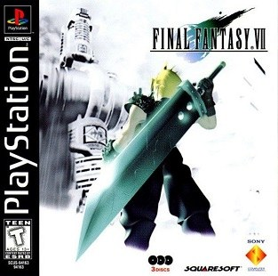

Avant de partir
Introduction

Jaquette © SQUARE ENIX. Guide non officiel.
L'essentiel
- Le jeu : Final Fantasy VII, trois disques, 40 heures pour l'histoire, 80 à 100 heures pour tout faire.
- Les trois systèmes : les Matérias (sorts, invocations, commandes), les limites (la jauge se remplit en encaissant des coups) et les Talents de l'ennemi.
- Les grands manquables : Youfie et Vincent, facultatifs et jamais annoncés, la quête d'Utai avant le disque 3, et l'équipement d'Aéris avant la fin du disque 1.
- Avant de partir : règle le combat sur « Attendre » si tu débutes.
Objectif
Te donner tout ce qu'il faut savoir avant de lancer la partie : ce qu'est Final Fantasy VII, comment marchent ses systèmes (Matérias, limites, combats en temps actif), les pièges qui coûtent cher aux débutants, et la façon de lire ce guide pour viser le 100 %.
Le jeu en deux mots
Final Fantasy VII (Square, 1997) suit Clad, un ancien membre du SOLDAT devenu mercenaire, embauché par Avalanche, un groupe qui s'attaque aux réacteurs Mako de la Shinra, à Midgar. L'histoire part de là pour s'étendre à toute la planète. La partie tient sur trois disques : un long premier disque (Midgar puis le tour du monde), un deuxième qui ouvre le Hautvent et la liberté totale, et un troisième très court, consacré à la fin de partie et aux quêtes annexes.
Ce guide couvre l'original, dans sa traduction française d'origine, celle qui dit Clad, Aéris, Youfie et Utai. Les rééditions (PC, PS4, Switch, Xbox, mobile) ont le même contenu ; quand un détail change selon la version, la section concernée le précise. Les noms suivent le site français FF7.fr ; quand le jeu écrit une majuscule sans accent (Elixir, Eclair), le guide fait de même. Remake et Rebirth sont des jeux différents, non couverts ici.
Les systèmes à comprendre
Les combats en temps actif
- La jauge de temps : chaque personnage a une jauge qui se remplit en continu ; pleine, il peut agir. Les ennemis, eux, n'attendent pas que tu choisisses.
- Le mode « Attendre », dans les options, arrête le temps pendant que tu fouilles les menus de magie, d'objets et d'invocation. Idéal pour débuter.
- La rangée arrière, réglée avec la commande Placer du menu principal, divise par deux les dégâts physiques reçus et infligés. Parfaite pour les lanceurs de sorts, et pour Barret, Vincent ou Youfie quand ils ont une arme à Longue portée, qui frappe alors à pleine puissance.
Les Matérias
- Le principe : les Matérias sont des sphères qu'on enchâsse dans les orifices des armes et des armures. Ce sont elles, et pas les personnages, qui donnent les sorts, les invocations, les commandes et les bonus.
- Cinq couleurs : vertes (magies), jaunes (commandes), rouges (invocations), violettes (bonus indépendants), bleues (soutien : elles modifient la Matéria reliée).
- Les AP : elles en gagnent en fin de combat et montent de niveau. Au niveau maître, une Matéria engendre une copie neuve : c'est le seul moyen d'avoir deux exemplaires d'une Matéria unique.
- La croissance : chaque arme ou armure fait gagner aux Matérias zéro, une, deux ou trois fois les AP. Les armes ultimes, à une exception près, n'en donnent aucun.
- Les orifices reliés (deux cercles unis par un trait) permettent les combinaisons : Tout et Restaurer pour soigner tout le groupe, El. Base et Feu sur une armure pour résister au Feu. La section 27 les détaille.
- La contrepartie : beaucoup de Matérias baissent les HP max ou la Force. Un personnage couvert de Matérias rouges est un personnage fragile.
Les limites
- La jauge de limite se remplit quand le personnage encaisse des coups. Pleine, elle remplace la commande Attaque par Limite : une attaque spéciale surpuissante.
- Quatre niveaux par personnage. On débloque les suivantes en tuant des ennemis ou en utilisant les précédentes, et la quatrième avec un objet spécial. La section 26 donne tous les compteurs.
- L'astuce : la jauge garde sa charge d'un combat à l'autre. Garde une limite pleine en réserve pour le prochain boss.
Les Talents de l'ennemi
- Le principe : avec la Matéria Talent de l'ennemi, un personnage apprend certaines attaques des monstres en les encaissant, puis peut les réutiliser. Il y en a 24, dont plusieurs ne s'apprennent qu'à un moment précis. Il existe quatre Matérias Talent de l'ennemi dans le jeu ; le tableau complet est en section 27.
L'argent, les boutiques et les objets
- Les Gils viennent des combats et de la revente. Une Matéria au niveau maître se revend parfois très cher.
- Les boutiques changent de stock au cours de l'aventure, surtout après l'obtention du Hautvent : refais le tour.
- Les Sources (de pouvoir, de protection, de magie, spirituelle, de rapidité, de chance) augmentent définitivement une statistique d'un point : Force, Vitalité, Magie, Esprit, Dextérité, Chance.
- Voler : beaucoup de boss portent une pièce d'équipement rare. Une Matéria Voler équipée dans les combats importants en rapporte des dizaines.
Les sauvegardes et le PHS
- Où sauvegarder : aux points de sauvegarde, et n'importe où sur la carte du monde.
- Le PHS, reçu à Kalm, permet de changer d'équipe sur la carte du monde ou à un point de sauvegarde. Clad reste presque toujours obligatoire.
Erreurs de débutant
- Laisser partir un équipement : à la fin du disque 1, un personnage quitte l'équipe pour de bon avec ce qu'il porte. Retire-lui ses Matérias, son accessoire et ses meilleures pièces avant le Temple des Anciens (section 14).
- Tout vendre au premier marchand : certains objets se revendent à perte et ne se rachètent jamais.
- Garder la même arme toute la partie : chaque arme a ses orifices et sa croissance d'AP. Une arme à AP doublés vaut parfois mieux qu'une arme plus puissante.
- Fuir les combats contre des ennemis à talent sans Matéria Talent de l'ennemi équipée : certaines occasions ne reviennent pas.
- Ignorer Youfie et Vincent : ils sont facultatifs, le jeu ne les annonce jamais, et les rater coûte deux armes ultimes, deux limites niveau 4 et plusieurs Matérias (section 23).
- Remettre la quête d'Utai à plus tard : elle devient impossible au disque 3.
- Filer à la fin dès le disque 3 : tout ce qui est facultatif doit être fait avant l'option « Allez, on avance », dans la Grotte Nord.
Comment lire ce guide
- Les sections 01 à 22 suivent l'histoire dans l'ordre. Chacune a le même plan : L'essentiel, Objectif, Itinéraire, Déroulé pas à pas, Quêtes et lieux, Butin exhaustif, Conseils et pièges, Alertes, Check-list.
- Les sections 23 à 28 regroupent les quêtes annexes et les systèmes : personnages secrets, Gold Saucer, chocobos, armes ultimes et limites, Matérias et talents, Gelnika et Armes.
- Les alertes : ⏳ Manquable signale ce qui peut être raté définitivement ; ⚠️ un point de non-retour ou un piège. Elles sont toutes récapitulées dans les annexes.
- Le gras marque les objets à ramasser et les actions décisives ; les fiches de boss donnent HP, faiblesses et récompense.
- Les spoilers sont légers : le guide nomme les lieux et les boss, mais ne raconte pas l'histoire.
Check-list de départ
- Mode de combat réglé sur « Attendre » si tu débutes
- Vitesse des messages réglée à ton goût dans les options
- Une Matéria Voler sur un personnage pour les boss
- Une Matéria Talent de l'ennemi toujours équipée dès que tu en as une
- Les annexes lues une fois pour repérer les grands manquables
Partie 01
Le réacteur n°1 et le Secteur 7
L'essentiel
- Boss : Scorpion gardien, faible à la Foudre ; ne frappe pas quand il lève la queue.
- À ne pas rater : la Matéria Restaurer au fond du réacteur, la Matéria Tout au premier étage du marchand d'armes du Secteur 7.
- Le premier choix qui compte : acheter une fleur à la marchande du Secteur 8, puis l'offrir à Tifa ou à Marlène (rendez-vous du Gold Saucer).
- Avant de partir : achète la Matéria Feu et des Bijoux de fer, qu'on ne trouve qu'ici.
Objectif
Faire sauter le réacteur Mako n°1 avec le groupe Avalanche, sortir avant l'explosion, puis rejoindre leur planque : le bar Septième ciel, dans les taudis du Secteur 7. C'est le chapitre d'apprentissage : combats en temps réel, sauvegarde, Limites, et surtout les Matérias, ces sphères qui donnent leurs sorts et leurs commandes aux personnages.
Itinéraire
📍 La zone en images : Réacteur n°1 · Taudis du Secteur 7 — sur le Final Fantasy Wiki, en anglais : carte, captures et objets de chaque lieu.
- Le quai de la gare du Secteur 1, où le train dépose le commando.
- Le réacteur n°1 : deux portes à code, l'ascenseur, une descente par escaliers, échelles et tuyaux jusqu'au cœur du réacteur.
- La sortie chronométrée, par le même chemin.
- Le Secteur 8 : la marchande de fleurs, puis la fuite vers un train en marche.
- Les taudis du Secteur 7 : le bar, le marchand d'armes, la boutique du préfabriqué, la gare.
Déroulé pas à pas
L'assaut du réacteur
- Le quai : fouille les deux gardes assommés près du train, 2 Potions. Le premier combat, contre deux Milices, se gagne d'un coup d'épée chacun.
- Les noms : le jeu te laisse renommer Clad, puis Barret. Le guide garde les noms d'origine.
- Barret en seconde ligne : il rejoint l'équipe en haut des escaliers. Place-le en rangée arrière (menu Ordre) : il tire à distance, donc il frappe aussi fort de là et encaisse moins.
- Les deux portes à code : Biggs ouvre la première, Jesse déchiffre la seconde.
- La petite salle au sud-est de la pièce suivante, avant de reparler à Jesse : un coffre, Queue de Phénix.
- L'ascenseur, puis la descente : escaliers, un trou que Clad franchit d'un bond, et Jesse qui explique les échelles.
- Devant Jesse, au pied de la première échelle : une Potion par terre. Ne lui parle pas encore.
- Les tuyaux et les échelles jusqu'au premier point de sauvegarde du jeu. Sauvegarde : un boss arrive.
- La grande allée : une petite sphère bloque le chemin, c'est la Matéria Restaurer. Tu ne pourras l'équiper qu'après le tutoriel de Barret.
- Soigne-toi avant d'avancer vers le cœur du réacteur : Clad pose la bombe, et le boss surgit.
Boss : Scorpion gardien
- Fiche : 800 HP, faible à la Foudre, insensible à presque toutes les altérations. Tu ne peux pas fuir.
- Ce qui marche : le sort Foudre de Clad, car il a déjà les Matérias Foudre et Glace sur son épée, et les tirs de Barret.
- Le piège : quand il lève la queue, chaque coup que tu lui portes déclenche sa riposte Queue de laser, l'attaque qui fait le plus mal. Pendant ce temps, soigne-toi ou attends qu'il la rabaisse, puis reprends.
- Récompense : le Fusil d'attaque, à équiper tout de suite à Barret.
La fuite et le Secteur 8
- Dix minutes pour sortir : le compte à rebours démarre et continue même menu ouvert. C'est large, mais ne t'attarde pas.
- Jesse est coincée en remontant : arrête-toi et parle-lui pour la libérer, sinon il faudra revenir la chercher.
- Les deux portes du haut : parle à Jesse puis à Biggs, et le réacteur saute derrière vous.
- Le Secteur 8 : en haut des marches, la marchande de fleurs te demande ce qui se passe.
- Réponds « Rien… Écoute… » pour pouvoir lui acheter une fleur, 1 Gil.
- L'autre réponse ne change rien, mais tu n'auras pas de fleur.
- L'écran suivant : une Potion par terre, à gauche.
- Les soldats te barrent la route plus loin : le jeu te laisse fuir à chaque fois. Fuis, Clad finit par sauter sur le toit d'un train qui passe.
- Dans le train, rejoins l'équipe à l'avant et parle à Jesse : elle te montre le plan du réseau ferré de Midgar.
Les taudis du Secteur 7
- La gare du Secteur 7 : suis Barret, puis va à gauche. Un point de sauvegarde t'attend au nord de l'écran suivant.
- Le bar Septième ciel : Tifa, l'amie d'enfance de Clad, et Marlène, la fille de Barret. Si tu as la fleur, choisis à qui la donner.
- Le sous-sol : descends par le flipper, qui sert de monte-charge. Après la dispute avec Barret, remonte et fais mine de partir : Tifa te retient, et Barret te verse ta paie, 1 500 Gils.
- Le lendemain matin : parle à Tifa (affection), puis à Barret, qui te propose le tutoriel des Matérias. Après lui, tu peux équiper Restaurer.
- Le marchand d'armes, en face du bar :
- rez-de-chaussée : armures, dont le Bijou de fer, et Grenades ;
- premier étage, la salle des tutoriels : près de l'homme à droite de l'entrée, la Matéria Tout, et un coffre tombé du toit, Ether.
- La boutique du préfabriqué, à gauche : objets et Matérias, dont Feu, que tu n'as pas encore.
- La gare : sauvegarde, puis prends le train pour le Secteur 5.
Quêtes et lieux
- Le marchand d'armes du Secteur 7 : armes, armures et Grenades au rez-de-chaussée ; à l'étage, une salle où des habitants expliquent sauvegarde, coffres, Limites et Matérias. C'est le seul endroit du jeu où le Bijou de fer est en vente.
- La boutique du préfabriqué : Potions, Queues de Phénix, Antidotes et Matérias de base.
- Le bar Septième ciel : la planque d'Avalanche, qui sert d'auberge pendant ce chapitre.
- Les choix pour le rendez-vous du Gold Saucer : ils commencent ici. Chaque personnage a une jauge d'affection cachée ; la plus haute décide qui accompagne Clad au rendez-vous de la grande roue (section 09).
| Moment | Réponse | Effet |
|---|---|---|
| Jesse, dans le train : « La prochaine fois, je t'en donnerai un que j'ai fait moi-même. » | « Ce sera avec plaisir. » | Tifa −3 |
| Au bar, si tu as la fleur | La donner à Tifa / à Marlène | Tifa +5 / Barret +5 |
| Tifa, au bar, avant le sous-sol : « Que dirais-tu d'un coup à boire ? » | « Donne-moi quelque chose de fort. » | Tifa +5 |
| Tifa, quand tu veux partir : « Tu pars comme ça sans te soucier de ton amie d'enfance !? » | « Comment peux-tu dire cela ! » | Tifa +5 |
| Tifa, le matin, avant Barret : « Tu as bien dormi ? » | « Non, à cause de Barret. » / « À tes côtés, on dort bien. » | Barret +5 / Tifa +5 |
Butin exhaustif
| Nom exact | Type | Où / comment l'obtenir | Utilité |
|---|---|---|---|
| Potion ×2 | Soin | Sur les deux gardes assommés, quai du Secteur 1 | Rend 100 HP |
| Queue de Phénix | Soin | Coffre de la petite salle au sud-est, avant de reparler à Jesse | Ranime un allié K.O. |
| Potion | Soin | Au sol, devant Jesse, au pied de la première échelle | Rend 100 HP |
| Restaurer | Matéria | Au sol dans la grande allée, juste avant le cœur du réacteur | Sorts de soin |
| Fusil d'attaque | Arme Barret | Butin du Scorpion gardien | Nettement meilleure que l'arme de départ |
| Fleur | Objet | 1 Gil chez la marchande du Secteur 8, après « Rien… Écoute… » | À offrir à Tifa ou à Marlène |
| Potion | Soin | Au sol, à gauche, Secteur 8 | Rend 100 HP |
| 1 500 Gils | Gils | Barret, après la mission | Premiers achats |
| Tout | Matéria | Près de l'homme à droite de l'entrée, premier étage du marchand d'armes | Étend un sort lié à tout le groupe ou à tous les ennemis |
| Ether | Soin | Coffre tombé du toit, même salle | Rend des MP |
| Bijou de fer | Armure | Marchand d'armes du Secteur 7, seul vendeur du jeu | Défense et un orifice de plus |
| Feu | Matéria | Boutique du préfabriqué | Magie de feu |
Conseils et pièges
- Les Matérias font tout le jeu : elles se logent dans les orifices des armes et des armures et gagnent des PC à chaque combat pour monter de niveau. Deux orifices liés permettent d'associer une Matéria de soutien (bleue) à une autre.
- Lie Tout à Restaurer : un seul sort soigne alors tout le groupe. C'est la meilleure association du début de partie.
- Achète un Bijou de fer par personnage : plus de défense et un orifice de plus, et c'est ta seule occasion.
- Ne gaspille pas tes MP contre les soldats : une attaque suffit le plus souvent.
- Les Limites se chargent quand un personnage encaisse des coups, et ne coûtent rien : garde-les pour les boss.
Alertes
- ⏳ Manquable : la fleur du Secteur 8. Sans elle, tu perds le choix « Tifa ou Marlène » du bar et ses 5 points d'affection.
- ⏳ Manquable : le Bijou de fer, vendu seulement au Secteur 7. Il sera vite dépassé, mais c'est la seule armure à deux orifices de ce début de jeu.
- ⚠️ Le compte à rebours de dix minutes après le Scorpion gardien : un Game Over est possible si tu traînes.
Check-list
- 2 Potions sur les gardes du quai
- Queue de Phénix du coffre du réacteur
- Potion devant Jesse
- Matéria Restaurer
- Scorpion gardien vaincu, Fusil d'attaque équipé à Barret
- Fleur achetée à 1 Gil, Potion du Secteur 8
- 1 500 Gils de Barret
- Matéria Tout et Ether chez le marchand d'armes
- Bijou de fer pour chaque personnage, Matéria Feu achetée
Partie 02
Le réacteur n°5 et les taudis du Secteur 5
L'essentiel
- Boss : Briseur de l'air, faible à la Foudre ; frappe-le dans le dos, les dégâts sont multipliés.
- À ne pas rater : les cadeaux des passagers du train pendant l'alarme, la Matéria Couverture dans le jardin d'Aéris.
- Le choix du moment : laisse les 5 Gils du tiroir au petit garçon, il te rendra un Ether turbo.
- Avant de partir : pousse les bons tonneaux dans l'église, c'est gratuit et Aéris t'en sera reconnaissante.
Objectif
Faire sauter le réacteur n°5, tomber dans le piège tendu par le président Shinra, puis atterrir dans une église du Secteur 5, sur le parterre de fleurs d'Aéris. Tu la protèges des Turks, tu la raccompagnes chez elle, puis elle te guide vers le Secteur 7… par un chemin qui passe par le Wall Market.
Itinéraire
📍 La zone en images : Réacteur n°5 · Taudis du Secteur 5 · Église — sur le Final Fantasy Wiki, en anglais : carte, captures et objets de chaque lieu.
- Le train : une course d'un wagon à l'autre quand l'alarme sonne.
- Les tunnels sous la plaque du Secteur 4 : un conduit, des échelles, une grande salle.
- Le réacteur n°5 : même plan que le n°1, puis la porte à trois boutons et la sortie, où le piège se referme.
- L'église du Secteur 5, la fuite par la charpente et les toits.
- Les taudis du Secteur 5 : boutiques, la maison d'Aéris et son jardin, la maison du petit garçon.
- Le chemin du Secteur 6 jusqu'à l'aire de jeu.
Déroulé pas à pas
Le train
- Le moniteur : Tifa te montre le plan du réseau. L'alarme se déclenche, et il faut rejoindre l'avant du train, wagon par wagon, avant que les portes ne se verrouillent. Le temps est large.
- Les passagers, pendant l'alarme seulement :
- premier wagon, l'homme au fond : Queue de Phénix ;
- deuxième wagon, l'homme qui te pose une question : accepte, Super potion.
- Le troisième wagon : un bruit de pièces, un passager vient de te voler des Gils. Retourne lui parler et réponds-lui pour les récupérer.
- Le dernier wagon : atteins-le avant le verrouillage, puis parle à Tifa pour sauter du train.
Les tunnels et le réacteur
- Les rayons de détection bloquent le tunnel : prends la trappe à gauche, juste avant eux, et descends. Dans le conduit, un Ether.
- La grande salle : descends les deux échelles, puis remonte par l'échelle juste à gauche de celle d'où tu viens. Tous les chemins se rejoignent, ne t'inquiète pas si tu te trompes.
- Près de Jesse, à gauche du conduit : une Potion.
- Avant le réacteur : une Tente par terre, puis un point de sauvegarde.
- Le réacteur n°5 : glisse le long du tuyau à droite de la porte, puis suis le même trajet qu'au premier réacteur jusqu'au cœur. Clad pose la bombe, et un souvenir de Nibelheim lui revient.
- Le retour : cette fois, monte par l'escalier au lieu du tuyau, et reprends l'ascenseur. À la sortie, un coffre : Ether.
- La porte à trois boutons : Clad, Tifa et Barret doivent appuyer exactement en même temps. Les essais sont illimités.
- Sauvegarde, utilise la Tente si l'équipe est entamée, puis avance : le président Shinra t'attend avec son robot.
Boss : Briseur de l'air
- Fiche : 1 200 HP, faible à la Foudre, résiste au Feu. Le combat commence en attaque de côté : Tifa et Barret d'un côté du robot, Clad de l'autre.
- Ce qui marche : frapper le côté où il tourne le dos. Ses dégâts reçus dans le dos sont multipliés par cinq, bien plus que la normale.
- Foudre sur Clad, Glace sur Tifa, Barret au fusil, et les Limites quand le robot tourne le dos au personnage qui l'a chargée.
- Le revers : comme le groupe est coupé en deux, un sort lié à Tout ne soigne qu'un côté à la fois.
- Récompense : le Bijou Titan, une bonne armure pour Clad ou Tifa.
- La chute : le robot explose et Clad tombe dans le vide.
L'église et la fuite
- L'église du Secteur 5 : Clad atterrit sur les fleurs d'Aéris. Parle-lui jusqu'à pouvoir la nommer, puis Réno, un Turk, arrive avec des soldats.
- Les ennemis du coin : les Vices volent un objet puis s'enfuient. Ils n'ont que 68 HP : tue-les en premier, l'objet te revient.
- La charpente : Clad franchit un trou de la passerelle, mais Aéris tombe au rez-de-chaussée.
- Tu peux lui dire de se battre ou de courir, mais le mieux est de lui dire d'attendre et de monter dans la charpente.
- Pousse alors les tonneaux dans le bon ordre pour assommer les soldats : le plus proche du toit et de l'escalier, à gauche ; puis celui près du toit et du mur, au fond à gauche ; puis, des deux restants, le plus proche du mur, au fond à droite.
- Un mauvais tonneau, et Aéris doit combattre seule.
- Les toits : sortez par la gauche de la charpente et suivez les toits jusqu'aux taudis du Secteur 5.
Les taudis du Secteur 5
- Aéris rejoint l'équipe : elle commence en rangée arrière, où ses coups perdent de la force. Mets-la devant et surveille ses HP.
- La sauvegarde au nord-ouest, puis le petit bourg : boutique de Matérias et boutique d'objets.
- Le jardin d'Aéris, avant d'entrer chez elle : monte par la petite échelle et traverse. Au sol, un Ether à droite et la Matéria Couverture au bout à gauche.
- Chez Aéris : sa mère te conseille de partir seul. Tu dors à l'étage.
- Le réveil : retourne-toi, un sac au sol contient une Potion et une Queue de Phénix. Passe devant la chambre d'Aéris en marchant : en courant, le plancher grince, elle se réveille et il faut recommencer.
- La maison du petit garçon, en bas à droite du bourg :
- à l'étage, sur le mur : le premier prospectus du Turtle's Paradise ;
- la table de nuit cache 5 Gils dans un tiroir. Laisse-les : en revenant plus tard, tu trouveras un Ether turbo à la place.
- Le chemin du Secteur 6 : Aéris t'attend à la sortie du bourg. Le passage suivant est un petit labyrinthe où les décors guident mal :
- avance par la planche en bois, la poutre en fer, puis l'échelle rouge à droite ;
- passe sous le pont et traverse le cylindre grillagé ;
- finis par la poutre près du tracteur.
- L'aire de jeu : Aéris s'assoit sur le toboggan. Quand une calèche passe avec Tifa à bord, suis-la : direction le Wall Market.
Quêtes et lieux
- Les boutiques des taudis du Secteur 5 : objets et Matérias de base.
- Le Turtle's Paradise : six prospectus à lire, dispersés dans tout le jeu ; le premier est ici. La récompense se retire au bar du même nom, à Utai (section 23).
- La maison du petit garçon : le tiroir aux 5 Gils, et l'Ether turbo si tu as été honnête.
- Les choix pour le rendez-vous du Gold Saucer :
| Moment | Réponse | Effet |
|---|---|---|
| Train : atteindre le dernier wagon pendant l'alarme | — | Tifa +5, Barret +5 |
| Barret, quand Clad pend au-dessus du vide : « Hé, ça va aller pour toi ? » | « Soyons forts. » / « Je ne sais pas si je pourrai tenir… » | Barret +2 / Barret −3, Tifa +1 |
| Église : chaque tonneau poussé | Bon tonneau / mauvais tonneau | Aéris +1 / Aéris −3 |
| Église : demander à Aéris de combattre, ou de courir alors qu'elle doit se battre | — | Aéris −1 |
| Aéris, chez elle, au sujet de Tifa : « Ta petite amie ? » | « Non ! » / « Oui, c'est ça. » | Aéris +1 / Aéris −5 |
| Aéris, à l'aire de jeu du Secteur 6 | « L'emmener au secteur 7. » | Aéris +1 |
Butin exhaustif
| Nom exact | Type | Où / comment l'obtenir | Utilité |
|---|---|---|---|
| Queue de Phénix | Soin | Homme au fond du premier wagon, pendant l'alarme | Ranime un allié K.O. |
| Super potion | Soin | Homme du deuxième wagon, en acceptant sa question | Rend 500 HP |
| Ether | Soin | Dans le conduit, après la trappe des rayons de détection | Rend des MP |
| Potion | Soin | Près de Jesse, à gauche du conduit | Rend 100 HP |
| Tente | Soin | Au sol avant le point de sauvegarde du réacteur | Soigne le groupe à un point de sauvegarde |
| Ether | Soin | Coffre à la sortie de l'ascenseur, au retour | Rend des MP |
| Bijou Titan | Armure | Butin du Briseur de l'air | Bonne défense |
| Ether | Soin | Au sol, à droite, jardin d'Aéris | Rend des MP |
| Couverture | Matéria | Au sol, au bout à gauche du jardin d'Aéris | Le porteur encaisse parfois les coups à la place d'un allié |
| Potion, Queue de Phénix | Soin | Sac au sol, chambre d'amis d'Aéris, au réveil | — |
| Prospectus du Turtle's Paradise n°1 | À lire | Mur de la chambre du petit garçon | Quête des six prospectus |
| Ether turbo | Soin | Tiroir du petit garçon, plus tard, si tu as laissé les 5 Gils | Rend beaucoup de MP |
Conseils et pièges
- Parle aux passagers dès que l'alarme sonne : passé l'alarme, ils n'ont plus rien à te donner.
- Contre le Briseur de l'air, vise toujours son dos : c'est le combat le plus facile du début si tu tournes avec lui.
- Équipe la Matéria Couverture sur un personnage costaud, Clad ou Barret : il protégera Aéris.
- Garde Aéris devant : en rangée arrière, elle frappe trop faiblement pour aider.
- Ne cours pas devant la chambre d'Aéris au réveil.
Alertes
- ⏳ Manquable : les objets des passagers du train, seulement pendant l'alarme.
- ⏳ Manquable : l'Ether turbo du petit garçon, perdu si tu prends les 5 Gils.
- ⏳ Manquable : tout ce qui se trouve dans Midgar devient inaccessible quand tu quitteras la ville, à la fin de la section 05.
Check-list
- Queue de Phénix et Super potion des passagers du train
- Gils récupérés sur le voleur du troisième wagon
- Ether du conduit, Potion et Tente des tunnels, Ether du coffre de l'ascenseur
- Briseur de l'air vaincu, Bijou Titan équipé
- Tonneaux poussés dans le bon ordre
- Ether et Matéria Couverture du jardin d'Aéris
- Potion et Queue de Phénix chez Aéris
- Premier prospectus du Turtle's Paradise lu, 5 Gils laissés dans le tiroir
Partie 03
Wall Market et le palais de Don Cornéo
L'essentiel
- Boss : Aps, dans les égouts, faible au Feu.
- À ne pas rater : les quatre meilleures pièces du déguisement (Robe soie, Perruque-blonde, Parfum sexy, Diadème diamants) : avec elles, Cornéo choisit Clad à coup sûr.
- Le choix du moment : dans la chambre de Cornéo, la réponse qui donne 5 points d'affection à Barret.
- Avant le palais : achète le Poing métallique, le Bâton de mythril et des Cercles mythril.
Objectif
Tifa a été emmenée chez Don Cornéo, le parrain du Wall Market, au Secteur 6. Les hommes n'entrent pas chez lui : Aéris a donc l'idée de déguiser Clad en femme. Rassemble le déguisement, entre dans le palais, retrouve Tifa et fais parler Cornéo.
Itinéraire
📍 La zone en images : Wall Market — sur le Final Fantasy Wiki, en anglais : carte, captures et objets de chaque lieu.
- Le bas du Wall Market, à l'entrée : le magasin de vêtements, le restaurant, la pharmacie, l'auberge, le magasin de Matérias et le Honey Bee Inn.
- Le haut du Wall Market : le bar, le gymnase et le magasin d'armes.
- Le palais de Don Cornéo, tout au nord.
- Les égouts, où Cornéo t'expédie.
Déroulé pas à pas
Repérer les lieux
- Le magasin d'armes, dans le haut du Wall Market : Poing métallique pour Tifa, Bâton de mythril pour Aéris, et des Cercles mythril (ou des Bijoux Titan, moins chers). La boutique d'objets, elle, ne vend rien.
- Le Honey Bee Inn, tout au sud-est : demande à l'homme devant l'entrée s'il connaît Tifa. Elle est chez Don Cornéo.
- Le garde du palais, au nord : il laisse entrer Aéris, pas Clad. Aéris propose le déguisement.
Le déguisement
Chaque pièce ajoute des points de beauté : 5 pour la meilleure version, 3 pour la moyenne, 1 pour la moins bonne. Le total décide qui Cornéo choisit : 19 points ou plus, c'est Clad ; de 12 à 18, Aéris ; en dessous, Tifa. Les quatre meilleures pièces font 20 points.
- La robe : au magasin de vêtements, la vendeuse t'envoie chercher son père, qui boit au bar du haut. Il demande quel genre de robe tu veux.
- « Douce », puis « chatoyante » : la Robe soie, la meilleure.
- Les autres réponses donnent la Robe satin ou la Robe coton.
- Reviens au magasin : il l'a confectionnée.
- La perruque : au gymnase du haut, Big Bro te propose un concours d'accroupissements contre un de ses élèves.
- Une flexion complète = carré, croix, rond, dans cet ordre et en rythme. Tu as trente secondes.
- L'élève en fait autour de 15 sur PlayStation et fait des pauses : profite-en.
- Victoire : la Perruque-blonde. Égalité : la Perruque-brune ; défaite : la Perruque.
- Le parfum :
- au restaurant, au centre du bas du marché, assieds-toi à la seule place libre du comptoir et commande n'importe quel plat (70 Gils) ;
- à la question sur le repas, réponds « C'était bon » : Coupons pharmacie ;
- à la pharmacie, juste en dessous, prends le troisième remède, le Digestif ;
- au bar du haut, frappe à la porte des toilettes, au fond, et donne-le à la cliente malade : Parfum sexy. Les deux autres remèdes donnent le Parfum fleur ou le Parfum.
- Le diadème : au magasin de Matérias, le vendeur gêné veut savoir ce que vend le distributeur de l'auberge.
- Prends une chambre à l'auberge (10 Gils) : la nuit, tu te retrouves devant le distributeur.
- Achète l'article à 200 Gils, puis rapporte-le au vendeur : Diadème diamants. Celui à 100 Gils donne le Diadème rubis, celui à 50 Gils le Diadème verre.
- Le Honey Bee Inn, facultatif avec les quatre meilleures pièces :
- l'homme en bas à droite de l'entrée du marché te donne sa Carte membre ;
- au club, choisis une chambre : tu en ressors avec les Slips bikinis ou la Lingerie ;
- ensuite, dans la loge, demande aux filles de te maquiller : un bonus de beauté si une pièce est ratée.
- Le magasin de vêtements : Clad s'y change. Sauvegarde, puis monte au palais.
Le palais
- À l'étage, prends la porte tout à gauche et descends : Tifa est au sous-sol. Dans le coin, un Ether.
- La chambre de Cornéo, par la double porte du fond : il fait son choix.
- S'il choisit Clad, tu passes directement à l'interrogatoire.
- Sinon, Clad se retrouve avec les hommes de main : parle à tout le monde, puis à Scotch, et deux combats faciles s'enchaînent avant de rejoindre la chambre.
- Derrière le lit de Cornéo : un Hyper.
- L'interrogatoire : Cornéo avoue le projet de la Shinra contre le Secteur 7, puis tire un levier. Tout le monde tombe dans les égouts.
Les égouts et Aps
- Le réveil : réveille Tifa et Aéris. La première à qui tu parles gagne 3 points d'affection.
- Le boss se jette sur vous dès le réveil : équipe-toi avant de parler à la seconde.
Boss : Aps
- Fiche : 1 800 HP, faible au Feu.
- Ses attaques : Coup de queue, Lécher, qui inflige Tristesse (la jauge de Limite monte deux fois moins vite), et Tsunami, une vague qui touche tout le groupe et le blesse un peu lui-même quand elle le prend à revers.
- Ce qui marche : le sort Feu sur Clad et Aéris, Restaurer lié à Tout pour soigner le groupe après chaque Tsunami. L'Hyper de Cornéo guérit la Tristesse.
- Récompense : une Queue de Phénix.
Quêtes et lieux
- Le magasin d'armes du Wall Market : les premières vraies améliorations d'armes pour Tifa et Aéris. Bien plus tard dans le jeu, son propriétaire vendra un accessoire rare, le Gant de voleur.
- Le Honey Bee Inn : accessible avec la Carte membre ; seul le maquillage compte pour le choix de Cornéo.
- Le gymnase : le concours d'accroupissements, rejouable seulement pendant cette visite.
- Les choix pour le rendez-vous du Gold Saucer :
| Moment | Réponse | Effet |
|---|---|---|
| Si Cornéo choisit Tifa, en rejoignant Aéris | « Tu vas bien ? » / « Nous devons aider Tifa ! » | Aéris +3 / Aéris −2 |
| Si Cornéo choisit Aéris, en rejoignant Tifa | « Ça va ? » / « Nous devons aider Aéris !! » | Tifa −2 / Tifa +3 |
| Si Cornéo choisit Clad : « Tu m'aimes… aussi ? » puis « Il… il n'y a personne d'autre, n'est-ce pas ? » | « Ummm… », puis « Si, il s'appelle Barret… » | Barret +5 |
| Au réveil dans les égouts | Parler d'abord à Aéris / à Tifa | Aéris +3 / Tifa +3 |
Butin exhaustif
| Nom exact | Type | Où / comment l'obtenir | Utilité |
|---|---|---|---|
| Poing métallique | Arme Tifa | Magasin d'armes du Wall Market | Meilleur que le Gant de cuir |
| Bâton de mythril | Arme Aéris | Magasin d'armes du Wall Market | Meilleur que le Bâton de garde |
| Cercle mythril | Armure | Magasin d'armes du Wall Market | Bonne défense, surtout magique |
| Robe soie | Objet clé | Le père de la vendeuse, au bar : « douce », puis « chatoyante » | 5 points de beauté |
| Perruque-blonde | Objet clé | Concours d'accroupissements gagné | 5 points de beauté |
| Coupons pharmacie | Objet clé | Restaurant, réponse « C'était bon » | À échanger à la pharmacie |
| Digestif | Objet clé | Pharmacie, troisième remède | Pour la cliente des toilettes du bar |
| Parfum sexy | Objet clé | La cliente malade, contre le Digestif | 5 points de beauté |
| Diadème diamants | Objet clé | Vendeur de Matérias, contre l'article à 200 Gils du distributeur | 5 points de beauté |
| Carte membre | Objet clé | L'homme en bas à droite de l'entrée du marché | Ouvre le Honey Bee Inn |
| Slips bikinis ou Lingerie | Objet clé | Chambre choisie au Honey Bee Inn | Donne accès au maquillage |
| Ether | Soin | Coin du sous-sol du palais, près de Tifa | Rend des MP |
| Hyper | Soin | Derrière le lit de Cornéo | Soigne la Tristesse, donne la Fureur |
| Queue de Phénix | Soin | Butin d'Aps | Ranime un allié K.O. |
Conseils et pièges
- Vise les 20 points de beauté : c'est gratuit ou presque, ça évite deux combats et c'est la seule façon d'offrir 5 points d'affection à Barret.
- Sauvegarde avant le concours d'accroupissements : une défaite coûte la meilleure perruque.
- Équipe le Feu avant de réveiller la seconde : Aps attaque tout de suite après.
- Ne garde pas tes Gils : les armes du Wall Market rendent les égouts et le pilier bien plus simples.
Alertes
- ⏳ Manquable : les meilleures pièces du déguisement et le choix de Cornéo. La quête ne se rejoue pas.
- ⏳ Manquable : les 5 points d'affection de Barret, possibles seulement si Cornéo choisit Clad.
- ⚠️ Une fois dans les égouts, tu ne reviens au Wall Market qu'au disque 2, avec la Clé du Secteur 5 (section 21).
Check-list
- Poing métallique, Bâton de mythril et armures achetés
- Robe soie
- Perruque-blonde (concours gagné)
- Parfum sexy (restaurant, pharmacie, cliente du bar)
- Diadème diamants (distributeur à 200 Gils)
- Carte membre et maquillage au Honey Bee Inn
- Choisi par Don Cornéo
- Ether du sous-sol et Hyper de la chambre
- Aps vaincu
Partie 04
Les égouts, le cimetière des trains et le pilier
L'essentiel
- Boss : Réno des Turks, au sommet du pilier ; il résiste à la Foudre, et ses Pyramides se brisent d'un simple coup.
- À ne pas rater : la Matéria Voler dans les égouts, la Matéria Sentir à l'aire de jeu du Secteur 6, au retour.
- Le choix du moment : la réponse à Marlène chez Elmyra (Tifa ou Aéris).
- Avant le Bâtiment Shinra : achète les Batteries au Wall Market et pose la troisième pour un Ether.
Objectif
Sortir des égouts, traverser le cimetière des trains et rejoindre le pilier du Secteur 7, que la Shinra s'apprête à faire tomber sur les taudis. Après la chute de la plaque, tu reviens au Secteur 5, puis tu grimpes le long des câbles du Wall Market jusqu'au pied du Bâtiment Shinra.
Itinéraire
📍 La zone en images : Égouts · Cimetière des trains · Secteur 7 — sur le Final Fantasy Wiki, en anglais : carte, captures et objets de chaque lieu.
- Les égouts, sous le Wall Market : une passerelle et un trou où sauter.
- Le cimetière des trains : deux écrans de wagons à traverser, à escalader et à déplacer.
- Le pilier du Secteur 7 : un long escalier en colimaçon jusqu'à la plaque.
- Le retour : l'aire de jeu du Secteur 6, la maison d'Elmyra au Secteur 5, puis le Wall Market.
- L'ascension le long d'un câble, de générateurs en hélices, jusqu'à la plaque supérieure.
Déroulé pas à pas
Les égouts
- Avant tout : Aps vient d'être vaincu (section 03). Ramasse la Potion à gauche du point de départ.
- La passerelle : redescends dans l'eau, prends l'échelle, puis suis la passerelle. Au sol, la Matéria Voler.
- Le trou au bout de la passerelle : choisis de sauter.
- La sortie : dans la seconde salle, grimpe la partie arrondie au fond ; l'échelle de droite mène au cimetière des trains.
Le cimetière des trains
- Le premier écran : sauvegarde, traverse le premier wagon éclairé, puis fouille le bidon de l'autre côté : Super potion.
- Le toit : reviens vers la sauvegarde et monte par l'échelle branlante sur le wagon : Super potion.
- La poutre couchée entre deux wagons : saute dessus, prends à gauche et redescends. Le bidon au nord : Ecran sonore.
- Plus au sud-est, dans un wagon : Potion. Traverse ce wagon vers le sud, ressors à droite, monte sur le toit par l'échelle et redescends par celle d'en face.
- Deux wagons plus au nord : une Potion au sol, avant de changer d'écran.
- Le deuxième écran :
- en bas à gauche : Potion ;
- plus à gauche, dans un bidon : Ether.
- Les locomotives à déplacer :
- entre dans la locomotive marron la plus à droite : Clad la fait avancer ;
- fais le tour par l'arrière et monte sur le toit du wagon gris : Super potion ;
- entre dans la locomotive la plus au nord : Clad la recule ;
- saute sur la locomotive déplacée et prends le chemin de gauche.
- À voler dans le cimetière :
- les Eligors portent un Bâton de frappe pour Aéris ; ne t'acharne pas, il s'achète aussi à Junon ;
- les Fantômes portent une Main de fantôme, un objet qui absorbe des MP à l'ennemi.
Le pilier du Secteur 7
- Au pied du pilier, la Shinra attaque. Aéris n'est plus avec vous : ses Matérias reviennent dans ton stock. Reprends Restaurer et Voler.
- L'homme à gauche de l'écran vend des objets. Sauvegarde, puis monte l'escalier en colimaçon : quelques combats contre des soldats en chemin.
- Au sommet, Barret te rejoint ; le jeu te laisse l'équiper avant le combat, car il n'a plus rien sur lui.
Boss : Réno
- Fiche : 1 000 HP, résiste à la Foudre.
- Pyramide : il enferme un personnage, qui ne peut plus agir. Frappe la pyramide avec un autre personnage, un coup suffit à la briser.
- Bâton électro-mag : il paralyse un personnage un moment.
- Ce qui marche : tout le monde en première ligne, Feu et Glace plutôt que Foudre, Barret au fusil.
- Réno n'a rien à voler.
- Récompense : un Ether.
- Après le combat : parle à Barret et Tifa, regarde l'hélicoptère emporter Aéris, puis parle encore à Barret pour fuir avant l'effondrement.
Le retour au Secteur 5
- Le labyrinthe du Secteur 6 : avance juste assez vers le sud pour que Tifa et Barret te rejoignent.
- Fais demi-tour vers l'aire de jeu : la Matéria Sentir est par terre. Elle est facile à rater si tu fonces vers le Secteur 5.
- La maison d'Elmyra, au Secteur 5 : elle raconte l'histoire d'Aéris. À l'étage, parle à Marlène.
- La maison du petit garçon : si tu as laissé les 5 Gils dans son tiroir (section 02), l'Ether turbo t'y attend.
L'ascension vers la plaque
- Le Wall Market : le magasin de Matérias est maintenant ouvert (Feu, Glace, Foudre, Restaurer, Couverture).
- Le magasin d'armes : l'homme derrière la grille, à gauche, vend des Batteries, 100 Gils pièce. Prends les trois.
- Au nord du magasin, les enfants t'entraînent vers la droite : parle à celui qui se tient devant le pilier.
- Le premier générateur : suis le câble jusqu'en haut ; Clad saute à gauche. Traverse vers la droite et touche la prise jaune en bas : une Batterie fait tourner l'hélice, qui sert de passage.
- Le deuxième générateur, au bout des rails : pose une Batterie, le bras jaune et noir se lève et ouvre la suite.
- Le troisième emplacement : en haut du câble, Clad remarque la barre où il faudra sauter. Avant de sauter, monte encore : une dernière prise ouvre une petite boîte, Ether.
- Le saut : redescends devant la barre qui se balance. Appuie au moment exact où le petit bruit de la barre se termine ; plusieurs essais sont souvent nécessaires.
- Le pied du Bâtiment Shinra : grimpe encore un peu. La section 05 commence ici.
Quêtes et lieux
- Le magasin d'armes du Wall Market : les Batteries, derrière la grille.
- Le magasin de Matérias du Wall Market : ouvert à ce retour.
- L'homme du pilier : dernière boutique avant l'ascension.
- Les choix pour le rendez-vous du Gold Saucer :
| Moment | Réponse | Effet |
|---|---|---|
| Marlène, à l'étage chez Elmyra : « Je crois qu'elle t'aime bien, Clad ! » | « Je ne sais pas. » / « Espérons-le. » | Tifa +3, Aéris −3 / Aéris +3, Tifa −3 |
Butin exhaustif
| Nom exact | Type | Où / comment l'obtenir | Utilité |
|---|---|---|---|
| Potion | Soin | À gauche du point de départ des égouts | Rend 100 HP |
| Voler | Matéria | Au sol, sur la passerelle des égouts | Commande Voler |
| Super potion | Soin | Bidon après le premier wagon éclairé | Rend 500 HP |
| Super potion | Soin | Toit du premier wagon, par l'échelle branlante | Rend 500 HP |
| Ecran sonore | Soin | Bidon au nord de la poutre | Soigne le Silence |
| Potion ×2 | Soin | Wagon au sud-est de la poutre ; au sol avant le deuxième écran | Rend 100 HP |
| Potion | Soin | En bas à gauche du deuxième écran | Rend 100 HP |
| Ether | Soin | Bidon, plus à gauche du deuxième écran | Rend des MP |
| Super potion | Soin | Toit du wagon gris, en déplaçant les locomotives | Rend 500 HP |
| Bâton de frappe | Arme Aéris | À voler sur les Eligors ; aussi en vente à Junon et à Gongaga | Arme d'Aéris |
| Main de fantôme | Objet | À voler sur les Fantômes, ou sur eux une fois vaincus | Absorbe jusqu'à 32 MP à un ennemi |
| Ether | Soin | Butin de Réno | Rend des MP |
| Sentir | Matéria | Au sol, aire de jeu du Secteur 6, au retour | Affiche HP, MP et faiblesses de l'ennemi |
| Ether turbo | Soin | Tiroir du petit garçon, si tu as laissé les 5 Gils | Rend beaucoup de MP |
| Batterie ×3 | Objet clé | Magasin d'armes du Wall Market, 100 Gils pièce | Font fonctionner les générateurs |
| Ether | Soin | Petite boîte ouverte par la troisième Batterie, avant le saut | Rend des MP |
Conseils et pièges
- Équipe-toi dans les égouts avant de réveiller tes amies, comme indiqué en section 03 : le combat contre Aps suit aussitôt.
- Vole dès que tu peux : beaucoup d'armes et d'objets rares de FF VII ne s'obtiennent que par Voler.
- Mets Sentir sur un personnage qui ne s'en sert pas : connaître les faiblesses d'un boss change tout.
- Le saut sur la barre est le passage le plus frustrant du chapitre : écoute le son, pas l'image.
Alertes
- ⏳ Manquable : la Matéria Sentir, si tu files vers le Secteur 5 sans repasser par l'aire de jeu.
- ⏳ Manquable : l'Ether de la troisième Batterie, si tu sautes sur la barre sans monter jusqu'au dernier emplacement.
- ⚠️ Midgar se ferme à la fin de la section 05 : profite des boutiques tant qu'elles sont là.
Check-list
- Potion et Matéria Voler dans les égouts
- 3 Super potions, Ecran sonore, Ether et 3 Potions du cimetière des trains
- Bâton de frappe volé à un Eligor (ou acheté plus tard)
- Réno vaincu
- Matéria Sentir à l'aire de jeu
- Ether turbo du petit garçon
- 3 Batteries achetées, Ether de la troisième
Partie 05
Le Bâtiment Shinra
L'essentiel
- Boss : Specimen : H0512, puis Cent artilleurs et Hélimitrailleuse, Rufus en duel, et la Boule motorisée sur l'autoroute.
- À ne pas rater : la Matéria Talent de l'ennemi dans la cuve d'Aéris, la Matéria El. Base (mot de passe MAKO du premier coup), les trois coupons du 63e étage.
- À faire en passant : payer et frapper le distributeur du 64e étage ; il te le rendra plus tard.
- Avant le 70e étage : retire les Matérias de Clad et de Tifa quand le jeu le propose, et répartis-les.
Objectif
Aéris a été enlevée par la Shinra. Entre dans le siège de la compagnie, monte jusqu'au laboratoire de Hojo, libère-la et fais la connaissance de Nanaki, une créature captive. Une nuit en cellule plus tard, le président est mort : il faut fuir le bâtiment, puis Midgar.
Itinéraire
📍 La zone en images : Bâtiment Shinra — sur le Final Fantasy Wiki, en anglais : carte, captures et objets de chaque lieu.
- Le hall et la boutique du premier étage.
- L'ascenseur jusqu'au 59e, ou les escaliers de secours : une soixantaine de volées, sans combat.
- Du 60e au 66e : un étage, une énigme (statuettes, costume gris, mot de passe, portes à coupons, gymnase, maquette, conduit d'aération).
- Les 67e et 68e : le laboratoire de Hojo.
- La prison, puis les 69e et 70e étages, l'ascenseur extérieur et le toit.
- L'autoroute à moto, jusqu'aux portes de Midgar.
Déroulé pas à pas
Entrer et monter
- Devant le bâtiment : sauvegarde. Peu importe la réponse donnée à Barret, tu choisis ensuite ton chemin.
- Par l'entrée principale : des combats, mais de l'expérience dont tu auras besoin.
- Par les escaliers de secours, à gauche : une très longue montée sans combat, avec un Elixir sur la cinquième volée.
- Le hall : contre les deux soldats de l'entrée, une attaque chacun suffit. Derrière l'escalier, sur le panneau près des ascenseurs : le deuxième prospectus du Turtle's Paradise.
- Le premier étage : la boutique (Potions, Queues de Phénix, Tentes). Au fond, deux coffres qui ne s'ouvriront qu'à ton retour, bien plus tard.
- L'ascenseur, depuis l'étage suivant : à chaque arrêt, des soldats, parfois un simple employé. Les combats cessent au 59e.
- Le 59e étage : les trois gardes devant les ascenseurs te chargent. Ils lâchent la Carte 60.
Du 60e au 62e étage
- Le 60e, les statuettes : traverse en filant entre les statues quand les gardes regardent ailleurs, puis fais signe à Tifa et Barret.
- La seconde moitié est la plus dure.
- Si l'équipe se fait prendre quatre fois, les gardes abandonnent et le passage devient libre.
- Le 61e, le costume gris : parle à l'homme qui se promène et réponds « … ». Il te prend pour un réparateur et te donne la Carte 62.
- Le 62e, le mot de passe : le maire Domino ne donne la Carte 65 qu'au mot de passe.
- En version française, c'est toujours MAKO. Dans la version anglaise, il change d'une partie à l'autre : le bon mot se déduit de quatre livres mal rangés, un par bibliothèque, dont le numéro indique la lettre à lire.
- Trouvé du premier coup : la Matéria El. Base en prime. Au deuxième essai, un Elixir ; au troisième, un Ether ; au quatrième, une Potion.
Le 63e étage : les trois coupons
- La règle : tu ne peux ouvrir que trois portes, mais l'énigme se recommence autant que tu veux. Le chemin qui donne les trois coupons :
- va au mur du nord et ouvre la porte qui mène vers la gauche ;
- des deux portes qui descendent, ouvre celle de gauche ;
- dans la salle tout à gauche : Coupon A. Monte dans le conduit d'aération ;
- suis-le jusqu'à la salle voisine, à droite, sans aller jusqu'à l'entrée : Coupon B ;
- ressors et ouvre la porte de gauche, vers la salle du milieu : Coupon C ;
- reprends le conduit pour atteindre l'ordinateur, et échange les coupons.
- Les récompenses : Pendentif étoilé (coupon A), Quatre orifices (B) et Matéria Tout (C).
Les 64e, 65e et 66e étages
- Le gymnase du 64e :
- Le distributeur : paie la boisson spéciale, 250 Gils. Il tombe en panne : fais frapper Clad dessus avant de partir. À ton retour dans le bâtiment, plus tard dans le jeu, il donnera une Source de rapidité et une Source spirituelle.
- Les vestiaires : une Queue de Phénix et un Ether dans les casiers. Dans un casier du haut, un mégaphone que Clad refuse de prendre : c'est le Cri HP, l'arme ultime d'un futur compagnon, à récupérer au retour.
- La salle de gauche : sauvegarde et sieste qui soigne tout le groupe.
- La maquette de Midgar, au 65e : il manque cinq morceaux, rangés dans des coffres. Un seul coffre est ouvert à la fois, et chaque morceau posé en ouvre un autre :
- salle du haut à gauche ;
- salle du bas à gauche ;
- de nouveau en haut à gauche ;
- salle du haut à droite ;
- de nouveau en bas à gauche. Maquette complète : le coffre près de l'escalier donne la Carte 66.
- Le 66e : dans les toilettes en haut à gauche, monte sur la cuvette pour atteindre le conduit et espionner la réunion des dirigeants. Redescends et suis Hojo à l'étage supérieur.
Le laboratoire de Hojo
- Le 67e : Hojo présente son « spécimen ». Au fond de la salle, un coffre : Matéria Poison. Sauvegarde et prends l'ascenseur.
- Le 68e : Hojo enferme Aéris avec Nanaki. Clad demande qu'on mette Aéris à l'abri : choisis Tifa ou Barret pour l'emmener. Garde plutôt Barret pour le combat, ses tirs portent à distance.
Boss : Specimen : H0512
- Fiche : 1 000 HP, résiste à la Foudre, absorbe le Poison. Il se bat entouré de petites créatures qu'il régénère.
- Ce qui marche : concentre tout sur lui, pas sur ses créatures. Il est en rangée arrière, donc les sorts, les Limites et les tirs de Barret valent mieux que l'épée. Nanaki arrive avec Feu lié à Tout.
- Ses attaques empoisonnent sans arrêt : ne gaspille pas tes Antidotes, soigne les HP.
- Récompense : le Talisman. Nanaki rejoint l'équipe, et tu choisis ton troisième membre.
- Retourne-toi vers la cuve où était Aéris : la Matéria Talent de l'ennemi y est apparue. C'est elle qui permet d'apprendre des attaques ennemies.
- Le 68e, suite : deux Potions au sol près du mur sud. Le scientifique devant la salle de contrôle donne la Carte 68.
- À voler au 67e pendant que les combats aléatoires sont actifs :
- sur les SOLDAT : 3e, le Bord-dur, une épée qui double l'attaque de Clad à ce stade ;
- sur les Tueurs de mites, le Bijou de charbon, la meilleure armure du moment.
- L'ascenseur du 66e : Rude et Tseng vous y attendent. Le président fait enfermer l'équipe.
La prison et la fuite
- En cellule : approche-toi de la porte pour demander des nouvelles d'Aéris, puis choisis de dormir.
- Au réveil, la porte est ouverte : examine le garde mort dans le coin, réveille Tifa, parle-lui près du corps, puis suis la traînée de sang jusqu'à l'ascenseur. Sauvegarde.
- Le 68e : suis le sang au-delà de Nanaki, deux autres Potions t'attendent dans la salle suivante.
- Les 69e et 70e : une sauvegarde au 69e, puis le bureau du président. Rufus arrive en hélicoptère.
- Retire les Matérias de Clad et de Tifa quand le jeu le propose, et répartis-les entre Barret, Aéris et Nanaki : le prochain combat se joue à distance, les coups d'Aéris et de Nanaki ne porteront pas. Donne-leur de la magie, Foudre surtout.
Boss : Cent artilleurs, puis Hélimitrailleuse
- Cent artilleurs : 1 600 HP, faible à la Foudre. Barret tire, Aéris soigne, Nanaki lance les sorts.
- Hélimitrailleuse, aussitôt après : 1 000 HP, faible à la Foudre et au Vent. Même tactique, mais elle frappe plus fort : surveille les HP.
- Récompense : un Cercle mythril.
Boss : Rufus, en duel
- Prépare Clad : récupère les Matérias des autres et donne-lui Restaurer, Poison et Voler. Équipe-lui le Cercle mythril, sauf si tu portes déjà le Bijou de charbon, plus solide.
- Fiche : Rufus n'a que 500 HP, mais tu es seul. Son chien, Nation noire, le protège avec des barrières : élimine-le d'abord, puis vise Rufus. Rufus s'enfuit avant d'être achevé.
- Récompense : le Gilet protection.
L'autoroute et la Boule motorisée
- Le hall : retourne au bureau, sauvegarde, parle à Tifa ; l'équipe se regroupe au rez-de-chaussée, encerclée.
- La moto : Clad protège la camionnette de ses amis contre les motards de la Shinra, à coups d'épée.
- Reste un peu en retrait pour avoir le temps de réagir ; les motos rouges tombent facilement si tu les percutes.
- Chaque coup que prend la camionnette entame les HP de l'équipe pour le combat suivant.
- Avant le boss : il attaque par l'arrière, ce qui inverse les rangées. Place donc les combattants au corps à corps en rangée arrière, et Barret devant.
Boss : Boule motorisée
- Fiche : 2 600 HP, faible à la Foudre, résiste au Feu. C'est le combat le plus dur du chapitre si l'équipe arrive affaiblie de la moto.
- Ce qui marche : Foudre en boucle, et les coups physiques en appoint. Plus un personnage porte de Matérias vertes, plus sa magie frappe fort.
- Récompense : un Pendentif étoilé.
- La sortie de Midgar : à l'orée des taudis, choisis de partir, puis forme ton équipe de trois. Cap au nord-est, vers Kalm.
Quêtes et lieux
- Le Turtle's Paradise : le deuxième prospectus est au hall.
- Les deux coffres de la boutique du premier étage, le distributeur du 64e et le Cri HP des vestiaires se récupèrent au retour à Midgar, sur le disque 2 (section 21). Ce jour-là, les escaliers de secours cachent aussi la Corne béhémoth, une arme de Nanaki, et l'Elixir si tu ne l'as pas pris.
- La Matéria Talent de l'ennemi ouvre la collection des attaques ennemies (section 27).
- Les choix pour le rendez-vous du Gold Saucer :
| Moment | Réponse | Effet |
|---|---|---|
| Au 68e, qui met Aéris à l'abri | « Tifa, je compte sur toi ! » / « Barret, occupe-toi d'elle ! » | Tifa −2 / Barret +2 |
| L'équipe formée après le combat contre Specimen : H0512 | Avec Barret / Tifa / Aéris | +2 à chacun des présents |
| En cellule, Tifa : « Psst (on peut sortir ?) » | « Laisse-moi faire. » / « Vachement dur. » | Tifa +1 / Tifa −1, à chaque fois |
| En cellule, à qui Clad pense | Barret ou Aéris en premier / en deuxième | +3 / +1 |
| L'équipe formée à la sortie de Midgar | Avec Barret / Aéris / Tifa | +1 à chacun des présents |
Butin exhaustif
| Nom exact | Type | Où / comment l'obtenir | Utilité |
|---|---|---|---|
| Elixir | Soin | Cinquième volée des escaliers de secours | Restaure tous les HP et MP |
| Prospectus du Turtle's Paradise n°2 | À lire | Panneau près des ascenseurs du hall | Quête des six prospectus |
| Carte 60, 62, 65, 66, 68 | Objets clés | Gardes du 59e, homme en gris du 61e, Domino au 62e, maquette du 65e, scientifique du 68e | Ouvrent les étages |
| El. Base | Matéria | Mot de passe MAKO trouvé du premier coup | Ajoute un élément à une arme ou une protection à une armure |
| Coupon A, B, C | Objets clés | Les trois salles du 63e | À échanger à l'ordinateur |
| Pendentif étoilé | Accessoire | Coupon A ; aussi butin de la Boule motorisée | Protège du Poison |
| Quatre orifices | Armure | Coupon B | Quatre orifices de Matéria |
| Tout | Matéria | Coupon C | Deuxième exemplaire |
| Queue de Phénix, Ether | Soin | Casiers des vestiaires du 64e | — |
| Poison | Matéria | Coffre au fond du 67e | Sorts de poison |
| Talisman | Accessoire | Butin de Specimen : H0512 | Esprit +10 |
| Talent de l'ennemi | Matéria | Dans la cuve d'Aéris, après le boss | Apprend des attaques ennemies |
| Potion ×4 | Soin | Deux au 68e près du mur sud, deux dans la salle après Nanaki, en fuyant | Rend 100 HP |
| Bord-dur | Arme Clad | À voler sur les SOLDAT : 3e ; aussi en vente à Junon | Attaque doublée à ce stade |
| Bijou de charbon | Armure | À voler sur les Tueurs de mites | Meilleure armure du moment |
| Cercle mythril | Armure | Butin de l'Hélimitrailleuse | Bonne défense magique |
| Gilet protection | Accessoire | Butin de Rufus | Vitalité +10 |
| Pendentif étoilé | Accessoire | Butin de la Boule motorisée | Second exemplaire |
Conseils et pièges
- Prends l'ascenseur plutôt que les escaliers : les combats te donnent l'expérience nécessaire aux boss de la fin du chapitre, et l'Elixir des escaliers reste disponible plus tard.
- Ne repars pas du 68e sans la Matéria Talent de l'ennemi : elle apparaît dans la cuve vide, et rien ne la signale.
- Vole au 67e avant de reprendre l'ascenseur : le Bord-dur et le Bijou de charbon changent la fin du chapitre.
- Les trois derniers combats changent ton équipe sans prévenir : accepte toujours de retirer les Matérias quand le jeu le propose.
- Contre la Boule motorisée, inverse tes rangées : elle attaque par l'arrière.
Alertes
- ⏳ Manquable : la Matéria Talent de l'ennemi. Sans elle, toute la collection des attaques ennemies attend un second exemplaire, bien plus tard.
- ⏳ Manquable : la Matéria El. Base, seulement si MAKO est trouvé du premier coup.
- ⏳ Manquable : les trois coupons et leurs récompenses.
- ⏳ Manquable : les Sources du distributeur du 64e, si tu ne l'as pas payé et frappé maintenant.
- ⚠️ Point de non-retour : une fois l'autoroute franchie, Midgar se ferme jusqu'au disque 2.
Check-list
- Deuxième prospectus du Turtle's Paradise
- Cartes 60, 62, 65, 66 et 68
- MAKO du premier coup : Matéria El. Base
- Trois coupons échangés : Pendentif étoilé, Quatre orifices, Tout
- Distributeur du 64e payé et frappé, casiers fouillés
- Maquette de Midgar reconstituée
- Matéria Poison du 67e
- Specimen : H0512 vaincu, Matéria Talent de l'ennemi dans la cuve
- Bord-dur et Bijou de charbon volés
- Cent artilleurs, Hélimitrailleuse, Rufus et Boule motorisée vaincus
Partie 06
Kalm et le passé de Clad
L'essentiel
- À ne pas rater : jouer du piano chez Tifa pendant le souvenir de Nibelheim, c'est la seule occasion du jeu.
- À ne pas laisser : le Mégalixir du placard de l'auberge, qu'il faut essayer d'ouvrir plusieurs fois.
- À prendre en passant : le Pacificateur au grenier, pour un futur compagnon, et la Source de protection.
- Nouveauté : le PHS, pour changer d'équipe.
Objectif
Rejoindre Kalm, la première ville hors de Midgar, et écouter Clad raconter ce qui s'est passé à Nibelheim, cinq ans plus tôt, avec Séphiroth. Le souvenir se joue comme une partie à part entière. Au réveil, Tifa te confie le PHS et la route continue vers la ferme de chocobos.
Itinéraire
📍 La zone en images : Kalm — sur le Final Fantasy Wiki, en anglais : carte, captures et objets de chaque lieu.
- La carte du monde : Kalm est tout près, au nord-est de Midgar.
- Kalm : les boutiques au nord-ouest, quatre maisons à fouiller, l'auberge à l'entrée.
- Le souvenir : Nibelheim, le Mont Nibel et son réacteur, le manoir Shinra.
- La sortie : au sud-est, vers la ferme de chocobos.
Déroulé pas à pas
La carte du monde
- Sur la carte, tu peux sauvegarder et planter une Tente n'importe où.
- Les Sweepers personnalisés des environs de Midgar :
- leur attaque Magique Matra s'apprend si le porteur de la Matéria Talent de l'ennemi la subit : c'est le premier talent de la collection ;
- vole-leur le Ciseau atomique, une arme de corps à corps pour Barret.
Kalm
- Les boutiques, au nord-ouest :
- armes : Sabre mythril (Clad), Boulet canon (Barret), Griffe mythril (Tifa), Bâton métallique (Aéris), et des Cercles mythril ;
- Matérias : Terre, Poison et Guérir. Pas indispensables : garde tes Gils pour les armes.
- La première maison à gauche : sous l'escalier, Ether.
- La maison du milieu : à l'étage, dans le meuble près des deux lits, Ether.
- La maison la plus à droite :
- à l'étage, dans le placard près de la fillette : Source de protection ;
- au fond, un escalier en colimaçon mène à un grenier : coffre, Pacificateur, l'arme d'un compagnon que tu rencontreras plus tard.
- La maison de l'est : sous l'escalier, Ether.
- L'auberge, près de l'entrée : l'équipe t'attend à l'étage, et Clad commence son récit.
Le souvenir de Nibelheim
- Le Dragon : un combat avec Séphiroth à tes côtés. Tu ne peux ni tomber K.O. ni perdre : laisse faire.
- Nibelheim : tu peux visiter avant d'aller dormir.
- La maison de Tifa : dans sa chambre, joue du piano et choisis de vraiment en jouer. C'est la condition pour gagner une Matéria El. Base lors de ton retour à Nibelheim.
- La maison de Clad : un souvenir avec sa mère.
- L'auberge : Séphiroth est à l'étage. Parle-lui deux fois, puis choisis de dormir.
- Le Mont Nibel : Tifa sert de guide, et la montée se fait presque toute seule. Au réacteur, fais ce que Séphiroth demande : fermer les vannes, examiner la cuve.
- Le manoir Shinra : à l'étage, prends à droite. Dans la pièce, une bibliothèque coulisse quand tu approches : derrière, un escalier en colimaçon descend vers le sous-sol, où Séphiroth lit des rapports sur le professeur Gast et sur Jénova.
- La suite : il te demande de le laisser. Sors de la pièce, puis retourne au sous-sol quand Clad se réveille.
- Le village en flammes : rejoins Séphiroth, parle à Zangan, puis tente d'entrer dans la maison de droite.
- Le réacteur : avance jusqu'à Tifa, suis-la dans la salle du fond, puis monte dans l'antichambre.
Le retour à Kalm
- À l'étage de l'auberge : Barret s'en va et lance « Oh, Clad ! Allons-y ! ». Retiens-le avec « Attends une seconde. » pour pouvoir gagner plus de points d'affection avec lui (voir le tableau).
- Le PHS : Tifa te le donne. Il permet de changer les membres de l'équipe sur la carte du monde ou à un point de sauvegarde.
- Le placard de l'étage : Clad n'arrive pas à atteindre ce qu'il y a dedans. Insiste encore cinq fois : il finit par donner un coup de pied et récupère un Mégalixir.
- La route : la seule direction possible est la ferme de chocobos, au sud-est.
Quêtes et lieux
- Les boutiques de Kalm : les premières armes du monde extérieur, nettement meilleures que celles de Midgar.
- Le piano de Tifa : seule fenêtre pour remplir la condition de la Matéria El. Base de Nibelheim, sur le disque 2.
- Le voyageur de Kalm : un vieil homme, à l'étage d'une maison à l'est du village, échangera plus tard trois objets rares (le Guide, la Harpe terrestre et la Rose du désert) contre de précieuses Matérias. La quête s'ouvre avec le Hautvent (section 28).
- Les Talents de l'ennemi : premier talent, Magique Matra, sur les Sweepers personnalisés (section 27).
- Les choix pour le rendez-vous du Gold Saucer :
| Moment | Réponse | Effet |
|---|---|---|
| Barret, à la fin du récit : « Oh, Clad ! Allons-y ! » | « D'accord. » / « Attends une seconde. » | Barret +1 / rien, mais une seconde question |
| Si tu l'as retenu : « Tu sais de quoi je parle ! » | « Superbe, vraiment superbe ! » / « C'est tout ? » | Barret +3 / Barret −1 |
| La femme de la maison à droite de l'auberge, sur l'énergie Mako : « Tu ne crois pas ? » | « Tu en es plein. » / « Oui, peut-être. » | Barret +2, Aéris +1, Tifa +1, Youfie −1 / l'inverse, pour ceux qui sont dans l'équipe |
| La jeune fille, à l'étage de la même maison : « Alors, qu'en penses-tu ? » | « Oui, peut-être. » / « Pas question. » | Barret +2, Aéris +1, Tifa +1, Youfie −1 / l'inverse, pour ceux qui sont dans l'équipe |
Butin exhaustif
| Nom exact | Type | Où / comment l'obtenir | Utilité |
|---|---|---|---|
| Ciseau atomique | Arme Barret | À voler sur les Sweepers personnalisés, autour de Midgar | Arme de corps à corps |
| Ether ×3 | Soin | Sous l'escalier de la première maison, meuble de la maison du milieu, sous l'escalier de la maison de l'est | Rend des MP |
| Source de protection | Divers | Placard de l'étage, maison la plus à droite | Vitalité +1, définitivement |
| Pacificateur | Arme futur compagnon | Coffre du grenier, maison la plus à droite | À garder |
| Mégalixir | Soin | Placard de l'auberge, après plusieurs essais | Restaure tous les HP et MP du groupe |
| PHS | Objet clé | Tifa, après le récit | Change l'équipe |
| Magique Matra | Talent de l'ennemi | En la subissant, Sweeper personnalisé | Premier talent bleu |
Conseils et pièges
- Insiste sur le placard de l'auberge : la plupart des joueurs abandonnent au premier refus.
- Équipe la Matéria Talent de l'ennemi sur un personnage qui reste dans l'équipe : un talent ne s'apprend qu'en le subissant.
- Les Sources augmentent une statistique pour toujours : ne les vends jamais.
- Les Ethers se revendent cher (750 Gils pièce) si tu manques de Gils pour les armes.
- Pour l'affection, les deux habitantes de la maison voisine de l'auberge ne comptent que pour ceux qui sont dans l'équipe : reviens avec ceux que tu veux favoriser.
Alertes
- ⏳ Manquable : le piano de Tifa pendant le souvenir. Sans lui, pas de Matéria El. Base à Nibelheim.
- ⏳ Manquable : le Mégalixir, si tu quittes l'auberge sans insister sur le placard.
Check-list
- Magique Matra appris, Ciseau atomique volé
- 3 Ethers des maisons de Kalm
- Source de protection
- Pacificateur du grenier
- Piano de Tifa joué pendant le souvenir
- Mégalixir du placard
- PHS reçu
Partie 07
Le marais, la Mine de Mythril et Junon
L'essentiel
- Boss : Grand œdème, sur la plage de Junon, faible au Vent ; ses bulles d'eau se cassent à la magie.
- À ne pas rater : la Matéria Longue portée en haut d'une liane de la Mine de Mythril, la Matéria Talent de l'ennemi de la caserne de Junon.
- Les deux parades : plus de 50 % d'audience à la première (5 000 Gils), 100 points à la seconde (Voleur fou).
- Avant le cargo : achète l'Appât-chocobo chez Choco Billy et vole ce qui t'intéresse, tu quittes le continent.
Objectif
Traverser le marais où rôde le Zolom de Midgar, de préférence à dos de chocobo, franchir la Mine de Mythril, puis entrer dans Junon, la ville militaire. Clad s'y glisse dans l'uniforme d'un soldat de la Shinra pour défiler devant Rufus et embarquer sur le cargo où se cache Séphiroth.
Itinéraire
📍 La zone en images : Ferme de chocobos · Mine de Mythril · Junon — sur le Final Fantasy Wiki, en anglais : carte, captures et objets de chaque lieu.
- La ferme de chocobos, à l'est de Kalm.
- Le marais, puis la Mine de Mythril.
- Deux détours facultatifs : le Fort Condor et les forêts où se cache Youfie.
- Junon : la ville basse et sa plage, l'échafaudage, puis la ville haute et ses deux parades.
Déroulé pas à pas
La ferme de chocobos
- L'enclos : parle à un chocobo et réponds « Wark » ; ils dansent, et celui-là t'offre la Matéria Choco/Mog, ta première invocation.
- Choco Bill, dans la maison : il explique qu'un chocobo est le seul moyen sûr de traverser le marais.
- Choco Billy, dans l'écurie, au sud :
- la Matéria Appât-chocobo, 2 000 Gils. Au disque 2, il ne la vend plus, mais un exemplaire t'attend alors à l'entrée de la ferme ;
- des légumes pour occuper les chocobos sauvages. Les Légumes Curiel, les plus chers, gardent un chocobo occupé cinq tours.
- La capture : équipe l'Appât-chocobo et cours sur les traces de chocobos, près de la ferme. Quand un combat contient un chocobo, lance-lui un légume avec Objet, puis tue les autres ennemis sans le toucher : il est à toi.
- Les Mu des prairies enseignent le talent Suicide N4.
Le marais
- À dos de chocobo, il n'y a aucun combat aléatoire. Seul le Zolom te poursuit : traverse quand il est loin et éloigne-toi s'il approche.
- Le Zolom se bat aussi : il apprend le talent Bêta au porteur de la Matéria Talent de l'ennemi. C'est un adversaire rude à ce stade ; tu pourras revenir plus fort.
La Mine de Mythril
- Les ennemis à guetter :
- les Madouges portent le Gant majestueux, une arme pour Tifa, à voler ;
- les Dragons voûtés enseignent le talent Lance-flammes.
- De l'entrée, va à droite, contourne le coin et monte vers le nord : grimpe la liane de gauche jusqu'aux falaises, Matéria Longue portée.
- Redescends et continue vers le nord : un Ether au sol et un coffre avec une Tente.
- Retour à l'entrée, puis vers le sud-est : coffre, Source spirituelle.
- À l'ouest : les Turks Rude, Elena et Tseng. Puis, au nord, une dernière salle : une Super potion au sol et un coffre avec un Elixir.
- La sortie : reviens dans la salle des Turks, grimpe la liane et sors de la mine. Te voilà dans la région de Junon.
Deux détours facultatifs
- Le Fort Condor, sur la route : un vieil homme te demande d'aider à protéger le condor de la Shinra. Réponds oui deux fois.
- Les batailles stratégiques qui suivent rapportent des objets, dont un Peigne magique pour Nanaki à la première victoire.
- Le calendrier et les lots sont en section 19.
- Youfie : un personnage facultatif qui peut surgir dans n'importe quel combat en forêt, à partir de celle qui borde Junon (section 23). Vole aussi le Boomerang aux Formules, une arme pour elle.
La ville basse de Junon
- La boutique près de l'entrée ne vend pas d'armes : Cercles mythril, Potions, Queues de Phénix, Tentes.
- Prépare le combat : le boss est hors de portée des coups d'épée. Donne de la magie aux combattants au corps à corps, ou la Matéria Longue portée ; Barret tire à distance.
- La plage : Priscilla, une petite fille, joue avec son dauphin. Le boss surgit.
Boss : Grand œdème
- Fiche : 2 500 HP, faible au Vent.
- Balle d'eau : il enferme un personnage dans une bulle qui lui retire des HP. Les coups physiques ne la touchent pas : casse-la à la magie, vite, sinon le prisonnier tombe en une trentaine de secondes.
- Ce qui marche : le Lance-flammes de la Matéria Talent de l'ennemi, Choco/Mog, les sorts, Bio, et les tirs de Barret.
- Récompense : le Super poignet.
- Le bouche-à-bouche : Priscilla ne respire plus. Une jauge en forme de poumons se remplit à chaque inspiration, dix crans au plus ; souffle vers 8 ou 9 crans pour ne pas déborder. Il faut une quarantaine de souffles.
- La nuit : au lieu de suivre le grand-père, parle à la dame devant la maison de l'entrée et accepte de te reposer chez elle.
- Le matin : suis l'équipe au centre du village. En haut des marches, Priscilla te donne la Matéria Shiva.
- Le dauphin : sur la plage, Priscilla appelle son dauphin. Sans bouger, siffle deux fois de suite : il se place tout seul et propulse Clad sur l'échafaudage, puis jusqu'en haut.
La ville haute et les deux parades
- L'aéroport : premier aperçu du Hautvent. Utilise le panneau de contrôle pour descendre la plate-forme, puis entre dans la caserne au sud-est : un soldat t'ordonne de te changer. Sauvegarde.
- La première parade : rejoins le cortège pour l'arrivée de Rufus.
- Fonce vers le coin en bas à droite de la formation et reste aligné sur les soldats.
- Appuie sur la touche de validation chaque fois que l'invite s'affiche : elle n'apparaît que si Clad est bien dans le rang.
- Le score est l'audience affichée en bas à droite.
| Audience | Récompense |
|---|---|
| Moins de 30 % | Grenade |
| 30 à 39 % | 6 Potions |
| 40 à 49 % | 6 Ethers |
| 50 % et plus | 5 000 Gils |
- Les vestiaires : un entraînement au « Jacques a dit » de la seconde parade. Ensuite, Junon est libre.
- La ville haute, côté est :
- Matérias : Sentir, Sceller, Restaurer, Guérir et Ranimer (de quoi relever un allié sans Queue de Phénix) ;
- le magasin d'armes, dans la ruelle : Bord-dur, Gant majestueux, Ciseau atomique, Bâton de frappe, et d'autres armes pour qui n'a pas tout volé ;
- la boutique d'objets : des Hypers contre la Tristesse qui frappe souvent l'équipe dans la région.
- La caserne :
- rez-de-chaussée : le soldat du coin t'ouvre une salle d'explications sur les Limites et les Matérias. Dans le coin, au sol, la Matéria Talent de l'ennemi ;
- premier étage : Source spirituelle, Source de chance et un Soldat 1/35 ;
- deuxième étage : Source de pouvoir et Source de protection.
- La ville haute, côté ouest :
- l'auberge : sauvegarde, et à l'étage un magasin de Matérias (Feu, Glace, Foudre, Terre, Poison), puis un magasin d'accessoires (Lunettes argent, Bandeau, chers) ;
- la seconde caserne : une Source de rapidité au rez-de-chaussée et un autre Soldat 1/35 à l'étage.
- La seconde parade, au nord-ouest : un « Jacques a dit » devant Rufus. Chaque geste réussi rapporte 10 points, le geste final 30 ; aucun point si tu ne fais pas face dans la bonne direction.
| Score | Récompense |
|---|---|
| 50 ou moins | Lunettes argent |
| 60 à 90 | Matéria Super HP |
| 100 et plus | Voleur fou, une épée qui fait gagner deux fois plus de PC aux Matérias |
- Le cargo : il appareille pour Costa del Sol.
Quêtes et lieux
- La ferme de chocobos : la capture d'un chocobo, base de toute la quête d'élevage (section 25).
- Le Fort Condor : une série de batailles réparties sur toute la partie (section 19).
- Youfie : premier personnage secret (section 23).
- Les Talents de l'ennemi de la région : Magique Matra, Suicide N4, Lance-flammes et Bêta (section 27).
- Les choix pour le rendez-vous du Gold Saucer (seulement pour ceux qui sont dans l'équipe) :
| Moment | Réponse | Effet |
|---|---|---|
| Le vieil homme du Fort Condor, la première fois | « J'imagine. » / « Laisse tomber. » | Barret +5, Aéris +3, Tifa +3, Youfie +2 / Barret −5, Aéris −3, Tifa −3, Youfie −1 |
| Le même, après ses explications : « Tu veux te joindre à nous dans le combat ? » | « D'accord. » / « Laisse tomber. » | mêmes effets |
Butin exhaustif
| Nom exact | Type | Où / comment l'obtenir | Utilité |
|---|---|---|---|
| Choco/Mog | Matéria | Répondre « Wark » à un chocobo de l'enclos | Première invocation |
| Appât-chocobo | Matéria | Choco Billy, 2 000 Gils ; au disque 2, au sol à l'entrée de la ferme | Combats contre des chocobos |
| Gant majestueux | Arme Tifa | À voler sur les Madouges ; aussi en vente à Junon | Meilleur que la Griffe mythril |
| Longue portée | Matéria | En haut de la liane de gauche, Mine de Mythril | Frappe à pleine puissance depuis la rangée arrière |
| Ether | Soin | Au sol, au nord de la liane | Rend des MP |
| Tente | Soin | Coffre au nord de la liane | Soigne le groupe |
| Source spirituelle | Divers | Coffre au sud-est de l'entrée de la mine | Esprit +1 |
| Super potion | Soin | Au sol, salle au nord des Turks | Rend 500 HP |
| Elixir | Soin | Coffre de la même salle | Restaure tous les HP et MP |
| Boomerang | Arme Youfie | À voler sur les Formules ; aussi en vente à Junon | Arme de Youfie |
| Super poignet | Accessoire | Butin du Grand œdème | Force +10 |
| Shiva | Matéria | Priscilla, le lendemain matin | Invocation de glace |
| 5 000 Gils | Gils | Première parade, 50 % d'audience ou plus | — |
| Talent de l'ennemi | Matéria | Au sol, rez-de-chaussée de la caserne | Deuxième exemplaire |
| Source spirituelle, Source de chance | Divers | Premier étage de la caserne | +1 à l'Esprit, +1 à la Chance |
| Source de pouvoir, Source de protection | Divers | Deuxième étage de la caserne | +1 à la Force, +1 à la Vitalité |
| Source de rapidité | Divers | Rez-de-chaussée de la seconde caserne | Dextérité +1 |
| Soldat 1/35 ×2 | Objet | Étages des deux casernes | Figurine sans usage |
| Voleur fou | Arme Clad | Seconde parade, 100 points ou plus | Double les PC gagnés par ses Matérias |
| Super HP | Matéria | Seconde parade, 60 à 90 points | HP max augmentés |
Conseils et pièges
- Capture un chocobo pour le marais : c'est plus sûr que de compter sur la chance face au Zolom.
- Ramasse la Matéria Longue portée : elle est au bout d'une liane qu'on ne remarque pas, et elle sert jusqu'à la fin.
- Sauvegarde avant chaque parade : elles ne se rejouent pas, et les meilleures récompenses demandent souvent plusieurs essais.
- Le Voleur fou est faible en attaque, mais il double les PC de ses Matérias : idéal pour les faire monter de niveau entre deux combats difficiles.
- Garde des Hypers : la Tristesse tombe souvent sur l'équipe dans la région de Junon.
Alertes
- ⏳ Manquable : les récompenses des deux parades, qui ne se rejouent jamais.
- ⏳ Manquable : l'Appât-chocobo à volonté chez Choco Billy ; au disque 2, il ne reste que l'exemplaire posé à l'entrée de la ferme.
- ⚠️ Une fois à bord du cargo, tu quittes le continent : finis tes achats et tes vols avant.
Check-list
- Choco/Mog et Appât-chocobo
- Un chocobo capturé, le marais traversé
- Gant majestueux volé, Lance-flammes appris
- Longue portée, Ether, Tente, Source spirituelle, Super potion et Elixir de la mine
- Grand œdème vaincu, Super poignet
- Shiva reçue de Priscilla
- Première parade : 5 000 Gils
- Talent de l'ennemi, cinq Sources et deux Soldats 1/35 des casernes
- Seconde parade : Voleur fou
Partie 08
La traversée de l'océan et Costa del Sol
L'essentiel
- Boss : Jénova·NAISSANCE, 4 000 HP ; Restaurer lié à Tout est indispensable.
- À ne pas rater : la Matéria Ifrit, posée au sol après le boss, et le Tailleur de vent sur la passerelle de la salle des machines.
- À Costa del Sol : le sous-sol de la villa (Anneau feu, Moteur, Source de pouvoir), et Hojo sur la plage avant de dormir.
- Avant de repartir : le vendeur du bar propose le Bijou platine, qui double les PC des Matérias.
Objectif
Traverser l'océan à bord du cargo de la Shinra, déguisé comme toute l'équipe, découvrir que Séphiroth y a laissé une surprise, puis débarquer à Costa del Sol, la station balnéaire du continent ouest. De là, la route mène au Mont Corel.
Itinéraire
📍 La zone en images : Cargo · Costa del Sol — sur le Final Fantasy Wiki, en anglais : carte, captures et objets de chaque lieu.
- Le cargo : la cale, le pont et ses plates-formes, puis la salle des machines.
- Costa del Sol : la villa à vendre, le bar, la boutique de Matérias, la plage et l'auberge.
- La sortie, vers le Mont Corel.
Déroulé pas à pas
Le cargo
- La cale : à gauche, un coffre, Ether. Entre les caisses, une Matéria Tout ; si Youfie fait déjà partie de tes recrues, elle bloque le passage et il faudra revenir après avoir réuni l'équipe.
- Les camarades déguisés :
- le soldat à gauche de la cale est Aéris ;
- en haut de l'échelle, sur la plate-forme de guet, Tifa ;
- tout en haut des escaliers, le soldat qui vacille est Nanaki ;
- le soldat au bas des escaliers annonce que Costa del Sol est proche.
- Retour à la cale : Aéris demande si tu as vu Barret. À l'étage, le passage tenu par un soldat est maintenant libre : à l'avant du navire, Barret espionne la cabine de Rufus.
- L'alerte : l'équipe se réunit au centre du navire et tu choisis tes deux compagnons pour le combat à venir. Équipe-les avec soin.
- La Matéria Tout de la cale, si Youfie la bloquait : c'est le moment.
- Les Marins de la cale portent le Bêta Shinra, une armure à voler : plus d'orifices que le Bijou de charbon, mais moins de défense.
- La salle des machines : avant d'avancer, grimpe l'échelle de gauche et suis la passerelle. Coffre : Tailleur de vent, l'arme de Youfie, qui fait gagner deux fois plus de PC à ses Matérias.
- La préparation : Restaurer liée à Tout, idéalement de niveau 2 pour soigner le groupe deux fois. Approche-toi du garde rouge.
Boss : Jénova·NAISSANCE
- Fiche : 4 000 HP. Elle frappe fort et souvent, ce qui remplit tes jauges de Limite : sers-t'en.
- Ce qui marche : soins de groupe à chaque tour difficile, Limites dès qu'elles sont prêtes, magie et invocations en appoint.
- Si l'équipe tombe trop vite, gagne quelques niveaux sur les Marins de la cale avant de retenter.
- Récompense : la Cape blanche.
- Au sol, une Matéria apparaît : Ifrit, ta nouvelle invocation. Ramasse-la avant de sortir.
Costa del Sol
- L'équipe se disperse : Tifa et Aéris bronzent sur la plage, Barret parade dans l'auberge, Nanaki attend au centre de la ville.
- La maison à vendre, première porte après le pont : parle plusieurs fois à l'homme allongé sur le lit, il te la propose pour 300 000 Gils. Trop cher pour l'instant, mais le sous-sol est déjà ouvert :
- un coffre : Anneau feu ;
- au sol : le Moteur, une arme pour Tifa, et une Source de pouvoir.
- Le bar, au centre de la ville : l'homme dans le coin en bas à gauche vend des armures, dont le Bijou platine, le Bijou de charbon et les Quatre orifices.
- La boutique de Matérias, près de la camionnette : Guérir, Ranimer, Restaurer, Sceller, Feu, Glace et Foudre.
- La plage, tout à droite : Hojo prend le soleil. Parle-lui avant de dormir à l'auberge, sinon il s'en va et la scène est perdue.
- La route : Costa del Sol est dans la région de Corel. La prochaine étape est le Mont Corel.
Quêtes et lieux
- La villa : achetable plus tard, quand les Gils ne seront plus un problème. Elle sert alors de halte avec lit gratuit.
- Le vendeur du bar : la meilleure armure en vente à ce stade.
- Hojo sur la plage : une scène courte, perdue si tu dors d'abord.
- Les choix pour le rendez-vous du Gold Saucer :
| Moment | Réponse | Effet |
|---|---|---|
| Youfie, dans la cale : « Eh, Clad. Tu aurais des 'Calmants' ? » | « Tiens, prends ceux-ci. » / « Non. » | Youfie +4 / Youfie −2 (aussi si tu n'as pas de Calmant) |
| Aéris, dans la cale, au sujet de l'aérostat : « Dis, tu crois que je pourrais y monter ? » | « Je t'y emmènerai un jour. » / « Je n'sais pas… » | Aéris +2 / Aéris −2 |
| Tifa, sur la plate-forme : « J'aimerais qu'ils disparaissent tous. Pas vrai, Clad ? » | « Ouais… » / « Je ne sais pas. » | Tifa +2 / Tifa −2 |
Butin exhaustif
| Nom exact | Type | Où / comment l'obtenir | Utilité |
|---|---|---|---|
| Ether | Soin | Coffre à gauche de la cale | Rend des MP |
| Tout | Matéria | Entre les caisses de la cale | Troisième exemplaire |
| Bêta Shinra | Armure | À voler sur les Marins | Plus d'orifices, moins de défense |
| Tailleur de vent | Arme Youfie | Coffre de la passerelle, salle des machines | Double les PC gagnés par ses Matérias |
| Cape blanche | Accessoire | Butin de Jénova·NAISSANCE | Protège de Mini et de Grenouille |
| Ifrit | Matéria | Au sol après Jénova·NAISSANCE | Invocation de feu |
| Anneau feu | Accessoire | Coffre du sous-sol de la villa | Annule les attaques de feu |
| Moteur | Arme Tifa | Au sol, sous-sol de la villa | Arme de Tifa |
| Source de pouvoir | Divers | Au sol, sous-sol de la villa | Force +1 |
| Bijou platine | Armure | Vendeur du bar de Costa del Sol | Double les PC des Matérias |
Conseils et pièges
- Ne sors pas de la salle des machines sans Ifrit : la Matéria apparaît au sol après le combat, sans message.
- Le Tailleur de vent n'est pas pour Aéris : c'est une arme de jet, pour Youfie ; garde-le même si tu ne l'as pas encore recrutée.
- Le sous-sol de la villa s'ouvre sans l'acheter : passe le vider tout de suite.
- Parle à Hojo avant l'auberge.
- Le Bijou platine vaut sa dépense sur un personnage qui porte des Matérias à faire monter.
Alertes
- ⏳ Manquable : la scène de Hojo sur la plage, si tu dors à l'auberge avant de lui parler.
- ⚠️ La Matéria Ifrit reste au sol si tu sors trop vite : ramasse-la avant de quitter la salle des machines.
Check-list
- Ether et Matéria Tout de la cale
- Tailleur de vent de la passerelle
- Jénova·NAISSANCE vaincue, Cape blanche
- Matéria Ifrit ramassée
- Anneau feu, Moteur et Source de pouvoir au sous-sol de la villa
- Hojo vu sur la plage
Partie 09
Le Mont Corel et le Gold Saucer
L'essentiel
- À ne pas rater : les deux objets des rails qui cèdent (Bâton magicien, Pendentif étoilé), la Matéria Transformation, et la grotte cachée près de l'eau (Tente, Source spirituelle, Source de pouvoir).
- À voler : la Broche diamant sur les Bagnadranas, une arme pour Nanaki.
- Le choix du moment : à qui tu proposes de visiter le Gold Saucer.
- Avant le Gold Saucer : sauvegarde sur la carte du monde, la sauvegarde du parc est payante.
Objectif
Suivre la piste de l'homme en cape noire à travers le Mont Corel et ses vieux rails de mine, passer par Corel Nord, le village natal de Barret, puis prendre le téléphérique jusqu'au Gold Saucer, un immense parc d'attractions. Cait Sith s'y invite dans l'équipe, juste avant qu'un massacre ne te fasse accuser.
Itinéraire
📍 La zone en images : Mont Corel · Corel Nord · Gold Saucer — sur le Final Fantasy Wiki, en anglais : carte, captures et objets de chaque lieu.
- La route, à l'ouest de Costa del Sol par le sud, puis un sentier de montagne et une petite grotte.
- Le réacteur de Corel et les rails : deux voies qui cèdent sous les pieds, une cabane et un pont à abaisser.
- La grotte cachée, au bord de l'eau.
- Corel Nord, au bout d'un long pont de corde.
- Le Gold Saucer, par le téléphérique à l'ouest du village.
Déroulé pas à pas
Le Mont Corel
- Le sentier : un homme assis sur le chemin a vu passer un inconnu en cape noire. Descends jusqu'au réacteur et suis les rails vers le bas de l'écran. Inutile de descendre aux étages inférieurs.
- Les Bagnadranas du coin portent une Broche diamant, une arme puissante pour Nanaki à ce stade : vole-la.
- La sauvegarde de l'écran suivant : les rails qui suivent piègent les distraits.
- Le trou, puis la fourche : prends la voie du haut. Une partie du rail cède sous Clad.
- Pendant la chute, garde gauche enfoncé et martèle la touche de validation : Clad dérive et attrape au passage un sac, Bâton magicien, pour Aéris.
- Tout en haut de cette voie : un coffre, Mitrailleuse W, pour Barret.
- Retour à la fourche, voie du bas : le rail cède à nouveau. Cette fois, garde droite enfoncé en martelant la touche : Pendentif étoilé.
- À la fourche suivante, reviens par la voie du haut : un Ether turbo sur les rails.
- La Matéria verte visible plus loin : le rail cède une dernière fois en approchant. Si tu as déjà les deux objets, il n'y a rien à attraper ; avec un bon réflexe, saute pour éviter la chute. Ramasse la Matéria Transformation.
- Le nid : continue vers l'est, prends la voie du haut, passe la cabane et suis les rails jusqu'au chant des oiseaux. Grimpe : prendre le trésor du nid, 10 Queues de Phénix, déclenche un combat facile contre un Cokatolis.
- La cabane, au bout du chemin : Clad actionne le mécanisme et le pont de la voie inférieure s'abaisse.
- Le grand détour : reviens jusqu'à la fourche et prends la voie du bas, qui passe sous la cabane.
- La grotte cachée : suis les rails qui descendent vers l'eau, puis à droite. Une grotte abrite une Source de pouvoir, une Source spirituelle et une Tente, et un mineur sans travail qui te raconte son histoire.
- La sortie : remonte sur la voie du haut, suis-la vers la droite et franchis le grand pont de corde jusqu'à Corel Nord.
Corel Nord
- Le village de Barret : une scène avec les habitants l'attend au centre.
- Les boutiques : objets de base, et chez l'armurier le Bijou de charbon, le Voleur fou et des Molotovs.
- La tente de droite : un Ether au fond, une fois que la femme et le vieil homme se sont écartés.
- Sauvegarde sur la carte du monde en sortant par la droite, puis reviens : au Gold Saucer, le point de sauvegarde se paie en GP, la monnaie du parc, que tu n'as pas encore.
- Le téléphérique, sous l'enseigne « Gold Saucer », à l'ouest du village.
Le Gold Saucer
- L'entrée : un ticket simple, 3 000 Gils, ou le passe à vie, 30 000 Gils. Tu reviendras souvent, notamment pour les chocobos : prends le passe dès que tu peux.
- Le choix des compagnons : l'équipe se disperse, et tu peux demander à chacun de t'accompagner. Ce choix compte pour le rendez-vous (voir le tableau).
- Le Ghost Square : dans l'hôtel, devant la boutique, le troisième prospectus du Turtle's Paradise.
- Le Wonder Square : Cait Sith, un chat diseur de bonne aventure perché sur un moogle, s'invite dans l'équipe avec la Matéria Manipuler.
- Le Battle Square : un massacre vient d'y avoir lieu, et l'équipe est accusée. Le chapitre suivant commence en prison.
Quêtes et lieux
- Le Gold Saucer rassemble presque tous les mini-jeux du jeu : course de chocobos, Battle Square, Speed Square, Wonder Square (section 24).
- Le passe à vie s'amortit dès le dixième passage ; il est souvent hors de portée à la première visite.
- Le Turtle's Paradise : troisième prospectus au Ghost Square.
- La Matéria Manipuler de Cait Sith permet d'apprendre plusieurs Talents de l'ennemi en faisant agir les monstres pour toi (section 27).
- Les choix pour le rendez-vous du Gold Saucer : en arrivant au parc, la première personne à qui tu réponds compte.
| Moment | Réponse | Effet |
|---|---|---|
| La première à qui tu proposes la visite, parmi Aéris, Tifa et Youfie | « Y aller ensemble. » / « Ne pas y aller ensemble. » | +3 / −2 pour elle |
| Les suivantes | — | Aucun effet |
| Nanaki d'emblée | — | Les choix se figent |
Butin exhaustif
| Nom exact | Type | Où / comment l'obtenir | Utilité |
|---|---|---|---|
| Broche diamant | Arme Nanaki | À voler sur les Bagnadranas ; aussi en vente à Junon et à Gongaga | Puissante à ce stade |
| Bâton magicien | Arme Aéris | Sac attrapé en tombant à gauche, voie du haut | Arme d'Aéris |
| Mitrailleuse W | Arme Barret | Coffre en haut de la voie du haut | Arme de Barret |
| Pendentif étoilé | Accessoire | Sac attrapé en tombant à droite, voie du bas | Protège du Poison |
| Ether turbo | Soin | Sur les rails, voie du haut après la fourche | Rend beaucoup de MP |
| Transformation | Matéria | Sur les rails, au-delà de la troisième chute | Sorts Mini et Grenouille |
| Queue de Phénix ×10 | Soin | Nid d'oiseaux, puis combat contre un Cokatolis | Ranime un allié K.O. |
| Source de pouvoir, Source spirituelle | Divers | Grotte cachée au bord de l'eau | +1 à la Force, +1 à l'Esprit |
| Tente | Soin | Même grotte | Soigne le groupe |
| Ether | Soin | Au fond de la tente de droite, Corel Nord | Rend des MP |
| Manipuler | Matéria | Équipée sur Cait Sith à son arrivée | Contrôle un ennemi |
| Prospectus du Turtle's Paradise n°3 | À lire | Devant la boutique de l'hôtel, Ghost Square | Quête des six prospectus |
Conseils et pièges
- Les deux objets des rails s'obtiennent en une traversée : gauche sur la voie du haut, droite sur celle du bas.
- Ne rate pas la grotte au bord de l'eau : rien ne la signale, et on la croit décorative.
- Sauvegarde avant de monter au Gold Saucer : la sauvegarde du parc coûte des GP.
- La Matéria Transformation neutralise plusieurs ennemis dangereux des chapitres suivants : Mini divise leurs dégâts, Grenouille les prive de magie.
Alertes
- ⏳ Manquable : les deux objets des rails qui cèdent, si tu ne tiens pas la bonne direction pendant la chute.
- ⏳ Manquable : la grotte cachée du Mont Corel et ses trois objets, avant de partir vers Corel Nord.
- ⚠️ Le Battle Square déclenche l'arrestation : visite le reste du parc avant si tu veux.
Check-list
- Broche diamant volée
- Bâton magicien et Pendentif étoilé (les deux chutes)
- Mitrailleuse W et Ether turbo
- Matéria Transformation
- Nid d'oiseaux : 10 Queues de Phénix
- Grotte cachée : Source de pouvoir, Source spirituelle, Tente
- Ether de la tente de Corel Nord
- Entrée au Gold Saucer (passe à vie si possible)
- Cait Sith recruté, Matéria Manipuler
- Troisième prospectus du Turtle's Paradise
Partie 10
La prison du désert
L'essentiel
- Boss : Dayne, en duel contre Barret seul ; équipe Barret au mieux avant d'avancer.
- À ne pas rater : la Matéria Ramuh, dans un coin de la salle d'attente des jockeys, et le talent Laser sur les Griffes de la mort du désert.
- Le choix du moment : le troisième membre de l'équipe qui accompagne Barret (Aéris +10).
- Récompense : le Buggy, ton premier véhicule.
Objectif
Accusée du massacre du Gold Saucer, l'équipe est jetée dans la prison du désert de Corel, au pied du parc. Barret y retrouve Dayne, son ami d'autrefois. Pour sortir, il n'y a qu'un moyen : gagner une course de chocobos au Gold Saucer, avec l'aide d'Ester, la manager de M. Coates.
Itinéraire
📍 La zone en images : Prison du désert — sur le Final Fantasy Wiki, en anglais : carte, captures et objets de chaque lieu.
- La prison, au sud : un camion où dormir, le bar de la prison, l'ancienne maison du maire.
- Le désert, au nord des grilles : un désert sans fin, un canyon et la décharge.
- Le cimetière de voitures, où attend Dayne.
- Le Gold Saucer, côté coulisses : la salle des jockeys et la piste.
Déroulé pas à pas
La prison
- Suis Barret vers le sud et sauvegarde. Un prisonnier te suit en ricanant : il ne fait rien d'autre.
- Le camion : sa cabine permet de dormir et de soigner l'équipe. Dans la remorque, M. Coates explique qu'une course de chocobos gagnée est la seule sortie.
- Le bar de la prison, dans le coin sud-est : Potions, Queues de Phénix, Tentes.
- Les Bandits de la prison volent des objets : tue-les avant qu'ils ne fuient, et l'objet te revient.
- Cait Sith arrive avec un Bracelet argent et les Matérias Transformation et Manipuler. Si tu ne comptes pas l'utiliser, récupère-les.
- L'ancienne maison du maire, juste au nord : Barret raconte le passé de Corel et de Dayne. Tu choisis ensuite le troisième membre de l'équipe, avec Clad et Barret.
Le désert et Dayne
- Le désert : remonte au premier écran, franchis la grille à gauche, puis passe par la brèche de la seconde grille, à droite.
- Les talents du désert :
- Laser, sur les Griffes de la mort : prends-le maintenant, la prison ne se revisite pas ;
- Magique Matra, sur les Moteurs de taureau, si tu ne l'as pas encore.
- La décharge : continue vers l'est jusqu'au cimetière de voitures.
- Prépare Barret, qui va se battre seul : sa meilleure arme (la Mitrailleuse W), la meilleure armure (le Bracelet argent pris à Cait Sith) et Restaurer. Des Matérias qui augmentent ses statistiques, même sans s'en servir, aident aussi.
Boss : Dayne
- Fiche : 1 200 HP. Duel : si Barret tombe, c'est la fin de la partie.
- Ses attaques : Fusil pointu, Mine-S, et surtout Cocktail Molotov, la plus dangereuse.
- Ce qui marche : garder les HP de Barret hauts avec Restaurer, et tirer le reste du temps.
- Récompense : un Bracelet argent.
La course de chocobos
- Retour au camion : M. Coates détaille le plan, Ester t'apprend à monter si tu le souhaites.
- La salle d'attente des jockeys : dans un coin, la Matéria Ramuh. Ramasse-la avant qu'Ester ne vienne te chercher.
- La course : passe en conduite manuelle, accélère, ralentis, et lance les sprints quand ton chocobo a de l'endurance. Sur PlayStation, garder les deux gâchettes du haut enfoncées recharge doucement l'endurance.
- En cas de défaite, tu repars avec un chocobo plus rapide : recommence autant que nécessaire.
- La victoire : Dio t'innocente et t'offre le Buggy.
Avec le Buggy
- Le Buggy roule dans les déserts et franchit les rivières peu profondes. Il monte aussi à bord du cargo.
- Le désert de Corel reste accessible : roule en Buggy dans les petits bâtiments au pied de la maquette du Gold Saucer, au milieu du désert.
- Les Cactuères n'apparaissent qu'une fois sur seize, mais rapportent 10 000 Gils chacun.
- Les Harpies, sur les traces de chocobos du désert du Gold Saucer, enseignent Scaphandre.
- Deux talents à prendre avec Manipuler : fais lancer le talent par le monstre contrôlé sur le porteur de la Matéria Talent de l'ennemi.
- Grand garde : une Bonde de plage, sur les plages des régions de Corel, du Gold Saucer et de Gongaga ;
- Vent blanc : un Zemzelett, dans la région de Junon. Le détour en cargo en vaut la peine.
- Le Fort Condor : une nouvelle bataille t'y attend si tu suis la quête (section 19).
- La suite : cap au sud, vers Gongaga.
Quêtes et lieux
- Le Buggy ouvre les déserts et les rivières à faible courant.
- Vent blanc est l'un des meilleurs talents du jeu : il soigne le groupe et ses altérations pour peu de MP.
- Les choix pour le rendez-vous du Gold Saucer :
| Moment | Réponse | Effet |
|---|---|---|
| Le troisième membre qui part avec Clad et Barret retrouver Dayne | Aéris / Tifa / Youfie | Aéris +10 / Tifa +3 / Youfie +2 |
Butin exhaustif
| Nom exact | Type | Où / comment l'obtenir | Utilité |
|---|---|---|---|
| Bracelet argent | Armure | Butin de Dayne ; un autre déjà porté par Cait Sith | Bonne armure à ce stade |
| Ramuh | Matéria | Coin de la salle d'attente des jockeys | Invocation de foudre |
| Buggy | Véhicule | Victoire à la course de chocobos | Déserts et rivières à faible courant |
| 10 000 Gils | Gils | Chaque Cactuère vaincu, désert de Corel | — |
| Laser | Talent de l'ennemi | Griffes de la mort, désert de la prison | Retire la moitié des HP actuels |
| Magique Matra | Talent de l'ennemi | Moteurs de taureau, même désert | Magie sur tous les ennemis |
| Scaphandre | Talent de l'ennemi | Harpies, désert du Gold Saucer | Attaque d'eau sur tous les ennemis |
| Grand garde | Talent de l'ennemi | Bonde de plage manipulée | Barrière, BarrM et Hâte sur le groupe |
| Vent blanc | Talent de l'ennemi | Zemzelett manipulé, région de Junon | Soin et guérison du groupe |
Conseils et pièges
- Ne pars pas sans Ramuh : elle est posée dans un coin, et Ester t'emmène dès que les autres jockeys sont partis.
- Contre Dayne, la défense compte plus que l'attaque : Bracelet argent et Restaurer sur Barret.
- Prends Laser avant la course : la prison ne se revisite pas, même si le désert reste accessible.
- Les Cactuères ont une défense énorme : les attaques qui ignorent la défense les abattent mieux.
Alertes
- ⚠️ Point de non-retour : une fois la course gagnée, la prison du désert ne se revisite jamais. Le désert reste accessible en Buggy.
- ⏳ Manquable : la Matéria Ramuh, si tu ne fouilles pas la salle des jockeys avant le départ.
Check-list
- Bracelet argent récupéré sur Cait Sith (s'il reste sur le banc)
- Laser et Magique Matra dans le désert
- Dayne vaincu, Bracelet argent
- Matéria Ramuh
- Course de chocobos gagnée, Buggy obtenu
- Scaphandre, Grand garde et Vent blanc
Partie 11
Gongaga et le Canyon Cosmo
L'essentiel
- Boss : Réno et Rude à Gongaga (frappe Réno en premier), puis Gi Nattak au fond de la Grotte Gi, un mort-vivant qu'une Potion-X ou un Elixir tue d'un coup.
- À ne pas rater : la Matéria Titan au réacteur en ruine de Gongaga, la Matéria Coup mortel juste à côté, et la Matéria Effet supplémentaire, unique, près des flaques d'huile de la Grotte Gi.
- À acheter : Super HP et Super MP au Canyon Cosmo, chères mais rentables toute la partie.
- Avant la Grotte Gi : ton équipe doit comprendre Clad et Nanaki ; Air de crapaud ou Mini contre les araignées.
Objectif
Faire le détour, facultatif mais rentable, par Gongaga, un village au milieu de la jungle, puis rejoindre le Canyon Cosmo, la terre natale de Nanaki. Son grand-père Bugenhagen y explique ce qu'est la Planète, avant d'emmener l'équipe dans la Grotte Gi, où Nanaki découvre la vérité sur son père.
Itinéraire
📍 La zone en images : Gongaga · Canyon Cosmo · Grotte Gi — sur le Final Fantasy Wiki, en anglais : carte, captures et objets de chaque lieu.
- Gongaga, une ruine noire au milieu de la forêt, de l'autre côté d'une rivière qu'on traverse en Buggy.
- Le réacteur en ruine, au nord-est de l'entrée, puis le village au nord.
- Le Canyon Cosmo, à l'ouest, le long du bord sud du continent : le Buggy tombe en panne au-delà.
- La Grotte Gi, derrière une porte scellée, en haut du canyon.
Déroulé pas à pas
Les talents en chemin
- Air de crapaud : les Touche-Moi, des grenouilles des environs de Gongaga, l'enseignent. C'est une arme précieuse contre les araignées de la Grotte Gi.
- Le détour par Gongaga est facultatif, mais court et rentable.
Gongaga
- La jungle, en arrivant : Réno et Rude barrent la route.
Boss : Réno et Rude
-
Fiche : 2 000 HP chacun. Les deux finissent par s'enfuir, et seul le premier mis K.O. laisse un objet.
- Réno donne le Conte de fées, une arme pour Aéris : concentre-toi sur lui.
- Rude donne une Potion-X ; il lance des sorts de feu et se soigne.
- Grand garde, appris à la section 10, rend le combat bien plus simple.
-
Le réacteur en ruine, au nord-est de l'embranchement : Scarlet et Tseng s'entretiennent, puis repartent. Va là où se tenait Scarlet : Clad remarque quelque chose qui brille au fond. Tends la main : Matéria Titan.
-
L'autre branche, à gauche de l'embranchement des Turks : à l'écran suivant, la Matéria Coup mortel est au sol. Reviens et prends le chemin du nord vers le village.
-
Le village :
- la maison tout en bas à droite : avec Aéris ou Tifa dans l'équipe, une scène avec les parents d'un ancien membre du SOLDAT ;
- la boutique d'objets juste au nord ;
- le magasin de gauche : accessoires et Matérias au rez-de-chaussée (Mystifier, Temps, Guérir, Transformation ; Bandeau, Lunettes argent, Talisman, Cape blanche, Anneau de furie), armes à l'étage par le poteau ;
- l'auberge, en haut à gauche : un coffre, Potion-X ;
- la maison tout au nord, à droite : un coffre, Mégaphone blanc, l'arme de Cait Sith.
-
La sortie : reviens vers l'écran de Coup mortel et continue vers la droite.
Le Canyon Cosmo
- L'entrée : le garde ne te laisse passer que si tu dis ne pas connaître les lieux ; Nanaki arrange le reste.
- Les passages cachés sont nombreux : la touche qui affiche les portes et les sorties les fait tous apparaître.
- Barret, dans la pièce derrière l'armurerie, parle d'Avalanche : écoute-le jusqu'au bout pour l'affection.
- Derrière le feu de camp, au centre : le bar, et à l'étage l'auberge. Dans la chambre, un tonneau à gauche contient un Elixir. Un prospectus du Turtle's Paradise est affiché à l'étage.
- L'échelle à droite du bar : la boutique d'objets, avec des Antidotes.
- L'armurerie, près de la sauvegarde :
- armes : Bord de papillon, Canine de tigre, Volcan lourd, Bâton prisme, Barrette argent, Feu d'artifice et Mégaphone vert ;
- armure : des Bracelets argent ;
- achète au moins la Barrette argent : Nanaki est obligatoire pour la suite.
- À gauche de l'armurerie : un autre prospectus, le cinquième sur six.
- En haut des marches, à gauche de l'armurerie : le magasin de Matérias, au bas de l'échelle de l'observatoire, où se trouve Youfie si tu l'as recrutée, vend Super HP et Super MP. Si les Gils manquent, revends des Ethers.
- L'observatoire, par l'échelle : Bugenhagen et Nanaki. Redescends former l'équipe (Cait Sith est dans la pièce voisine du magasin), puis remonte voir Bugenhagen pour sa démonstration.
- Le feu de camp : parle à chacun, et à Nanaki en dernier. L'équipe pour la grotte doit compter Clad et Nanaki.
- La porte de la grotte, sur le chemin de l'observatoire : Bugenhagen l'ouvre.
La Grotte Gi
- La descente : cordes et échelles jusqu'en bas, puis l'ouverture à droite.
- Les talents : les Spectateurs Gi et les Marches sournoises lancent Peine de mort, un talent à apprendre.
- Les cavités à rocher : chaque cavité cache un rocher à la forme étrange. Les briser déclenche un combat, sauf dans la troisième : celle-là ouvre la porte de droite.
- Les flaques d'huile, à la fourche suivante : prends à gauche, et ne cours pas sur l'huile, sinon Clad glisse jusqu'aux pics. Continue au sud : de retour à l'écran précédent, la Matéria Effet supplémentaire.
- Les escaliers : reviens à l'huile, prends à droite, puis au nord, à gauche au croisement suivant, et descends les marches. Deux coffres : Ether au nord, Mégaphone noir au sud.
- Les cinq tunnels, au nord-ouest après le passage de Bugenhagen : les Piqueurs, des araignées, gardent des toiles. Leur attaque de groupe retire une grosse part des HP sans pouvoir tuer, mais prépare le coup suivant : Air de crapaud ou Mini les neutralisent.
- Le quatrième tunnel : une toile, un Piqueur, puis un coffre, Potion-X ;
- Le deuxième tunnel : fais une boucle à gauche puis au sud ; à mi-tunnel, avance dans la paroi pour atteindre un coffre, Anneau fée ;
- La dernière toile, au nord : un Piqueur, puis un passage caché à gauche vers un coffre, Ether turbo.
- Le visage de pierre : le boss surgit.
Boss : Gi Nattak
- Fiche : 5 500 HP, faible au Sacré, et mort-vivant : tout ce qui soigne le blesse.
- Le raccourci : une Potion-X ou un Elixir le tuent à coup sûr ; une Queue de Phénix ou le sort Vie, une fois sur quatre.
- Ses deux Feux de l'esprit ont 1 300 HP chacun et lancent du feu : ne t'en occupe pas si tu tues le boss d'un coup.
- Récompense : le Bâton de sage, pour Aéris.
- La Matéria Gravité est au sol. Suis Bugenhagen et Nanaki : la vérité sur Seto, le père de Nanaki.
- Le départ : en essayant de quitter le canyon, Nanaki rejoint l'équipe pour de bon, et le Peigne séraphin apparaît dans ton inventaire. Équipe-le : son attaque est presque double de celle des armes du moment.
- Le Buggy se répare tout seul. Prochaine étape : Nibelheim.
Quêtes et lieux
- Super HP et Super MP : à faire monter toute la partie ; leur niveau maître crée de nouveaux exemplaires.
- Le Turtle's Paradise : deux prospectus au Canyon Cosmo, ce qui fait cinq sur six.
- Les Talents de l'ennemi : Air de crapaud (Touche-Moi) et Peine de mort (Spectateurs Gi, Marches sournoises).
- Les choix pour le rendez-vous du Gold Saucer :
| Moment | Réponse | Effet |
|---|---|---|
| Gongaga, après la visite aux parents, avec Aéris | L'ignorer / lui parler | Aéris −3 / question suivante |
| Aéris : « Hé ? Qu'est-ce qui ne va pas ? » | « Pauvre garçon. » / « …jaloux…envieux… » | Aéris +1 / Aéris +2 |
| Même moment, avec Tifa | L'ignorer / lui parler (n'importe quelle réponse) | Tifa −3 / Tifa +1 |
| Barret, au Canyon Cosmo : « …Est-ce que cette histoire t'intéresse ? » | « Continuer. » | Barret +3 |
| Barret, ensuite : « Beaucoup de choses… se sont passées… » | « Et alors ? » | Barret +3 |
Butin exhaustif
| Nom exact | Type | Où / comment l'obtenir | Utilité |
|---|---|---|---|
| Conte de fées | Arme Aéris | Réno, s'il est le premier K.O. | Arme d'Aéris |
| Potion-X | Soin | Rude, s'il est le premier K.O. | Restaure tous les HP |
| Titan | Matéria | Fond du réacteur en ruine de Gongaga | Invocation de terre |
| Coup mortel | Matéria | Au sol, branche gauche de l'embranchement | Coup qui peut tuer net |
| Potion-X | Soin | Coffre de l'auberge de Gongaga | Restaure tous les HP |
| Mégaphone blanc | Arme Cait Sith | Coffre de la maison nord de Gongaga | Arme de Cait Sith |
| Elixir | Soin | Tonneau de la chambre de l'auberge, Canyon Cosmo | Restaure HP et MP |
| Super HP, Super MP | Matérias | Magasin de Matérias, au pied de l'observatoire | HP max et MP max augmentés |
| Prospectus du Turtle's Paradise ×2 | À lire | Étage de l'auberge ; à gauche de l'armurerie | Cinq sur six |
| Effet supplémentaire | Matéria | Au sud des flaques d'huile, Grotte Gi | Unique : transmet un effet de statut à l'arme ou à l'armure |
| Ether | Soin | Coffre nord, au bas des escaliers | Rend des MP |
| Mégaphone noir | Arme Cait Sith | Coffre sud, au bas des escaliers | Arme de Cait Sith |
| Potion-X | Soin | Coffre après la toile du quatrième tunnel | Restaure tous les HP |
| Anneau fée | Accessoire | Coffre caché du deuxième tunnel | Protège du Poison et de l'Obscurité |
| Ether turbo | Soin | Passage caché après la dernière toile | Rend beaucoup de MP |
| Bâton de sage | Arme Aéris | Butin de Gi Nattak | Arme d'Aéris |
| Gravité | Matéria | Au sol, après Gi Nattak | Magie de gravité |
| Peigne séraphin | Arme Nanaki | Automatique au départ du Canyon Cosmo | Attaque très élevée |
Conseils et pièges
- Contre les Turks, vise Réno : son Conte de fées vaut mieux que la Potion-X de Rude.
- Garde une Potion-X pour Gi Nattak : le combat dure un seul tour.
- Effet supplémentaire est unique : liée à une Matéria de statut sur une arme, elle inflige l'altération à chaque coup ; sur une armure, elle protège de cette altération.
- Ne cours pas sur l'huile : c'est la seule façon d'atteindre la Matéria Effet supplémentaire.
- Les Piqueurs sont les ennemis les plus dangereux de la grotte : transforme-les en grenouilles.
Alertes
- ⏳ Manquable : l'objet du Turk que tu n'as pas mis K.O. en premier.
- ⚠️ La Grotte Gi se traverse avec Nanaki obligatoirement dans l'équipe.
Check-list
- Réno et Rude vaincus, Conte de fées
- Matéria Titan et Matéria Coup mortel
- Potion-X de l'auberge et Mégaphone blanc de Gongaga
- Air de crapaud et Peine de mort appris
- Elixir de l'auberge, deux prospectus du Turtle's Paradise
- Super HP et Super MP
- Matéria Effet supplémentaire
- Ether, Mégaphone noir, Potion-X, Anneau fée, Ether turbo
- Gi Nattak vaincu, Bâton de sage, Matéria Gravité
- Peigne séraphin équipé
Partie 12
Nibelheim et le Mont Nibel
L'essentiel
- Boss : Gardien de Matéria, au bas de la salle des tuyaux ; il absorbe le Feu (laisse Vincent, Ifrit et Bêta de côté). En option, Numéro perdu, dans le coffre-fort du manoir.
- À ne pas rater : Vincent, au sous-sol du manoir ; la Matéria Destruction de la bibliothèque ; la Matéria El. Base près de la fontaine ; la Matéria Contre-attaque du boss.
- Le choix forcé : la Source de chance de l'auberge ou la Source spirituelle de l'homme devant le manoir, pas les deux.
- À apprendre : ???? sur les Jerseys du manoir, et Trine sur le Gardien de Matéria.
Objectif
Revenir à Nibelheim, le village que Clad a vu brûler cinq ans plus tôt… et qui est debout, comme si rien ne s'était passé. Des hommes en cape noire errent dans les maisons. Fouille le manoir Shinra, réveille au passage un dormeur du sous-sol, puis franchis le Mont Nibel sur les traces de Séphiroth.
Itinéraire
📍 La zone en images : Nibelheim · Manoir Shinra · Mont Nibel — sur le Final Fantasy Wiki, en anglais : carte, captures et objets de chaque lieu.
- La route : à l'ouest du Canyon Cosmo, puis au nord. Une rivière se traverse en Buggy : à pied, Nibelheim est inaccessible.
- Nibelheim : l'auberge, la boutique, les maisons de Clad et de Tifa, la maison du sud-est.
- Le manoir Shinra, au fond du village : rez-de-chaussée, étage, sous-sol.
- Le Mont Nibel, par le sentier à droite du manoir : deux détours, un pont de corde, la salle des cinq tuyaux, le réacteur et sa fontaine.
Déroulé pas à pas
Le village
- La Source à choisir : la Source de chance de l'auberge et la Source spirituelle de l'homme en cape devant le manoir s'excluent : prendre l'une fait taire l'autre. Choisis celle qui t'intéresse.
- L'auberge, juste au nord de l'entrée : l'homme en cape, en cuisine, derrière le comptoir, donne la Source de chance.
- Devant le manoir, à gauche : l'homme en cape donne la Source spirituelle.
- La boutique, à droite de l'auberge : l'homme en cape près du fourneau donne un Elixir.
- La maison de Tifa, deux maisons plus à droite, après celle de Clad :
- l'homme en cape du fond, au rez-de-chaussée : Ether turbo ;
- celui de l'étage : Poing de platine, une arme de Tifa qui double les PC de ses Matérias ;
- le piano : en jouer trois fois de suite fait découvrir les économies secrètes de Tifa, 1 Gil. La Matéria cachée viendra plus tard.
- La maison tout à droite : à l'étage, deux hommes en cape. L'un d'eux donne une Source de chance, qui ne compte pas dans le choix de l'étape 1.
Le manoir Shinra
- Le manoir est facultatif, mais riche. Ses ennemis :
- les Jerseys, des sortes de balances, plus fréquents à l'étage, lancent ???? : un talent dont les dégâts égalent les HP qui manquent au lanceur. Laisse-les le lancer avant de les frapper ;
- les autres sont surtout des fantômes et des chauves-souris.
- Le rez-de-chaussée :
- la porte tout au fond, puis à droite : un coffre, Vipère jumelle, pour Youfie, qui double les PC de ses Matérias ;
- la porte à droite de l'escalier : un coffre, Mégaphone argent, pour Cait Sith.
- Dans le hall, des notes donnent des indices sur le code du coffre-fort.
- L'étage :
- à gauche en haut des marches : un coffre, Lanceur ennemi, pour Barret ;
- à droite : un coffre, Source de magie.
Le coffre-fort et Vincent
- Le coffre-fort, à l'étage, partie gauche : en approchant, un compte à rebours de 20 secondes démarre. Le code : Droite 36, Gauche 10, Droite 59, Droite 97.
- Tourne toujours dans la direction indiquée et ne dépasse jamais un chiffre : aller jusqu'à 37 puis revenir à 36 échoue.
- Le quatrième nombre est caché dans les indices du hall, sur une ligne invisible sous le dernier.
- Sauvegarde avant : un boss sort du coffre.
Boss : Numéro perdu (facultatif)
- Fiche : 7 000 HP, trois formes. Après sa première forme, il se divise en une moitié sensible aux coups physiques et une moitié sensible à la magie : frappe chaque moitié avec ce qui lui fait mal.
- Récompense : Mémoire Cosmos, un objet qui enseigne la dernière Limite de Nanaki. Dans le coffre : la Clé sous-sol ; au sol : la Matéria Odin.
- Le sous-sol : par l'étage, porte de droite, puis l'escalier en colimaçon. Dans la seconde partie de la cave, avant le laboratoire, une salle à cercueils s'ouvre avec la Clé sous-sol.
- Vincent : parle au cercueil. Quand un choix s'offre, parle-lui de Séphiroth, puis demande-lui son nom. Quand il ne répète plus que de le laisser dormir, quitte la pièce : il te rattrape et rejoint l'équipe.
- La bibliothèque, au bout du sous-sol : Séphiroth y est de nouveau. Avant de partir, il jette à Clad une Matéria : ramasse la Matéria Destruction.
Le Mont Nibel
- Le sentier derrière le manoir mène au Mont Nibel. Ses Dragons portent un Bracelet or, l'armure la plus solide à ce stade : vole-le à chaque rencontre. Ils enseignent aussi Lance-flammes.
- Le premier embranchement, vers le nord : en haut du chemin sinueux, un coffre, Sabre rune, une épée qui double les PC.
- Juste avant le pont de corde, un autre chemin monte vers le nord : un coffre, Barrette Plus, pour Nanaki.
- La salle des cinq tuyaux, après le pont : n'y glisse pas tout de suite.
- Descends l'escalier et la première échelle ; une seconde échelle est relevée. Fais mine de descendre : elle se déplie et ouvre le retour.
- La porte à gauche de cette échelle mène au réacteur.
- La grotte sous le réacteur : contre la paroi nord, un coffre, CR d'embuscade, pour Vincent.
- La fontaine de Mako, par le bas à gauche de la grotte : la Matéria qui s'y est formée depuis cinq ans t'attend, El. Base.
- La petite grotte au sud de la fontaine : un coffre, Elixir. Rien n'oblige à y passer, c'est l'objet le plus souvent oublié du chapitre.
- Les tuyaux : reviens à la salle. Ils sont numérotés de 5, à gauche, à 1, à droite.
- le tuyau 4, deuxième en partant de la gauche : un coffre, Matéria Tout ;
- le tuyau 2, quatrième en partant de la gauche : au sommet d'un rocher, l'Arme de pouvoir, pour Tifa ;
- les autres ne mènent nulle part. Ne touche pas encore au grand scorpion en bas à droite.
- Sauvegarde près du scorpion et équipe la Matéria Talent de l'ennemi.
Boss : Gardien de Matéria
- Fiche : 8 400 HP, absorbe le Feu, et se soigne parfois avec Guéri2. Sensible au Poison.
- Trine : son attaque la plus forte, de la foudre sur tout le groupe. Apprends-la avec la Matéria Talent de l'ennemi avant de l'achever.
- À éviter : la Matéria Feu, Ifrit, le talent Bêta, et Vincent, dont la première Limite frappe parfois en feu.
- Ce qui marche : Bio d'entrée de jeu, puis tout le reste.
- Récompense : l'Anneau de pierres, et derrière lui la Matéria Contre-attaque, l'une des meilleures du jeu.
- La sortie : sauvegarde encore une fois, sors de la grotte et contourne la montagne. Le Village de la Fusée est au nord.
Quêtes et lieux
- Vincent Valentine : le second personnage secret, facultatif (section 23). Le recruter maintenant permet de faire sa quête personnelle au disque 2.
- Les hommes en cape disparaissent au début du disque 2 : leurs cadeaux ne s'obtiennent qu'à cette visite.
- Le piano de Tifa : une Matéria El. Base y attend plus tard, si tu as joué pendant le souvenir de Kalm (section 06) et que Tifa mène l'équipe.
- Le manoir se revisite : Numéro perdu et Vincent peuvent attendre, mais recruter Vincent tôt permet de faire sa quête personnelle dès le disque 2.
Butin exhaustif
| Nom exact | Type | Où / comment l'obtenir | Utilité |
|---|---|---|---|
| Source de chance ou Source spirituelle | Divers | Homme en cape de l'auberge ou homme en cape devant le manoir | Exclusives l'une de l'autre |
| Elixir | Soin | Homme en cape près du fourneau de la boutique | Restaure HP et MP |
| Ether turbo | Soin | Homme en cape du fond, chez Tifa | Rend beaucoup de MP |
| Poing de platine | Arme Tifa | Homme en cape de l'étage, chez Tifa | Double les PC |
| 1 Gil | Gils | Piano de Tifa, joué trois fois | Ses économies secrètes |
| Source de chance | Divers | Hommes en cape de l'étage, maison tout à droite | Chance +1 |
| Vipère jumelle | Arme Youfie | Coffre, porte du fond puis à droite, rez-de-chaussée du manoir | Double les PC |
| Mégaphone argent | Arme Cait Sith | Coffre, porte à droite de l'escalier | Arme de Cait Sith |
| Lanceur ennemi | Arme Barret | Coffre à gauche, étage du manoir | Arme de Barret |
| Source de magie | Divers | Coffre à droite, étage du manoir | Magie +1 |
| Mémoire Cosmos | Objet | Butin de Numéro perdu | Dernière Limite de Nanaki |
| Clé sous-sol | Objet clé | Dans le coffre-fort | Ouvre la salle de Vincent |
| Odin | Matéria | Au sol, après Numéro perdu | Invocation |
| Destruction | Matéria | Jetée par Séphiroth dans la bibliothèque | Sorts de destruction |
| ???? | Talent de l'ennemi | Jerseys du manoir | Dégâts égaux aux HP manquants du lanceur |
| Bracelet or | Armure | À voler sur les Dragons du Mont Nibel | Meilleure armure du moment |
| Sabre rune | Arme Clad | Coffre au sommet du premier embranchement | Double les PC |
| Barrette Plus | Arme Nanaki | Coffre du chemin avant le pont | Arme de Nanaki |
| CR d'embuscade | Arme Vincent | Coffre contre la paroi nord, grotte sous le réacteur | Arme de Vincent |
| El. Base | Matéria | Au sol, près de la fontaine de Mako | Matéria élémentaire |
| Elixir | Soin | Coffre de la petite grotte au sud de la fontaine | Restaure HP et MP |
| Tout | Matéria | Coffre au bas du tuyau 4 | Quatrième exemplaire |
| Arme de pouvoir | Arme Tifa | Sur un rocher au bas du tuyau 2 | Plus forte quand Tifa est au bord du K.O. |
| Trine | Talent de l'ennemi | Gardien de Matéria | Foudre sur tous les ennemis |
| Anneau de pierres | Accessoire | Butin du Gardien de Matéria | Protège de la Paralysie, de Lente-apathie et de la Pétrification |
| Contre-attaque | Matéria | Derrière le Gardien de Matéria | Riposte automatique |
Conseils et pièges
- Choisis ta Source avant de parler à tout le monde : la première prise ferme l'autre.
- Sauvegarde avant le coffre-fort : le code est court, mais le compte à rebours ne pardonne pas une erreur.
- Recrute Vincent maintenant : sa quête du disque 2 en dépend.
- Vole un Bracelet or à chaque Dragon : un par personnage change la fin du disque 1.
- Contre le Gardien de Matéria, pas de feu.
- Contre-attaque et Couverture sur le même personnage : il protège ses alliés et riposte à chaque fois.
Alertes
- ⏳ Manquable : la Source de chance de l'auberge ou la Source spirituelle du manoir, par construction.
- ⏳ Manquable : les cadeaux des hommes en cape, qui disparaissent au début du disque 2.
- ⏳ Manquable : ???? et Trine, si tu tues les Jerseys ou le Gardien de Matéria avant qu'ils ne les lancent (d'autres ennemis les enseignent plus tard).
Check-list
- Une Source choisie (chance ou spirituelle), Elixir, Ether turbo, Poing de platine, Source de chance de la maison du sud-est
- Vipère jumelle, Mégaphone argent, Lanceur ennemi, Source de magie
- ???? appris sur un Jersey
- Coffre-fort ouvert, Numéro perdu vaincu, Clé sous-sol, Odin
- Vincent recruté
- Matéria Destruction
- Bracelets or volés aux Dragons
- Sabre rune et Barrette Plus
- CR d'embuscade, El. Base et Elixir de la petite grotte
- Matéria Tout et Arme de pouvoir
- Gardien de Matéria vaincu, Trine appris, Contre-attaque
Partie 13
Le Village de la Fusée et la Clé de pierre
L'essentiel
- Boss : Palmer, derrière la maison de Cid ; sans danger, et sensible au Sommeil.
- À ne pas rater : le Yoshiyuki du vieil homme qui contemple la fusée, et l'Elixir de l'armoire de ta chambre au Gold Saucer.
- Le grand moment : le rendez-vous du Gold Saucer, décidé par les choix d'affection faits depuis le début.
- Avant le temple : Clad et Aéris sont obligatoires dans l'équipe.
Objectif
Le Village de la Fusée abrite une fusée qui n'a jamais décollé et son capitaine, Cid, pilote amer et grande gueule. La Shinra vient lui reprendre son avion, le Tiny Bronco : l'équipe s'enfuit à bord, avec Cid. Il faut ensuite trouver la Clé de pierre qui ouvre le Temple des Anciens. Elle trône au Gold Saucer, chez Dio, et la nuit passée là-bas finit en trahison.
Itinéraire
📍 La zone en images : Village de la Fusée — sur le Final Fantasy Wiki, en anglais : carte, captures et objets de chaque lieu.
- Le Village de la Fusée, juste au nord de la sortie du Mont Nibel.
- La maison du marchand d'armes, sur le continent ouest, pour apprendre où est la Clé de pierre (facultatif).
- Corel Nord et le téléphérique : c'est la seule entrée du Gold Saucer.
- Le Gold Saucer : le Battle Square, l'hôtel du Ghost Square, puis une course-poursuite dans tous les squares.
Déroulé pas à pas
Le Village de la Fusée
- L'homme en brun qui contemple la fusée : parle-lui encore et encore, jusqu'à ce qu'il propose de la regarder avec toi.
- Accepte : il t'offre le Yoshiyuki, une épée plus forte quand un allié est K.O.
- Il aura un autre cadeau bien plus tard, quand la fusée aura décollé.
- L'armurerie, à gauche de l'entrée :
- une seule arme, le Fusil chasse, pour Vincent ;
- des Bracelets or, si tu n'en as pas volé assez aux Dragons ;
- des accessoires : Super poignet, Gilet protection, Boucle d'oreille, Talisman.
- La boutique d'objets, près du vieil homme : les soins habituels, et trois Matérias, Barrière, Quitter et Temps. Si tu as Grand garde, Barrière n'est pas utile.
- La maison de droite : un coffre, Source de pouvoir.
- La maison juste au nord, au fond du village : un coffre, Bras vis, pour Barret. La porte de derrière mène au Tiny Bronco ; Shera t'explique qu'il faut voir le capitaine.
- La fusée : au fond du village, contourne-la par la gauche, monte l'escalier et la tour. Cid est dans la coursive ; tu peux le nommer.
- La maison de Cid : redescends. Shera raconte l'histoire de la fusée, puis Rufus arrive. Suis Cid dehors, puis va « parler » à Palmer derrière la maison.
Boss : Palmer
- Fiche : 6 000 HP, sensible au Sommeil. Aucune stratégie n'est nécessaire.
- Récompense : la Veste d'éden, une armure.
- Le Tiny Bronco décolle, mais les tirs de la Shinra le réduisent à l'état d'hydravion : il ne fait plus que flotter, sur les eaux peu profondes. Cid rejoint l'équipe pour de bon.
La Clé de pierre
- Où est la clé ? Le jeu ne le dit pas. Un marchand d'armes isolé, dans une petite maison à l'est du continent ouest, raconte l'avoir vendue à Dio. La visite est facultative : la clé est au Battle Square.
- Utai : le Tiny Bronco ouvre aussi la route du village de Youfie. Ses deux quêtes ne se font qu'aux disques 1 et 2, mais elles sont plus simples après le Temple des Anciens (section 23).
- Le Gold Saucer : on n'y entre que par le téléphérique de Corel Nord. Si tu en as les moyens, prends cette fois le passe à vie.
- Prépare Clad pour une série de combats en solo : sa meilleure épée, la Veste d'éden, Contre-attaque, Super HP, Longue portée en rangée arrière, Restaurer et la Matéria Talent de l'ennemi.
- La salle d'exposition de Dio, à droite du hall du Battle Square : examine la Clé de pierre sur son socle. Dio propose de te la prêter si tu le divertis dans l'arène.
- L'arène : huit combats d'affilée pour Clad seul. Quelle que soit l'issue, Dio te confie la Clé de pierre.
| Résultat | Récompense |
|---|---|
| Les huit combats gagnés | Gilet protection et Plume chocobo |
| Arrêt après cinq victoires ou plus | Gilet protection |
| Moins de cinq victoires, ou fuite | Rien |
La nuit au Gold Saucer
- Le téléphérique est en panne : l'équipe passe la nuit à l'hôtel du Ghost Square.
- Le rendez-vous : la personne dont l'affection est la plus haute frappe à ta porte, Aéris, Tifa, Youfie ou Barret. Aéris est la plus probable, puis Tifa ; Youfie et Barret demandent d'avoir suivi leurs choix toute la partie (section 24).
- L'Event Square : vous êtes le centième couple, et la pièce de théâtre vous attend (sauf avec Barret). Tes choix sur scène ne changent rien.
- La gondole du Round Square, puis la trahison : Cait Sith s'enfuit avec la clé. Poursuis-le au Battle Square, au Speed Square, au Wonder Square, autour de la grande mascotte chocobo, puis au Chocobo Square, dans le bureau des paris, et dehors.
- De retour dans la chambre : retourne-toi et ouvre l'armoire, Elixir. C'est la seule nuit passée dans cette chambre.
- L'équipe : Clad et Aéris sont obligatoires pour le temple, avec un troisième membre.
- Le départ : le téléphérique remarche. Rejoins le Tiny Bronco sur la côte du désert du Gold Saucer.
Quêtes et lieux
- Cid : un attaquant solide, désormais permanent.
- Le Tiny Bronco flotte sur les eaux peu profondes : de nouveaux lieux deviennent accessibles, dont Utai.
- L'homme de la fusée : un second cadeau, l'Evangile de Vénus, l'arme ultime de Cid, quand la fusée aura décollé (section 26).
- L'arène de Dio : rien d'irremplaçable, le Gilet protection s'achète aussi au village.
- Le rendez-vous : ce qu'il récompense est détaillé en section 24.
Butin exhaustif
| Nom exact | Type | Où / comment l'obtenir | Utilité |
|---|---|---|---|
| Yoshiyuki | Arme Clad | L'homme qui contemple la fusée, après avoir insisté | Plus fort quand un allié est K.O. |
| Fusil chasse | Arme Vincent | Armurerie du village | Arme de Vincent |
| Boucle d'oreille | Accessoire | Armurerie du village | — |
| Barrière, Quitter, Temps | Matérias | Boutique d'objets du village | Barrières, fuite, sorts de temps |
| Source de pouvoir | Divers | Coffre de la maison de droite | Force +1 |
| Bras vis | Arme Barret | Coffre de la maison du fond | Arme de Barret |
| Veste d'éden | Armure | Butin de Palmer | Bonne armure |
| Tiny Bronco | Véhicule | Après le combat contre Palmer | Flotte sur les eaux peu profondes |
| Clé de pierre | Objet clé | Dio, au Battle Square | Ouvre le Temple des Anciens |
| Gilet protection | Accessoire | Cinq victoires ou plus dans l'arène de Dio | Vitalité +10 |
| Plume chocobo | Accessoire | Les huit combats gagnés | Dextérité augmentée |
| Elixir | Soin | Armoire de la chambre, hôtel du Ghost Square | Restaure HP et MP |
Conseils et pièges
- Insiste avec le vieil homme : le Yoshiyuki est gratuit.
- Sauvegarde avant l'arène et prépare Clad seul : Contre-attaque fait une grande partie du travail.
- N'oublie pas l'armoire de la chambre : c'est la seule fois que tu y dors.
- Entraîne Aéris avant le temple : elle est obligatoire, et les combats du temple sont plus longs que les précédents.
Alertes
- ⏳ Manquable : l'Elixir de l'armoire de l'hôtel.
- ⏳ Manquable : la Plume chocobo de l'arène, si tu t'arrêtes avant la huitième victoire.
- ⚠️ Le rendez-vous se décide sur les choix d'affection de tout le disque 1 : il est trop tard pour les changer.
Check-list
- Yoshiyuki du vieil homme
- Source de pouvoir et Bras vis
- Palmer vaincu, Veste d'éden, Cid recruté, Tiny Bronco
- Huit victoires dans l'arène de Dio, Clé de pierre
- Nuit au Gold Saucer et poursuite de Cait Sith
- Elixir de l'armoire
Partie 14
Le Temple des Anciens
L'essentiel
- Boss : Dragon rouge (il absorbe le Feu), puis la Porte des démons, 10 000 HP, le combat le plus dur du disque 1 : rangée arrière, Grand garde, Lenteur et Bahamut.
- À ne pas rater : le Ruban (salle V de l'horloge), la Matéria Super chance du labyrinthe, la Garde de princesse d'Aéris (salle IIII), et la Matéria Bahamut après le Dragon rouge.
- Avant la salle XII : retire à Aéris ce qu'elle porte de précieux, elle quitte l'équipe juste après.
- Point de non-retour : le temple disparaît à la fin du chapitre.
Objectif
Entrer dans le Temple des Anciens grâce à la Clé de pierre, traverser son labyrinthe vivant, faire tourner l'horloge géante qui en commande les salles, et atteindre la Matéria noire avant Séphiroth. Le temple est l'un des donjons les plus riches du jeu.
Itinéraire
📍 La zone en images : Temple des Anciens — sur le Final Fantasy Wiki, en anglais : carte, captures et objets de chaque lieu.
- L'île au sud-est du Gold Saucer, en Tiny Bronco.
- L'entrée : Tseng, blessé, et l'autel où poser la Clé de pierre.
- Le labyrinthe : escaliers, plantes grimpantes, un esprit des Anciens qui sert de boutique.
- Le couloir des pierres roulantes, puis la salle de l'horloge et ses douze portes.
- La salle VI et son gardien insaisissable, la salle des fresques, puis la salle XII.
Déroulé pas à pas
L'entrée et le labyrinthe
- Le pont : une courte scène avec Aéris. En haut des marches, Tseng, blessé, rend la Clé de pierre. Examine l'autel : un passage t'emporte au cœur du labyrinthe.
- Les plantes, à gauche : descends-les ; juste à droite, un coffre, Trident, pour Cid.
- La porte barrée par une barrière magique, en remontant les plantes à droite : continue plutôt à gauche. Une petite créature s'enfuit par les plantes du haut ; suis-la : Source spirituelle au sol.
- La petite salle, en descendant la rampe : un coffre, Fusil argent, pour Vincent. La créature violette du fond est un esprit des Anciens. Parle-lui deux fois :
- il vend des soins (Potions, Super potions, Queues de Phénix, Ethers, Hypers, Calmants, Bisers de princesse, Tentes) ;
- il soigne l'équipe et permet de sauvegarder.
- De retour en bas, par les plantes : derrière la porte, un Ether turbo au sol.
- Le long escalier central, puis à gauche : descends les plantes tout à gauche. En bas, un coffre, Punch foudroyant, pour Barret.
- La Super chance : un second esprit s'enfuit vers la droite. Avant de le suivre, monte l'escalier, fais le tour de la rampe et grimpe les plantes : tout en haut, une Matéria Super chance.
- Le coffre au centre du labyrinthe reste hors d'atteinte pour l'instant.
- La sortie : la porte que le second esprit a prise.
Le couloir des pierres roulantes
- Des rochers dévalent de droite à gauche. Chacun a un creux : cours et place-toi dedans quand il arrive. Le creux change de place à chaque rocher.
- À mi-chemin : la Matéria Trans., au sol.
- Au bout du couloir, arrête le mécanisme. Aéris t'emmène voir une source lumineuse, puis l'esprit revient pour soigner et sauvegarder. Descends l'escalier.
L'horloge
- Le principe : tu fais tourner les aiguilles des heures et des minutes, et tu marches dessus jusqu'à la porte visée. L'aiguille des secondes, elle, balaie tout et fait tomber Clad à l'étage inférieur.
- Les salles :
| Salle | Contenu |
|---|---|
| I, II, III, IX, X, XI | Combats, passages bloqués ou salles vides |
| IIII | Garde de princesse, l'arme ultime d'Aéris |
| V | Ruban |
| VI | La suite du temple : n'y va qu'après avoir tout ramassé |
| VII | Conque, pour Cait Sith |
| VIII | Mégalixir |
| XII | Fermée pour l'instant |
- La chute, à faire exprès : tombe une fois à l'étage inférieur.
- Deux Anciens dragons t'attaquent des deux côtés.
- Un coffre donne ensuite le Coup d'ongle, une épée sans orifice mais très puissante, utile à Utai (section 23).
- Tu reviens par la porte à barrière du labyrinthe, qu'il faut retraverser.
La salle VI et les fresques
- Le gardien, un esprit qui garde la clé de la porte suivante, entre et sort par des portes numérotées. Il faut entrer par la porte d'où il va ressortir, ou l'y attendre.
- Avant de jouer, descends au niveau inférieur par un rebord à gauche : un coffre, Gant de travail, pour Tifa, sans orifice mais à forte attaque.
- Le gardien attrapé, il ouvre la porte et sert aussi de point de repos et de sauvegarde.
- La salle des fresques : avance fresque par fresque ; Séphiroth t'interrompt à chaque fois. Repose-toi avant : deux combats arrivent.
Boss : Dragon rouge
- Fiche : 6 800 HP, absorbe le Feu, sensible au Poison. Toutes ses attaques visent un seul personnage.
- Ce qui marche : Bio dès le début, l'Anneau feu sur un personnage, et pas de Feu, d'Ifrit ni de Vincent.
- Récompense : le Bracelet dragon. Au sol, la Matéria Bahamut : ramasse-la, on ne revient pas ici.
- La maquette du temple, au fond à droite : quelle que soit ta réponse, Clad ne peut pas la prendre. Le PHS sonne, et Cait Sith propose un marché pour se faire pardonner.
- Avant la salle XII : Aéris quitte l'équipe juste après le combat suivant. Retire-lui Matérias, accessoires, et ses meilleures armure et arme ; laisse-lui une armure achetée en boutique.
- Retour à l'horloge : équipe Bahamut, sauvegarde auprès de l'esprit, puis traverse l'horloge tout droit jusqu'à la salle XII et tente d'ouvrir la porte.
Boss : Porte des démons
- Fiche : 10 000 HP, résiste à la Terre et aux attaques de Poison, sensible à Lenteur. Ses attaques physiques enlèvent de 1 000 à 2 000 HP, sur un ou sur tous. Un niveau au-delà de 35 est conseillé.
- Ce qui marche : tout le monde en rangée arrière (Longue portée pour garder la puissance des coups), Grand garde dès le premier tour, Lenteur avec la Matéria Temps, et Bahamut, qui ignore sa grosse défense.
- Un Calmant sur chacun avant le combat : l'état Tristesse réduit les dégâts reçus de 30 %.
- Si le combat résiste, entraîne-toi dans la salle des fresques avant de revenir.
- Récompense : le Bracelet Gigas.
- La Matéria noire : le temple a rétréci jusqu'à tenir dans la Matéria ; ramasse-la au centre de l'écran. Séphiroth s'interpose, et tu te réveilles à l'auberge de Gongaga avec Barret et Tifa.
Quêtes et lieux
- Le Ruban protège de presque toutes les altérations d'état ; un second exemplaire se trouve à la Falaise de Gaëa (section 17).
- La Garde de princesse est l'arme ultime d'Aéris, la seule qu'on trouve aussi tôt.
- La Matéria Super chance augmente la Chance, donc les coups critiques.
- L'esprit des Anciens sert de boutique, d'auberge et de sauvegarde dans tout le temple.
Butin exhaustif
| Nom exact | Type | Où / comment l'obtenir | Utilité |
|---|---|---|---|
| Trident | Arme Cid | Coffre au pied des premières plantes | Arme de Cid |
| Source spirituelle | Divers | En haut des plantes, en suivant la petite créature | Esprit +1 |
| Fusil argent | Arme Vincent | Coffre de la salle de l'esprit | Arme de Vincent |
| Ether turbo | Soin | Au sol, derrière la porte du bas | Rend beaucoup de MP |
| Punch foudroyant | Arme Barret | Coffre en bas des plantes tout à gauche | Arme de Barret |
| Super chance | Matéria | En haut des plantes, après la rampe | Chance augmentée |
| Trans. | Matéria | Au milieu du couloir des pierres roulantes | Transforme un ennemi vaincu en objet |
| Garde de princesse | Arme Aéris | Salle IIII de l'horloge | Son arme ultime |
| Ruban | Accessoire | Salle V | Protège de presque toutes les altérations |
| Conque | Arme Cait Sith | Salle VII | Arme de Cait Sith |
| Mégalixir | Soin | Salle VIII | Restaure tout le groupe |
| Coup d'ongle | Arme Clad | Étage inférieur, en tombant de l'horloge | Très forte, sans orifice |
| Gant de travail | Arme Tifa | Coffre du niveau inférieur de la salle VI | Forte, sans orifice |
| Bracelet dragon | Armure | Butin du Dragon rouge | Bonne armure |
| Bahamut | Matéria | Au sol, après le Dragon rouge | Invocation |
| Bracelet Gigas | Armure | Butin de la Porte des démons | Armure solide |
| Matéria noire | Objet clé | Après la Porte des démons | Cœur de l'intrigue |
Conseils et pièges
- Vide l'horloge avant la salle VI : une fois le gardien attrapé, l'histoire file.
- Tombe volontairement une fois pour le Coup d'ongle : c'est la meilleure arme de Clad pour le combat en solo d'Utai.
- Ramasse Bahamut avant de quitter la salle des fresques : il n'y a pas de retour, et c'est ton meilleur atout contre la Porte des démons.
- Récupère l'équipement d'Aéris avant la salle XII, sinon il part avec elle.
Alertes
- ⚠️ Point de non-retour : le temple disparaît après la Porte des démons, avec tout ce que tu n'as pas pris (Super chance, Garde de princesse, armes de l'horloge).
- ⏳ Manquable : la Matéria Bahamut, si tu sors de la salle des fresques sans la ramasser.
- ⚠️ Aéris quitte l'équipe juste après ce chapitre : ce qu'elle porte part avec elle.
Check-list
- Trident, Source spirituelle, Fusil argent, Ether turbo, Punch foudroyant
- Matéria Super chance
- Matéria Trans.
- Horloge : Garde de princesse, Ruban, Conque, Mégalixir
- Coup d'ongle (chute volontaire) et Gant de travail
- Gardien de la salle VI attrapé
- Dragon rouge vaincu, Bracelet dragon, Matéria Bahamut
- Équipement d'Aéris récupéré
- Porte des démons vaincue, Bracelet Gigas
Partie 15
Le Village des ossements et la Cité des Anciens
L'essentiel
- Boss : Jénova·VIE, 10 000 HP ; elle absorbe l'Eau, craint la Terre, et le Cercle d'eau rend son porteur presque intouchable.
- À ne pas rater : la Matéria Kjata de la Forêt endormie, la Matéria Comète en haut de la maison en coquillage, et la Matéria Talent de l'ennemi derrière un lit.
- Avant de partir : Utai et la Tour pagode se font idéalement maintenant (section 23).
- Fin du disque 1 : sauvegarde au bas des escaliers de la maison en coquillage.
Objectif
Après le Temple, Séphiroth file vers le nord. Pour le suivre, il faut déterrer la Harpe lunaire au Village des ossements, éveiller la Forêt endormie, traverser la Vallée de Corral et rejoindre la Cité des Anciens, la capitale oubliée du peuple d'Aéris. Le disque 1 s'achève ici, sur la scène la plus célèbre du jeu.
Itinéraire
📍 La zone en images : Village des ossements · Forêt endormie · Cité des Anciens — sur le Final Fantasy Wiki, en anglais : carte, captures et objets de chaque lieu.
- L'auberge de Gongaga, où tu te réveilles ; le Tiny Bronco t'attend sur la plage.
- Le Village des ossements, au sud du continent Nord, au milieu de la forêt. L'océan central n'a pas assez d'eaux peu profondes : contourne un continent, ou descends la rivière qui longe le Gold Saucer et Corel Nord.
- La Forêt endormie, au nord du village, puis la Vallée de Corral.
- La Cité des Anciens : le chemin de gauche, celui de droite, puis celui du milieu, vers la maison en coquillage.
Déroulé pas à pas
Avant de partir
- Le réveil : tu te réveilles à l'auberge de Gongaga, avec Barret et Tifa. Sors du village et rejoins le Tiny Bronco, tout près.
- Le bon moment pour Utai : avec le Tiny Bronco, la quête d'Utai et la Tour pagode de Youfie sont accessibles (section 23).
- Leurs récompenses aident dès maintenant : les Matérias Absorption HP et Absorption MP, et la limite ultime de Youfie.
- Le Turtle's Paradise se boucle aussi à Utai.
Le Village des ossements
- Le marchand, assis près du coffre ouvert à l'entrée :
- Bijou diamant, la meilleure armure de sa boutique ;
- Bracelet de rune, moins solide, mais ses orifices font gagner deux fois plus d'AP aux Matérias ;
- les soins habituels : Potions, Super potions, Queues de Phénix, Ethers, Hypers, Calmants, Tentes.
- Les fouilles : parle à l'homme en vert, à droite, et choisis « Commencer à creuser ». Il te demande ensuite quel genre de trésor tu cherches : choisis la harpe.
- Le principe : tu places des ouvriers autour du chantier, 100 Gils chacun, cinq au maximum par nuit. Quand tu appuies sur le détonateur, ils se tournent tous vers l'objet : il ne reste qu'à creuser à l'endroit qu'ils désignent.
- La Harpe lunaire est toujours au même endroit, dans la zone verte, au niveau supérieur du village, juste à gauche de la fumée qui s'élève. Le lendemain matin, ouvre le coffre près de toi : Harpe lunaire.
- Les autres trésors, en cherchant un bon trésor : le Mop (arme de Cid, zone orange), le Cordage (arme de Vincent, zone bleue) et un Mégalixir. Les deux armes s'achètent aussi à Junon au disque 2.
La Forêt endormie et la Vallée de Corral
- La forêt, par le niveau supérieur du village, au nord-ouest : sans la harpe, elle tourne en boucle. Avec elle, passer le premier écran suffit à l'éveiller.
- Le deuxième écran : une Matéria rouge roule, disparaît et réapparaît plus loin. Anticipe sa trajectoire et attrape-la : Matéria Kjata, une invocation qui frappe par le Feu, la Glace et la Foudre (Tétra désastre).
- La Vallée de Corral, premier écran : passe sous le tronc, à droite, jusqu'au coffre du bout : Cercle d'eau. Équipe-le tout de suite sur un personnage.
- Les talents de la vallée, si tu portes Talent de l'ennemi :
- Peine de mort, sur les Gros-bornés, qui le lancent souvent avant de mourir ;
- Suicide N4, sur les Ruses, plus rarement (aussi dans les plaines de la région du Glaçon).
- La suite : sers-toi du tronc comme d'un pont, sors par le nord, suis le chemin en spirale et cours jusqu'à l'arbre, au bout de la crevasse.
La Cité des Anciens
- Le chemin de gauche : la maison au nord-ouest a un point de sauvegarde, et un coffre à l'étage, Source de magie.
- L'écran suivant, à l'est : descends l'escalier en spirale ; dans un coin, un coffre caché, Bracelet aurore, une armure qui absorbe la Glace. Donne-le à ton personnage le plus exposé.
- Le chemin de droite, depuis l'entrée : la première maison, en forme de coquillage à l'intérieur, a un coffre à l'étage, Source de protection.
- La deuxième maison, plus loin : un Elixir à l'étage inférieur. Monte l'échelle et accepte de te reposer : une scène s'enchaîne.
- Avant de redescendre : derrière le lit du fond, en haut de la maison, la Matéria Talent de l'ennemi. C'est normalement ta troisième.
- Le chemin du milieu, au nord : entre dans le grand bâtiment derrière le lac. Ne descends pas encore : la Matéria Comète t'attend tout en haut.
- Les escaliers bleus du milieu de la maison descendent vers une cité de cristal. Vérifie que le Cercle d'eau est équipé, puis sauvegarde au point du bas.
- Les piliers : Clad continue seul. Saute de pilier en pilier jusqu'à l'autel.
- Près d'Aéris, Clad perd un instant le contrôle de lui-même : appuie plusieurs fois sur la touche de validation. Une longue cinématique suit.
Boss : Jénova·VIE
- Fiche : 10 000 HP, faible contre la Terre, absorbe l'Eau.
- Ses attaques : Lumière bleue, Flamme bleue, et surtout Scaphandre, une attaque d'eau qui enlève jusqu'à 1 500 HP. Elle s'apprend sur la Matéria Talent de l'ennemi.
- Le Cercle d'eau absorbe ses trois attaques d'eau : son porteur ne peut pas tomber.
- Reflet : elle se le lance souvent juste après avoir reçu un sort. Passe alors aux attaques physiques et aux invocations, ou dissipe-le avec AntiBarr, de la Matéria Destruction.
- L'astuce : toutes ses attaques coûtent des MP. Trois Marteau magie (talent appris dans la région d'Utai) vident ses 300 MP et la laissent sans attaque.
- Ce qui marche : Titan pour la faiblesse à la Terre, Comète, et Restaurer sur le troisième personnage.
- Récompense : le Bracelet Sage, une armure à forte défense magique.
- Fin du disque 1 : le jeu te propose de sauvegarder. Fais-le.
Quêtes et lieux
- Le Village des ossements reviendra : au disque 2 pour déterrer la Clé du Secteur 5, et au disque 3 pour récupérer les Matérias que tu aurais ratées (comme une Méga-Matéria, section 19).
- La Forêt endormie reste ouverte : c'est le passage vers la Cité des Anciens, que tu revisiteras au disque 2.
- La Matéria Talent de l'ennemi : il en existe quatre en tout ; la dernière s'obtient chez le Chocobo Sage (section 25).
- Le Turtle's Paradise et Utai : voir section 23.
Butin exhaustif
| Nom exact | Type | Où / comment l'obtenir | Utilité |
|---|---|---|---|
| Bijou diamant | Armure | Marchand du Village des ossements | La meilleure armure de sa boutique |
| Bracelet de rune | Armure | Marchand du Village des ossements | AP doublés sur ses Matérias |
| Harpe lunaire | Objet clé | Fouille de la zone verte, Village des ossements | Éveille la Forêt endormie |
| Mop | Arme Cid | Fouille de la zone orange | Arme de Cid, sans orifice |
| Cordage | Arme Vincent | Fouille de la zone bleue | Arme de Vincent, Longue portée |
| Mégalixir | Soin | Fouille, en cherchant un bon trésor | Restaure tout le groupe |
| Kjata | Matéria | Deuxième écran de la Forêt endormie | Invocation Feu, Glace et Foudre |
| Cercle d'eau | Accessoire | Coffre sous le tronc, Vallée de Corral | Absorbe les attaques d'eau |
| Peine de mort | Talent de l'ennemi | Gros-borné, Vallée de Corral | Mort de la cible après un délai |
| Suicide N4 | Talent de l'ennemi | Ruse, Vallée de Corral et région du Glaçon | Ennemis de niveau multiple de 4 |
| Source de magie | Divers | Étage de la maison nord-ouest | Magie +1 |
| Bracelet aurore | Armure | Coffre caché, en bas de l'escalier en spirale | Absorbe la Glace |
| Source de protection | Divers | Étage de la première maison de droite | Vitalité +1 |
| Elixir | Soin | Étage inférieur de la deuxième maison | Restaure HP et MP |
| Talent de l'ennemi | Matéria | Derrière le lit du fond, deuxième maison | Troisième exemplaire |
| Comète | Matéria | Tout en haut de la maison en coquillage | Magie puissante |
| Scaphandre | Talent de l'ennemi | Jénova·VIE (ou les Harpies du désert) | Attaque d'eau sur tous les ennemis |
| Bracelet Sage | Armure | Butin de Jénova·VIE | Forte défense magique |
Conseils et pièges
- Va droit à la zone verte : chaque fouille coûte 100 Gils, et la harpe ne bouge jamais.
- Un Bracelet de rune pour faire monter tes Matérias deux fois plus vite : protège bien son porteur, sa défense est faible.
- Kjata se rattrape mal à l'aveugle : attends-la à l'endroit où elle va réapparaître.
- Le Cercle d'eau change tout contre Jénova·VIE : ne l'oublie pas dans ton inventaire.
- Pas de Feu ni de magie à répétition contre Jénova·VIE quand Reflet est actif : tes sorts te reviendraient dessus.
Alertes
- ⚠️ Point de non-retour : le combat contre Jénova·VIE termine le disque 1. Aéris ne revient pas : récupère son équipement avant le Temple si ce n'est pas fait (section 14).
- ⏳ Manquable : la Matéria Comète et la Matéria Talent de l'ennemi de la Cité se ratent facilement ; la Cité reste visitable au disque 2.
Check-list
- Bracelet de rune ou Bijou diamant acheté
- Harpe lunaire déterrée (zone verte)
- Mop, Cordage et Mégalixir (facultatif)
- Matéria Kjata
- Cercle d'eau de la Vallée de Corral
- Peine de mort et Suicide N4
- Source de magie, Bracelet aurore, Source de protection, Elixir
- Matéria Talent de l'ennemi derrière le lit
- Matéria Comète
- Jénova·VIE vaincue, Bracelet Sage, Scaphandre
Partie 16
La Vallée de Corral, le Village Glaçon et le Grand Glacier
L'essentiel
- Le piège : le Grand Glacier, la zone la plus labyrinthique du jeu ; marche trop longtemps et tu t'évanouis (sans gravité).
- À ne pas rater : la Matéria Alexandre (touche d'abord la source d'eau chaude), la Matéria Coupure supplémentaire, la Matéria Tout et le Bit de sûreté.
- À acheter : au Village Glaçon, la Griffe de dragon de Tifa et le Microlaser de Barret, dont tu auras besoin sous peu.
- À voler : un Brassard (Magie et Esprit +30) sur les Neiges du glacier.
Objectif
Le disque 2 commence dans la Cité des Anciens. Séphiroth est parti vers le nord : il faut sortir de la cité par la grotte de la Vallée de Corral, rejoindre le Village Glaçon, dévaler la pente en surf des neiges, puis traverser le Grand Glacier jusqu'à la maison d'Holzoff, au pied de la Falaise de Gaëa.
Itinéraire
📍 La zone en images : Vallée de Corral · Village Glaçon · Grand Glacier — sur le Final Fantasy Wiki, en anglais : carte, captures et objets de chaque lieu.
- La Cité des Anciens : le grand coquillage au nord-est, puis la grotte à gauche de sa corniche.
- La grotte de la Vallée de Corral : fissures, coffres et grande échelle, puis la sortie sur la neige.
- Le Village Glaçon, au nord-ouest de la sortie : il faut contourner quelques montagnes.
- Le Grand Glacier, après la descente en surf, puis la maison d'Holzoff.
Déroulé pas à pas
La grotte de la Vallée de Corral
- Le départ : sors de la maison en coquillage, va jusqu'au croisement et suis l'hologramme de Séphiroth vers le nord-est. Tu peux retirer le Cercle d'eau, son travail est fait.
- Le grand coquillage : ignore d'abord l'escalier de pics et contourne-le par la gauche. De l'autre côté, monte sur le rocher : un coffre, Vipère hallebarde, pour Cid.
- L'ascension : grimpe les pics et tourne autour du coquillage jusqu'au dernier étage. Clad ressort sur la corniche extérieure : redescends-la jusqu'à la grotte, à gauche.
- La seconde fissure, la plus éloignée : escalade-la et pars à gauche en haut. Grimpe la fissure suivante, choisis gauche ou droite, reviens dans la cavité et choisis cette fois de monter : un coffre, Bracelet éclair.
- Vers la droite : redescends, longe le rebord vers l'est et descends par la crevasse du bout : un coffre, Hypnocouronne.
- Le haut de la crevasse, à droite : un coffre, Mégalixir.
- La grande échelle : file à gauche jusqu'à la dernière fissure et monte. Sur ta gauche, une échelle : descends-la tout en bas pour la Matéria Super magie.
- La sortie : remonte l'échelle jusqu'en haut de la corniche et pars à l'est. Au second écran, un coffre, Source de pouvoir, puis la porte lumineuse au nord.
Le Village Glaçon
- L'armurerie, la maison en bas à gauche : de quoi rééquiper presque tout le monde. Le marchand vend aussi des Tentes et des Super potions.
| Arme | Pour |
|---|---|
| Organix | Clad |
| Griffe de dragon | Tifa, à acheter |
| Microlaser | Barret, à acheter |
| Broche Adaman | Nanaki ; le Peigne séraphin du Canyon Cosmo reste meilleur |
| Regard d'aigle | Youfie ; le Shuriken magique d'Utai est souvent meilleur |
| Mégaphone rouge | Cait Sith |
| Hache maîtresse | Cid |
| Lariat | Vincent |
- La maison tout à droite, où deux fillettes font un bonhomme de neige : arrache la Carte-glacier du mur. Dans la petite pièce du fond, Vaccin et Boisson de héros.
- L'auberge, juste à côté : 200 Gils la nuit. À l'étage, une Potion-X au sol, près de la fenêtre.
- La maison de Gast, au nord-ouest : l'ordinateur du rez-de-chaussée diffuse des vidéos sur le passé d'Aéris. En bas des escaliers, un Ether turbo entre le lit et la fenêtre.
- Le chemin du fond : parle à l'homme qui le garde et réponds « J'y vais quand même. ».
- Des soldats arrivent avec Elena : quand elle frappe, appuie plusieurs fois à gauche ou à droite pour l'esquiver.
- Si elle te touche, tu te réveilles chez Gast, sans conséquence.
- La maison du centre, un chien devant : le garçon blessé te prête son surf. Le chat s'écarte : ramasse le Surf des neiges près de lui.
- La descente : sors par le nord, derrière les sapins. Mini-jeu de surf : évite les obstacles ; les ballons ne rapportent rien. Deux intersections, donc quatre parcours :
| Parcours | Écran d'arrivée |
|---|---|
| Gauche, Droite | 1 |
| Gauche, Gauche | 2 |
| Droite, Droite | 3 |
| Droite, Gauche | 10 |
Le Grand Glacier
- Le principe : des écrans numérotés reliés par un à quatre écrans de neige identiques. La touche carrée affiche la carte, plus lisible avec la Carte-glacier. Les numéros ci-dessous suivent ceux de la carte.
| Écran | Contenu |
|---|---|
| 1 | Entrée ; sortie vers la carte du monde par le sud |
| 2 | Écran des sapins, Source spirituelle au nord |
| 5 | Écran du lac, une Potion |
| 6 | Les vingt-cinq glaçons, vers la grotte 8 |
| 8 | Grotte du Bit de sûreté |
| 12 | Grotte avec un Elixir |
| 13 | Intersections : la bifurcation nord-est mène à la Coupure supplémentaire |
| 14 | Source d'eau chaude |
| 16 | Grotte du désert enneigé, Matéria Tout |
| 18 | Caverne de la femme qui garde Alexandre |
| 20 | Écran spécial : l'option « Sortons d'ici » ramène sur la carte du monde |
| 21 | Maison d'Holzoff |
- L'évanouissement : après environ deux minutes et demie de marche, Clad perd connaissance et se réveille chez Holzoff. C'est ta destination de toute façon : en ressortant, le sud ramène au glacier, le nord mène à la falaise.
- Le désert enneigé se joue comme la carte du monde, et les tempêtes font tourner la caméra. Plante des repères avec la touche rond pour garder ta direction.
- La Matéria Alexandre, en deux temps :
- touche la source d'eau chaude de l'écran 14, une fois pour toute la partie ;
- gagne le désert enneigé par l'écran 14 (ou 15, ou 21), contourne la caverne centrale par la droite jusqu'à l'écran 17, puis entre dans la caverne du haut et parle à la femme.
- Le combat contre Neige : 4 000 HP, faible contre le Feu. Un Feu2 ou le talent Bêta l'achèvent vite. Sa Fascination inflige Confusion : vole-lui un Brassard avant de finir. Victoire : Matéria Alexandre.
- Le Bit de sûreté : depuis le lac de l'écran 5, rejoins l'écran 6.
- La règle : sauter sur un glaçon fait remonter ses voisins (pas ceux en diagonale) et redescendre ceux qui étaient sortis. On ne saute qu'à l'horizontale et à la verticale ; bloqué, tu retombes du côté d'où tu viens.
- L'aller, une fois sur le premier glaçon : nord, ouest, sud, ouest, nord, est, nord, nord, nord, ouest, sud, est, est, nord. Le Bit de sûreté est dans la grotte.
- Le retour, une fois sur le premier glaçon : ouest, sud, est, est, sud, ouest, sud, est, sud, ouest.
- La Matéria Coupure supplémentaire : depuis l'écran 13, prends la bifurcation nord-est. Traverse un écran de neige, puis un second identique : la Matéria est à mi-parcours, bleu clair et à moitié enfouie.
- La Matéria Tout : dans la grosse grotte rocheuse au milieu du désert enneigé (écran 16).
- La suite : quand tout est ramassé, rejoins la maison d'Holzoff et repars vers le nord.
Quêtes et lieux
- Le Grand Glacier reste accessible au disque 3, mais il faut refaire la descente en surf, ou venir avec un chocobo vert, noir ou doré. La falaise est alors bloquée : on ressort par l'écran 1 ou 20.
- La Carte-glacier n'est pas indispensable, mais elle rend la carte bien plus lisible.
- Alexandre est l'une des invocations les plus puissantes du disque 2.
- L'Hypnocouronne facilite la Manipulation : utile pour les talents de l'ennemi défensifs.
Butin exhaustif
| Nom exact | Type | Où / comment l'obtenir | Utilité |
|---|---|---|---|
| Vipère hallebarde | Arme Cid | Coffre derrière le grand coquillage | Croissance double des AP |
| Bracelet éclair | Armure | Coffre en haut de la seconde fissure | Absorbe la Foudre |
| Hypnocouronne | Accessoire | Coffre au bas de la crevasse | Manipulation plus sûre |
| Mégalixir | Soin | Coffre en haut à droite de la crevasse | Restaure tout le groupe |
| Super magie | Matéria | En bas de la grande échelle | Magie +10 % au niveau 1 |
| Source de pouvoir | Divers | Second écran de la grotte | Force +1 |
| Organix, Griffe de dragon, Microlaser, Broche Adaman, Regard d'aigle, Mégaphone rouge, Hache maîtresse, Lariat | Armes | Armurerie du Village Glaçon | Une par personnage |
| Carte-glacier | Objet clé | Mur de la maison de droite | Carte du Grand Glacier |
| Vaccin, Boisson de héros | Objets | Pièce du fond de la même maison | — |
| Potion-X | Soin | Étage de l'auberge, près de la fenêtre | Restaure tous les HP |
| Ether turbo | Soin | Sous-sol de la maison de Gast | Rend beaucoup de MP |
| Surf des neiges | Objet clé | Le garçon blessé de la maison du centre | Descente vers le glacier |
| Source spirituelle | Divers | Écran 2 du glacier | Esprit +1 |
| Potion | Soin | Écran 5 du glacier | — |
| Elixir | Soin | Grotte de l'écran 12 | Restaure HP et MP |
| Bit de sûreté | Accessoire | Grotte 8, après les glaçons | Protège de Mort, Peine de mort, Lente-apathie et Pétrification |
| Coupure supplémentaire | Matéria | Écrans de neige après la bifurcation nord-est de l'écran 13 | Ajoute une attaque après la Matéria associée |
| Tout | Matéria | Grotte du désert enneigé (écran 16) | La Matéria associée vise tout le monde |
| Brassard | Accessoire | À voler sur les Neiges | Magie +30, Esprit +30 |
| Alexandre | Matéria | Après le combat contre Neige, écran 18 | Invocation sacrée |
Conseils et pièges
- Touche la source d'eau chaude avant d'aller voir la femme : sinon, pas de combat, pas d'Alexandre.
- Achète la Griffe de dragon et le Microlaser : Tifa et Barret en auront besoin très bientôt.
- Plante des repères dans le désert enneigé : c'est le seul moyen de garder un cap pendant les tempêtes.
- Ne crains pas l'évanouissement : il te dépose chez Holzoff, tu peux redescendre finir tes fouilles.
- La Coupure supplémentaire est quasi invisible : elle est dans un couloir de neige, pas dans un écran numéroté.
Alertes
- ⏳ Manquable jusqu'au disque 3 : Alexandre, la Coupure supplémentaire, la Matéria Tout et le Bit de sûreté. On peut revenir, mais au prix d'une nouvelle descente ou d'un chocobo spécial.
Check-list
- Vipère hallebarde, Bracelet éclair, Hypnocouronne, Mégalixir
- Matéria Super magie et Source de pouvoir
- Griffe de dragon et Microlaser achetés
- Surf des neiges et Carte-glacier
- Vaccin, Boisson de héros, Potion-X, Ether turbo
- Source spirituelle, Potion, Elixir du glacier
- Source d'eau chaude touchée (écran 14)
- Matéria Alexandre et Brassard volé
- Bit de sûreté
- Matéria Coupure supplémentaire
- Matéria Tout
Partie 17
La Falaise de Gaëa et le Labyrinthe Tornade
L'essentiel
- Boss : Schizo, deux têtes de 18 000 HP (l'une absorbe la Glace, l'autre le Feu), puis Jénova·MORT, 25 000 HP, inoffensive si tu es protégé du Feu.
- À ne pas rater : le Ruban de la salle cachée, le talent Souffle magie des Stilvas, la Matéria Néo Bahamut et le Mégalixir des quatre glaçons.
- À voler : l'Anneau protecteur de la tête droite de Schizo.
- Avant de partir : sur la falaise, réchauffe-toi à chaque drapeau.
Objectif
Escalader la Falaise de Gaëa sans mourir de froid, traverser ses cavernes gelées jusqu'au sommet, puis descendre dans le cratère et franchir le Labyrinthe Tornade, sur les traces de Séphiroth. Deux combats de boss, deux invocations et un second Ruban jalonnent la route.
Itinéraire
📍 La zone en images : Falaise de Gaëa · Labyrinthe Tornade — sur le Final Fantasy Wiki, en anglais : carte, captures et objets de chaque lieu.
- La paroi, au nord de la maison d'Holzoff : des corniches marquées de drapeaux rouges.
- La première grotte : ponts, salle cachée et rocher à pousser.
- La seconde grotte, la plus grande : quatre glaçons suspendus.
- La dernière caverne : la source blanche, puis Schizo.
- Le cratère et le Labyrinthe Tornade : trois barrières de vent.
Déroulé pas à pas
La paroi
- La température : sur la paroi, Clad se refroidit. Appuie sur carré à chaque corniche pour te réchauffer. Sous 27 °C, il perd connaissance et se réveille chez Holzoff. Dans les grottes, la jauge disparaît.
- Le premier tronçon est linéaire : suis les drapeaux jusqu'à la première grotte.
La première grotte
- L'arche : avance tout droit, passe sous l'arche, monte les marches et va au sud. Tu reviens dans la première salle, par l'étage supérieur.
- La salle cachée : marche au sud-est et traverse le pont le plus au sud. Continue dans le mur, dans le prolongement du pont : une petite salle cachée renferme un Ruban. Équipe-le tout de suite, les ennemis du coin adorent les altérations.
- Le deuxième pont : reviens, longe le mur à l'est et traverse-le. Avant de passer l'ouverture en haut à gauche, ramasse le Javelot, une arme de Cid à croissance double.
- Le rocher : à l'écran suivant, monte à l'étage supérieur. Clad disparaît derrière le décor ; la touche sélect affiche un curseur au-dessus de lui. Pousse le rocher : il brise les glaçons qui bloquaient le passage du bas.
- La sortie : redescends, prends le passage libéré au sud-ouest et traverse deux écrans. Dehors, à la première bifurcation, monte tout droit ; à la seconde, va à droite.
La seconde grotte
- L'entrée : un coffre, Elixir, au sud-est. Sauvegarde au nord-ouest.
- Les talents de la falaise, avec Talent de l'ennemi :
- Souffle magie, sur les Stilvas : ils le lancent d'eux-mêmes. Prends-le maintenant, sinon il faudra attendre le disque 3 ;
- Trine, sur les mêmes Stilvas, mais seulement en les manipulant ;
- Haleine aigre, sur les Malboros de la paroi : équipe le Ruban avant, cette attaque peut anéantir l'équipe.
- Les quatre glaçons : sors par le nord-est et suis le chemin en boucle. Tu arrives à l'étage supérieur de la salle. Un coffre à droite, Bracelet feu, qui absorbe le Feu.
- Le combat des glaçons : à gauche, quatre Glaçons pendent au-dessus du vide. Chacun se bat avec quatre Têtes de démon, dont l'Ultrason inflige le Silence. Trine ou Bêta les balaient d'un coup.
- Chaque glaçon vaincu tombe et comble une cavité en bas.
- Refuse de sauter tant que les quatre ne sont pas tombés et que le coffre du bout n'est pas ouvert : un Mégalixir.
- En bas : saute depuis la droite de l'écran. L'escalier de glaçons, près du point de sauvegarde, mène au coffre de la Source de rapidité.
- La porte du nord : saute de glaçon en glaçon. Dans le passage enneigé, un coffre, Super épée : beaucoup d'orifices liés pour un Clad magicien, mais une attaque faible. L'Organix reste meilleure pour frapper.
- La dernière paroi : suis le sentier, reviens dans la salle, continue tout droit dehors. Choisis de monter aux deux intersections.
Boss : Schizo
- La dernière caverne : les Dragons bleus laissent des Bracelets dragon, qui réduisent le Feu, la Glace et la Foudre. Leur talent Force de dragon ne s'apprend pas sur eux. Touche la source blanche (HP et MP restaurés) et sauvegarde.
- Prépare-toi : chaque tête frappe avec son élément.
- Bracelet aurore (absorbe la Glace), Bracelet feu (absorbe le Feu), Bracelets dragon, Anneau feu ;
- une Matéria Voler pour l'Anneau protecteur.
- Fiche : deux têtes de 18 000 HP chacune. La gauche lance la Glace et l'absorbe ; la droite lance le Feu et l'absorbe.
- Ses attaques : Souffle gauche, Souffle droit, Souffle double tant que les deux vivent, et Tremblement, qui touche toute l'équipe.
- À la mort de chaque tête, une grosse attaque de Foudre frappe le groupe : remonte les HP avant le coup final.
- Ce qui marche : des attaques sur une seule tête (pas de Kjata ni de Souffle magie, qui soignent l'autre), Grand garde au début, et les limites.
- Récompense : la Dent de dragon. Avec Voler, la tête droite donne un Anneau protecteur.
- Le sommet : retourne à la source et sauvegarde, puis va au bout de l'allée et grimpe la dernière paroi.
Le Labyrinthe Tornade
- Tifa : au pied de la pente, elle rejoint l'équipe si elle n'en fait pas partie, et tout le monde est soigné. Passe-lui les Matérias de celui qu'elle remplace.
- La Matéria Néo Bahamut : sur le premier écran du labyrinthe, descends du rocher, va à gauche et ramasse-la en bas de l'écran. Elle compte pour Bahamut ZÉRO, plus tard. Saute ensuite sur le rocher du point de sauvegarde.
- Les hommes en cape noire, à l'écran suivant : examine-les. Ils laissent une Super potion et un Ether.
- La première barrière : traverse quand le vent se calme, quand le mur est presque transparent. Sinon, un combat contre une Aile du vent.
- Vers le nord : un coffre, Poing de Kaiser, pour Tifa. Plus d'orifices, mais moins fort que la Griffe de dragon.
- La deuxième barrière : attends le calme et évite en plus la vague verte qui la traverse. Colle-toi au bord avant de t'élancer.
- Avant l'écran suivant, protège tout le monde du Feu : Bracelet feu, Bracelets dragon, Anneau feu.
Boss : Jénova·MORT
- Fiche : 25 000 HP. Ses attaques sont toutes de Feu (Lumière rouge, Vent des tropiques), plus le sort Silence.
- Ce qui marche : un personnage qui absorbe ou annule le Feu ne risque rien. Silence n'empêche pas d'attaquer à l'arme.
- Récompense : l'Anneau reflet, qui place Reflet en permanence.
- La Matéria noire : Clad la ramasse et doit la confier à Barret ou à Nanaki, celui des deux qui n'est pas dans l'équipe. Les autres refusent. Reparle ensuite à Tifa.
- La fin du labyrinthe : au sol, la Matéria Turbo MP. Sauvegarde, puis ouvre le coffre : Anneau poison.
- La troisième barrière : il faut un vent calme, aucune vague verte et aucun éclair. Approche-toi au plus près avant de courir.
- L'illusion : au nord, l'écran blanchit. Quand tu reprends la main, parle à Tifa, écoute Séphiroth, parle-lui, puis reparle à Tifa. La suite se regarde : le chapitre reprend à Junon.
Quêtes et lieux
- Deux Rubans à ce stade : celui du Temple des Anciens et celui de la falaise.
- Souffle magie est l'un des talents les plus destructeurs du jeu.
- Néo Bahamut est la deuxième invocation de la famille Bahamut ; avec Bahamut, elle ouvrira la voie à Bahamut ZÉRO (section 20).
- Le Labyrinthe Tornade ne se visite qu'une fois : ses ennemis ne se revoient pas ensuite.
Butin exhaustif
| Nom exact | Type | Où / comment l'obtenir | Utilité |
|---|---|---|---|
| Ruban | Accessoire | Salle cachée, dans le prolongement du pont sud | Protège de presque toutes les altérations |
| Javelot | Arme Cid | Avant l'ouverture en haut à gauche, première grotte | Croissance double des AP |
| Elixir | Soin | Coffre sud-est de la seconde grotte | Restaure HP et MP |
| Bracelet feu | Armure | Coffre de droite, étage supérieur | Absorbe le Feu |
| Mégalixir | Soin | Coffre du bout, après les quatre glaçons | Restaure tout le groupe |
| Source de rapidité | Divers | Coffre atteint par l'escalier de glaçons | Dextérité +1 |
| Super épée | Arme Clad | Coffre du passage enneigé | Beaucoup d'orifices, attaque faible |
| Bracelet dragon | Armure | Butin des Dragons bleus | Réduit Feu, Glace et Foudre |
| Dent de dragon | Objet | Butin de Schizo | Foudre sur tous les ennemis |
| Anneau protecteur | Accessoire | À voler sur la tête droite de Schizo | Barrière et BarrM en début de combat |
| Néo Bahamut | Matéria | En bas du premier écran du labyrinthe | Invocation |
| Super potion, Ether | Soins | Les deux hommes en cape noire | — |
| Poing de Kaiser | Arme Tifa | Coffre après la première barrière | Plus d'orifices que la Griffe de dragon |
| Anneau reflet | Accessoire | Butin de Jénova·MORT | Reflet permanent |
| Turbo MP | Matéria | Au sol, après Jénova·MORT | La Matéria associée frappe plus fort, pour plus de MP |
| Anneau poison | Accessoire | Coffre près du dernier point de sauvegarde | Protège du Poison et absorbe ses attaques |
| Souffle magie, Trine | Talents de l'ennemi | Stilvas des grottes (Trine par Manipuler) | Attaques sur tous les ennemis |
| Haleine aigre | Talent de l'ennemi | Malboros de la paroi | Six altérations sur tous les ennemis |
Conseils et pièges
- Surveille le thermomètre : la remontée coûte un temps fou si tu t'évanouis.
- Le Ruban de la salle cachée demande de marcher « dans le mur » : suis simplement la ligne du pont.
- Ne saute pas avant d'avoir ouvert le Mégalixir des glaçons.
- Équipe le Ruban avant de chasser Haleine aigre : les Malboros peuvent tuer une équipe entière.
- Contre Schizo, pas d'attaque de zone : Kjata et Souffle magie soignent toujours une des deux têtes.
- Le butin du labyrinthe, avec Trans. (transformer un ennemi vaincu) et Voler :
- Conducteur de dragon et Killbin transformés donnent une Source spirituelle ;
- un Gigas peut se faire voler un Bracelet Gigas ;
- une Grenade transformée donne un Bras droit, une attaque sur tous les ennemis.
Alertes
- ⏳ Manquable : le talent Souffle magie, si tu quittes la falaise sans croiser de Stilva ; il faudra attendre le disque 3.
- ⏳ Manquable : la Matéria Néo Bahamut, si tu dépasses le premier écran du labyrinthe sans elle. On ne revient pas en arrière, et Bahamut ZÉRO en dépend.
- ⚠️ Point de non-retour : le Labyrinthe Tornade ne se visite qu'une fois.
Check-list
- Ruban de la salle cachée
- Javelot, Elixir, Bracelet feu
- Quatre glaçons battus, Mégalixir
- Source de rapidité et Super épée
- Talents Souffle magie, Trine et Haleine aigre
- Schizo vaincu, Dent de dragon, Anneau protecteur volé
- Matéria Néo Bahamut
- Super potion et Ether des hommes en cape noire
- Poing de Kaiser
- Jénova·MORT vaincue, Anneau reflet
- Matéria Turbo MP et Anneau poison
Partie 18
La fuite de Junon et Mideel
L'essentiel
- Nouveau véhicule : le Hautvent, un aérostat qui survole tout le monde ; Tifa mène le groupe.
- À ne pas rater : la Matéria El. Base du piano de Nibelheim, réservée à ceux qui ont joué du piano pendant le récit de Kalm.
- La tournée avant Mideel : la Matéria Guérison Max au Canyon Cosmo, le 4ème bracelet au Village de la Fusée, la quatrième Matéria Talent de l'ennemi chez le Chocobo Sage.
- À acheter : des Légumes Mimett chez Choco Billy, pour la Matéria Contenir de Mideel.
Objectif
Tifa et Barret se réveillent prisonniers à Junon, accusés d'avoir attiré le Météore. Il faut s'évader, prendre le Hautvent, puis retrouver Clad. Avant d'aller à Mideel, le Hautvent permet un grand tour du monde : plusieurs coffres nouveaux sont apparus, et les boutiques ont changé de stock.
Itinéraire
📍 La zone en images : Junon · Mideel — sur le Final Fantasy Wiki, en anglais : carte, captures et objets de chaque lieu.
- Junon : la cellule, la salle de presse, la chambre à gaz, l'aéroport et le canon.
- Le Hautvent : le cockpit et la salle des opérations.
- La tournée : Nibelheim, Canyon Cosmo, Village de la Fusée, ferme de chocobos, maison du Chocobo Sage, Costa del Sol, et Utai si besoin.
- Mideel, sur le continent du sud-est, au milieu d'une forêt (un point rouge sur la mini-carte).
Déroulé pas à pas
L'évasion de Junon
- La cellule : regarde le Météore par la fenêtre, puis reparle à Barret. Rufus annonce votre exécution. Suis le garde et sauvegarde au point de la première salle.
- Équipe Barret pendant la marche : il va se battre avec Cait Sith, sans les autres.
- La salle de presse : Tifa est enfermée dans la chambre à gaz. L'alarme sonne et deux Groupes d'attaque attaquent. Le combat peut se fuir ; sinon, attaque à l'arme et soigne-toi avec tes objets.
- Cait Sith propose de sauver Tifa : contourne les chaises, essaie d'ouvrir la porte, puis retourne lui parler.
- La journaliste : dehors, prends à droite. Si Youfie est dans l'équipe, elle est déguisée près du cameraman : parle-lui pour qu'elle te rejoigne.
- L'aéroport : continue à gauche, monte avec le monte-charge (panneau jaune) et approche-toi de l'aérostat.
- Tifa se libère seule, sans limite de temps, en combinant des mouvements :
- les jambes, deux fois, pour rapprocher la clé ;
- la tête et les jambes, pour l'attraper dans la bouche ;
- la tête et le bras gauche, pour libérer une main ;
- les deux bras, pour finir.
- Le gaz : passe derrière la chaise et appuie sur le bouton. Essaie ensuite de sortir : l'Arme attaque et ouvre une brèche au plafond.
- Le canon : descends le long du mur jusqu'au bout. Scarlet gifle Tifa ; martèle la touche de validation pour rendre les coups. Gagner ou perdre ne change rien.
- Le Hautvent : l'équipe récupère Tifa. Descends à l'étage inférieur, va au bout de la passerelle. Parle à Nanaki, à Cid, puis au pilote.
- La salle des opérations, à l'arrière : parle à l'homme pour composer ton équipe (Tifa obligatoire). Reparle-lui pour te soigner ou sauvegarder. Dis ensuite au pilote « On part ».
Le Hautvent
- Le vol : le Hautvent survole toute la carte et se pose sur les terrains dégagés. La salle des opérations sert de point de sauvegarde et de repos, et c'est là qu'on change d'équipe.
La tournée avant Mideel
- Nibelheim, le piano : si tu as joué du piano pendant le récit de Kalm, monte chez Tifa, dans la maison du milieu à droite, et essaie de jouer. Tifa se souvient : Matéria El. Base.
- Canyon Cosmo, le passage secret : monte au magasin d'éléments par l'échelle de l'écran d'entrée, puis passe à droite du vendeur. La pièce cachée contient :
- la Matéria Guérison Max ;
- un Elixir ;
- une Source de magie.
- Village de la Fusée :
- dans la salle à côté du magasin d'accessoires, à gauche de l'entrée, un nouveau coffre, 4ème bracelet ;
- au magasin d'éléments, un coffre semblable, Source de protection ;
- les boutiques vendent maintenant la Veste d'éden et l'Anneau de paix.
- La ferme de chocobos : une seconde Matéria Appât-chocobo t'attend à droite de l'entrée. Achète au moins un Légume Mimett à Choco Billy.
- La maison du Chocobo Sage, dans la région du Glaçon : la quatrième Matéria Talent de l'ennemi (section 25).
- Costa del Sol : l'armurerie a de nouvelles armes.
| Arme | Pour |
|---|---|
| Bazooka solide | Barret |
| Broche | Nanaki |
| Spiral de Shuriken | Youfie |
| Long tonneau R | Vincent |
| Mégaphone or | Cait Sith |
- Utai : si la quête de Youfie n'est pas faite, c'est l'une des dernières occasions (section 23).
Mideel
- L'arrivée : au nord de l'allée, Tifa s'approche d'un chien et entend deux villageois parler d'un jeune homme échoué sur la plage.
- La clinique : Clad est là, victime d'un empoisonnement au Mako. Tifa reste à son chevet ; Cid prend la tête du groupe. Le chapitre suivant reprend à Mideel, avec Cid, pour les quêtes et les boutiques du village.
Quêtes et lieux
- Le Hautvent ouvre presque tout le monde : c'est le moment de rattraper les quêtes laissées de côté.
- Les boutiques ont changé : Junon revend maintenant la plupart des armes déjà trouvées, pratique pour équiper un personnage oublié.
Butin exhaustif
| Nom exact | Type | Où / comment l'obtenir | Utilité |
|---|---|---|---|
| Hautvent | Véhicule | Fin de l'évasion de Junon | Survole tout le monde |
| El. Base | Matéria | Piano de Tifa, Nibelheim, si tu en as joué dans le récit de Kalm | Associe un élément à une arme ou une armure |
| Guérison Max | Matéria | Pièce secrète du magasin d'éléments, Canyon Cosmo | Soins de haut niveau |
| Elixir | Soin | Même pièce secrète | Restaure HP et MP |
| Source de magie | Divers | Même pièce secrète | Magie +1 |
| 4ème bracelet | Armure | Coffre près du magasin d'accessoires, Village de la Fusée | Armure solide |
| Source de protection | Divers | Magasin d'éléments, Village de la Fusée | Vitalité +1 |
| Appât-chocobo | Matéria | À droite de l'entrée de la ferme de chocobos | Second exemplaire |
| Talent de l'ennemi | Matéria | Chocobo Sage | Quatrième exemplaire |
| Bazooka solide, Broche, Spiral de Shuriken, Long tonneau R, Mégaphone or | Armes | Armurerie de Costa del Sol | Nouvelles armes |
Conseils et pièges
- Équipe Barret et Cait Sith avant le combat de la salle de presse : ils se battent seuls.
- Le passage secret du Canyon Cosmo est littéralement à droite du vendeur : rien ne le signale.
- Prends des Légumes Mimett avant Mideel : le chocobo blanc du village les échange contre une Matéria.
- Rééquipe les absents : Cid va diriger une équipe sans Clad ni Tifa.
Alertes
- ⏳ Manquable : la Matéria El. Base du piano, si tu n'as pas joué du piano pendant le récit de Kalm (section 06).
- ⚠️ La quête d'Utai devient impossible au disque 3 : fais-la maintenant si ce n'est pas fait.
Check-list
- Tifa libérée, Hautvent obtenu
- Youfie récupérée à Junon, si elle était dans l'équipe
- Matéria El. Base du piano de Nibelheim
- Matéria Guérison Max, Elixir et Source de magie du Canyon Cosmo
- 4ème bracelet et Source de protection au Village de la Fusée
- Seconde Appât-chocobo et Légumes Mimett
- Quatrième Matéria Talent de l'ennemi chez le Chocobo Sage
- Nouvelles armes de Costa del Sol
- Clad retrouvé à Mideel
Partie 19
Mideel, le train à charbon et le Fort Condor
L'essentiel
- Boss : CMD.Corne majestueuse au Fort Condor (8 000 HP), puis la Dernière arme à Mideel, qu'il suffit de tenir trois tours.
- À ne pas rater : les deux Méga-Matérias, une seule tentative chacune, et le Bijou de guerrier à voler sur l'Arme d'aigle du train.
- À Corel Nord : la Matéria Ultima offerte par un garçon, et Catastrophe, la limite niveau 4 de Barret.
- Avant de partir : sauvegarde avant Corel Nord, la poursuite du train est chronométrée.
Objectif
Cid mène désormais l'équipe. La Shinra veut rassembler les Méga-Matérias, d'énormes Matérias extraites des réacteurs, et les envoyer dans l'espace. L'équipe tente de les lui prendre : la première file en train vers Corel Nord, la deuxième dort sous le Fort Condor. Puis il faut retourner à Mideel, auprès de Clad.
Itinéraire
📍 La zone en images : Mideel · Train à charbon · Fort Condor — sur le Final Fantasy Wiki, en anglais : carte, captures et objets de chaque lieu.
- Mideel : les boutiques, la maison près de la clinique, le magasin d'armes et le pont.
- Corel Nord et le réacteur du Mont Corel : la poursuite du train.
- Le Fort Condor, au sud du continent est : la dernière bataille.
- Retour à Mideel : la clinique.
Déroulé pas à pas
Mideel, avec Cid
- La nouvelle équipe : dans la salle des opérations du Hautvent, compose ton équipe et équipe-la bien. Pose-toi aussitôt près de Mideel.
- Les boutiques, nombreuses :
- objets, près de l'entrée : les soins habituels et, pour la première fois, le Remède, qui soigne presque toutes les altérations ;
- Matérias, tout à droite : Super HP, Super MP, Transformation, Gravité et Destruction ;
- armes, à l'étage, devant la fille en robe bleue : Epée cristal, Gant cristal, A·M canon, Peigne cristal, Croix cristal, Mégaphone cristal, Partisan, Winchester, Bijou cristal et Bracelet Sage ;
- accessoires : Amulette, Anneau de pierres, Anneau éclair, Anneau fée, Anneau feu, Anneau glace et Cape blanche.
- La maison près de la clinique, derrière l'endroit où Tifa a entendu parler de Clad : un Elixir sur le lit.
- La porte du magasin d'armes : examine la porte du fond, fermée à clé. C'est indispensable pour la suite.
- Le pont de bois : traverse-le près du villageois devant la cabane, tu entends un bruit. Examine la charpente : Cid récupère une vieille clé inutile.
- Les excuses : essaie la clé sur la porte du magasin, elle casse dans la serrure. Le vendeur demande ce qui se passe : réponds « Excuse-toi et finis-en ! ». Pour ta franchise, il t'offre un Anneau maudit.
- Le chocobo blanc, qui suit une femme de boutique en boutique : parle-lui et donne-lui un Légume Mimett (le jeu l'appelle à tort « Légume Samolen »). Choisis de lui gratter les oreilles : Matéria Contenir.
- Équipe aussi Clad et Tifa pour plus tard, même s'ils ne sont pas dans l'équipe.
Le train à charbon
- Sauvegarde avant Corel Nord : chaque Méga-Matéria ne se tente qu'une fois.
- Le réacteur : pose-toi près de Corel Nord et sors du village par le nord. Remonte le Mont Corel à l'envers en suivant les rails, et sauvegarde au point juste avant l'écran du réacteur.
- Les gardes : approche-toi de l'entrée. Combat contre deux Groupes d'attaque, puis un train part avec la Méga-Matéria vers Corel Nord.
- La poursuite : Cid prend une locomotive. Alterne haut et la touche menu (triangle) pour accélérer. Un compte à rebours de dix minutes démarre, et il ne s'arrête pas dans les menus.
- Les wagons, un combat chacun :
- un Conduit de gaz, puis deux : un talent de zone comme Trine ou Souffle magie les règle vite ;
- un Wolfmeister, 10 000 HP ;
- une Arme d'aigle, 17 000 HP : vole-lui le Bijou de guerrier, une armure unique, avant de l'achever ;
- un Groupe d'attaque sur la locomotive.
- Le freinage : Cid te demande d'abaisser les leviers. Appuie sur les quatre touches indiquées en même temps, et ignore les commentaires des autres. Le train semble accélérer, puis s'arrête.
- La récompense : la première Méga-Matéria. Fais mine de quitter le village : les habitants te remercient, un garçon t'offre la Matéria Ultima et l'auberge t'héberge gratuitement. Si le train t'a échappé, Ultima s'achète 50 000 Gils, à condition d'avoir rejoint le premier wagon.
- Catastrophe : dans la maison la plus proche, parle à la fille à la casquette et au jean : elle te donne Catastrophe, l'objet qui apprend à Barret sa limite niveau 4.
Le Fort Condor
- La salle de guet : passe le premier écran, monte la corde puis les deux échelles. Parle à l'homme à la fenêtre et choisis « OK prêt. ».
- Deux façons de jouer :
- gagner la bataille : attends que la ligne rouge descende avant de placer tes unités, et ne place que des Défenseurs, les plus solides ;
- ne rien placer du tout : l'ennemi atteint le sommet et tu affrontes son chef. À ce stade, c'est le plus simple, et tu économises tes Gils.
Boss : CMD.Corne majestueuse
- Fiche : 8 000 HP. Son souffle empoisonne ; en mourant, il lance une dernière attaque d'environ 400 dégâts sur toute l'équipe. Remonte les HP avant le coup final.
- Récompense : le Garde impérial, une armure solide.
- Le Phénix : l'œuf du condor éclot. Sors par la porte de gauche de la salle de guet : la Matéria Phénix est au sol.
- La deuxième Méga-Matéria : redescends parler à l'homme près de la table, au premier étage.
- Les boutiques du fort rouvrent :
- objets : Super potions, Queues de Phénix, Ethers, Hypers, Calmants, Tentes et Mine-S ;
- Matérias : Lancer, Manipuler, Coup mortel, Destruction et Tout.
Retour à Mideel
- La clinique : Cid propose de rendre visite à Clad. Parle à Tifa : le sol se met à trembler.
Boss : Dernière arme
- Fiche : 100 000 HP, mais il ne s'agit pas de la vaincre. Elle s'envole toujours après sa troisième attaque.
- Ce qui marche : Grand garde, de quoi soigner, et une Matéria Voler : elle porte un Anneau maudit (une chance sur deux environ).
- Les dégâts infligés ici restent acquis pour vos prochaines rencontres.
- La Rivière de la vie : Clad et Tifa y tombent, et tu joues Tifa dans l'esprit de Clad. Parle aux différents Clad dans cet ordre :
- celui assis devant l'image de Nibelheim, au fond ;
- celui près du puits, à gauche ;
- celui en bas à droite.
- Suis ensuite Clad vers Nibelheim et laisse les souvenirs se dérouler.
- Le retour : Clad reprend la tête du groupe. Dans le Hautvent, recompose l'équipe à la salle des opérations. Prochaine étape : Junon.
- Scène facultative : au laboratoire du sous-sol du manoir de Nibelheim, un souvenir de plus attend Clad.
Quêtes et lieux
- Les quatre Méga-Matérias, avec Bahamut et Néo Bahamut, ouvrent l'accès à Bahamut ZÉRO (section 20). En rater une, c'est la déterrer au Village des ossements au disque 3.
- Catastrophe est l'un des objets de limite niveau 4, un par personnage (section 26).
- L'Anneau maudit augmente fortement les statistiques, mais inflige Peine de mort en permanence : son porteur tombe au bout du compte à rebours. Une Matéria Effet supplémentaire associée à Odin ou à Destruction, sur l'armure, protège de la mort et rend l'anneau utilisable.
- Le chocobo blanc se retrouve au disque 3, en haut d'une corniche de Mideel, si tu as manqué Contenir.
- Le Fort Condor se termine ici. La dernière bataille est obligatoire, mais une vingtaine d'autres se proposaient au fil du disque 1 et du début du disque 2, chacune dans une fenêtre précise.
Les batailles du Fort Condor
Une bataille n'est jouable que dans sa fenêtre : retourne au fort et parle à l'homme qui guette. Si tu es pressé, l'option « Les laisser s'en occuper » fait gagner la bataille par les habitants, à condition que leur caisse contienne 3 000 Gils.
| Bataille | Quand la faire |
|---|---|
| 1 | Après la Mine de Mythril, avant de te reposer à Junon |
| 2 | Après le repos à Junon, avant de recevoir la Matéria Shiva |
| 3 | Après la Matéria Shiva, avant que le dauphin ne te propulse en haut |
| 4 | Après le Buggy, avant le Canyon Cosmo |
| 5 | Quand Bugenhagen te demande ton équipe pour la Grotte Gi (il faut le Buggy : ne tombe pas en panne avant le canyon) |
| 6 | Après le Canyon Cosmo, avant de rencontrer Shera |
| 7 | Après avoir parlé à Shera, avant l'arrivée de Rufus au Village de la Fusée (il faut retraverser le Mont Nibel) |
| 8 | Après le Tiny Bronco, avant que Dio ne te remette la Clé de pierre |
| 9 | Après la nuit au Gold Saucer, avant d'entrer dans le Temple des Anciens |
| 10 | Après le réveil à Gongaga, avant d'utiliser la Harpe lunaire |
| 11 | Après la Forêt endormie, avant de dormir dans la Cité des Anciens |
| 12 | Après avoir dormi dans la Cité des Anciens, avant la fin du disque 1 |
| 13 | Au début du disque 2, avant d'être emmené à Junon |
| 14 à 18 | Impossibles : elles ont lieu pendant ta captivité à Junon |
| 19 | Quand Tifa mène l'équipe, avant de retrouver Clad à Mideel |
| 20 | Impossible : elle a lieu pendant les retrouvailles de Mideel |
| 21 | La bataille obligatoire, avec Cid |
Les récompenses arrivent dans l'ordre, trois victoires par rang. Une défaite ne compte pas : tu rejoues la même bataille la fois suivante, mais tu risques de ne pas atteindre les derniers lots. Battre le CMD.Corne majestueuse après une invasion compte comme une victoire, sans lot de l'homme.
| Rang | 1re victoire | 2e victoire | 3e victoire |
|---|---|---|---|
| 1 | Peigne magique (Nanaki) | Anneau de paix | 3 Ethers |
| 2 | Mégalixir | 5 Super potions | 5 Super potions |
| 3 | Superballe (Youfie) | 3 Ethers turbo | 3 Ethers turbo |
| 4 | 5 Potions-X | 5 Potions-X | 5 Potions-X |
| 5 | 3 Elixirs | 3 Elixirs | — |
Le jeu annonce parfois « 5 Potions » au lieu de 5 Super potions : c'est une erreur de traduction, tu reçois bien des Super potions. Le Peigne magique et la Superballe s'achètent aussi à Junon au disque 2.
Butin exhaustif
| Nom exact | Type | Où / comment l'obtenir | Utilité |
|---|---|---|---|
| Remède | Soin | Boutique d'objets de Mideel | Soigne presque toutes les altérations |
| Epée cristal, Gant cristal, A·M canon, Peigne cristal, Croix cristal, Mégaphone cristal, Partisan, Winchester | Armes | Magasin d'armes de Mideel | Clad, Tifa, Barret, Nanaki, Youfie, Cait Sith, Cid, Vincent |
| Bijou cristal, Bracelet Sage | Armures | Magasin d'armes de Mideel | — |
| Amulette | Accessoire | Boutique de Mideel | Chance +10 |
| Elixir | Soin | Lit de la maison près de la clinique | Restaure HP et MP |
| Vieille clé inutile | Objet clé | Charpente du pont, après avoir examiné la porte | Ouvre la quête de l'anneau |
| Anneau maudit | Accessoire | Vendeur d'armes, après les excuses ; ou à voler sur la Dernière arme | Statistiques élevées, Peine de mort permanente |
| Contenir | Matéria | Les oreilles du chocobo blanc, après un Légume Mimett | Magies de haut niveau |
| Bijou de guerrier | Armure | À voler sur l'Arme d'aigle du train | Unique |
| Méga-Matéria (1) | Objet clé | Train arrêté à temps | Bahamut ZÉRO |
| Ultima | Matéria | Le garçon de Corel Nord (ou 50 000 Gils) | Magie la plus puissante |
| Catastrophe | Objet | La fille à la casquette, Corel Nord | Limite niveau 4 de Barret |
| Garde impérial | Armure | Butin de CMD.Corne majestueuse | Armure solide |
| Phénix | Matéria | Derrière la porte de gauche, après la bataille | Invocation qui ranime |
| Méga-Matéria (2) | Objet clé | L'homme du premier étage, Fort Condor | Bahamut ZÉRO |
| Mine-S | Objet | Boutique du Fort Condor | Objet d'attaque |
Conseils et pièges
- Sauvegarde avant chaque Méga-Matéria : un échec ne se rattrape pas sur place.
- Vole le Bijou de guerrier : l'Arme d'aigle ne se revoit pas.
- Au Fort Condor, laisse venir l'ennemi : le chef est facile et rapporte une bonne armure.
- Contre la Dernière arme, tiens bon et vole : rien d'autre ne compte.
- Le compte à rebours du train ne s'arrête pas dans les menus : équipe-toi avant de lancer le combat des gardes.
Alertes
- ⏳ Manquable : la première Méga-Matéria, si le compte à rebours expire, et la seconde, si tu perds le Fort Condor. Perdre contre le CMD.Corne majestueuse de la dernière bataille ferme le fort jusqu'à la fin du jeu : la Matéria Phénix se déterre alors au Village des ossements, au disque 3.
- ⏳ Manquable : le Bijou de guerrier, à voler pendant le combat du train.
Check-list
- Elixir, vieille clé, Anneau maudit
- Matéria Contenir (oreilles du chocobo blanc)
- Achats à Mideel pour toute l'équipe
- Train rattrapé et arrêté : première Méga-Matéria
- Bijou de guerrier volé
- Matéria Ultima et Catastrophe
- Fort Condor : Garde impérial, Matéria Phénix, deuxième Méga-Matéria
- Dernière arme repoussée, Anneau maudit volé
- Clad de retour dans l'équipe
Partie 20
Le réacteur sous-marin et le voyage dans l'espace
L'essentiel
- Boss : Porte-armure (24 000 HP, faible contre la Foudre) au réacteur sous-marin, Rude dans la fusée, puis l'Arme de diamant devant Midgar.
- À ne pas rater : les deux dernières Méga-Matérias (le sous-marin rouge, puis le code de la fusée), sans quoi pas de Bahamut ZÉRO, et les Ecailles-Léviathan, qu'on ne peut plus reprendre ensuite.
- À voler : l'Alpha Shinra sur les Milices sous-marines, le Collier de Rude, le Soleil levant de l'Arme de diamant.
- À éviter : l'Arme d'émeraude, qui rôde sous l'eau ; elle est bien trop forte pour l'instant.
Objectif
Clad est de retour. Il reste deux Méga-Matérias à arracher à la Shinra : celle du réacteur sous-marin de Junon, qui part dans un sous-marin, et celle que la fusée du Village de la Fusée doit emporter vers le Météore. Ensuite, Bugenhagen emmène l'équipe à la Cité des Anciens comprendre ce qu'Aéris cherchait, et une Arme marche sur Midgar.
Itinéraire
📍 La zone en images : Réacteur sous-marin · Fusée — sur le Final Fantasy Wiki, en anglais : carte, captures et objets de chaque lieu.
- Junon : l'ascenseur à 10 Gils, la ville haute, puis le complexe sous-marin.
- Le réacteur et le quai des sous-marins.
- Les fonds marins, en sous-marin : l'épave rouge au sud, la Clef des Anciens au nord.
- Le Village de la Fusée et la fusée.
- Le Canyon Cosmo, la Cité des Anciens, puis les plaines près de Midgar.
Déroulé pas à pas
Le complexe sous-marin de Junon
- L'ascenseur : au port de Junon, paie 10 Gils au garde du bout de l'écran. C'est désormais le seul accès à la ville haute.
- La ville haute : prends le chemin de gauche. Clad remarque que le canon a disparu. Continue jusqu'au couloir où des soldats défilent au sifflet, et suis-les vers l'ascenseur du nord-ouest.
- Les premiers combats : deux Équipages sous-marins dans l'ascenseur, deux autres en sortant. Descends les escaliers des trois couloirs et sauvegarde au troisième.
- Le tube de verre : au bout du couloir, le tunnel sous-marin. Prends de l'avance sur une quête de fin de jeu :
- tue un Vaisseau fantôme avec la commande Trans. (affaiblis-le d'abord, Trans. ne fait qu'un huitième des dégâts) : il donne un Guide ;
- le voyageur de Kalm échange ce Guide contre la Matéria Sous-marin, qui retire la limite de temps du combat contre l'Arme d'émeraude (sections 27 et 28).
- Le cœur du réacteur : prends l'ascenseur du bout du tunnel (bouton rose) et traverse le long pont. Sauvegarde : un boss approche.
- Les soldats : trois Équipages sous-marins, puis deux Milices sous-marines. Vole-leur l'Alpha Shinra, une armure à forte défense physique.
- Le quai : la Méga-Matéria est chargée dans le sous-marin rouge. Va vers la droite et approche-toi de Réno.
Boss : Porte-armure
- Fiche : 24 000 HP pour le corps, 10 000 HP par bras ; tout le robot est faible contre la Foudre.
- Ses attaques : Laser lapis, de 1 500 à 2 000 dégâts sur toute l'équipe, et Prise de bras, qui emprisonne un personnage. Tes coups touchent alors aussi le prisonnier.
- Ce qui marche : Grand garde, ou Barrière avec Tout (BarrM divise Laser lapis par deux) ; Restaurer avec Tout pour Regen ; Ramuh, Foudre, Néo Bahamut et tes meilleurs talents de zone.
- Deux options : vise le corps pour finir vite, ou casse le bras qui retient un allié pour le libérer. Ne te retrouve jamais avec deux prisonniers et le troisième au tapis.
- Récompense : la Main divine, une arme de Tifa à l'attaque énorme et qui ne rate jamais ; parfaite avec Coup mortel.
Le quai des sous-marins
- À gauche du quai : un coffre, Bugle de combat, pour Cait Sith.
- Près de l'escalier du sous-marin gris : un coffre, Cimeterre, la lance de Cid à croissance triple, idéale pour faire monter les Matérias.
- Au bout de l'allée : un coffre, Ecailles-Léviathan. Elles éteignent les flammes du mont Da-chao, à Utai. Prends-les maintenant : on ne revient plus ici.
- Le sous-marin gris : monte l'escalier, bats les soldats, entre, nettoie l'intérieur et sauvegarde. Dans la salle de contrôle, tu peux combattre l'équipage ou le faire prisonnier : ça ne change rien.
La bataille sous-marine
- Le mini-jeu : installe-toi dans le siège. Il faut détruire le sous-marin rouge en dix minutes. Il démarre juste devant toi : accélère, place-le dans ton viseur et tire quelques torpilles avec carré.
- Le sous-marin est à toi : il plonge avec croix et ouvre les fonds marins.
- La troisième Méga-Matéria : plonge et cherche l'épave du sous-marin rouge, tout au sud des fonds. Si tu as perdu le mini-jeu, la Méga-Matéria est perdue ; le sous-marin rouge se récupère au complexe, par la porte que gardait un chien.
- L'Arme d'émeraude : elle change de place à chaque plongée. Ne t'en approche pas.
- La Clef des Anciens : remonte les crevasses jusqu'au nord des fonds. Tout au bout, tourne à droite : une petite grotte cachée. Touche la Clef pour la prendre.
Avant la fusée
- Les quêtes du moment, désormais accessibles :
- la caverne de Lucrécia, pour Vincent (section 23) ;
- l'avion Gelnika coulé, près de Costa del Sol, l'une des zones les plus riches du jeu (section 28) ;
- le mont Da-chao, avec les Ecailles-Léviathan : l'Oritsuru de Youfie et la Matéria Vol simultané (section 23) ;
- le Village des ossements, pour déterrer la Clé du Secteur 5 et retourner dans les taudis de Midgar (section 21).
Le voyage dans l'espace
- Le Village de la Fusée : si ce n'est pas fait, le 4ème bracelet et la Source de protection t'attendent dans les boutiques (section 18). Puis va vers la fusée, au fond du village.
- Les soldats : trois combats de suite au pied de l'escalier, le dernier avec un Grognement de vieillard. Cid rejoint ensuite l'équipe s'il n'en faisait pas partie.
Boss : Turks : Rude
- Fiche : 9 000 HP, avec deux Groupes d'attaque de 1 300 HP. Grande étincelle, souvent trois fois de suite, BarrM et Guéri2. Rien de méchant.
- Ce qui marche : les invocations et les limites, puis l'arme. Avec Barrière niveau 3, un Reflet sur lui renvoie ses soins et protections.
- À voler : un Collier, une armure sans orifice qui divise par deux presque tous les dégâts. Une chance sur sept environ : insiste, ou attends de le croiser à nouveau au Gelnika ou au Secteur 8.
- La fusée : un dernier Grognement de vieillard à l'entrée, puis le cockpit au nord. La fusée décolle.
- La quatrième Méga-Matéria : prends la porte de droite et monte l'échelle. Un compte à rebours démarre dès le premier essai : entre le code rond, carré, croix, croix (Ok, Changer, Annuler, Annuler). Un échec la perd pour toujours.
- La fuite : reviens à la salle de contrôle, descends l'échelle au sud, puis suis Shera jusqu'à la nacelle de secours.
- L'Evangile de Vénus : Nanaki propose d'aller voir Bugenhagen. Avant, pose-toi au Village de la Fusée et parle trois fois de suite au vieil homme qui contemplait la fusée : il te remet l'Evangile de Vénus, l'arme ultime de Cid.
Bugenhagen et la Cité des Anciens
- Le laboratoire : au Canyon Cosmo, monte chez Bugenhagen et parle-lui. Il range les Méga-Matérias dans son élévateur.
- Bahamut ZÉRO : si tu as les quatre, une Méga-Matéria bleue est là. Approche-toi d'elle avec Bahamut et Néo Bahamut sur toi : Matéria Bahamut ZÉRO. Sinon, elle se déterre au Village des ossements au disque 3.
- La Cité des Anciens : Bugenhagen monte dans le Hautvent. Pose-toi dans la crevasse à l'est du Village des ossements, ou juste à côté de la cité.
- Prends le chemin de gauche, puis celui en haut à droite.
- Contourne la salle par le nord, descends l'escalier et rejoins le centre par la poutre.
- La Clef des Anciens : Bugenhagen n'arrive pas à lire l'écriture des Anciens. Donne-lui la Clef : la boîte à musique se met en marche. Traverse la cascade.
- Le retour : en repartant, le PHS sonne : le canon a été déplacé à Midgar.
Boss : Arme de diamant
- L'approche : en remontant à bord, une Arme surgit de l'eau et file vers Midgar. On ne peut pas l'attaquer en mer : pose-toi près de Midgar, prépare-toi, sauvegarde, et attends qu'elle touche terre.
- Prépare-toi : Anneau feu ou Bracelet feu, des Rubans, une Matéria Voler, et des magies puissantes sur tout le monde (Ultima, Contenir, Comète, Foudre).
- Fiche : 30 000 HP, faible contre la Foudre, résiste au Feu.
- Première phase : immunisée contre les attaques physiques, sauf les limites. Elle lance Feu de diamant. Magies, invocations et talents.
- Le compte à rebours : il part de 3. Ses défenses physiques tombent : frappe à l'arme. À zéro, Eclair de diamant retire les sept huitièmes des HP de tout le monde, sans pouvoir tuer, et peut infliger Silence. Soigne juste après.
- À voler : le Soleil levant, une arme de Youfie.
- La fin du combat : quand elle est assez affaiblie, la Shinra s'en charge. Le tir du canon détruit aussi la barrière du Cratère Nord.
- Avant Midgar : Cait Sith rappelle qu'il reste Hojo à arrêter. Sauvegarde : la suite se joue en parachute au-dessus du Secteur 8 (section 21).
- La quête d'Utai devient impossible après cette étape : fais-la maintenant si besoin (section 23).
- La Dernière arme survole un cratère rempli d'eau près de Junon : tu peux reprendre la chasse (section 28).
Quêtes et lieux
- Le sous-marin ouvre les fonds marins : la Clef des Anciens, l'avion Gelnika, et plus tard l'Arme d'émeraude.
- Bahamut ZÉRO demande les quatre Méga-Matérias, Bahamut (section 14) et Néo Bahamut (section 17).
- Le vieil homme de la fusée offre l'arme ultime de Cid sans combat.
Butin exhaustif
| Nom exact | Type | Où / comment l'obtenir | Utilité |
|---|---|---|---|
| Guide | Objet | Vaisseau fantôme achevé par Trans., tunnel sous-marin | Contre la Matéria Sous-marin, à Kalm |
| Alpha Shinra | Armure | À voler sur les Milices sous-marines | Forte défense physique |
| Main divine | Arme Tifa | Butin du Porte-armure | Attaque énorme, précision parfaite |
| Bugle de combat | Arme Cait Sith | Coffre à gauche du quai | Arme de Cait Sith |
| Cimeterre | Arme Cid | Coffre près de l'escalier du sous-marin gris | Croissance triple des AP |
| Ecailles-Léviathan | Objet clé | Coffre au bout de l'allée du quai | Éteint les flammes du mont Da-chao |
| Sous-marin | Véhicule | Après la bataille sous-marine | Explore les fonds marins |
| Méga-Matéria (3) | Objet clé | Épave du sous-marin rouge, au sud des fonds | Bahamut ZÉRO |
| Clef des Anciens | Objet clé | Petite grotte au nord des fonds | Boîte à musique de la Cité des Anciens |
| Collier | Armure | À voler sur Rude, dans la fusée (il en porte aussi un au Gelnika et au Secteur 8) | Sans orifice ; divise par deux les dégâts élémentaires et physiques |
| Méga-Matéria (4) | Objet clé | Code rond, carré, croix, croix, dans la fusée | Bahamut ZÉRO |
| Evangile de Vénus | Arme Cid | Le vieil homme, après trois conversations | Arme ultime de Cid |
| Bahamut ZÉRO | Matéria | Méga-Matéria bleue, avec Bahamut et Néo Bahamut | Invocation la plus puissante des Bahamut |
| Soleil levant | Arme Youfie | À voler sur l'Arme de diamant | Croissance double, Longue portée |
Conseils et pièges
- Sauvegarde avant le Porte-armure : ses lasers font très mal à ce stade.
- Gagne la bataille sous-marine : la troisième Méga-Matéria en dépend, et elle est facile si tu fonces droit devant.
- Note le code de la fusée avant d'y entrer : rond, carré, croix, croix.
- Évite l'Arme d'émeraude tant que l'équipe n'est pas prête : elle tue en quelques tours.
- Contre l'Arme de diamant, magie d'abord, arme pendant le compte à rebours.
Alertes
- ⏳ Manquable : les Ecailles-Léviathan, si tu montes dans le sous-marin sans ouvrir le coffre du bout du quai.
- ⏳ Manquable : la troisième Méga-Matéria, si tu perds la bataille sous-marine sans retourner chercher le sous-marin rouge, et la quatrième, si tu rates le code de la fusée.
- ⏳ Manquable : le Soleil levant, à voler pendant le combat contre l'Arme de diamant.
- ⚠️ Point de non-retour : la quête d'Utai n'est plus possible une fois descendu sur Midgar.
Check-list
- Guide obtenu sur un Vaisseau fantôme
- Alpha Shinra volée
- Porte-armure vaincu, Main divine
- Bugle de combat, Cimeterre, Ecailles-Léviathan
- Bataille sous-marine gagnée, troisième Méga-Matéria
- Clef des Anciens
- Rude vaincu, Collier volé
- Quatrième Méga-Matéria (code rond, carré, croix, croix)
- Evangile de Vénus du vieil homme
- Bahamut ZÉRO chez Bugenhagen
- Boîte à musique de la Cité des Anciens
- Arme de diamant repoussée, Soleil levant volé
Partie 21
Les souterrains du Secteur 8
L'essentiel
- Boss : les trois Turks (facultatif si tu as fait la quête d'Utai), le Superbe Lourdaud (60 000 HP), puis les trois formes de Hojo.
- À ne pas rater : le Manuscrit absent, l'arme ultime de Barret (Barret dans l'équipe), le Cri HP de Cait Sith au 64e étage, la Matéria Elément-W au sud des souterrains, et le Ragnarok de Clad sur le Lourdaud.
- À voler : Cercle Minerve (Elena), Anneau résistant (Réno) et Collier (Rude).
- Point de non-retour : le Bâtiment Shinra et la ruelle du canon se ferment dès le combat contre le Lourdaud.
Objectif
Hojo s'est emparé du canon de Midgar. L'équipe saute en parachute au-dessus du Secteur 8 pour l'arrêter. Les souterrains regorgent d'objets, et le Bâtiment Shinra rouvre ses portes : ses coffres verrouillés du disque 1 sont enfin accessibles. Avant le grand saut, une quête facultative mène aussi aux taudis du Secteur 5, pour l'arme ultime de Tifa.
Itinéraire
📍 La zone en images : Secteur 8 — sur le Final Fantasy Wiki, en anglais : carte, captures et objets de chaque lieu.
- Facultatif, avant le saut : le Village des ossements pour la Clé du Secteur 5, puis le Wall Market.
- Le Secteur 8 : la ruelle et l'échelle, puis la première partie des souterrains.
- Le conduit d'aération, puis la seconde partie : les tunnels sinueux, numérotés en rouge sur les murs.
- Le Bâtiment Shinra, par l'échelle de la zone 0.
- La ruelle du canon : le Superbe Lourdaud, puis Hojo.
Déroulé pas à pas
Facultatif : la Clé du Secteur 5 et le Super cœur
- La fouille : au Village des ossements, lance une fouille en cherchant un bon trésor. La Clé du Secteur 5 est enfouie au niveau principal, près de l'avion écrasé. Ouvre le coffre le lendemain matin.
- La porte : vole jusqu'à Midgar, au sud-est du village. La porte des Secteurs 5 et 6 est fermée ; la clé l'ouvre.
- Le Wall Market : dans la boutique abandonnée marquée « ITEM », examine la machine. Tu reçois le Super cœur, l'arme ultime de Tifa. Avec Tifa et Cid dans l'équipe, une petite scène s'ajoute.
- Le Super cœur frappe d'autant plus fort que la jauge de limite de Tifa est pleine. Ses huit orifices sont liés, mais ses Matérias ne gagnent pas d'AP.
Le Secteur 8 : première partie
- Le saut : survole Midgar en Hautvent, choisis ton équipe une dernière fois. Dans le Secteur 8, suis Cait Sith dans la ruelle, sauvegarde, reparle-lui et descends l'échelle.
- Le chemin du haut d'abord : traverse le grillage et suis les passerelles. Devant le mur, longe le tuyau :
- à gauche, un Elixir ;
- à droite, un Mégalixir.
- Le Bracelet Aégis : reviens au chemin du bas, descends l'escalier et l'échelle. Au deuxième écran, va au nord-ouest et remonte la longue échelle jusqu'au coffre : Bracelet Aégis.
- La passerelle : redescends et va vers l'est. La passerelle cède, Clad atterrit sur un tuyau. Va à l'ouest, grimpe les deux échelles accolées au tuyau rouge et rejoins l'entrée du conduit d'aération, cerclée de rouge.
- Les deux coffres devant le conduit : un Elixir à droite, le Téléphone d'étoiles de Cait Sith à gauche.
- Le Rayon maximum : descends l'échelle, saute dans le conduit de droite et monte l'échelle du bout : Rayon maximum, pour Barret.
- La suite : reviens aux deux coffres, gravis les escaliers au nord et sauvegarde avant le conduit.
Les tunnels sinueux
- Prépare-toi pour les Turks : des Rubans contre la Confusion, et une Matéria Voler.
- Les Turks t'interpellent dès l'entrée. Si tu as fait la quête d'Utai, Elena te laisse le choix : accepte, pour l'expérience et les vols. Sinon, le combat est obligatoire.
Boss : Turks (Elena, Réno, Rude)
- Fiche : Elena 30 000 HP (absorbe la Glace), Réno 25 000 HP (absorbe la Foudre), Rude 28 000 HP (absorbe le Feu).
- Les dangers : la Fascination d'Elena, qui inflige Confusion, et son Lancer de Feu ; les coups de Réno et Rude font mal.
- Ce qui marche : Grand garde au premier tour, Rubans ou Anneau de paix, pas d'attaque mêlant les éléments (Souffle magie soigne quelqu'un), Bahamut ZÉRO, Néo Bahamut, Ultima.
- La fuite : dès qu'un Turk tombe, les deux autres s'enfuient au tour suivant. Pour tout le butin, amène-les bas ensemble.
- À voler : le Cercle Minerve d'Elena, l'Anneau résistant de Réno et le Collier de Rude.
- Récompense : un Elixir chacun pour Réno et Rude, s'ils tombent.
Le sud des tunnels
- Avant de monter, file vers le sud, de tunnel en tunnel :
- six écrans plus loin, une Source de pouvoir ;
- deux écrans plus loin, une Source de protection ;
- puis une Source spirituelle et une Source de magie ;
- au bout, un point de sauvegarde et la Matéria Elément-W, qui permet d'utiliser deux objets en un tour.
- Retour au nord : remonte jusqu'à l'endroit du combat, puis prends à droite à chaque fourche, zones 1, 2, 3 et suivantes, jusqu'à la zone 8.
Le Bâtiment Shinra
- La zone 8 : à gauche, la suite du jeu ; à droite, la zone 0. Prends à droite, puis à gauche, et grimpe l'échelle : tu es au pied du Bâtiment Shinra. Ignore les mises en garde de Cait Sith.
- Le magasin du 1er étage : les deux coffres verrouillés au disque 1 s'ouvrent.
- à gauche, le Bunker, pour Barret ;
- à droite, le Poing maître, pour Tifa.
- Le 59e étage, par l'ascenseur. Prends les escaliers de derrière et descends un peu : la Corne béhémoth de Nanaki.
- Le 63e étage, par les ascenseurs du sud-est : dans la pièce centrale, la Lance croissance, pour Cid.
- Le 64e étage : dans les vestiaires, le placard du fond renferme le Cri HP, l'arme ultime de Cait Sith.
- Le distributeur de la salle de sport : si tu y avais mis 250 Gils au disque 1, choisis « Taper dessus » : une Source spirituelle et une Source de rapidité.
- Le retour : redescends et ressors par l'échelle de la zone 0.
Boss : Superbe Lourdaud
- L'accès : à la zone 8, prends cette fois à gauche. Clad grimpe dans la ruelle ; Scarlet et Heidegger t'attendent dans leur robot.
- Fiche : 60 000 HP, plus une Armure jamar de 20 000 HP sous le corps.
- Ses attaques : des coups sur un seul personnage, de 700 à 1 500 dégâts, et le Canon radio-guidé, environ 1 500 sur toute l'équipe, toujours annoncé : le robot s'agenouille juste avant.
- L'Armure jamar : détruis-la d'abord. Elle rapporte de l'expérience et des Gils, et le robot ne peut plus lancer Serre-Matéria, qui place Reflet sur un allié.
- Ce qui marche : Bahamut ZÉRO, Néo Bahamut, Alexandre, puis Comète2, Ultima et les limites. Regen sur tous au début.
- Récompense : le Ragnarok, une épée puissante pour Clad. Équipe-la tout de suite.
Boss : Hojo
- La ruelle : au bout, deux coffres côte à côte, Elixir et Mystile, puis un point de sauvegarde.
- Barret dans l'équipe : change d'équipe au point de sauvegarde. Le coffre de son arme ultime n'apparaît qu'avec lui.
- Le Manuscrit absent : monte les escaliers, passe Cait Sith puis Vincent. À mi-hauteur, entre deux volées d'escaliers, le coffre du Manuscrit absent.
- Prépare les Rubans : trois combats s'enchaînent. Va à droite et parle à Hojo.
- Hojo, 13 000 HP : il fait apparaître deux créatures et les ranime. Frappe Hojo directement : elles disparaissent avec lui.
- Hojo hellétique, 26 000 HP, avec un bras gauche de 24 000 HP et un bras droit de 5 000 HP qui repoussent vite. Vise le corps. Il inflige Confusion, Sommeil, Silence et Poison : les Rubans ou le sort Résist. protègent.
- Forme de vie – Hojo N, 30 000 HP : ses Combos enchaînent les coups et les altérations (Sommeil, Poison, Silence, Obscurité). Grand garde, GuériMax, Regen, Attaque double ; Contre-attaque riposte à chaque coup du Combo. Récompense : une Source de pouvoir.
- La fin du disque 2 : l'équipe se retrouve à bord du Hautvent. Chacun part voir ses proches, et le disque 3 commence au-dessus du Cratère Nord.
Quêtes et lieux
- Trois armes ultimes dans ce chapitre : le Super cœur (Tifa), le Cri HP (Cait Sith) et le Manuscrit absent (Barret).
- Le Poing maître n'est pas l'arme ultime de Tifa : c'est le Super cœur.
- La Matéria Elément-W permet d'utiliser deux objets dans le même tour : deux Mégalixirs d'un coup, par exemple.
- Le distributeur du 64e étage récompense un geste du disque 1 : sans les 250 Gils de l'époque, rien n'en sort.
- Midgar reste accessible ensuite, mais seulement par la porte des Secteurs 5 et 6 avec la clé : le Secteur 8, le Bâtiment Shinra et la ruelle du canon ne se revisitent pas.
Butin exhaustif
| Nom exact | Type | Où / comment l'obtenir | Utilité |
|---|---|---|---|
| Clé du Secteur 5 | Objet clé | Fouille près de l'avion écrasé, Village des ossements | Ouvre la porte des Secteurs 5 et 6 |
| Super cœur | Arme Tifa | Machine de la boutique abandonnée du Wall Market | Arme ultime de Tifa |
| Elixir ×2, Mégalixir | Soins | Tuyaux et entrée du conduit | — |
| Bracelet Aégis | Armure | Coffre en haut de la longue échelle | Forte défense et esquive magiques |
| Téléphone d'étoiles | Arme Cait Sith | Coffre de gauche, entrée du conduit | Vitalité +30 |
| Rayon maximum | Arme Barret | En haut de l'échelle après le conduit de droite | Longue portée |
| Cercle Minerve | Armure | À voler sur Elena | Annule Feu, Glace, Gravité et Sacré ; Tifa, Aéris et Youfie seulement |
| Anneau résistant | Accessoire | À voler sur Réno | Vitalité +50, Esprit +50 |
| Collier | Armure | À voler sur Rude | Divise par deux presque tous les dégâts |
| Source de pouvoir, Source de protection, Source spirituelle, Source de magie | Divers | Tunnels du sud | Force, Vitalité, Esprit, Magie +1 |
| Elément-W | Matéria | Bout des tunnels du sud | Deux objets en un tour |
| Bunker | Arme Barret | Coffre de gauche, magasin du 1er étage | Longue portée, sans orifice |
| Poing maître | Arme Tifa | Coffre de droite, même magasin | — |
| Corne béhémoth | Arme Nanaki | Escaliers de derrière, sous le 59e | Esprit +18, Vitalité +35 |
| Lance croissance | Arme Cid | Pièce centrale du 63e étage | — |
| Cri HP | Arme Cait Sith | Placard du fond, vestiaires du 64e | Arme ultime : plus fort quand ses HP sont hauts |
| Source spirituelle, Source de rapidité | Divers | Distributeur du 64e, « Taper dessus » | Si 250 Gils au disque 1 |
| Ragnarok | Arme Clad | Butin du Superbe Lourdaud | Esprit +35 |
| Elixir | Soin | Coffre de la ruelle du canon | — |
| Mystile | Armure | Coffre de la ruelle du canon | Esquive très élevée |
| Manuscrit absent | Arme Barret | Coffre des escaliers, Barret dans l'équipe | Arme ultime : plus fort avec les AP de ses Matérias |
| Source de pouvoir | Divers | Butin de Forme de vie – Hojo N | Force +1 |
Conseils et pièges
- Fais la Clé du Secteur 5 dès le retour de Clad : le Super cœur change Tifa, et la quête reste possible au disque 3.
- Vide les tunnels du sud avant de monter : quatre Sources et l'Elément-W.
- Repasse par le Bâtiment Shinra avant le Lourdaud : il ferme ensuite.
- Mets Barret dans l'équipe avant les escaliers finaux.
- Rubans partout pour Hojo : ses deuxième et troisième formes vivent d'altérations.
Alertes
- ⚠️ Point de non-retour : dès le combat contre le Superbe Lourdaud, plus de retour au Bâtiment Shinra (Cri HP, Corne béhémoth, Lance croissance, Bunker, Poing maître, distributeur).
- ⏳ Manquable : le Manuscrit absent, si Barret n'est pas dans l'équipe en montant les escaliers.
- ⏳ Manquable : les objets du distributeur du 64e, si tu n'y avais pas mis 250 Gils au disque 1.
Check-list
- Clé du Secteur 5 et Super cœur (facultatif)
- Elixir et Mégalixir des tuyaux
- Bracelet Aégis, Téléphone d'étoiles, Rayon maximum
- Turks : Cercle Minerve, Anneau résistant, Collier volés
- Quatre Sources et Matéria Elément-W
- Bunker et Poing maître au 1er étage
- Corne béhémoth, Lance croissance, Cri HP
- Distributeur frappé (Source spirituelle, Source de rapidité)
- Superbe Lourdaud vaincu, Armure jamar détruite, Ragnarok
- Elixir et Mystile
- Manuscrit absent
- Hojo vaincu (trois formes)
Partie 22
La Grotte Nord et l'affrontement final
L'essentiel
- Boss : Jénova·SYNTHESE, Bizzarro·Sephiroth, Safer·Sephiroth (de 55 100 à 400 000 HP selon ta partie), puis le duel final ; niveau 75 conseillé.
- À ne pas rater : Boîte-Pandore sur le Dragon Zombie (une seule occasion), les Matérias Méga tous, Opposition, Bouclier et Magie-W, et les doublons de la séparation du groupe.
- Avant de descendre : la Lune limitée de Nanaki chez Bugenhagen, et des Elixirs en réserve pour les Pots magiques.
- Point de non-retour : « Allez, on avance », au regroupement final ; jamais de Cristal sauf sur un écran de séparation.
Objectif
Descendre au centre de la Planète par la Grotte Nord, en vidant chacun de ses écrans, puis enchaîner les quatre derniers combats du jeu. Le disque 3 ne contient qu'un seul lieu obligatoire — mais c'est le plus riche de la partie en Matérias et en objets rares.
Itinéraire
📍 La zone en images : Grotte Nord · Cratère — sur le Final Fantasy Wiki, en anglais : carte, captures et objets de chaque lieu.
- Le pont du Hautvent : l'échelle artificielle, puis la descente dans le cratère.
- Les trois premiers écrans de la grotte.
- La séparation du groupe : chemin de droite, chemin gauche-haut, chemin gauche-bas.
- La salle circulaire, la descente finale et le centre de la Planète.
Déroulé pas à pas
Avant de descendre
- Tu n'es pas obligé d'y aller tout de suite. Toutes les quêtes annexes restent accessibles.
- Tu peux ressortir de la grotte à tout moment : fais marche arrière jusqu'à la grande porte sombre du premier écran, puis remonte l'échelle artificielle.
- Niveau recommandé : plus de 60 pour la descente, 75 pour Safer·Sephiroth.
- Passe d'abord par le Canyon Cosmo : la dernière arme de Nanaki, la Lune limitée, ne s'obtient qu'à partir du disque 3 : va voir Bugenhagen dans sa chambre, avec Nanaki dans l'équipe, et il te la remet.
- Fais le plein d'Elixirs avant de partir : ils sont la clé d'un farm formidable (voir plus bas). Le farm, c'est enchaîner les combats au même endroit pour amasser expérience, AP ou Gils.
- Sur le pont supérieur du Hautvent, un membre d'équipage installe une échelle. Descends-la, marche vers le sud sur les gravillons, puis choisis « D'accord allons-y ». Appuyer sur les touches pendant la chute ne change rien : tu arrives toujours au même endroit.
Le paradis du farming
- Deux ennemis de la grotte valent le détour :
- Pot magique : 8 000 EXP, 1 000 AP et 8 500 Gils chacun. Il est invulnérable tant que tu ne lui as pas donné un Elixir ; ensuite, il tombe sans difficulté.
- Déménageur : ils apparaissent toujours par trois et rapportent 2 400 AP et 90 000 Gils. Avec une arme à croissance triple et les Matérias Super Gil et Super EXP, c'est le meilleur terrain du jeu. Avec Trans., un Déménageur donne un Anneau protecteur.
- Où les trouver : sur le chemin gauche-haut, en compagnie d'Allemagne, de Christophe et Gighee, du Roi Béhémoth et de Monsieur Tonberry.
Les talents de l'ennemi du disque 3
- Plusieurs Talents de l'ennemi ne s'apprennent que dans cette grotte. Garde une Matéria Talent de l'ennemi équipée en permanence.
| Ennemi | Talent | Manipuler ? |
|---|---|---|
| Dragon noir | Laser, Force de dragon | Nécessaire |
| Parasite | Souffle magie, Mort N5 | Inutile |
| Dealer de la mort | Roulette | Conseillé |
| Pollensalta | Mot d'ange | Nécessaire |
| Christophe | Air de crapaud | Impossible |
| Malboro | Haleine aigre | Impossible |
| Dragon Zombie | Eclat d'ombre, Boîte-Pandore | Impossible |
| Safer·Sephiroth | Eclat d'ombre | Impossible |
- ⚠️ Boîte-Pandore : le Dragon Zombie ne le lance qu'une seule fois, dans un seul combat de toute la partie, juste avant de mourir.
- Sans Matéria Talent de l'ennemi équipée à cet instant précis, le talent est perdu pour de bon.
Le premier écran
- Saute sur le petit rocher : tu arrives devant la grande porte sombre — c'est ta sortie de secours, à retenir.
- Ouvre le premier coffre : Cristal sauf. Il te permet de poser un point de sauvegarde où tu veux dans la grotte, et c'est le seul moyen de sauvegarder ici. Attention, il ne donne pas accès au PHS.
- Tourne en boucle de rocher en rocher jusqu'au centre de la pièce. N'oublie pas la Source de protection, contre le mur, au deuxième étage.
Le deuxième écran
- Au croisement, prends d'abord le chemin de gauche (celui où tu aperçois les coffres).
- Saute du premier rocher pour atteindre le premier étage. Au bout de l'allée, escalade le rocher : coffre de la Source de pouvoir.
- Ne redescends pas tout de suite : marche encore à droite pour entrer dans une petite cavité où brille une Matéria. En te faufilant derrière le mur, tu récupères une Matéria Absorption HP, une seconde si tu as déjà celle d'Utai.
- Redescends et continue de ce côté : coffre de l'Elixir, puis, tout au bout à droite de la sixième rangée, coffre de la Source de magie.
- Remonte au sommet de l'écran et prends cette fois le chemin de droite. Après le cinquième saut, coffre de la Source de protection. Poursuis jusqu'au dernier coffre : Source spirituelle.
- Sors par le sud-est.
Le troisième écran
- C'est le plus retors de la grotte : plusieurs étages et des galeries qui ne communiquent pas toujours. Sache que tu peux toujours remonter sur le rocher d'où tu viens de sauter, sauf après un saut de plusieurs mètres.
- Saute pour rejoindre le premier étage, marche jusqu'au bout et entre dans la caverne. Deux coffres semblent inaccessibles : celui de droite s'ouvre en passant par la cavité juste en dessous — Source de pouvoir.
- Sans sortir, redescends : coffre dans un recoin à droite de Clad, Source de protection.
- Ressors par le sud-ouest, avance à gauche pour la Boisson de héros. La route est ensuite barrée par le coffre : fais demi-tour par la caverne jusqu'en haut.
- En haut, pars à droite : Clad saute automatiquement deux étages plus bas. À gauche, coffre de la Source spirituelle.
- Reviens à droite mais ne saute pas : remonte au deuxième étage quand le jeu le propose (arrête-toi avant l'extrémité de l'allée, sinon tu sautes). Traverse-le jusqu'à l'extrême gauche pour regagner le troisième étage côté gauche.
- Entre dans la caverne désormais accessible — surtout ne pars pas vers la gauche avant d'entrer, sinon tout est à refaire. Tu récupères le Mégalixir inaccessible tout à l'heure.
- Vers l'écran suivant : ressors et remonte au deuxième étage.
- À son extrême droite, saute deux fois d'affilée pour rejoindre la caverne du quatrième étage.
- Traverse, jette-toi en bas.
- Saute à droite, puis à gauche, puis encore à droite au bout de l'allée, et à gauche.
La séparation du groupe
- ⚠️ Bug important : n'utilise pas le Cristal sauf sur cet écran ni sur le suivant. Tu resterais coincé dans la grotte, sans pouvoir grimper sur la corniche du quatrième écran.
- Toute l'équipe t'attend. Descends par les deux stalactites : le chemin se sépare en deux, gauche et droite. Tu répartis tes coéquipiers, puis au croisement suivant tu répartis à nouveau entre gauche-haut et gauche-bas.
- Chaque personnage ramasse un objet sur son chemin et te le donne au regroupement final — ce qui permet d'obtenir en double certaines pièces rares.
| Personnage | Chemin de droite | Chemin gauche-haut | Chemin gauche-bas |
|---|---|---|---|
| Tifa | Mystile | Boisson de héros | Ether turbo |
| Barret | Source de protection | Vaccin | Remède |
| Nanaki | Source spirituelle | Bouclier | Source de rapidité |
| Cait Sith | Elixir | Remède | Potion-X |
| Youfie | Mégalixir | Opposition | Vaccin |
| Vincent | Mégalixir | Source de magie | Méga tous |
| Cid | Source de rapidité | Garde impérial | Elixir |
Les règles à connaître
- Youfie doit toujours être accompagnée d'au moins un personnage, sinon elle ne donne rien au regroupement.
- Les personnages envoyés du même côté que toi ne te donnent rien.
- Si tu pars à droite, ceux envoyés à gauche prennent un chemin aléatoire (haut ou bas).
- Si tu prends gauche-haut en envoyant quelqu'un vers le bas, l'antre de la salle circulaire te sera fermé jusqu'au regroupement final : impossible de revenir sur tes pas, donc impossible de dupliquer.
- Ne rejoins pas directement le regroupement final : si tu empruntes l'antre après, les objets de tes coéquipiers sont remis à leur place et tu ne reçois plus rien.
- En revanche, si tu parcours les trois chemins en revenant sur tes pas via l'antre, tu reçois quand même les lots de chacun : c'est ainsi qu'on obtient un deuxième Mystile, et les Source de protection et Source spirituelle de Barret et Nanaki, qui n'existent nulle part ailleurs.
- Si tu ressors de la grotte avant d'avoir rejoint la salle circulaire, la séparation recommence. Si tu l'avais déjà rejointe, tous tes personnages partent à gauche et te donneront un objet au regroupement, même ceux qui sont dans ton équipe.
- La répartition conseillée :
- Premier croisement : Tifa et Barret à droite.
- Second croisement : Youfie, Nanaki et Cid vers le haut ; toi, vers le bas avec Vincent et Cait Sith.
- Tu repars avec une Source de protection (Barret) et, en double, Bouclier (Nanaki), Opposition (Youfie), Mystile (Tifa) et Garde impérial (Cid).
Le chemin de droite
- Contourne la montagne pour descendre, puis choisis « Descends ».
- La Mystile : à gauche, un coffre. Avec le Collier, c'est l'une des deux meilleures armures du jeu ; la version PC l'appelle « Mythril » par erreur. Ramasse ensuite la fiole verte à droite : Elixir.
- Contourne la montagne, écran suivant : coffre de la Source de rapidité, puis plein sud, entre les débris, un coffre peu visible contient le Tétra élémentaire — il fait absorber le Feu, la Glace, la Foudre et la Terre.
- Va au nord : Mégalixir au bout de l'allée, puis deuxième Mégalixir dans un coffre verdâtre tout au fond à gauche.
- Sors par le nord-est (repère la lumière vive). L'écran suivant se traverse en suivant le squelette, sans rien à ramasser : direction la salle circulaire.
Le chemin gauche-haut
- C'est ici que vivent les Pot magique et les Déménageur : si tu comptes t'entraîner, c'est le moment.
- Va au sud-est, remonte la branche, saute sur le rocher, puis à gauche : coffre de la Source de magie.
- Repars au nord-ouest jusqu'au gros rocher, approche-toi du bord en haut : tu réapparais dans la partie supérieure de la salle. Prends le chemin de gauche jusqu'au coffre du Remède (traduit Guérison max sur PC). Sors par le nord.
- Écran suivant : deux coffres visibles. Monte d'abord sur le rocher où flotte une boule verte — c'est la Matéria Bouclier, la dernière Matéria magique du jeu.
- Reste sur le rocher et descends : un passage souterrain mène au coffre du Garde impérial.
- Redescends par où tu étais monté, ouvre le coffre du nord-ouest (Vaccin), puis celui de droite (Boisson de héros). Monte sur le second rocher au nord, puis la route de droite mène à l'écran suivant.
- Troisième salle, deux Matérias : approche-toi du cœur brillant, au centre, en te faufilant entre les pierres, et valide : Matéria Opposition, la seule de la partie. Associée à une Matéria de commande (Voler, Coup mortel, Trans.), elle fait riposter avec cette commande.
- Repars au nord-ouest en contournant les pierres, puis file à droite : une minuscule boule rose est à moitié cachée dans les feuillages, c'est la Matéria Magie-W, qui permet deux sorts par tour. Reviens ensuite par la cavité vers la salle circulaire.
Le chemin gauche-bas
- Une succession de sauts de rocher en rocher. Les quatre premiers mènent au coffre du Remède.
- Pars à droite, trois rochers, coffre au nord-est : Elixir. Reviens et descends au sud-ouest : Potion-X. Sors par le sud-est.
- Écran suivant : au bout de l'allée, Clad saute deux fois. Coffre à gauche, Ether turbo, puis chemin étroit à droite jusqu'au coffre du Vaccin.
- Passe derrière le rocher central. À droite de Clad, une source vert pâle d'où s'échappent parfois des fumées : c'est la Matéria Opposition Magie, quasi invisible sur PlayStation. Associée à une magie, elle riposte avec ce sort. Sors par le sud.
- Dernier écran : deux pierres, coffre de la Potion-X. Va à gauche, puis à droite après une marche, et descends l'escalier de rochers. Coffre le plus proche : Ether turbo.
- La Matéria Méga tous : à gauche, une Matéria rose flotte au-dessus d'un rocher.
- Piège : en sautant sur ce rocher, Clad rebondit sur celui de gauche, où se trouve le coffre de la Source de rapidité.
- Fais l'aller-retour entre les deux rochers en martelant la touche de validation : au bout d'un ou plusieurs essais, Clad s'arrête et saisit la Matéria Méga tous.
- Sortie par le sud-ouest.
La descente finale
- Dans la salle circulaire, ouvre le coffre de la Source de chance.
- Si tu veux tout ramasser, c'est ici que tu utilises l'antre du nord-est pour refaire les chemins que tu n'as pas pris (voir les règles de séparation plus haut).
- Quand tu as fini, contourne la pièce centrale par le sud-ouest : regroupement final. Parle à chacun de tes coéquipiers pour récupérer leurs objets.
- Révise tout ton équipement maintenant. À gauche de Vincent, tes coéquipiers te posent la question : « Allez, on avance » est le point de non-retour.
- La descente se fait de plate-forme en plate-forme : cinq sur le premier écran, huit sur le second. Environ trois fois sur dix, un combat se déclenche à l'arrivée : Dragon Zombie, Allemagne, ou Homme d'acier, qui rapporte 10 000 EXP.
Boss : Jénova·SYNTHESE
- Fiche : un corps de 60 000 HP et deux bras de 10 000 et 8 000 HP, qu'elle ranime sans cesse. Elle absorbe le Poison.
- Ses attaques : Bio2 tant que les deux bras vivent, Gifle répétitive (Fureur) et Absorption (Tristesse), Stop ou Guéri3 selon le bras encore debout.
- Le compte à rebours : sous 15 000 HP, elle compte à partir de 5. À zéro, Ultima frappe jusqu'à 7 000 HP et le combat s'arrête, sans expérience ni AP. Achève-la avant.
- Ce qui marche : les attaques physiques avec les armes ultimes et Attaque double, Guéri3, Vent blanc ou des Mégalixirs.
- Ne lance pas les Chevaliers de la Table Ronde ici : ils ajoutent 60 000 HP au corps de Bizzarro·Sephiroth et 80 000 HP à Safer·Sephiroth.
Boss : Bizzarro·Sephiroth
- Le vrai Séphiroth s'avance devant le Sacre. Le jeu te laisse préparer une, deux ou trois équipes :
| Équipes | Conditions |
|---|---|
| Une | Plus de 12 tours avant le compte à rebours de Jénova·SYNTHESE, ou niveau moyen des huit personnages sous 54, ou un personnage sous le niveau 35 |
| Deux | Youfie ou Vincent non recrutés, ou niveau moyen sous 68, ou un personnage sous le niveau 45 |
| Trois | Tous les autres cas : Youfie et Vincent recrutés, niveau moyen au-delà de 67, personne sous le niveau 45 |
- Fiche : le corps a de 40 000 à 140 000 HP selon le nombre de personnages au niveau 99.
- Le Cœur soigne le corps à chaque tour.
- Il est invulnérable tant que les bras (ou les épaules, selon le combat) vivent, et il les ranime au bout de huit tours.
- La tête lance Stigma tant que le Cœur vit, puis Ange sans cœur, qui laisse tout le monde à 1 HP, une fois le Cœur tombé.
- Ce qui marche : casser les bras, puis le Cœur, puis vider le corps ; ou frapper le corps plus fort qu'il ne se soigne, avec les limites niveau 4. Chaque mort de la tête retire 100 HP à la forme suivante.
- Avec plusieurs équipes, le jeu propose régulièrement de changer d'équipe : chacune s'occupe d'un côté.
- Équipe la première équipe à fond : elle enchaîne sans pause sur la forme suivante. Rubans sur tout le monde.
Boss : Safer·Sephiroth
- Fiche : 80 000 HP de base, plus 30 000 par personnage au niveau 99, plus 80 000 si les Chevaliers de la Table Ronde ont frappé Jénova·SYNTHESE. Il récupère tous ses MP à chaque cycle.
- Son cycle, toujours dans le même ordre :
| Ordre | Action | Effet |
|---|---|---|
| 1 | Mur | Barrière et BarrM sur lui |
| 2 | Eclat d'ombre | Près de 8 000 dégâts sur un personnage |
| 3 | Attaque | Paralysie et Obscurité |
| 4 | Deuxième forme | Il s'élève : seules les armes à Longue portée l'atteignent |
| 5 | Cheval pâle | Tristesse, Grenouille, Mini |
| 6 | Super Nova | Retire 15/16 des HP de chacun, avec Silence, Confusion et Lenteur |
| 7 | Rupture | Terre, peut pétrifier ; remplacée par Ange sans cœur sous 25 % de ses HP |
| 8 | Première forme | Il redescend |
| 9 | AntiSort | Retire tes protections |
| 10 | Deen | Une attaque sur tout le monde |
- Ce qui marche :
- AntiBarr (Matéria Destruction) dès le début, pour retirer son Mur pendant quinze tours ;
- Regen sur tous (Restaurer avec Tout) et de quoi ranimer (Ranimer, Mot d'ange, Queues de Phénix) ;
- puis 4x, Comète2, Ultima, les limites, ou les Chevaliers de la Table Ronde.
- Le duel : Clad affronte Séphiroth seul. Celui-là, tu ne peux pas le perdre : ta limite est déjà pleine.
- Ne coupe pas pendant le générique : une dernière scène se joue cinq cents ans plus tard.
Quêtes et lieux
- La Grotte Nord n'est pas un couloir : c'est la zone la plus dense du jeu en Matérias rares (Bouclier, Opposition, Opposition Magie, Magie-W, Méga tous).
- La séparation du groupe est le seul moyen d'obtenir deux Mystile, deux Bouclier ou deux Garde impérial dans une même partie.
- La Lune limitée, arme ultime de Nanaki, se récupère au Canyon Cosmo dès le début du disque 3, auprès de Bugenhagen (section 26).
- Tu peux toujours ressortir par la grande porte sombre du premier écran tant que tu n'as pas dit « Allez, on avance ».
Butin exhaustif
| Nom exact | Type | Où / comment l'obtenir | Utilité |
|---|---|---|---|
| Cristal sauf | Objet clé | Premier coffre du premier écran | Seul point de sauvegarde possible dans la grotte |
| Source de protection | Divers | Deuxième étage du premier écran, contre le mur | Vitalité +1 |
| Source de pouvoir | Divers | Premier étage du deuxième écran | Force +1 |
| Absorption HP | Matéria | Cavité derrière le mur, deuxième écran | Absorbe un dixième des dégâts infligés |
| Elixir | Soin | Deuxième coffre du deuxième écran | Restaure HP et MP |
| Source de magie | Divers | Sixième rangée, deuxième écran | Magie +1 |
| Source de protection | Divers | Cinquième saut du chemin de droite, deuxième écran | Vitalité +1 |
| Source spirituelle | Divers | Dernier coffre du deuxième écran | Esprit +1 |
| Source de pouvoir | Divers | Caverne du troisième écran, par la cavité inférieure | Force +1 |
| Source de protection | Divers | Recoin de la caverne, troisième écran | Vitalité +1 |
| Boisson de héros | Objet | Coffre à gauche en sortant de la caverne | — |
| Source spirituelle | Divers | Après le saut de deux étages, à gauche | Esprit +1 |
| Mégalixir | Soin | Caverne du troisième étage, côté gauche | Restaure tout le groupe |
| Mystile | Armure | Coffre de gauche, chemin de droite | Esquive très élevée (« Mythril » sur PC) |
| Elixir | Soin | Fiole verte, chemin de droite | Restaure HP et MP |
| Source de rapidité | Divers | Premier coffre du second écran, chemin de droite | Dextérité +1 |
| Tétra élémentaire | Accessoire | Coffre entre les débris, plein sud | Absorbe Feu, Glace, Foudre et Terre |
| Mégalixir ×2 | Soin | Bout de l'allée nord et fond à gauche, chemin de droite | — |
| Source de magie | Divers | Après la branche du sud-est, gauche-haut | Magie +1 |
| Remède | Soin | Coffre du chemin de gauche, partie supérieure | « Guérison max » sur PC |
| Bouclier | Matéria | Boule verte sur le rocher, gauche-haut | Dernière Matéria magique du jeu |
| Garde impérial | Armure | Passage souterrain sous le rocher, gauche-haut | Armure solide |
| Vaccin | Objet | Coffre nord-ouest, gauche-haut | — |
| Boisson de héros | Objet | Coffre de droite, gauche-haut | — |
| Opposition | Matéria | Cœur brillant au centre de la troisième salle | Riposte avec la commande associée ; unique |
| Magie-W | Matéria | Boule rose cachée dans les feuillages, à droite | Deux sorts par tour |
| Remède | Soin | Après les quatre premiers rochers, gauche-bas | — |
| Elixir | Soin | Coffre nord-est, gauche-bas | — |
| Potion-X ×2 | Soin | Sud-ouest du premier écran, puis dernier écran de gauche-bas | — |
| Ether turbo ×2 | Soin | Coffre de gauche, puis coffre du bas, gauche-bas | — |
| Vaccin | Objet | Chemin étroit à droite, gauche-bas | — |
| Opposition Magie | Matéria | Source vert pâle derrière le rocher central | Riposte avec la magie associée |
| Source de rapidité | Divers | Rocher de gauche, dernier écran de gauche-bas | Dextérité +1 |
| Méga tous | Matéria | Matéria rose, en faisant l'aller-retour entre deux rochers | Actions sur tous les ennemis, plusieurs fois par combat |
| Source de chance | Divers | Coffre de la salle circulaire | Chance +1 |
| Anneau protecteur | Accessoire | Déménageur transformé avec Trans. | Barrière et BarrM en début de combat |
| Laser, Force de dragon | Talents de l'ennemi | Dragon noir, à manipuler | — |
| Souffle magie, Mort N5 | Talents de l'ennemi | Parasite | Dernière chance pour Souffle magie |
| Roulette | Talent de l'ennemi | Dealer de la mort, manipulation conseillée | Tue un combattant au hasard |
| Mot d'ange | Talent de l'ennemi | Pollensalta, à manipuler | Soigne et guérit un allié |
| Air de crapaud | Talent de l'ennemi | Christophe | — |
| Haleine aigre | Talent de l'ennemi | Malboro | — |
| Eclat d'ombre, Boîte-Pandore | Talents de l'ennemi | Dragon Zombie | Boîte-Pandore : une seule occasion dans toute la partie |
Conseils et pièges
- Fais le plein d'Elixirs avant d'entrer : chacun, donné à un Pot magique, vaut 8 000 EXP et 1 000 AP.
- Garde une Matéria Talent de l'ennemi équipée en permanence : plusieurs talents ne s'apprennent nulle part ailleurs.
- Ne pose pas le Cristal sauf sur les deux écrans de séparation : le bug t'enferme dans la grotte.
- Ne rejoins pas le regroupement final avant d'avoir fait les trois chemins, sinon tu perds les doublons.
- Garde les Chevaliers de la Table Ronde pour Safer·Sephiroth : sur Jénova·SYNTHESE, ils renforcent les deux combats suivants.
- Rubans partout avant Bizzarro·Sephiroth : Safer·Sephiroth vit d'altérations.
Alertes
- ⚠️ Point de non-retour : l'option « Allez, on avance » après le regroupement final. Au-delà, plus de retour au Hautvent.
- ⏳ Manquable : Boîte-Pandore, si aucune Matéria Talent de l'ennemi n'est équipée au moment où le Dragon Zombie le lance.
- ⏳ Manquable : les doublons de Mystile, Bouclier, Opposition et Garde impérial, si tu rejoins le regroupement final trop tôt.
- ⚠️ Bug : un Cristal sauf posé sur un écran de séparation bloque la partie dans la grotte.
Check-list
- Lune limitée récupérée au Canyon Cosmo avant la descente
- Elixirs en réserve
- Cristal sauf et Source de protection du premier écran
- Matéria Absorption HP et les objets du deuxième écran
- Troisième écran vidé (Mégalixir de la caverne inclus)
- Répartition conseillée respectée (Tifa et Barret à droite ; Youfie, Nanaki et Cid en haut)
- Mystile et Tétra élémentaire du chemin de droite
- Bouclier, Opposition, Magie-W et Garde impérial du chemin gauche-haut
- Opposition Magie et Méga tous du chemin gauche-bas
- Talents du disque 3 appris, Boîte-Pandore compris
- Source de chance de la salle circulaire
- Coéquipiers interrogés au regroupement final
- Jénova·SYNTHESE, Bizzarro·Sephiroth, Safer·Sephiroth et Séphiroth vaincus
- Générique regardé jusqu'au bout
Partie 23
Les personnages secrets : Youfie et Vincent
L'essentiel
- Boss : Numéro perdu dans le coffre-fort de Nibelheim (achève-le à la magie), Rapps au mont Da-chao (sans tes Matérias), puis Godo au sommet de la Tour pagode, Youfie seule.
- À ne pas rater : la Matéria Odin et Mémoire Cosmos (limite 4 de Nanaki) du coffre-fort, l'Anneau de paix de Rapps, et les Ecailles-Léviathan du disque 2 pour l'Oritsuru et Vol simultané.
- Point de non-retour : la quête d'Utai devient impossible au disque 3 ; la Tour pagode, elle, reste ouverte.
- Après le combat de Youfie : ni sauvegarde ni menu, sinon elle part avec tes Gils.
Objectif
Recruter les deux personnages facultatifs du jeu — Youfie Kisaragi et Vincent Valentine — puis boucler les quêtes qui leur appartiennent : la quête d'Utai et la Tour pagode pour Youfie, la caverne de Lucrécia pour Vincent. Personne ne t'obligera jamais à les recruter : c'est pour ça que la moitié des joueurs de 1997 ont fini le jeu sans eux.
Itinéraire
📍 La zone en images : Mont Da-chao · Manoir Shinra — sur le Final Fantasy Wiki, en anglais : carte, captures et objets de chaque lieu.
- N'importe quelle forêt de la carte du monde : le combat contre le Ninja mystère.
- Le manoir de Nibelheim : les quatre énigmes, le coffre-fort, le cercueil.
- Utai : la ville, la maison de Godo, le mont Da-chao.
- La Tour pagode, puis la caverne derrière la cascade de la Région de Nibel.
Déroulé pas à pas
Recruter Youfie
- Cherche un combat dans une forêt de la carte du monde. Si l'ennemi qui apparaît est une fille ninja tournée vers ton équipe, c'est elle : le jeu l'appelle Ninja mystère.
- Son niveau s'adapte à celui de Clad : entre le niveau 17 (Clad 1-20) et le niveau 42 (Clad 41-99). Elle est immunisée contre tout — Manipuler, Sommeil, Silence, Confusion, Folie, Mini, Grenouille, Stop, Pétrifier, Peine de mort, Mort — donc frappe-la normalement.
- Huit régions permettent de la rencontrer, avec des probabilités très différentes :
| Forêt | Probabilité d'apparition |
|---|---|
| Région de Junon | 12,5 % (une chance sur huit) |
| Région de Nibel | 25 % |
| Région de Gongaga | non précisée |
| Région boisée | non précisée |
| Région de Mideel | non précisée |
| Île de Gobelin | non précisée |
| Île Ronde | 50 % |
| Région de Fusée | 100 % |
- Le raccourci : la petite forêt de la Région de Fusée, près de la sortie du Mont Nibel, la fait apparaître à tous les coups.
- Après le combat, tu te retrouves dans un champ, Youfie allongée dans l'herbe. ⚠️ N'ouvre pas le menu et ne sauvegarde pas au point de sauvegarde au-dessus : c'est un piège, elle file avec 200 Gils.
- Parle-lui et enchaîne cinq bonnes réponses. Les répliques changent selon ton chef d'équipe, mais l'ordre des choix ne change jamais : 2 – 1 – 2 – 1 – 2.
| N° | Réponse de Clad | Réponse de Tifa | Réponse de Cid | Si tu te trompes |
|---|---|---|---|---|
| 1 | Ça ne m'intéresse pas. | Non pour le combat. | Laisse tomber ! | Elle vole 200 Gils |
| 2 | Tu as la trouille. | Tu as l'air pétrifié. | C'est ça. | Elle vole 500 Gils |
| 3 | Attendre un moment ! | Un instant ! | Attends ! | Elle ne vole rien |
| 4 | C'est ça. | C'est ça. | C'est ça. | Elle ne vole rien |
| 5 | Dépêchons-nous. | Allons, dépêchons-nous ! | Viens, sinon on te laisse ! | Elle vole 700 Gils |
- Une erreur n'est pas dramatique : elle s'enfuit avec quelques Gils, mais les points d'affection déjà gagnés sont conservés. Recroise-la et recommence.
- En cas de réussite, elle rejoint le groupe et te rend la moitié de ce qu'elle t'avait volé.
- Recrute-la tôt : avant le disque 3 pour pouvoir faire la quête d'Utai, et le plus tôt possible si tu veux sortir avec elle au Gold Saucer (voir le chapitre du Gold Saucer).
Recruter Vincent
- Direction le manoir de Nibelheim, lors de ta première visite dans le présent. Quatre énigmes donnent les quatre nombres d'un coffre-fort.
- Si tu veux juste le code : Droite 36, Gauche 10, Droite 59, Droite 97.
- Si tu veux les trouver toi-même :
- Droite 36 : regarde derrière le coffre jaune de la petite salle en haut à gauche.
- Gauche 10 : cherche derrière le piano, dans la salle en bas à gauche.
- Droite 59 : dans la salle en haut à droite, examine le sol pour l'entendre craquer (ça oriente ton personnage correctement). Puis marche exactement cinq pas à gauche, neuf vers le haut, deux à gauche, six vers le haut — il faut voir Clad marcher, pas tapoter les directions. Tu débouches dans le couloir voisin : valide au bon endroit pour lire le code gravé au sol.
- Droite 97 : au rez-de-chaussée, en lisant les indices, descends le curseur sous le composé n°3 : une ligne écrite à l'encre invisible apparaît.
- Le coffre-fort est au premier étage, partie gauche. En t'approchant, un compte à rebours de 20 secondes démarre.
- ⚠️ Il ne faut jamais dépasser le chiffre visé. Tu ne peux pas aller à 37 puis revenir à 36 : la combinaison est refusée. Vise juste du premier coup.
- Code accepté : boss, Numéro perdu. Rude si tu le fais tôt, bien plus simple plus tard.
- Fiche : 7 000 HP. Sous 3 499 HP, il change de forme selon le dernier coup reçu : une attaque physique le rend mauve, résistant au physique et redoutable (Coup perdu, plus de 2 000 dégâts) ; une magie le rend orange, résistant à la magie mais fragile au physique.
- Ce qui marche : descends-le à la magie jusqu'au seuil pour obtenir la forme orange, puis achève-le à l'arme et aux limites, qui lui font alors double dégâts. Fais vite : il finit par changer encore de forme.
- La récompense : dans le coffre, la Clé sous-sol et la Matéria Odin ; le boss laisse Mémoire Cosmos, l'objet de la limite niveau 4 de Nanaki.
- Descends au sous-sol par l'escalier en colimaçon (porte du premier étage à droite). Marche tout droit jusqu'à la deuxième partie de la cave, avant le laboratoire, puis monte : la salle des cercueils.
- Ouvre avec la clé, parle au cercueil. Vincent en sort. Parle-lui de Séphiroth, puis demande-lui son prénom. Quand il répète qu'on le laisse dormir, quitte la pièce et reviens vers l'escalier : il t'interpelle et rejoint l'équipe.
- Il est recrutable à n'importe quel disque, mais prends-le dès la première visite à Nibelheim pour pouvoir faire la quête de Lucrécia au disque 2.
La quête d'Utai
- Conditions : avoir Youfie, et être au disque 1 ou 2. ⚠️ La quête devient impossible à partir du disque 3.
- Utai est au nord du petit continent à l'ouest. En Tiny Bronco, accoste sur la seule plage accessible au sud du continent — si tu viens de récupérer le bateau, tu y es déjà. Franchis les montagnes.
- Youfie t'arrête, des soldats arrivent : combat contre deux Groupes d'attaque. Pendant le combat, tu t'aperçois que tes Matérias ont disparu : Youfie t'a volé jusqu'à 48 Matérias (au-delà de 48, le surplus te reste).
- Si Youfie était dans ton équipe, un personnage au hasard la remplace. Et si tu as déjà le Hautvent, il suffit de te poser près d'Utai pour déclencher la scène.
- Traverse la région du sud au nord : deux ponts, puis à l'ouest, contourne la plage pour passer sous le pont que tu viens de franchir, parcours la grande allée, remonte, prends le troisième pont, puis tout droit jusqu'à la ville.
- ⚠️ Sans Matérias, les Oiseaux du tonnerre de la région font mal : ne traîne pas.
- En ville, Youfie s'enfuit. Commence par le bar du Turtle's Paradise, au sud-ouest du premier écran : les Turks y sont en congés. Parle-leur (c'est obligatoire pour la suite).
- Écran ouest, devant la grande tour, deux maisons. Entre dans celle de droite : la maison de Godo, le père de Youfie.
- Deux passages secrets s'y cachent :
- Dans la salle du premier écran, derrière le bout de tissu à gauche de l'entrée : coffre du Shuriken magique (Youfie).
- Dans la partie est, salle du bas : approche-toi du mur gris en bas et valide pour le faire coulisser. Au bout du couloir, coffre de l'Epingle cheveux (Nanaki).
- Retour au premier écran, magasin d'éléments près du point de sauvegarde : le coffre contient la Matéria Absorption MP. ⚠️ Le coffre n'apparaît que si tu as parlé aux Turks. Youfie te la vole aussitôt — elle te la rendra à la fin.
- Sud-est, maison près de l'entrée (un père et sa fille) : Youfie est derrière le paravent. Surprends-la, elle file.
- La potiche qui bouge, devant le bar : examine-la, l'équipe bloque les sorties et l'attrape.
- Elle t'emmène chez elle, au sous-sol. Quoi que tu fasses avec les manettes, une cage te tombe dessus et elle s'échappe encore.
- Relève la manette que tu as baissée pour te libérer.
- Si tu fais la quête du Turtle's Paradise, lis la sixième affiche en bas des escaliers avant de sortir.
- Retour devant la grande tour, cette fois maison de gauche : monte les escaliers, actionne la grande cloche — une porte secrète s'ouvre.
- À l'intérieur, Don Cornéo kidnappe Youfie et Elena. Avant de les suivre, ouvre les deux coffres de droite et de gauche : Eclair furtif, un objet d'attaque de Foudre sur tous les ennemis, très utile contre le boss qui arrive, et Elixir.
- Monte : tu ressors chez Godo. Bats les trois Groupes d'attaque, puis sors par le sud-ouest.
- Parle aux Turks près des escaliers au sud : l'alliance est nécessaire. Reviens sauvegarder au premier écran — le boss approche, toujours sans Matérias.
- Monte au mont Da-chao (les montagnes aux grandes têtes), au nord. Parle aux Turks, prends au nord quand le chemin se sépare, contourne la tête de la statue et va au sud-ouest.
- Troisième écran : Rude garde une caverne. Entre : coffre de la Lance de dragon (Cid). Le reste de la grotte est en feu — il faudra les Ecailles-Léviathan, récupérées au disque 2 dans le complexe sous-marin de Junon, pour aller plus loin.
- Boss : Rapps. Ressors et va au sud : Don Cornéo t'envoie Rapps, le petit frère d'Aps des égouts.
- Fiche : 6 000 HP. Aero3 enlève environ 1 500 HP à un personnage ; Queue de scorpion empoisonne.
- Ce qui marche : sans Matérias, tout passe par les limites et les objets. Achète avant des Voiles de feu et des Eclairs furtifs à la boutique d'éléments d'Utai ; les Mine-S, Bras droit, Bombes T/S et Canons 203 mm frappent fort aussi. Garde des Super potions, Potions-X et Antidotes.
- Récompense : un Anneau de paix.
- Les Turks règlent le compte de Cornéo, et Youfie te rend toutes tes Matérias — replacées dans le désordre sur tes personnages, pense à tout revérifier. Tu récupères aussi l'Absorption MP.
Après la quête : Da-chao, chats et pagode
- Retourne en ville : la maison pleine de chats, en face de l'entrée, contient la Matéria Absorption HP.
- Deux talents de l'ennemi dans la région :
- Marteau magie, sur les Herbe rasoir
- Force de mort, sur les Adamantaimai des plages. Vole-leur aussi un Bijou Adaman : une armure unique à très bonne Défense.
- La Tour pagode : dans la grande tour à l'ouest, parle à l'homme du rez-de-chaussée. Il ne propose l'ascension que si Youfie est dans l'équipe.
- Youfie affronte seule les cinq maîtres : Gorki, Secousse, Chekhov, Stanif et Godo. Équipe-la de tes meilleures Matérias avant de commencer.
- Godo, le dernier : 10 000 HP, insensible à presque toutes les altérations sauf Lenteur et Obscurité, sans défense contre la Gravité. Le talent Laser lui retire la moitié de ses HP à chaque lancer.
- L'équipement : l'Anneau rasoir (en vente à Utai), le Bijou Adaman, le Pendentif étoilé contre le Poison, Restaurer et Contre-attaque. Avec Barrière niveau 3, Reflet lui renvoie ses sorts, dont Bio2.
- Perdre n'est pas grave : pas de Game Over, tu retentes.
- Victoire : Godo offre la Matéria d'invocation Léviathan et Tout création, l'objet de la limite niveau 4 de Youfie.
- Faisable à tous les disques, disque 3 compris, tant que Youfie est là.
- Avec les Ecailles-Léviathan, reviens éteindre les flammes de la caverne du Da-chao :
- Oritsuru, l'une des meilleures armes de Youfie
- l'unique Matéria Vol simultané
- Son arme ultime, le Conformiste, se trouve ailleurs : dans l'avion Gelnika coulé.
La caverne de Lucrécia
- Dans la Région de Nibel, près de Nibelheim, une grande cascade est encerclée de montagnes. Le Tiny Bronco ne suffit pas : il te faut un chocobo vert, noir ou doré, ou le sous-marin.
- En sous-marin : plonge par la faille au nord-est du continent, remonte en surface au bout du couloir et accoste sur le bord marron.
- Mets Vincent dans l'équipe, descends sur l'herbe et entre dans la cascade : la caverne s'affiche comme ??? dans le menu.
- Tu y rencontres Lucrécia, la vraie mère de Séphiroth. Un long flash-back raconte l'affaire du Projet Jénova, trente ans plus tôt : Vincent encore Turk, Hojo, et ce qu'il advint des deux.
- Lucrécia te demande de partir : obéis.
- Livre exactement dix combats, puis reviens dans la caverne avec Vincent.
- Approche-toi de la lumière au centre : un objet y flotte.
- Tu reçois Peine de mort, l'arme ultime de Vincent, et Chaos, sa Limite niveau 4.
- La quête se fait à n'importe quel moment du jeu, du moment que Vincent est recruté.
Quêtes et lieux
- Youfie et Vincent sont entièrement facultatifs : le jeu ne les mentionne jamais. Sans eux, tu perds deux armes ultimes, deux Limites niveau 4, la Matéria Odin, Léviathan, Vol simultané et trois quêtes entières.
- Le Turtle's Paradise (la chasse aux six affiches publicitaires) passe par Utai : la sixième est dans la maison de Youfie.
- Le mont Da-chao se visite même sans faire la quête, mais l'Oritsuru exige les Ecailles-Léviathan.
Butin exhaustif
| Nom exact | Type | Où / comment l'obtenir | Utilité |
|---|---|---|---|
| Youfie Kisaragi | Personnage | Combat en forêt, puis cinq réponses 2-1-2-1-2 | Personnage facultatif |
| Clé sous-sol | Objet clé | Coffre-fort du manoir, après Numéro perdu | Ouvre la salle des cercueils |
| Odin | Matéria | Même coffre-fort | Invocation |
| Mémoire Cosmos | Objet | Butin du boss Numéro perdu | Limite niveau 4 de Nanaki |
| Vincent Valentine | Personnage | Cercueil du sous-sol du manoir de Nibelheim | Personnage facultatif |
| Shuriken magique | Arme Youfie | Passage derrière le tissu, maison de Godo | — |
| Epingle cheveux | Arme Nanaki | Mur gris coulissant, partie est de la maison de Godo | — |
| Absorption MP | Matéria | Coffre du magasin d'éléments, après avoir parlé aux Turks | Volée puis rendue par Youfie |
| Eclair furtif | Objet | Coffre de la maison secrète, sous la cloche ; en vente à Utai | Foudre sur tous les ennemis, utile contre Rapps |
| Anneau de paix | Accessoire | Butin de Rapps | Protège de la Confusion, de la Folie, de la Fureur et de la Tristesse |
| Elixir | Soin | Second coffre de la maison secrète | — |
| Lance de dragon | Arme Cid | Premier coffre de la caverne du Da-chao | — |
| Absorption HP | Matéria | Maison aux chats, face à l'entrée d'Utai | — |
| Bijou Adaman | Armure | À voler aux Adamantaimai des plages | Armure unique, Défense élevée |
| Marteau magie | Talent de l'ennemi | Herbe rasoir, région d'Utai | — |
| Force de mort | Talent de l'ennemi | Adamantaimai, sur les plages | — |
| Léviathan | Matéria | Godo, après les cinq combats de la Tour pagode | Invocation |
| Tout création | Objet | Godo, même combat | Limite niveau 4 de Youfie |
| Oritsuru | Arme Youfie | Caverne du Da-chao, flammes éteintes avec les Ecailles-Léviathan | Excellente arme, unique |
| Vol simultané | Matéria | Même caverne, après les flammes | Unique : voler en attaquant |
| Peine de mort | Arme Vincent | Caverne de Lucrécia, après dix combats | Arme ultime : plus forte avec le nombre d'ennemis tués par Vincent |
| Chaos | Objet | Même endroit | Limite niveau 4 de Vincent |
Conseils et pièges
- La forêt de la Région de Fusée fait apparaître Youfie à 100 % : ne perds pas une heure dans les bois de Junon.
- Retiens 2-1-2-1-2 : c'est le seul vrai secret du recrutement de Youfie.
- Le code du coffre-fort ne tolère aucun dépassement : arrête-toi pile sur 36, 10, 59 et 97.
- Fais la quête d'Utai avec le Tiny Bronco, au disque 1 : tu accostes déjà au bon endroit, et elle devient impossible au disque 3.
- N'oublie pas les Ecailles-Léviathan au disque 2 : sans elles, pas d'Oritsuru ni de Vol simultané, pour toujours.
- Compte tes dix combats après la première visite chez Lucrécia : ni neuf, ni onze — exactement dix.
Alertes
- ⚠️ Point de non-retour : la quête d'Utai devient impossible dès le disque 3. La Tour pagode, elle, reste accessible.
- ⏳ Manquable : l'Oritsuru et la Matéria Vol simultané, si tu n'as pas ramassé les Ecailles-Léviathan dans le complexe sous-marin de Junon au disque 2.
- ⏳ Manquable : Peine de mort et Chaos, si tu ne recrutes jamais Vincent.
- ⏳ Manquable : la Matéria Odin, enfermée dans le coffre-fort du manoir.
- ⚠️ Au champ après le combat contre Youfie, ne sauvegarde pas et n'ouvre pas le menu : elle en profite pour partir avec tes Gils.
Check-list
- Youfie recrutée (réponses 2-1-2-1-2)
- Code du coffre-fort saisi : 36, 10, 59, 97
- Numéro perdu vaincu : Clé sous-sol, Matéria Odin et Mémoire Cosmos
- Vincent recruté dans la salle des cercueils
- Turks salués au Turtle's Paradise
- Shuriken magique et Epingle cheveux chez Godo
- Absorption MP du magasin d'éléments
- Eclair furtif et Elixir de la maison à la cloche
- Lance de dragon au Da-chao
- Rapps vaincu, Anneau de paix, Matérias récupérées
- Absorption HP de la maison aux chats
- Bijou Adaman volé, talents Marteau magie et Force de mort
- Tour pagode terminée : Matéria Léviathan et Tout création
- Flammes du Da-chao éteintes : Oritsuru et Vol simultané
- Caverne de Lucrécia, dix combats, Peine de mort et Chaos
Partie 24
Le Gold Saucer et ses jeux
L'essentiel
- À ne pas rater : le Parapluie (5 000 points au Speed Square avant le Hautvent).
- Lots uniques : Omnislash et Invocation-W, un seul exemplaire chacun.
- Version PC : plus de 32 767 points au Speed Square, aucun lot.
Objectif
Transformer le parc d'attractions de Dio en distributeur d'objets rares. Le Gold Saucer contient la limite niveau 4 de Clad (l'objet Omnislash), la Matéria Invocation-W, deux armes introuvables ailleurs, la Matéria Attaque Finale et de quoi financer toute ta partie. C'est aussi le seul endroit où se joue la fameuse soirée de fin de disque 1.
Itinéraire
📍 La zone en images : Gold Saucer — sur le Final Fantasy Wiki, en anglais : carte, captures et objets de chaque lieu.
- L'entrée : le tramway depuis Corel Nord, le ticket, les GP.
- Ghost Square, Round Square, Event Square : les trois petits.
- Battle Square : l'arène, les handicaps, les lots.
- Chocobo Square, Speed Square, Wonder Square.
Déroulé pas à pas
Les bases
- On arrive par le tramway depuis Corel Nord, sans traverser le désert. ⚠️ Le parc ferme pendant toute l'absence de Clad (une partie du disque 2).
- À l'entrée, deux formules :
- 3 000 Gils : un passage simple, plus valable dès que tu repasses par Corel Nord.
- 30 000 Gils : le Ticket d'or, un objet clé qui t'ouvre le parc à vie. Indispensable si tu comptes élever des chocobos, et il s'achète aussi 300 GP au Wonder Square.
- Deux monnaies locales :
- les GP (maximum 10 000) : ils paient les attractions, les lots du Wonder Square, et 5 GP pour sauvegarder près du tramway ;
- les BP (PC sur la version PC, maximum 65 000) : uniquement au Battle Square. ⚠️ Tes BP retombent à zéro dès que tu sors de la salle du Battle Square.
- Acheter des GP : au disque 2, un homme apparaît une fois sur huit devant la petite maison à l'arrière de la salle du tramway.
- Il échange 1 000 Gils contre 10 GP, jusqu'à 10 000 Gils contre 100 GP.
- Fais des allers-retours entre la station et le tramway pour le faire réapparaître.
- Cela dit, les courses de chocobos rapportent bien plus vite.
- Sept squares : Battle, Chocobo, Speed, Wonder, Ghost, Round et Event.
Les trois petits squares
- Ghost Square : l'hôtel (5 GP la nuit) et plusieurs boutiques. C'est là que tout le monde se retrouve quand le tramway tombe en panne — et là que commence la soirée de fin de disque 1.
- Round Square : la nacelle panoramique, 3 GP le tour. Trois belles cinématiques, mais rien à gagner : une fois suffit.
- Event Square : totalement inutile sauf pendant la soirée du disque 1.
- Le musée de Dio se visite dans la petite loge du Battle Square.
Battle Square : l'arène
- 10 GP pour inscrire un personnage seul. Une série compte huit combats maximum.
- Après chaque combat, tu choisis d'arrêter ou de continuer.
- Si tu continues, une roulette détermine ton handicap pour le combat suivant.
- Il y a sept roulettes au total et 23 signes possibles ; chaque roulette n'en contient que trois, tirés avant la série.
- Plus le handicap est méchant, plus tu gagnes de BP. C'est tout l'équilibre du jeu.
| Signe | Effet |
|---|---|
| Toutes les Matérias cassées | Aucune Matéria utilisable |
| Matérias vertes / jaunes / bleues / roses / rouges cassées | Magies / commandes / soutiens / indépendantes / invocations neutralisées |
| Arme cassée | L'arme perd progressivement sa puissance |
| Armure cassée | Armure inopérante, protections élémentaires comprises |
| Accessoire cassé | Accessoire inopérant |
| Commande élément scellée | Plus de commande Élément |
| 1/2 HP, 1/2 MP, 1/2 HP et MP | Maximums divisés par deux (au-delà des plafonds 9999 / 999) |
| 0 MP | MP actuels réduits à zéro |
| Mini, Grenouille, Poison | Statut infligé d'office — ⚠️ ni Vaccin ni Resist. n'en protègent |
| Temps x 30 | Dégâts = heures de jeu × 30 HP, sans jamais tuer |
| Baisse de cinq / dix niveaux | Attaque et précision réduites |
| 1/2 vitesse | Dextérité divisée par deux |
| Cure de guérison | Tous les HP restaurés |
| 7 chanceux ! | Aucun handicap |
- La dernière roulette fait tout le score. « Toutes les Matérias cassées » à la septième vaut 10 000 BP à elle seule ; un maximum théorique tourne autour de 13 000 BP par série.
- Dans l'arène : impossible d'apprendre des Talents de l'ennemi, mais tu peux voler et transformer à volonté.
- Les ennemis ont le double de HP et +25 % d'Attaque et d'Attaque magique.
- La série s'arrête si tu finis les huit combats, si tu quittes volontairement, si tu es pétrifié ou mort, ou si tu fuis avec la commande de fuite. ⚠️ Mort, pétrification et fuite directe : zéro BP.
- L'astuce à retenir : un Fumigène ou la magie Escapade te font quitter le huitième combat en conservant tous tes BP. Parfait face au Vaisseau fantôme et à son Goannai, contre lequel aucune protection n'existe.
- Après ta première série remportée, parle à la femme en bas des escaliers : elle offre des Baskets (il faut lui avoir déjà parlé une première fois).
- Un lot de consolation — un Mouchoir — t'attend après chaque série normale, gagnée ou perdue.
Les lots du Battle Square
- Les deux machines à gauche et à droite de l'entrée échangent tes BP. Les prix changent trois fois dans la partie — et baissent au fil de l'aventure.
| Début du CD1 | BP | Fin du CD1 | BP | CD2 | BP |
|---|---|---|---|---|---|
| Potion | 80 | Queue de Phénix | 100 | Remède | 100 |
| Queue de Phénix | 160 | Remède | 200 | Appât-ennemi | 250 |
| Shrapnel | 320 | Légumes Mimett | 400 | Bras droit | 500 |
| Ether | 640 | Appât-ennemi | 800 | Prévention | 1 000 |
| Légumes Mimett | 1 280 | Aile d'oiseau | 1 600 | Légumes Reagan | 2 000 |
| Anneau de furie | 2 560 | Mine-S | 3 200 | Super vitesse | 4 000 |
| Appât-ennemi | 5 120 | Prévention | 6 400 | Poussière d'étoiles | 8 000 |
| Prévention | 10 240 | Super vitesse | 12 800 | Echarpe champion | 16 000 |
| Super vitesse | 20 480 | Echarpe champion | 25 600 | Omnislash | 32 000 |
| Echarpe champion | 40 960 | Omnislash | 51 200 | Invocation-W | 64 000 |
- ⚠️ Omnislash et Invocation-W ne s'achètent qu'une seule fois chacun. Tous les autres lots sont illimités.
- Deux bizarreries de traduction :
- l'Echarpe champion s'appelle Ceinture noire sur PC ;
- toute la colonne du début du CD1 est décalée : le Shrapnel ne figure pas dans la liste et s'obtient en choisissant l'Ether, l'Ether en choisissant les Légumes Mimett, et ainsi de suite jusqu'au bout.
Le combat spécial
- Trois conditions pour le débloquer :
- avoir battu Dernière arme au-dessus du Canyon Cosmo ;
- avoir gagné Omnislash et l'avoir déjà appris à Clad (donc ne plus l'avoir en inventaire) ;
- avoir échangé 64 000 BP contre la Matéria Invocation-W.
- Parle ensuite à la réceptionniste : le combat spécial se joue toujours avec Clad, contre huit ennemis toujours identiques, seuls mais redoutables.
| Bataille | Ennemi | HP |
|---|---|---|
| 1 | Ver de mer | 18 000 |
| 2 | Ho-chu | 8 600 |
| 3 | Inconnu 3 | 30 000 |
| 4 | Serpent | 28 000 |
| 5 | Wolfmeister | 20 000 |
| 6 | Béhémoth | 14 000 |
| 7 | Kimaira Maximal | 8 000 |
| 8 | Superbe Lourdaud + Armure jamar | 120 000 + 40 000 |
- L'équipement conseillé : Dernière arme (9999 de dégâts quand les HP sont hauts), armure Garde d'escorte (annule Foudre, Terre, Eau et Poison — donc le Souffle de vipère du Serpent et la Canine empoisonnée d'Inconnu 3), et Ruban contre les statuts.
- Les Matérias :
- Attaque double niveau 2, pour frapper en 4x
- Opposition Magie + Guérison Max, pour être soigné à chaque coup reçu
- Mimer, pour répéter l'Omnislash au dernier combat
- Chevaliers de la Table Ronde (avec Absorption HP ou Absorption MP), en secours
- Talent de l'ennemi, pour Grand garde (qui donne la Hâte) et Mot d'ange
- Les récompenses dépendent du nombre de victoires :
| Victoire | Lot |
|---|---|
| 1re | Matéria Attaque Finale |
| 2e | Autographe |
| 3e | Carnet de combat |
| 4e | Joueur |
| 10e | Ruban |
| 5e à 9e et au-delà de la 10e | Autographe (33,6 %), Carnet de combat (33,6 %) ou Joueur (32,8 %) |
- Dans les séries normales, préfère FurieMax niveau 1 ou 2 à Attaque double : les ennemis arrivent en groupe.
- Le seul vrai problème est Vlakorados (66 666 HP, immunisé à Mort).
- Empoisonne-le avec un sort de Poison ou Haleine aigre : il perd 2 083 HP par tour.
Chocobo Square
- Avant le Hautvent, tu ne cours pas toi-même : tu paries.
- 200 Gils de droits d'inscription ;
- puis 100 Gils le pari en classe C, 200 en B, 300 en A et 500 en A+/S.
- Quinze vignettes représentent tous les duos possibles pour les deux premiers de la course. Tu peux en retourner trois.
- Deux tactiques : miser sur les trois chocobos qui te semblent les meilleurs (1-4, 1-6, 4-6 par exemple), ou tout miser sur un seul favori (1-6, 2-6, 3-6).
- Derrière les vignettes se cachent trois niveaux de récompense : le moins bon derrière 7 vignettes, le moyen derrière 5, le meilleur derrière 3. ⚠️ Sur la version PC, ce tirage est buggé : tu n'obtiens presque jamais ce que tu devrais.
- Accepte les GP plutôt que l'objet quand la réceptionniste te le propose : c'est le moyen le plus rapide de financer Super Gil et Super EXP au Wonder Square.
- Quand tu élèves tes propres chocobos, adresse-toi à Ester, devant la porte à gauche de l'entrée. Appuie sur [sélect] en début de course pour passer en pilotage manuel. Si Tifa ou Cid sont dans l'équipe, ils réclament la manette une fois sur deux.
- Trois victoires avec le même chocobo = une classe de plus. De la classe C à la classe A+, il faut donc neuf courses gagnées.
- Teioh, le chocobo de Joe, est toujours 10 % plus rapide et 25 % plus résistant que le tien. Il se bat quand même :
- martèle la touche carrée pour l'effet de vitesse régulier ;
- remonte ta résistance dès qu'elle baisse.
- Deux zones ralentissent les chocobos : la ligne droite finale de la petite course et le tunnel sous-marin de la longue. Seuls les chocobos vert, noir et doré y échappent — le bleu, lui, ralentit comme les autres.
- Dix victoires en classe A+ avec le même chocobo : Ester offre d'un coup :
- armures Chocobracelet et Montre précieuse
- accessoires Baskets et Clochette de chat
- Matéria Contre-attaque (traduite Opposition, à tort, sur PC)
| Lot | Classes | Valeur en GP |
|---|---|---|
| Potion | C | 5 |
| Queue de Phénix | C, B, A, A+ | 10 |
| Hyper, Calmant | C, B | 10 |
| Super potion | C, B, A | 15 |
| Boisson de héros | B, A, A+ | 15 |
| Vent antarctique, Dent de feu | C, B, A | 20 |
| Plume d'éclair | C, B, A, A+ | 20 |
| Ether | C, B, A | 30 |
| Cristal de glace, Eclair furtif, Voile de feu | A, A+ | 50 |
| Ether turbo | B, A+ | 150 |
| Elixir | B, A, A+ | 200 |
| Repousse-ennemi | B, A, A+ | 300 |
| Attaque Furtive, Contre-attaque | A, A+ | 300 |
| Montre précieuse, Mégalixir | A+ | 300 |
| Chocobracelet | A+ | 400 |
| Opposition Magie | A+ | 500 |
| Clochette de chat, Baskets | A, A+ | 500 |
Speed Square
- 10 GP la partie. Tes trois personnages montent dans un wagonnet et tirent au laser sur un parcours toujours identique.
- ⚠️ Ne reste pas appuyé sur le tir : le laser s'épuise. Vise en coups saccadés et garde la jauge au-dessus de 50 %.
- Les cibles, dans l'ordre du parcours :
| Cible | Points | Quantité | Cible | Points | Quantité |
|---|---|---|---|---|---|
| Fantôme | 40 | 10 | Petit stalactite | 40 | 10 |
| Cactus | 30 | 3 | Gros stalactite | 50 | 7 |
| Cactus tordu | 30 | 2 | Ballon | 30 | 19 |
| Avion bleu | 50 ou 60 | 9 + 1 | Grand ballon rouge | 70 | 1 |
| Grand cactus | 50 | 1 | Soucoupe volante | 60 ou 80 | 9 + 3 |
| Avion gris | 50 ou 60 | 11 + 1 | Fusée | 50 | 8 |
| Rocher vert | 200 | 1 | Hélices de dirigeable (PC) | 4 960 ou 25 480 | 1 + 1 |
| Poisson jaune | 60 | 3 | Boule de lave | 70 | 7 |
| Roue du bateau | 1 à 285 | 1 | Hélicoptère | 40 ou 50 | 8 + 1 |
| Étoile | 40 | 10 | Grande soucoupe volante | 1 000 | 1 |
| Cristal de neige | 70 | 6 | Projecteur | 200 | 1 |
- Les trois cibles cachées à ne jamais rater :
- le Rocher vert (200 pts), en haut du canyon, au moment où un Avion gris passe au-dessus du wagonnet ;
- la Roue du bateau, en bas à gauche après le premier Poisson jaune : touche-la au dernier moment en restant appuyé, ou tire avec la jauge presque vide, pour monter jusqu'à 285 ;
- le Projecteur (200 pts) : quand les projecteurs se lèvent à l'arrivée, vise en bas à droite ou à gauche et tire quelques fois.
- La caverne glacée fait le score : place le laser à mi-hauteur et balaie de gauche à droite en tirant régulièrement.
- Vise surtout les Cristaux de neige.
- Environ 2 000 points en sortant de la caverne : tu es sur la bonne trajectoire pour 5 000.
- La Grande soucoupe volante (1 000 points) s'abat avec des tirs qui vident un tiers de la jauge, répétés pendant une bonne vingtaine de secondes — continue de viser même quand elle passe dans l'ombre.
| Score | Lot | Condition | Chance |
|---|---|---|---|
| 3 000 et plus | Soldat 1/35 | Toujours | 33,2 % |
| 3 000 et plus | Sweeper super | Toujours | 33,2 % |
| 3 000 et plus | Lame Masamune | Toujours | 33,6 % |
| 5 000 et plus | Parapluie (arme d'Aéris) | Avant l'obtention du Hautvent, une seule fois | 100 % |
| 5 000 et plus | Fouet (arme de Cid) | Après l'obtention du Hautvent, une seule fois | 100 % |
| 32 767 et plus | Rien du tout | Version PC | 100 % |
- ⏳ Le Parapluie ne s'obtient qu'avant le Hautvent : le bon moment est juste avant ou juste après la soirée au Gold Saucer. Après, il est perdu.
- ⚠️ Sur PC, dépasser 32 767 points te fait disparaître du tableau des scores et annule ton lot.
- Or, sur PC précisément, viser les hélices du gros dirigeable jaune (quand arrivent les Fusées et les Soucoupes) rapporte plus de 25 000 points d'un coup.
- Sur PS, cette astuce n'existe pas : un sans-faute théorique y plafonne à 7 835 points.
- Soldat 1/35, Sweeper super et Lame Masamune ne servent strictement à rien : ce sont des bibelots.
Wonder Square
- Tous les jeux se paient en Gils et rapportent des GP. La femme à l'entrée échange tes GP contre des lots.
| Lot | Coût en GP | Attraction | Prix | Gain maximum |
|---|---|---|---|---|
| Potion | 1 | Méga-Sumo | 100 Gils | 2 GP |
| Ether (affiché Teinture, erreur de traduction) | 20 | Match de basket ball | 200 Gils | 300 GP |
| Potion-X | 80 | Super catcheur | 100 Gils | 100 GP |
| Ether turbo | 100 | Combat 3D | 200 Gils | 300 GP |
| Ticket d'or | 300 | Maison de Mog | 100 Gils | 30 GP |
| Noix de Caroube | 500 | Moto-G | 200 Gils | 10 GP |
| Super Gil | 1 000 | Jeu du sous-marin | 200 Gils | 20 GP |
| Super EXP | 2 000 | Jeu sur neige | 200 Gils | 430 GP |
- ⏳ Super Gil et Super EXP n'apparaissent dans la liste qu'après l'obtention du Hautvent. Les trois lots les plus chers restent cachés jusque-là.
- Match de basket ball : appuie sur la touche de tir ni trop longtemps ni trop brièvement. 1 GP par panier.
- Au dixième panier d'affilée, la Double chance double tes gains ; la rater te ramène à 1 GP.
- Le record de 300 GP demande 44 paniers avec quatre Double chance réussies (à 10, 30, 70 et 150 GP).
- Combat 3D : un pierre-feuille-ciseaux à coups de poings.
- Triangle = coup supérieur, carré = central, croix = inférieur. Supérieur bat inférieur, central bat supérieur, inférieur bat central.
- Le troisième adversaire vaut 3 GP, le quatrième 30 GP.
- Le cinquième, « l'homme invisible », est imbattable : il fait toujours l'attaque supérieure. Fais dix fois l'attaque centrale (triangle) pour te laisser mettre au tapis et empocher 300 GP, la meilleure récompense du parc.
- Super catcheur : une machine à sous déguisée. Rien à faire, rien à maîtriser. 100 GP sortent une fois sur 256 à droite, 80 GP à gauche.
- Méga-Sumo : martèle la touche de validation. 1 GP contre le Lutteur sumo, 2 GP contre le Lutteur. Anecdotique.
- Maison de Mog : nourris Mog de noix de Kupo pour qu'il s'envole.
- Cinq noix avant le premier envol, trois avant le second, devant Mag : c'est la solution à tous les coups.
- Ensuite, parle à l'homme à côté du jeu : 30 GP, une seule fois.
- Moto-G : la moto du disque 1. 10 GP au-delà de 10 000 points, et une Source de rapidité la première fois que tu franchis ce cap.
- Jeu du sous-marin (disponible après la bataille navale de Junon) : cinq batailles, 20 GP chacune.
- Chaque victoire donne un objet, dans l'ordre, quelle que soit la bataille choisie.
- Cinq victoires suffisent pour tout avoir.
| Bataille | Cible | Victoire | Récompense |
|---|---|---|---|
| Réacteur Mako | Sept sous-marins | 1re | Encre |
| Niveau 1 | Dix sous-marins | 2e | Bombe T/S |
| Niveau 2 | Huit sous-marins | 3e | Dent de dragon |
| Niveau 3 | Douze sous-marins | 4e | Ecailles de dragon |
| Niveau 4 | Dix sous-marins | 5e | Chaudron |
- Jeu sur neige (disponible après le Grand Glacier) : trois courses, notées sur Technique /30, Temps /30 et Ballons /40.
- Les 29 ballons rouges valent 1 point, les 3 bleus 2 points, le vert 5 points.
- Score ≥ 70 : débloque la course suivante.
- Course A, score ≥ 89 : 30 GP + Bit de sûreté.
- Course B, score ≥ 89 : 100 GP + Tout.
- Course C, score ≥ 89 : 300 GP + Bijou cristal.
- Les lots et les GP ne s'obtiennent qu'une seule fois. Un score supérieur à 88 sur plusieurs courses te donne toutes les récompenses d'un coup.
- Le mode contre-la-montre s'ouvre avec 70 points à la course C : prends le ballon jaune placé au départ. Aucun obstacle, aucun ballon, un fantôme qui rejoue ton record, et le rang Bien débloque un ballon blanc d'accélération au départ.
- La machine à bonne aventure (50 Gils) ne rapporte rien, mais ses prédictions suivent vraiment l'avancement de ta partie — et annoncent souvent la suite à mots couverts.
La soirée au Gold Saucer
- Après les combats de Dio, le tramway tombe en panne : tout le monde dort au Ghost Square, et un personnage vient frapper à ta porte.
- Les valeurs d'affection : le jeu en tient d'invisibles, comprises entre 0 et 255.
- Au départ : Aéris 50, Tifa 30, Youfie 10, Barret 0.
- Celui qui a la valeur la plus haute vient ; en cas d'égalité, l'ordre de priorité est Aéris, Tifa, Youfie, Barret.
- Autant dire que Barret est le plus dur à décrocher — et que Youfie ne compte que si tu l'as recrutée.
- Pour sortir avec Barret :
- donne la fleur d'Aéris à Marlène ;
- va jusqu'au dernier wagon du train du Secteur 5 ;
- pousse trois mauvais tonneaux dans l'église ;
- fais-toi choisir par Don Cornéo ;
- fais chuter Tifa à zéro dans la prison du Bâtiment Shinra ;
- retiens Barret après le récit de Kalm ;
- parle aux habitants de Kalm et du Fort Condor avec lui dans l'équipe ;
- prends Nanaki pour l'accompagner chez Dayne ;
- parle-lui deux fois au Canyon Cosmo.
- Pour sortir avec Youfie :
- pousse trois mauvais tonneaux dans l'église ;
- reviens à Kalm avec Youfie et Aéris pour faire l'éloge du Mako ;
- refuse deux fois d'aider le Fort Condor ;
- rate trois fois sa dernière question avant de la recruter à la quatrième tentative ;
- offre-lui un Calmant sur le cargo ;
- garde-la dans l'équipe au Gold Saucer ;
- prends-la pour accompagner Barret chez Dayne ;
- fais la quête d'Utai dès le disque 1.
- Dans les deux cas, fais baisser Aéris et Tifa aussi souvent que possible : c'est la moitié du travail.
- La soirée se joue en deux temps : la pièce de théâtre de l'Event Square puis la nacelle du Round Square. Barret refuse la pièce : avec lui, tu passes directement à la nacelle.
- La pièce a quatre fins. Tu parles d'abord au soldat ou au magicien, ce qui change les questions suivantes :
- Fin 1 (le jeu sérieux) : « Embrasser la Princesse » ou « Chez la Princesse » ;
- Fin 2 : « Embrasser le Roi » ou « Chez le Roi » ;
- Fin 3 : « Embrasser le méchant Roi Dragon », ou nommer « Le méchant… Roi Dragon… » comme ennemi ;
- Fin 4 (la catastrophe, et la plus drôle) : « À la maison », ou désigner le Roi ou ce Soldat comme ennemi.
- Deux petites conséquences après la soirée :
- Le troisième équipier qui accompagne Clad et Aéris au chapitre suivant est celui qui a la plus forte affection parmi Barret, Tifa et Youfie (le PHS permet d'en changer).
- Si l'affection de Tifa est ≥ 50, la dernière scène du disque 2 gagne plusieurs répliques.
Quêtes et lieux
- Le Gold Saucer est la seule source d'Omnislash, d'Invocation-W, de la Matéria Attaque Finale, du Parapluie et du Fouet.
- Les courses de chocobos financent tout le reste : GP pour Super Gil et Super EXP, Gils pour les Matérias chères.
- Le Ticket d'or à 300 GP au Wonder Square coûte dix fois moins cher que les 30 000 Gils de l'entrée : passe par là.
Butin exhaustif
| Nom exact | Type | Où / comment l'obtenir | Utilité |
|---|---|---|---|
| Ticket d'or | Objet clé | 30 000 Gils à l'entrée, ou 300 GP au Wonder Square | Accès illimité au parc |
| Baskets | Accessoire | La femme en bas des escaliers du Battle Square, après une série gagnée | Confère la Hâte |
| Mouchoir | Divers | Lot de consolation de chaque série | — |
| Omnislash | Objet clé | 51 200 BP (fin CD1) ou 32 000 BP (CD2), une seule fois | Limite niveau 4 de Clad |
| Invocation-W | Matéria | 64 000 BP, une seule fois | Deux invocations par tour |
| Echarpe champion | Accessoire | 40 960 / 25 600 / 16 000 BP | « Ceinture noire » sur PC |
| Attaque Finale | Matéria | 1re victoire au combat spécial | Agit automatiquement à la mort |
| Autographe, Carnet de combat, Joueur | Divers | Victoires suivantes au combat spécial | — |
| Ruban | Accessoire | 10e victoire au combat spécial | Immunise contre presque tout |
| Chocobracelet, Montre précieuse | Armures | Dix victoires A+ avec le même chocobo | — |
| Clochette de chat, Baskets | Accessoires | Mêmes dix victoires | — |
| Contre-attaque | Matéria | Mêmes dix victoires (« Opposition » sur PC) | — |
| Attaque Furtive, Opposition Magie | Matérias | Lots de courses en classes A et A+ | — |
| Parapluie | Arme Aéris | 5 000 points au Speed Square, avant le Hautvent | Une seule fois |
| Fouet | Arme Cid | 5 000 points au Speed Square, après le Hautvent | Une seule fois |
| Soldat 1/35, Sweeper super, Lame Masamune | Divers | 3 000 points au Speed Square | Strictement décoratifs |
| Super Gil, Super EXP | Matérias | 1 000 et 2 000 GP, après le Hautvent | Doublent Gils et EXP |
| Noix de Caroube | Objet clé | 500 GP au Wonder Square | Élevage de chocobos |
| Source de rapidité | Divers | Premier score de 10 000 au Moto-G | — |
| Bit de sûreté | Accessoire | Course A du jeu sur neige, score ≥ 89 | Protège de Mort, Peine de mort, Lente-apathie et Pétrification |
| Tout | Matéria | Course B du jeu sur neige, score ≥ 89 | La Matéria associée vise tout le monde |
| Bijou cristal | Armure | Course C du jeu sur neige, score ≥ 89 | — |
| Encre, Bombe T/S, Dent de dragon, Ecailles de dragon, Chaudron | Divers | Cinq victoires au jeu du sous-marin, dans l'ordre | Objets d'attaque |
Conseils et pièges
- Le Combat 3D est la meilleure machine à GP du parc : 300 GP en se laissant battre dix fois par l'homme invisible.
- Sors du Battle Square et tes BP disparaissent : achète tes lots avant de partir, toujours.
- Fumigène ou Escapade au huitième combat : tous les BP, aucun risque.
- Le Parapluie a une fenêtre : avant le Hautvent, et pas après. Fais ton score pendant le disque 1.
- Prends les GP plutôt que les objets aux courses de chocobos : Super Gil et Super EXP valent bien plus que trois Ethers.
- Sur PC, méfie-toi de deux bugs : les lots des paris de chocobos sortent mal, et un score supérieur à 32 767 au Speed Square t'annule ta récompense.
Alertes
- ⏳ Manquable : le Parapluie, l'arme la plus puissante d'Aéris, si tu ne fais pas 5 000 points avant d'obtenir le Hautvent.
- ⏳ Manquable : rien d'autre n'est définitivement perdu ici, mais le parc ferme pendant l'absence de Clad au disque 2.
- ⚠️ Omnislash et Invocation-W : un seul exemplaire chacun, pas de seconde chance.
- ⚠️ Version PC : plus de 32 767 points au Speed Square = aucun lot.
Check-list
- Ticket d'or acheté (300 GP au Wonder Square)
- Une série gagnée au Battle Square : Baskets
- Omnislash acheté et appris à Clad
- Matéria Invocation-W (64 000 BP)
- Combat spécial débloqué et remporté : Attaque Finale
- Ruban du combat spécial (dixième victoire)
- Parapluie au Speed Square, avant le Hautvent
- Fouet au Speed Square, après le Hautvent
- Dix courses A+ avec le même chocobo : les cinq lots d'Ester
- Super Gil et Super EXP échangés au Wonder Square
- Noix de Caroube achetée
- Cinq victoires au jeu du sous-marin (les cinq objets)
- Bit de sûreté, Tout et Bijou cristal au jeu sur neige
- Soirée au Gold Saucer vécue au moins une fois
Partie 25
L'élevage de chocobos et les grottes à Matéria
L'essentiel
- Objectif : le chocobo doré, puis les quatre grottes à Matéria.
- Récompense phare : les Chevaliers de la Table Ronde.
- Attention : un chocobo relâché disparaît pour de bon.
Objectif
Obtenir le chocobo doré, qui va absolument partout sur la carte du monde, et ouvrir avec lui les quatre grottes à Matéria — dont celle des Chevaliers de la Table Ronde, la Matéria la plus puissante du jeu. C'est la quête annexe la plus longue de Final Fantasy VII ; c'est aussi celle qui rapporte le plus.
Itinéraire
📍 La zone en images : Ferme de chocobo — sur le Final Fantasy Wiki, en anglais : carte, captures et objets de chaque lieu.
- Les traces de chocobos sur la carte du monde, avec la Matéria Appât-chocobo.
- La Ferme de chocobos : Choco Bill, Choco Billy, les écuries.
- Le Chocobo Sage, dans la Région du Glaçon, pour les Légumes Sylkis.
- Le Chocobo Square du Gold Saucer, pour monter en classe.
- Les quatre grottes à Matéria.
Déroulé pas à pas
Attraper un chocobo
- Sept régions portent des traces de chocobos : Prairies, Junon, Gold Saucer, Utai, Glaçon, Fusée et Mideel.
- Équipe un personnage de la Matéria Appât-chocobo et cherche un combat sur les traces. Plus son niveau est élevé, plus les rencontres avec chocobo sont fréquentes.
- Deux Appât-chocobo existent : une achetée 2 000 Gils chez Choco Billy au disque 1, l'autre ramassée au sud-est de l'enclos, à l'extérieur de la ferme, après le Hautvent.
- ⚠️ N'attaque jamais le chocobo : il s'enfuit après t'avoir bien amoché. Tue uniquement les monstres qui l'accompagnent.
- Pour le retenir, jette-lui un légume ; dès qu'il relève la tête, remets-en un.
- L'astuce imparable en fin de partie : lance Retrait (Matéria Quitter) dès le premier tour. Les ennemis disparaissent, le chocobo est capturé.
- Sans écurie, le chocobo s'enfuit dès que tu descends de son dos.
- Loue des écuries chez Choco Bill, dans la petite maison près de l'enclos : 10 000 Gils l'unité, six au maximum.
- Prends-en six, elles servent toutes.
- L'élevage ne commence qu'au disque 2, après le rétablissement de Clad.
Reconnaître un bon chocobo
- Tous les chocobos jaunes ne se valent pas. Le type dépend des monstres qui l'accompagnaient, donc de la région. Quand tu déplaces un chocobo de l'enclos à l'écurie, le commentaire de Choco Billy t'indique ce que tu as attrapé.
| Région | Accompagné de… | Commentaire de Choco Billy |
|---|---|---|
| Glaçon | 1 ou 2 Saut | « C'est un… grand Chocobo ! » |
| Fusée | 2 Valron ou 2 Kyuvils | « C'est un Chocobo MAGNIFIQUE » |
| Mideel | 1 ou 2 Spirale | « C'est un Chocobo MAGNIFIQUE » |
| Gold Saucer | 2 Spencer ou 2 Battement de coups | « on dirait un gentil Chocobo » |
| Fusée | Tâche de Velcher | « Ce Chocobo est moyen » |
| Gold Saucer, Utai | Harpie, Virevolte de queue | « relativement moyen » |
| Junon, Utai, Mideel | Moulure de câble, Herbe rasoir, Chasseur de têtes | « celui-ci n'est pas mal » |
| Prairies, Junon | Mandragore, Neurosuphéroth | « pas l'air très en forme » |
| Prairies, Glaçon | Lévrikon, Elfadunk, Bandersnatch | « je ne te recommande pas celui-ci » |
- ⚠️ Le Grand chocobo est le plus rapide, mais il ne donnera jamais de bleu ni de vert. Ne commence surtout pas l'élevage avec lui : il sert à la toute fin.
- Les deux types qui comptent : le Chocobo magnifique (pour démarrer) et le Grand chocobo (pour finir).
- Les statistiques utiles sont Vitesse, Vitesse max (plafond 176 km/h), Résistance (plafond 999), Accélération et Maniabilité. L'Intelligence ne sert qu'au pilotage automatique : ignore-la.
Les légumes
- Nourrir un chocobo augmente ses statistiques — jusqu'à un plafond. Ensuite, seul l'accouplement crée des chocobos plus rapides.
| Légume | Effet | Où | Prix |
|---|---|---|---|
| Gysahl | Vitesse & Résistance (+), Maniabilité +1 | Ferme | 100 Gils |
| Krakka | Intelligence (+), Maniabilité +1 | Ferme | 250 Gils |
| Tantal | Vitesse & Résistance (+), Intelligence & Maniabilité +1 | Ferme | 400 Gils |
| Pahsana | Intelligence (++), Maniabilité (+) | Ferme | 800 Gils |
| Curiel | Vitesse (+), Résistance (++), Maniabilité +2 | Ferme | 1 000 Gils |
| Mimett | Vitesse & Accélération (+), Maniabilité +2 | Ferme | 1 500 Gils |
| Reagan | Vitesse & Résistance (+++), Maniabilité +3 | Chocobo Sage | 3 000 Gils |
| Sylkis | Vitesse & Résistance (+++), Intelligence (+), Maniabilité +4 | Chocobo Sage | 5 000 Gils |
- Les Légumes Sylkis sont les seuls qui comptent vraiment. À 5 000 Gils pièce, duplique-les en combat avec la Matéria Elément-W : c'est la méthode standard.
Le Chocobo Sage
- Sa maison est coincée entre deux montagnes, dans la Région du Glaçon. On y accède en Hautvent, ou avec un chocobo vert, noir ou doré.
- Parle d'abord à son chocobo vert en demandant « Qui va là ? » : une Matéria Talent de l'ennemi tombe de l'écurie — normalement ta quatrième.
- Le vieil homme vend les Légumes Sylkis (5 000) et Reagan (3 000), ainsi que des Noix de Porov (2 000) et des Noix de Pram (1 500).
- Il raconte aussi toute la marche à suivre de l'élevage, par bribes, entre chaque poignée de combats. Sa voisine Chole, à la ferme, en fait un résumé écrit — truffé d'erreurs de traduction, mais lisible.
Étape 1 — Deux Chocobos magnifiques
- Capture deux ou quatre chocobos accompagnés de Spirale (les vers violets) dans la Région de Mideel, et renvoie-les à la ferme à chaque fois.
- Chez Choco Billy, choisis Déplacer chocobos pour les mettre en écurie. Le commentaire doit être « C'est un Chocobo MAGNIFIQUE » pour chacun.
- ⚠️ Le sexe est tiré au hasard au moment du transfert. Il t'en faut un mâle et une femelle.
- Si le tirage ne te convient pas : fais quelques combats près de la ferme, sauvegarde, et retente.
- Si ça bloque, relance le jeu puis refais des combats : le générateur aléatoire change de tendance.
- Capturer quatre magnifiques (deux mâles, deux femelles) simplifie beaucoup la suite.
- Nourris-les de Légumes Sylkis, puis emmène-les au Chocobo Square : il faut les monter en classe A. Plus la classe est haute, plus les chances d'obtenir la bonne couleur au croisement sont grandes.
Étape 2 — Un vert et un bleu
- La noix nécessaire est la Noix de Caroube. Elle se vole ou se gagne sur les Vlakorados, dans les zones d'herbe de la Région du Glaçon, surtout près du Village des ossements. Il t'en faut deux.
- Reviens près de la ferme, sauvegarde, parle à Choco Billy, choisis Apprivoiser chocobos, tes deux magnifiques de sexes opposés et la Noix de Caroube. Tu obtiens un chocobo bleu ou vert.
- Pour le deuxième croisement, il faut 3 à 10 combats avant que tes magnifiques puissent recommencer.
- Le Midgar Zolom près de la ferme est le plus rapide à trouver et à tuer.
- Si tu avais capturé quatre magnifiques, tu enchaînes directement avec le second couple.
- Le résultat doit être de couleur différente et de sexe opposé au premier : il te faut un vert et un bleu, un mâle et une femelle. Sinon, relance, fais des combats, recommence.
- Une fois les deux petits obtenus, relâche tous tes magnifiques (commande Relâcher chocobos) pour libérer les écuries.
- Donne 50 à 99 Légumes Sylkis à chacun des deux nouveau-nés, puis monte-les en classe A ou A+ au Gold Saucer — avec de telles statistiques, c'est une formalité.
Étape 3 — Le chocobo noir
- ⚠️ Les nouveau-nés ne peuvent pas se reproduire tout de suite : il faut 3 à 18 combats pour qu'ils grandissent. Le Midgar Zolom, encore.
- Procure-toi une nouvelle Noix de Caroube sur un Vlakorados, sauvegarde près de la ferme, et croise le vert avec le bleu : tu obtiens le chocobo noir.
Étape 4 — Le chocobo doré
- Capture un Grand chocobo : équipe l'Appât-chocobo et va sur les traces près du Village Glaçon, sur le continent nord (pose le Hautvent sur la petite étendue d'herbe un peu plus au sud).
- Il faut qu'il soit accompagné d'un ou deux Saut — jamais de Bandersnatch, qui signalent un chocobo médiocre.
- Vérifie le commentaire : « C'est un… grand Chocobo ! », et de sexe opposé à ton chocobo noir. Sinon, relance et retente le déplacement.
- 99 Légumes Sylkis pour chacun des deux, puis classe A+ au Chocobo Square. Tes deux oiseaux devraient dépasser 115 km/h.
- La noix ultime est la Noix de Zeio. Une seule source : les Gobelin de la forêt de l'Île de Gobelin, au nord-est de la carte. Bats-les ou vole-les.
- Vérifie que ton chocobo noir a fini de grandir (3 à 18 combats depuis sa naissance), sauvegarde, puis croise le noir et le Grand chocobo avec la Noix de Zeio : voici le chocobo doré.
- Si l'œuf ne donne pas de doré, relance et inverse l'ordre des deux parents au moment du croisement.
- Petit bonus technique : la Noix de Zeio est quasiment la seule à transmettre un bonus de Vitesse max au petit (55 fois sur 256, soit la vitesse du parent le plus rapide × 11/10).
Les quatre grottes à Matéria
- C'est le vrai salaire de toute cette quête.
| Grotte | Région | Chocobo nécessaire | Matéria |
|---|---|---|---|
| 1 | Mideel, au bout d'une longue langue de terre | bleu, noir ou doré | Quadruple magie |
| 2 | Utai, derrière une montagne | vert, noir ou doré | Mimer |
| 3 | Corel Nord, dans la zone ensablée à l'arrière du village | noir ou doré | HP<–>MP |
| 4 | Île Ronde, au nord-est de la carte | doré uniquement | Chevaliers de la Table Ronde |
- La grotte de Mideel est atteignable au Hautvent, grâce à un bug d'atterrissage : la Quadruple magie peut donc s'obtenir sans aucun chocobo.
- Deux autres lieux ne s'ouvrent qu'avec un chocobo vert, noir ou doré : la Forêt Ancienne (Région Cosmo) et la caverne de Lucrécia (Région de Nibel, voir le chapitre des personnages secrets).
Quêtes et lieux
- Le chocobo doré n'est pas qu'un moyen de transport : c'est la clé des Chevaliers de la Table Ronde, treize invocations enchaînées en un tour.
- La Ferme de chocobos est aussi l'endroit où l'on trouve la deuxième Appât-chocobo, au sud-est de l'enclos.
- Les courses du Chocobo Square paient l'élevage : chaque montée de classe rapporte des GP et des objets (voir le chapitre du Gold Saucer).
Butin exhaustif
| Nom exact | Type | Où / comment l'obtenir | Utilité |
|---|---|---|---|
| Appât-chocobo | Matéria | 2 000 Gils chez Choco Billy, et au sud-est de l'enclos après le Hautvent | Fait apparaître les chocobos |
| Talent de l'ennemi | Matéria | Le chocobo vert du Chocobo Sage, en demandant « Qui va là ? » | Quatrième exemplaire |
| Noix de Caroube | Objet | Volée ou gagnée sur les Vlakorados (Région du Glaçon), ou 500 GP au Wonder Square | Croisements vert/bleu, puis noir |
| Noix de Zeio | Objet | Volée ou gagnée sur les Gobelin, Île de Gobelin | Croisement du chocobo doré |
| Légumes Sylkis | Divers | Chocobo Sage, 5 000 Gils | Le meilleur légume, à dupliquer |
| Légumes Reagan | Divers | Chocobo Sage, 3 000 Gils | — |
| Noix de Porov, Noix de Pram | Divers | Chocobo Sage, 2 000 et 1 500 Gils | Croisements secondaires |
| Quadruple magie | Matéria | Grotte de la Région de Mideel | Quatre magies par tour |
| Mimer | Matéria | Grotte de la Région d'Utai | Répète l'action précédente |
| HP<–>MP | Matéria | Grotte de la Région de Corel Nord | Échange HP et MP |
| Chevaliers de la Table Ronde | Matéria | Grotte de l'Île Ronde | L'invocation la plus puissante du jeu |
Conseils et pièges
- Ne tape jamais le chocobo : tue seulement ses gardes du corps.
- Retrait (Matéria Quitter) transforme chaque capture en formalité.
- Six écuries à 10 000 Gils : c'est cher, c'est obligatoire, fais-le d'un coup.
- Commence par des Chocobos magnifiques de Mideel — jamais par un Grand chocobo, qui ne donne ni bleu ni vert.
- Duplique tes Légumes Sylkis à l'Elément-W : sinon, l'élevage te coûte des centaines de milliers de Gils.
- Le Midgar Zolom près de la ferme est ton compteur de combats : rapide à trouver, rapide à tuer.
- Sauvegarde avant chaque croisement et chaque déplacement : sexe et couleur sont tirés au hasard, et relancer est le seul moyen de forcer le destin.
Alertes
- ⏳ Manquable : rien ici n'est définitivement perdu, mais la quête demande le Hautvent et le disque 2 au minimum, et reste faisable au disque 3.
- ⚠️ Les Chevaliers de la Table Ronde exigent le chocobo doré, donc la chaîne complète : c'est tout ou rien.
- ⚠️ Un chocobo relâché disparaît définitivement : ne relâche que les magnifiques, une fois leurs petits obtenus.
Check-list
- Six écuries louées chez Choco Bill
- Deux (ou quatre) Chocobos magnifiques de Mideel, mâle et femelle
- Matéria Talent de l'ennemi du Chocobo Sage
- Magnifiques nourris aux Sylkis et montés en classe A
- Deux Noix de Caroube sur les Vlakorados
- Un chocobo vert et un chocobo bleu, de sexes opposés
- Petits nourris et montés en classe A/A+
- Troisième Noix de Caroube : chocobo noir
- Grand chocobo capturé près du Village Glaçon (accompagné de Saut)
- Noix de Zeio volée aux Gobelin
- Chocobo doré obtenu
- Quadruple magie (Mideel)
- Mimer (Utai)
- HP<–>MP (Corel Nord)
- Chevaliers de la Table Ronde (Île Ronde)
Partie 26
Les armes ultimes et les Limites niveau 4
L'essentiel
- À ne pas rater : le Parapluie avant le Hautvent, le Dernier paradis de Tifa, Catastrophe à Corel Nord.
- Forêt Ancienne : prends le Cercle Minerve par le haut.
- Bon à savoir : Cait Sith n'a pas de Limite niveau 4.
Objectif
Rassembler les neuf armes ultimes et les huit Limites niveau 4 — une par personnage, sauf Cait Sith qui n'en a pas. Ce chapitre te dit exactement quoi faire monter, quoi tuer, quoi ramasser et où, y compris les deux endroits qu'on ne trouve jamais tout seul : la Forêt Ancienne et la caverne du vieil homme qui dort.
Itinéraire
- Comprendre la jauge de limite et la façon dont on apprend chaque niveau.
- Les huit objets de Limite niveau 4, un par personnage.
- Les armes ultimes, éparpillées du Secteur 8 à l'Île Ronde.
- La Forêt Ancienne et la caverne du vieil homme qui dort.
Déroulé pas à pas
Comment fonctionnent les limites
- Chaque personnage a quatre niveaux de limite, chacun contenant deux limites — sauf le niveau 4, qui n'en a qu'une. Cait Sith et Vincent font exception (voir plus bas).
- On choisit son niveau dans le sous-menu Limites > Configurer, à condition d'en connaître au moins une du niveau visé. ⚠️ Changer de niveau vide la jauge.
- La jauge ne se remplit qu'en encaissant des coups ennemis : les attaques alliées ne comptent pas, et mourir la vide entièrement.
- Plus le niveau configuré est haut, plus la jauge est longue. Voici le pourcentage de HP max qu'il faut encaisser pour la remplir :
| Personnage | Niveau 1 | Niveau 2 | Niveau 3 | Niveau 4 |
|---|---|---|---|---|
| Clad | 46,5 % | 107,6 % | 144,4 % | 168,0 % |
| Barret | 42,8 % | 79,7 % | 124,2 % | 149,4 % |
| Tifa | 39,8 % | 110,9 % | 169,0 % | 187,9 % |
| Aéris | 66,4 % | 94,3 % | 106,9 % | 144,8 % |
| Nanaki | 64,7 % | 99,6 % | 129,2 % | 161,4 % |
| Cait Sith | 53,1 % | 59,8 % | — | — |
| Youfie | 66,4 % | 99,6 % | 132,8 % | 159,3 % |
| Vincent | 67,1 % | 81,0 % | 105,9 % | 141,4 % |
| Cid | 66,4 % | 93,0 % | 126,2 % | 159,3 % |
- Deux façons d'apprendre :
- les premières limites de chaque niveau s'obtiennent en tuant un certain nombre d'ennemis ;
- les secondes, en utilisant plusieurs fois la première du même niveau.
- ⚠️ Ce qui ne compte pas : fuir un combat après avoir tué ou lancé une limite, tuer avec Retrait ou Peine de mort, ou laisser l'ennemi mourir du poison, de la confusion ou de la manipulation.
- Deux statuts changent tout :
- Fureur (un Hyper) double la vitesse de remplissage, au prix de –30 % de précision ;
- Tristesse (un Calmant) la divise par deux et réduit les dégâts subis de 30 %.
- Les deux meilleures astuces de farming :
- pour les ennemis à tuer : les Moulure de câble par 5 dans les forêts de la Région de Junon, ou les Capuchon de batterie par 6 dans la Région de Nibel — une attaque de zone et le compteur grimpe à toute vitesse ;
- pour les limites à lancer : associe la Matéria HP<–>MP au personnage pour faire tomber ses HP max sous 1 000, ou mets-le en Fureur avec un Hyper.
Les limites, personnage par personnage
- Clad — sept limites, toutes physiques sauf Finition, qui tue instantanément les cibles non protégées.
| Limite | Effet | Comment l'apprendre |
|---|---|---|
| Bravoure | Un ennemi | Dès le début |
| Contre taillade (1) | Un ennemi, provoque Paralysie | Lancer 8 fois Bravoure |
| Contre taillade (2) (« Coup tranchant » sur PC) | Un ennemi, dégâts réduits aux autres | Tuer 120 ennemis |
| Climhazard (« DangerMétéo » sur PC) | Un ennemi | Lancer 7 fois Contre taillade (2) |
| Météorain (« PluieMétéores » sur PC) | Six attaques réparties | Tuer 320 ennemis |
| Finition | Mort sur tous les adversaires | Lancer 6 fois Météorain |
| Omnislash | Quinze attaques critiques | Objet, voir plus bas |
- Barret — sept limites, dont Frappe lourde (Mort instantanée) et Ungarmax (« Furamax » sur PC), qui lance 18 attaques.
| Limite | Effet | Comment l'apprendre |
|---|---|---|
| Grand coup | Un ennemi | Dès le début |
| Souffle | Élément Gravité, vide les MP de la cible | Lancer 9 fois Grand coup |
| Bombe grenade | Tous les adversaires | Tuer 80 ennemis |
| Frappe lourde | Mort sur un ennemi | Lancer 8 fois Bombe grenade |
| Rayon satellite | Critique sur tous | Tuer 160 ennemis |
| Ungarmax | Dix-huit attaques | Lancer 6 fois Rayon satellite |
| Catastrophe | Dix attaques réparties | Objet, voir plus bas |
- Tifa — ses sept limites fonctionnent aux roulettes. Chaque limite apprise ajoute une roulette ; seul le symbole du milieu compte : Eu♥ = attaque normale, Oui ! = critique, Raté = limite annulée. Toutes les limites non ratées s'enchaînent ensuite.
| Limite | Symboles (Eu♥ / Oui ! / Raté) | Comment l'apprendre |
|---|---|---|
| Coup vif | 12 / 4 / 0 | Dès le début |
| Culbute | 11 / 3 / 2 | Lancer 9 fois Coup vif |
| Coup d'eau | 12 / 2 / 2 | Tuer 96 ennemis |
| Météodrive | 11 / 2 / 3 | Lancer 7 fois Coup d'eau |
| Coup de dauphin | 10 / 2 / 4 | Tuer 192 ennemis |
| Coup de météore | 9 / 2 / 5 | Lancer 6 fois Coup de dauphin |
| Dernier paradis | 8 / 1 / 7 | Objet, voir plus bas |
- Aéris — ses limites ne font jamais de dégâts. Elles soignent, protègent, et surtout confèrent le statut Sans-pareil, qui rend l'équipe temporairement invulnérable.
| Limite | Effet | Comment l'apprendre |
|---|---|---|
| Vent guérisseur | 50 % des HP max à tous | Dès le début |
| Sceller le mal | Stop et Silence sur tous les adversaires | Lancer 8 fois Vent guérisseur |
| Souffle terrien | Guérit douze statuts néfastes | Tuer 80 ennemis |
| Marque de furie | Remplit la jauge des deux alliés | Lancer 6 fois Souffle terrien |
| Protecteur planétaire | Sans-pareil sur l'équipe | Tuer 160 ennemis |
| Battement de vie | Ranime et restaure HP et MP | Lancer 5 fois Protecteur planétaire |
| Grand évangile | Sans-pareil + soin complet | Objet, voir plus bas |
- Nanaki — cinq limites physiques, deux de soutien. Dent de sang absorbe HP et MP, mais jamais plus que les MP actuels de la cible : inutile contre un ennemi à 0 MP.
| Limite | Effet | Comment l'apprendre |
|---|---|---|
| Coups de griffe | Un ennemi | Dès le début |
| Haut dément | Hâte sur tous, Défense% de Nanaki en hausse | Lancer 8 fois Coups de griffe |
| Dent de sang | Absorbe HP et MP | Tuer 72 ennemis |
| Rayon d'étoiles | Dix attaques réparties | Lancer 7 fois Dent de sang |
| Lune hurlante | Hâte, Folie, +60 % d'Attaque | Tuer 144 ennemis |
| Tempête terrienne | Cinq attaques réparties | Lancer 6 fois Lune hurlante |
| Mémoire Cosmos | Tous les adversaires | Objet, voir plus bas |
- Youfie — six limites physiques et une de soin. Gantelet est la seule attaque physique du jeu qui ignore la Défense ennemie, et elle est critique : retiens-la.
| Limite | Effet | Comment l'apprendre |
|---|---|---|
| Eclair d'huile | Un ennemi | Dès le début |
| Tranquille clair | 50 % des HP max à tous | Lancer 8 fois Eclair d'huile |
| Gratte-terre | Élément Terre sur tous (sans effet sur les volants) | Tuer 64 ennemis |
| Buffet sanglant | Dix attaques réparties | Lancer 7 fois Gratte-terre |
| Gantelet | Critique, ignore la Défense | Tuer 128 ennemis |
| Sort des vivants | Quinze attaques réparties | Lancer 6 fois Gantelet |
| Tout création | Tous les adversaires | Objet, voir plus bas |
- Cid — sept limites offensives. Super saut et Plongeon de dragon peuvent provoquer Mort (19 % et 27 %).
| Limite | Effet | Comment l'apprendre |
|---|---|---|
| Propulsion | Un ennemi | Dès le début |
| Dynamite | Tous les adversaires | Lancer 7 fois Propulsion |
| Super saut | Tous, 19 % de Mort | Tuer 60 ennemis |
| Dragon | Un ennemi, absorbe HP et MP | Lancer 6 fois Super saut |
| Plongeon de dragon | Six attaques, 27 % de Mort | Tuer 136 ennemis |
| Grand rixe | Huit attaques réparties | Lancer 5 fois Plongeon de dragon |
| Hautvent | Dix-huit attaques | Objet, voir plus bas |
- Vincent — une seule limite par niveau. Chacune le transforme en monstre incontrôlable :
- il enchaîne seul une attaque physique (70 %) ou magique (30 %) à chaque tour ;
- ses HP sont restaurés et il devient immunisé à Confusion, Folie et Grenouille ;
- mais sa jauge ne se remplit plus, et il ne redevient lui-même qu'en mourant.
| Limite | Transformation | Comment l'apprendre |
|---|---|---|
| Bête galienne | HP max +30 %, Défense% +20 %, Dextérité +50 % | Dès le début |
| Gigas de la mort | HP max +100 %, Défense +50 %, Défense magique –70 % | Tuer 40 ennemis |
| Masque infernal | Défense +50 %, Défense% +50 % | Tuer 96 ennemis |
| Chaos | Défense +100 %, Défense magique +100 % | Objet, voir plus bas |
- Cait Sith — deux limites seulement, et pas de niveau 4. Roulette peut déclencher quatorze effets différents, dont le meilleur (Fin de partie : tous les adversaires meurent, immunités ignorées) et le pire (Joker de la mort : toute ton équipe meurt).
- L'astuce du Fin de partie :
- aligne les deux premières têtes de Cait Sith en bloquant la roulette avec la touche carrée (facile une fois que tu connais l'ordre des symboles) ;
- sur la troisième roulette, valide si vite après l'arrêt que l'anti-roulette n'a pas le temps de glisser sur l'Étoile ;
- l'attaque part, et tout l'écran meurt, y compris l'Arme de rubis.
- ⚠️ Fin de partie échoue sur Jersey tant qu'il a son immunité magique, sur l'Arme de rubis tant qu'elle n'a pas sorti ses tentacules, sur Gargouille pétrifiée, sur le Pot magique tant qu'il n'a pas reçu d'Elixir, et sur le Cœur immunisé de Bizzarro·Sephiroth.
Les huit objets de Limite niveau 4
- Ces limites ne s'apprennent pas en combat : il faut trouver un objet et l'utiliser depuis l'inventaire sur le personnage.
- ⚠️ Condition impérative : le personnage doit déjà connaître toutes ses limites précédentes — les six pour Clad, Barret, Tifa, Aéris, Nanaki, Youfie et Cid, les trois pour Vincent. Sinon, il refuse.
- Si le jeu refuse alors que tout est appris (c'est un bug connu, surtout avec Barret) :
- configure successivement chacun de ses niveaux ;
- lance au moins une fois chaque limite, ou tue quelques ennemis avec lui.
- Ça débloque la situation dans la plupart des cas.
| Limite niveau 4 | Personnage | Où trouver l'objet |
|---|---|---|
| Omnislash | Clad | Lot du Battle Square : 51 200 BP dès le Tiny Bronco, 32 000 BP dès le Hautvent |
| Catastrophe | Barret | La fille à la casquette, dans la maison la plus proche de Corel Nord, après le train à charbon |
| Dernier paradis | Tifa | Piano de sa chambre, à Nibelheim, avec Tifa dans l'équipe, après le retour de Clad au disque 2 |
| Grand évangile | Aéris | Vendeur d'armes de la Région de Gongaga, en échange du Mythril |
| Mémoire Cosmos | Nanaki | Butin du boss Numéro perdu, dans le coffre-fort du manoir de Nibelheim |
| Tout création | Youfie | Godo, cinquième étage de la Tour pagode d'Utai |
| Chaos | Vincent | Caverne de Lucrécia, dix combats après la première visite |
| Hautvent | Cid | Grande salle de l'avion Gelnika coulé, dès l'obtention du sous-marin |
- Le piano de Tifa, note par note : Do, Ré, Mi, Si, La, Do, Ré, Mi, Sol, Fa, Do, Ré, Do. En touches PlayStation : [croix] [carré] [triangle] [R1]+[triangle] [R1]+[carré] [croix] [carré] [triangle] [R1]+[croix] [rond] [croix] [carré] [croix].
La caverne du vieil homme qui dort
- À l'est de Junon, dans une montagne, une petite caverne s'ouvre à qui arrive :
- en Buggy (embarqué sur le cargo à Costa del Sol) ;
- en Hautvent ;
- ou sur un chocobo bleu, vert, noir ou doré.
- Le vieil homme qui y dort récite tes statistiques de bataille. S'il te parle plutôt de la qualité des Matérias, ressors et reviens jusqu'à ce qu'il change de sujet.
- Ce qu'il donne, selon ton nombre de combats livrés :
- deux derniers chiffres identiques et impairs (177, 433, 511…) ou multiple de cent (200, 300, 600…) : du Mythril ;
- deux derniers chiffres identiques et pairs sans être multiple de cent (322, 744, 866…) : un Anneau éclair, une seule fois.
- Porte le Mythril au vendeur d'armes, dans la Région de Gongaga, au milieu de l'herbe à l'est du Gold Saucer. Il rentre chez lui dès l'obtention du Tiny Bronco. Il te laisse choisir un de ses deux coffres :
- le gros, au rez-de-chaussée : un Bracelet or ;
- le petit, à l'étage : Grand évangile, la Limite niveau 4 d'Aéris.
- Fais l'échange tôt : c'est la seule façon pour Aéris d'avoir sa dernière limite avant… la suite de l'histoire.
- La duplication du Bracelet or : tant que tu n'as pas pris les deux objets, le vieil homme continue de fournir du Mythril.
- Prends le Bracelet or.
- Retourne le voir sans livrer un seul combat (sinon ton compteur change) et récupère un nouveau Mythril.
- Recommence : autant de Bracelets or que tu veux.
- Le vendeur d'armes offre aussi le gîte gratuit et des informations sur la Clé de pierre au disque 1.
La Forêt Ancienne
- Elle est perchée sur un plateau de la Région Cosmo : un monticule vert piqueté d'orange, entouré d'un grand champ, inaccessible à pied et au Hautvent.
- Deux façons d'y entrer : un chocobo vert (ou noir, ou doré), ou battre Dernière arme — en mourant, elle creuse un cratère à la place des montagnes et ouvre l'accès à pied.
- Les règles du lieu : la touche de validation attrape et relâche un insecte ou une grenouille (un seul à la fois) ; la touche carrée réinitialise la forêt en te laissant tes objets.
- Deux plantes structurent chaque énigme :
- les carnivores, roses et grosses, qui bloquent le passage et font mal si on marche dessus ;
- les plantes poches, qui avalent les insectes et recrachent les grenouilles, en te propulsant au passage.
- Premier écran :
- Prends le pont naturel jusqu'à la plante carnivore : Supercoup ST (Vincent).
- Reviens, ramasse l'insecte tout proche, passe sous le pont et approche les trois insectes des trois plantes poches, sans les y jeter.
- Puis, rapidement : jette le premier, saute sur la plante refermée, jette le deuxième, puis le troisième. Les trois sont closes, tu passes.
- Continue à droite, prends la liane, passe devant le grand arbre : Broche de fusil (Nanaki). Sors par la droite.
- Deuxième écran : prends le premier insecte, place-toi sous la liane avant la plante carnivore et monte. En haut, jette l'insecte dans la plante poche pour traverser.
- Plus à droite, ramasse la grenouille, monte sur le petit rocher et jette-la dans la plante poche de gauche. Monte sur la plante, attends qu'elle la recrache : tu es propulsé sur une plante orange où repose une pierre.
- Les pierres referment les plantes carnivores. Redescends, utilise-la sur la carnivore qui garde la Matéria jaune : tu récupères FurieMax.
- Reprends la grenouille et refais la manœuvre, mais dans la plante poche de droite cette fois : tu passes au-dessus de la grosse carnivore, direction le troisième écran.
- Troisième écran : laisse le premier insecte tranquille, va chercher le deuxième à droite, puis place les deux dans les plantes poches suspendues au-dessus du vide pour atteindre la liane qui te propulse à l'étage supérieur.
- Quatrième écran (les branchages) : va à gauche et descends. Tu atterris sur le tronc au premier plan du deuxième écran, où t'attend le Cercle Minerve (armure pour Tifa et Youfie).
- ⚠️ Impossible de revenir sur tes pas après l'avoir pris : saute du tronc et refais les deux manipulations de grenouille pour remonter.
- De retour dans les branchages, monte au lieu de descendre, continue à droite jusqu'au tronc cassé, grimpe dessus : trois lianes d'affilée, et la Matéria d'invocation Typoon dans un sac.
- Redescends par les trois lianes, contourne le tronc cassé par la droite : tu reviens au troisième écran, du bon côté de la plante qui te bloquait.
- Longe le fil, descends, prends un des deux insectes, mets-le dans la première plante poche, monte jusqu'au rocher et lance-le dans la carnivore voisine.
- Prends l'insecte restant, repars à gauche via la plante poche suspendue, trouve le dernier insecte et pose-le devant le tronc ouvert : une grenouille en sort et le gobe.
- Prends cette grenouille, retourne à droite, jette-la dans la plante poche de droite, passe de l'autre côté, attends qu'elle la recrache, ramasse-la à nouveau, remets-la dans la plante poche de droite, reste dessus : tu franchis le ravin.
- Cinquième écran : ramasse Apocalypse — l'arme de Clad qui triple les AP, le vrai trésor de la forêt — et l'Elixir près de la seconde porte, qui te ramène directement dehors.
Les armes ultimes
- Neuf armes, une par personnage. Aucune ne se trouve sur le chemin principal.
| Personnage | Arme ultime | Où / comment l'obtenir |
|---|---|---|
| Clad | Dernière arme | Butin du superboss Dernière arme (voir le chapitre des superboss) |
| Barret | Manuscrit absent | Coffre entre deux rangées d'escaliers, ruelle du canon à Midgar, avec Barret dans l'équipe |
| Tifa | Super cœur | Machine de la boutique abandonnée du Wall Market, avec la Clé du Secteur 5 (section 21) |
| Aéris | Garde de princesse | Salle IIII de l'horloge du Temple des Anciens (section 14) |
| Nanaki | Lune limitée | Bugenhagen te la donne au disque 3, dans sa chambre au Canyon Cosmo (emmène Nanaki) |
| Cait Sith | Cri HP | Placard du fond, vestiaires du 64e étage du Bâtiment Shinra, au retour du disque 2 (section 21) |
| Youfie | Conformiste | Coffre caché sous la passerelle, salle nord de l'avion Gelnika |
| Vincent | Peine de mort | Caverne de Lucrécia, dix combats après la première visite |
| Cid | Evangile de Vénus | Le vieil homme du Village de la Fusée, après lui avoir parlé trois fois |
- Ce que fait chaque arme ultime :
- Dernière arme (Clad) et Cri HP (Cait Sith) frappent d'autant plus fort que leurs HP sont pleins ;
- Lune limitée (Nanaki) et Evangile de Vénus (Cid) dépendent des MP restants ;
- Super cœur (Tifa) dépend de la jauge de limite, Manuscrit absent (Barret) des AP de ses Matérias, Peine de mort (Vincent) du nombre d'ennemis qu'il a tués, Conformiste (Youfie) du niveau des cibles ;
- Garde de princesse (Aéris) frappe plus fort pour chaque allié K.O. ;
- toutes, sauf la Garde de princesse, laissent leurs Matérias sans AP.
- Le Parapluie d'Aéris, gagné au Speed Square avant le Hautvent (section 24), a plus d'attaque que la Garde de princesse, mais aucun orifice.
- Deux armes seulement triplent les AP : Apocalypse (Clad, Forêt Ancienne) et Cimeterre (Cid, réacteur sous-marin de Junon). Ce sont les meilleurs outils pour maîtriser des Matérias, et il vaut souvent mieux garder Apocalypse sur Clad que d'équiper la Dernière arme.
- Les facteurs de dégâts des armes ultimes ne s'appliquent pas aux limites : pour un gros Omnislash, l'arme la plus « brute » n'est pas toujours la meilleure.
Quêtes et lieux
- La Forêt Ancienne contient à elle seule deux Matérias, une armure et trois armes, dont Apocalypse.
- La caverne du vieil homme qui dort est la seule source de Mythril, donc du Grand évangile — et d'un Bracelet or en nombre illimité.
- Le Gelnika garde l'arme ultime de Youfie (Conformiste) et la Limite niveau 4 de Cid (voir le chapitre de l'avion Gelnika et des Armes).
Butin exhaustif
| Nom exact | Type | Où / comment l'obtenir | Utilité |
|---|---|---|---|
| Omnislash | Objet clé | 51 200 ou 32 000 BP au Battle Square | Limite niveau 4 de Clad |
| Catastrophe | Objet clé | La femme à la casquette, Corel Nord | Limite niveau 4 de Barret |
| Dernier paradis | Objet clé | Piano de Tifa, Nibelheim (13 notes) | Limite niveau 4 de Tifa |
| Grand évangile | Objet clé | Coffre de l'étage du vendeur d'armes, contre du Mythril | Limite niveau 4 d'Aéris |
| Mémoire Cosmos | Objet clé | Boss Numéro perdu, manoir de Nibelheim | Limite niveau 4 de Nanaki |
| Tout création | Objet clé | Godo, Tour pagode d'Utai | Limite niveau 4 de Youfie |
| Chaos | Objet clé | Caverne de Lucrécia | Limite niveau 4 de Vincent |
| Hautvent | Objet clé | Grande salle de l'avion Gelnika | Limite niveau 4 de Cid |
| Mythril | Objet clé | Vieil homme qui dort, Région de Junon | S'échange chez le vendeur d'armes |
| Bracelet or | Armure | Gros coffre du rez-de-chaussée, vendeur d'armes | Duplicable à l'infini |
| Anneau éclair | Accessoire | Vieil homme qui dort, compteur en chiffres pairs identiques | Absorbe la Foudre |
| Supercoup ST | Arme Vincent | Devant la plante carnivore, premier écran de la Forêt Ancienne | — |
| Broche de fusil | Arme Nanaki | Derrière le grand arbre, premier écran | — |
| FurieMax | Matéria | Derrière la carnivore refermée par la pierre, deuxième écran | Attaque physique de zone |
| Cercle Minerve | Armure Tifa, Youfie | Tronc au premier plan du deuxième écran, par le haut | Unique |
| Typoon | Matéria | Au bout des trois lianes, zone supérieure | Invocation |
| Apocalypse | Arme Clad | Cinquième écran de la Forêt Ancienne | Triple les AP |
| Elixir | Soin | Près de la porte de sortie, cinquième écran | — |
Conseils et pièges
- Apprends toutes les limites intermédiaires avant de chercher l'objet de niveau 4 : sinon le personnage refuse purement et simplement.
- Un Hyper double la vitesse de la jauge : c'est le raccourci pour les limites « lancer X fois ».
- Les Moulure de câble par 5 de la Région de Junon sont la meilleure machine à compteur de kills du jeu.
- Apocalypse ou Dernière arme ? Apocalypse pour maîtriser tes Matérias, Dernière arme pour taper. Garde les deux.
- Ne fais aucun combat pendant tes allers-retours pour dupliquer le Bracelet or.
- La Forêt Ancienne se réinitialise avec la touche carrée : si tu t'embrouilles dans les grenouilles, tu ne perds rien.
Alertes
- ⏳ Manquable : le Parapluie, si tu ne fais pas 5 000 points au Speed Square avant le Hautvent.
- ⏳ Manquable : le Dernier paradis de Tifa, si tu n'y vas pas avec elle dans l'équipe après le retour de Clad.
- ⏳ Manquable : Catastrophe, si tu quittes Corel Nord sans parler à la fille à la casquette.
- ⚠️ Le Cercle Minerve de la Forêt Ancienne se prend par le haut : une fois descendu, pas de retour en arrière sur cet écran.
- ⚠️ Cait Sith n'a pas de Limite niveau 4 : ne cherche pas d'objet pour lui.
Check-list
- Les six premières limites apprises pour chaque personnage
- Omnislash (Battle Square) appris à Clad
- Catastrophe (Corel Nord)
- Dernier paradis (piano de Nibelheim)
- Mythril récupéré, Grand évangile échangé
- Bracelet or (et duplication si tu veux)
- Mémoire Cosmos (Numéro perdu)
- Tout création (Tour pagode)
- Chaos (caverne de Lucrécia)
- Hautvent (avion Gelnika)
- Forêt Ancienne : Supercoup ST, Broche de fusil, FurieMax, Cercle Minerve, Typoon, Apocalypse, Elixir
- Les neuf armes ultimes en inventaire
Partie 27
Les Matérias, les invocations et les Talents de l'ennemi
L'essentiel
- À ne pas rater : Boîte-Pandore (une seule occasion), Trine avant Godo, Vol simultané avec les Ecailles-Léviathan.
- Attention : Kjata roule et se téléporte dans la Forêt endormie ; attends-la où elle va réapparaître.
- Rattrapage : Phénix, Bahamut ZÉRO et Elément-W ratées se déterrent au Village des ossements au disque 3.
Objectif
Tout savoir sur les 83 Matérias jouables : où trouver chacune, lesquelles sont uniques, comment les combiner, et comment compléter les 24 Talents de l'ennemi. Ce chapitre sert aussi de mémo pour la quête du voyageur de Kalm et les Méga-Matérias de Bugenhagen, qui distribuent les trois Matérias « maîtresses ».
Itinéraire
- Les bases : les cinq familles de Matérias, les AP, le niveau maître.
- Les 17 invocations, puis les Matérias magiques, de commande, de soutien et indépendantes.
- Les combinaisons qui valent vraiment la peine.
- Le voyageur de Kalm et les quatre Méga-Matérias.
- Les 24 Talents de l'ennemi.
Déroulé pas à pas
Les bases
- Cinq familles de Matérias, reconnaissables à leur couleur :
- vertes (22 magiques) : des sorts qui coûtent des MP ;
- jaunes (14 de commande) : de nouvelles commandes en combat, dont les Talents de l'ennemi ;
- rouges (17 d'invocation) : des invocations utilisables une à cinq fois par combat selon leur niveau ;
- violettes (17 indépendantes) : des bonus permanents au personnage ;
- bleues (13 de soutien) : elles modifient la Matéria reliée sur le même double-orifice.
- Les AP (points d'aptitude) font monter les Matérias. Une arme ou une armure peut donner des AP nuls, simples, doubles ou triples : seules Apocalypse (Clad) et Cimeterre (Cid) les triplent.
- Au niveau maître, une Matéria engendre une copie neuve au niveau 1. C'est le seul moyen de dupliquer une Matéria unique comme Bahamut ZÉRO.
- Les invocations se revendent 1 Gil, et plusieurs Matérias magiques maîtres valent une fortune à la revente (jusqu'à 1 400 000 Gils pour Tout, Super vitesse, Super magie ou Comète maître). C'est la meilleure source de Gils de fin de partie.
Les 17 invocations
| Invocation | Où l'obtenir | Unique ? |
|---|---|---|
| Choco/Mog | Dis « Wark » à un chocobo de l'enclos, Ferme de chocobos | Non |
| Shiva | Priscilla te la donne à Junon après son sauvetage | Oui |
| Ifrit | Après Jénova·NAISSANCE, dans le cargo | Oui |
| Ramuh | Salle d'attente du Chocobo Square, après la prison du désert | Oui |
| Titan | Touche ce qui brille dans un trou du réacteur de Gongaga | Oui |
| Odin | Après Numéro perdu, coffre-fort du manoir de Nibelheim | Oui |
| Léviathan | Après Godo, dernier étage de la Tour pagode | Oui |
| Bahamut | Après le Dragon rouge, Temple des Anciens | Oui |
| Kjata | Elle roule et se téléporte dans la Forêt endormie, avant la Cité des Anciens | Oui |
| Alexandre | Après l'ennemi Neige, dans une grotte du Grand Glacier | Oui |
| Néo Bahamut | Au début du Labyrinthe Tornade | Oui |
| Phénix | Après la dernière bataille du Fort Condor, disque 2 | Oui |
| Hadès | Grande salle de l'avion Gelnika | Oui |
| Typoon | Forêt Ancienne, branchages supérieurs | Oui |
| Bahamut ZÉRO | Méga-Matéria bleue, avec Bahamut et Néo Bahamut en inventaire | Oui |
| Chevaliers de la Table Ronde | Grotte à Matéria de l'Île Ronde (chocobo doré) | Oui |
| Invocation maître | Méga-Matéria rouge, ou le voyageur de Kalm | Oui |
- Kjata ne se ramasse pas comme les autres : dans la Forêt endormie, elle file et réapparaît ailleurs. Attends qu'elle roule vers toi et valide au bon moment.
- Les invocations ratées : Phénix (si tu perds au Fort Condor) et Bahamut ZÉRO (s'il manque une Méga-Matéria) se déterrent au Village des ossements au disque 3, comme la Matéria Elément-W.
Les Matérias magiques (vertes)
| Matéria | Magies | Où l'obtenir |
|---|---|---|
| Glace, Foudre | Glace, Éclair et leurs niveaux 2 et 3 | Déjà équipées sur Clad ; boutiques |
| Feu | Feu, Feu2, Feu3 | Déjà équipée sur Nanaki ; boutiques |
| Restaurer | Guéri, Guéri2, Regen, Guéri3 | Réacteur n°1 ; boutiques |
| Terre | Trembl, Trembl2, Trembl3 | Boutiques (Kalm, Junon) |
| Poison | Bio, Bio2, Bio3 | 67e étage du Bâtiment Shinra ; boutiques |
| Guérir | Poisona, Esuna, Résist. | Boutiques (Kalm, Junon, Gongaga) |
| Sceller | Slipel, Silence | Boutiques (Junon, Costa del Sol) |
| Ranimer | Vie, Vie2 | Boutiques (Junon, Costa del Sol) |
| Transformation | Mini, Crapaud | Déjà équipée sur Cait Sith ; boutiques |
| Gravité | Demi, Demi2, Demi3 | Grotte Gi, après Gi Nattak ; boutiques |
| Mystifier | Confus, Folie | Boutiques (Gongaga, Canyon Cosmo) |
| Destruction | AntiBarr, AntiSort, Mort | Séphiroth te la donne, sous-sol du manoir de Nibelheim (CD1) ; boutiques |
| Temps | Hâte, Lent, Stop | Boutiques (Gongaga, Village de la Fusée) |
| Barrière | Barrière, BarrM, Reflet, Mur | Boutiques (Village de la Fusée) |
| Quitter | Escapade, Retrait | Boutiques (Village de la Fusée) |
| Comète | Comète, Comète2 | Cité des Anciens, en haut de la grande maison en coquillage |
| Contenir | Gel, Rupture, Tornade, Rafale | Chocobo blanc de Mideel (Légume Mimett, puis les oreilles) |
| Guérison Max | GuériMax | Arrière-boutique du magasin d'éléments, Canyon Cosmo (CD2) |
| Bouclier | Bouclier | Grotte Nord, chemin gauche-haut |
| Ultima | Ultima | Le garçon de Corel Nord après le train à charbon (ou 50 000 Gils) |
| Magie maîtresse | Toutes | Méga-Matéria verte, ou le voyageur de Kalm |
Les Matérias de commande (jaunes)
| Matéria | Commande | Où l'obtenir |
|---|---|---|
| Voler | Voler, puis Assaut | Égouts du Secteur 7, après Wall Market ; boutiques |
| Sentir | Sentir (analyse de l'ennemi) | Aire de jeu du Secteur 6, après le pilier ; boutiques |
| Lancer | Lancer, puis Argent | Déjà équipée sur Youfie ; boutiques |
| Coup mortel | CoupM | Au bout de la jungle de Gongaga ; boutiques |
| Trans. | Transforme l'ennemi en objet | Temple des Anciens, salle des pierres roulantes |
| Attaque double | 2x, puis 4x | Avion Gelnika, petite salle sous la passerelle |
| FurieMax | Attaque de zone | Forêt Ancienne, deuxième écran |
| Manipuler | Manip. | Déjà équipée sur Cait Sith ; boutiques |
| Mimer | Répète l'action précédente | Grotte à Matéria d'Utai (chocobo vert) |
| Elément-W | Deux objets par tour | Tout au sud des souterrains du Secteur 8 (CD2) |
| Magie-W | Deux magies par tour | Grotte Nord, chemin gauche-haut |
| Invocation-W | Deux invocations par tour | Battle Square, 64 000 BP (CD2) |
| Talent de l'ennemi | TalentE | 68e étage du Bâtiment Shinra après Specimen H0512 ; puis trois autres exemplaires |
| Commande maître | Voler, Sentir, Argent, Trans., CoupM, Manip., Mimer | Méga-Matéria jaune, ou le voyageur de Kalm |
- Les quatre Matérias Talent de l'ennemi :
- Bâtiment Shinra, 68e étage, après le boss Specimen H0512 ;
- Hall des débutants de la ville supérieure de Junon ;
- Cité des Anciens, derrière un lit dans une maison en coquillage ;
- le chocobo vert du Chocobo Sage, Région du Glaçon (« Qui va là ? »).
Les Matérias de soutien (bleues)
| Matéria | Effet sur la Matéria reliée | Où l'obtenir |
|---|---|---|
| Tout | Cible tout le groupe ou tous les ennemis | Hall des débutants du Secteur 7 ; boutiques |
| El. Base | Élément sur l'arme ou résistance sur l'armure | 62e étage du Bâtiment Shinra : réponds « Mako » au maire du premier coup ; piano de Tifa (CD2) |
| Effet supplémentaire | Statut infligé ou protection | Grotte Gi, Canyon Cosmo |
| Absorption HP | Récupère 1/10 des dégâts en HP | Maison aux chats d'Utai ; Grotte Nord |
| Absorption MP | Récupère 1/100 des dégâts en MP | Magasin d'éléments d'Utai (volée puis rendue par Youfie) |
| Vol simultané | Vole en même temps que l'action | Caverne du mont Da-chao, flammes éteintes |
| Coupure supplémentaire | Attaque physique après l'action | Grand Glacier, dans la neige |
| Quadruple magie | Lance quatre fois | Grotte à Matéria de Mideel |
| Turbo MP | Plus de puissance contre plus de MP | Labyrinthe Tornade, après Jénova·MORT |
| Opposition Magie | Riposte avec la Matéria reliée | Courses de chocobos classe A+ ; Grotte Nord, chemin gauche-bas |
| Opposition | Riposte avec la commande reliée | Grotte Nord, salle au cœur brillant |
| Attaque Furtive | Agit dès le début du combat | Courses de chocobos classes A et A+ |
| Attaque Finale | Agit automatiquement à ta mort | Combat spécial du Battle Square |
Les Matérias indépendantes (violettes)
| Matéria | Effet | Où l'obtenir |
|---|---|---|
| Couverture | Protège les alliés faibles | Jardin près de la maison d'Aéris, Secteur 5 |
| Appât-chocobo | Fait apparaître les chocobos | Choco Billy (2 000 Gils) ; sud-est de l'enclos (CD2) |
| Longue portée | Toutes les commandes à distance | Mine de Mythril, chemin à droite de l'entrée |
| Contre-attaque | Riposte automatique | Après le Gardien de Matéria, Mont Nibel ; courses A/A+ |
| Prévention | Moins d'attaques-surprises | Battle Square, 10 240 BP (début CD1) |
| Super chance | Chance +10 % à +50 % | Temple des Anciens, salle du labyrinthe |
| Super vitesse | Dextérité +10 % à +50 % | Battle Square (20 480 BP au début du CD1) |
| Super magie | Magie +10 % à +50 % | Vallée de Corral, grotte au bas de la grande échelle |
| Super Gil | Gils ×2 | Wonder Square, 1 000 GP (CD2) |
| Super EXP | EXP +50 % à +100 % | Wonder Square, 2 000 GP (CD2) |
| Super HP | HP max +10 % à +50 % | Seconde parade de Junon, score entre 60 et 90 ; boutiques |
| Super MP | MP max +10 % à +50 % | Boutiques |
| Appât-ennemi | Plus de combats | Battle Square, 5 120 BP (début CD1) |
| Repousse-ennemi | Moins de combats | Courses de chocobos, classes B, A et A+ |
| HP<–>MP | Échange HP max et MP max | Grotte à Matéria de Corel Nord (chocobo noir) |
| Méga tous | Voler, Trans., CoupM, Manip. et les magies visent tous les ennemis, plusieurs fois par combat ; l'attaque devient FurieMax | Grotte Nord, chemin gauche-bas |
| Sous-marin | Plus de limite de temps sous l'eau | Le voyageur de Kalm, contre le Guide |
Les combinaisons qui changent une partie
- Les incontournables (Matéria A + Matéria B sur un double-orifice) :
- Tout + Restaurer : soigne tout le groupe d'un coup ;
- El. Base + Matéria élémentaire sur l'armure : résiste ou absorbe un élément ;
- Effet supplémentaire + Odin sur l'arme : chance de tuer net à chaque coup ;
- Absorption HP + Chevaliers de la Table Ronde : les HP remontent à fond après l'invocation ;
- Absorption MP + Chevaliers de la Table Ronde : même chose pour les MP ;
- Quadruple magie + Comète (niveau 2) : seize météores d'un coup ;
- Opposition Magie + Guérison Max : soin complet à chaque coup reçu ;
- Opposition + Mimer : répète en riposte la dernière action du groupe ;
- Attaque Furtive + Quitter (niveau 2) : Retrait au premier tour, idéal pour capturer un chocobo ;
- Attaque Finale + Phénix : l'équipe entière ressuscite quand ce personnage tombe ;
- Vol simultané + Commande maître : vole après chaque commande.
- Le combo anti-Armes : Opposition Magie + Guérison Max, puis plusieurs Opposition + Mimer et Chevaliers de la Table Ronde + Absorption MP. Un personnage ainsi équipé est quasiment increvable, sauf s'il meurt d'un seul coup.
- ⚠️ Plafond caché : au-delà de huit Matérias à déclenchement automatique effectives (Contre-attaque, Opposition, Opposition Magie, Attaque Furtive, Attaque Finale), les suivantes ne se déclenchent plus. Les Contre-attaque passent toujours en priorité.
Le voyageur de Kalm
- Dès le Hautvent, monte au premier étage d'une maison à l'est de Kalm. Le vieil homme cherche trois objets :
| Objet | Comment l'obtenir | Récompense |
|---|---|---|
| Guide | Tuer un Vaisseau fantôme avec Trans. — dans le tunnel de verre du complexe sous-marin de Junon (6 600 HP), ou au 8e combat du Battle Square (13 200 HP) | Matéria Sous-marin |
| Harpe terrestre | Battre l'Arme d'émeraude | Magie maîtresse, Commande maître et Invocation maître |
| Rose du désert | Battre l'Arme de rubis | Un chocobo doré |
- Le Guide s'obtient autant de fois que tu veux, les deux autres une seule fois.
- Le chocobo doré du voyageur part directement à la ferme. ⚠️ Si tes écuries sont pleines, relâche un chocobo avant de revenir le chercher.
- Récupère la Matéria Sous-marin avant d'affronter l'Arme d'émeraude : sans elle, le combat a une limite de 20 minutes.
Les quatre Méga-Matérias
- Une fois les quatre Méga-Matérias rapportées au laboratoire de Bugenhagen (voir les chapitres 19 et 20), chacune se transforme si tu remplis sa condition :
| Méga-Matéria | Condition | Récompense |
|---|---|---|
| Verte | Les 21 Matérias magiques au niveau maître | Magie maîtresse |
| Jaune | Voler, Sentir, Lancer, Manipuler, Coup mortel, Trans. et Mimer au niveau maître | Commande maître |
| Bleue | Bahamut et Néo Bahamut en inventaire (pas besoin de maîtrise) | Bahamut ZÉRO |
| Rouge | Les 16 Matérias d'invocation au niveau maître | Invocation maître |
- La Harpe terrestre du voyageur de Kalm donne les trois maîtresses sans aucune maîtrise : si tu bats l'Arme d'émeraude, tu t'épargnes des centaines d'heures de farming.
Les 24 Talents de l'ennemi
- Principe : équipe une Matéria Talent de l'ennemi, encaisse l'attaque, puis gagne le combat ; fuir ou perdre annule l'apprentissage.
- Pour les talents défensifs, il faut souvent manipuler l'ennemi pour qu'il te les lance.
- ⚠️ Impossible d'en apprendre dans l'arène du Battle Square.
| Talent | MP | Effet | Qui et où |
|---|---|---|---|
| ???? | 3 | Dégâts = HP max – HP actuels du lanceur | Jersey (manoir de Nibelheim, 1er étage) ; Béhémoth (Secteur 8, CD2) |
| Air de crapaud | 5 | Grenouille + Sommeil | Touche-Moi (jungle de Gongaga) ; Grenouille toxique (Temple des Anciens) ; Christophe (Grotte Nord) |
| Bêta | 35 | Feu sur tous | Midgar Zolom (marais), sous 1 500 HP |
| Boîte-Pandore | 110 | Dégâts sans élément sur tous | Dragon Zombie (Grotte Nord) — une seule fois par partie |
| Chocoboucle | 3 | Dégâts = nombre de fuites | Un chocobo (voir plus bas) |
| Eclat d'ombre | 100 | Dégâts massifs sur un ennemi | Dernière arme (Canyon Cosmo), Arme de rubis, Dragon Zombie, Safer·Sephiroth |
| Force de dragon | 19 | Défense et Défense magique +50 % | Dragon noir (Grotte Nord) — pas le Dragon bleu |
| Force de mort | 3 | Protège de Mort et Peine de mort | Adamantaimai (plages d'Utai) |
| Grand garde | 56 | Barrière, BarrM et Hâte sur tous | Bonde de plage (plages de Corel, Gold Saucer, Gongaga) |
| Haleine aigre | 58 | Six statuts sur tous | Malboro (Falaise de Gaëa, Grotte Nord) |
| Lance-flammes | 10 | Feu sur un ennemi | Dragon voûté (Mine de Mythril) ; Dragon (Mont Nibel) |
| Laser | 16 | Retire la moitié des HP | Griffes de la mort (prison du désert) ; Dragon noir |
| Magique Matra | 8 | Dégâts sur tous | Sweeper personnalisé (Midgar) ; Moteur de taureau (prison) ; Machine de la mort (Junon) |
| Marteau magie | 3 | Absorbe 100 MP | Herbe rasoir (région d'Utai) |
| Mort N5 | 22 | Mort sur les niveaux multiples de 5 | Parasite (Grotte Nord) |
| Mot d'ange | 50 | Soin complet et guérison | Pollensalta (Grotte Nord), à manipuler |
| Peine de mort | 10 | La cible meurt au bout d'un délai | Marche sournoise, Spectateur Gi (Grotte Gi) ; Gros-borné (Vallée de Corral) |
| Punch-Gobelin | 0 | Dégâts ×8 si même niveau | Gobelin (Île de Gobelin, Île Ronde) |
| Roulette | 6 | Mort sur une cible au hasard, alliés compris | Dealer de la mort (Grotte Nord) |
| Scaphandre | 34 | Eau sur tous | Harpie (désert du Gold Saucer) ; Jénova·VIE ; Serpent (Gelnika) |
| Souffle magie | 75 | Feu, Glace et Foudre sur tous | Stilva (Falaise de Gaëa) ; Parasite (Grotte Nord) |
| Suicide N4 | 10 | Mini et 31/32 des HP sur les niveaux multiples de 4 | Mu (Prairies) ; Ruse (Glaçon, Vallée de Corral) |
| Trine | 20 | Foudre sur tous | Gardien de Matéria (Mont Nibel) ; Stilva ; Godo (Tour pagode) |
| Vent blanc | 34 | Soigne tout le groupe de tes HP actuels | Zemzelett (Région de Junon) ; Aile du vent, seulement sous Confusion |
- Chocoboucle, la méthode fiable : trouve un chocobo de niveau 16 (Prairies, avec deux Lévrikon ou deux Elfadunk) ou 36 (Mideel). Donne-lui un Légume Mimett ou Sylkis, puis lance Suicide N4 : il riposte forcément avec Chocoboucle. Termine le combat.
- Les talents à prendre tôt :
- Magique Matra, dès la sortie de Midgar ;
- Suicide N4, Vent blanc, Grand garde, Scaphandre et Trine ;
- Souffle magie et Haleine aigre, avec un Ruban équipé.
- Remplir les quatre Matérias : garde la quête de la Tour pagode pour la fin si tu veux apprendre Trine sur la Matéria du Chocobo Sage — la Falaise de Gaëa n'est plus accessible à ce moment-là, et Godo devient ton seul professeur.
Quêtes et lieux
- Le voyageur de Kalm est la plus rentable des quêtes de fin de partie : trois Matérias maîtresses et un chocobo doré contre trois objets.
- Les Méga-Matérias récompensent ceux qui maîtrisent tout, mais la Harpe terrestre fait le même travail.
- Les Talents de l'ennemi se répartissent sur tout le jeu : plusieurs ne s'apprennent qu'à un moment précis.
Butin exhaustif
| Nom exact | Type | Où / comment l'obtenir | Utilité |
|---|---|---|---|
| Sous-marin | Matéria | Voyageur de Kalm, contre le Guide | Combat de l'Arme d'émeraude sans limite |
| Magie maîtresse | Matéria | Méga-Matéria verte, ou Harpe terrestre | Toutes les magies |
| Commande maître | Matéria | Méga-Matéria jaune, ou Harpe terrestre | Toutes les commandes |
| Invocation maître | Matéria | Méga-Matéria rouge, ou Harpe terrestre | Toutes les invocations |
| Bahamut ZÉRO | Matéria | Méga-Matéria bleue | Invocation |
| Guide | Objet clé | Vaisseau fantôme tué avec Trans. | À échanger |
| Harpe terrestre | Objet clé | Butin de l'Arme d'émeraude | À échanger |
| Rose du désert | Objet clé | Butin de l'Arme de rubis | À échanger contre un chocobo doré |
| Choco/Mog | Matéria | « Wark » à un chocobo de la ferme | Invocation |
| Kjata | Matéria | Forêt endormie | Invocation |
| Comète | Matéria | Cité des Anciens, haut de la maison en coquillage | Magie |
| Longue portée | Matéria | Mine de Mythril | Commandes à distance |
| Super chance, Super magie | Matérias | Temple des Anciens, Vallée de Corral | Bonus de statistiques |
| El. Base | Matéria | 62e étage du Bâtiment Shinra (« Mako ») | Soutien |
| Effet supplémentaire | Matéria | Grotte Gi | Soutien |
| Coupure supplémentaire | Matéria | Grand Glacier | Soutien |
Conseils et pièges
- Revends tes Matérias maîtres en double : c'est la meilleure mine d'or de fin de partie.
- Garde toujours une Matéria Talent de l'ennemi équipée dans les zones de talents uniques.
- Pense au plafond de huit déclenchements automatiques avant d'empiler les Contre-attaque.
- Tue le Vaisseau fantôme avec Trans. dans le tunnel de Junon : c'est bien plus facile qu'au Battle Square.
- Fais l'Arme d'émeraude pour la Harpe terrestre plutôt que de maîtriser 21 magies à la main.
Alertes
- ⏳ Manquable : Boîte-Pandore, lancé une seule fois dans toute la partie.
- ⏳ Manquable : Trine sur ta quatrième Matéria Talent de l'ennemi, si tu as déjà battu Godo à la Tour pagode.
- ⏳ Manquable : Vol simultané, sans les Ecailles-Léviathan du disque 2.
Check-list
- Les 17 invocations, dont Kjata, Hadès, Typoon et Chevaliers de la Table Ronde
- Comète, Contenir, Guérison Max, Bouclier et Ultima
- Trans., Attaque double, FurieMax, Mimer, Elément-W, Magie-W et Invocation-W
- El. Base, Vol simultané, Coupure supplémentaire, Quadruple magie et Turbo MP
- Longue portée, Super chance, Super magie, HP<–>MP et Méga tous
- Guide rapporté : Matéria Sous-marin
- Harpe terrestre rapportée : les trois Matérias maîtresses
- Rose du désert rapportée : chocobo doré
- Les quatre Méga-Matérias transformées
- Les 24 Talents de l'ennemi
Partie 28
L'avion Gelnika et les Armes
L'essentiel
- Superboss : Dernière arme, Arme de diamant, Arme de rubis, Arme d'émeraude.
- Au Gelnika : les Turks, si tu ne les as pas déjà affrontés au Secteur 8.
- Attention : Aire Tam Storm tue tout personnage portant neuf Matérias ou plus.
Objectif
Explorer l'avion Gelnika coulé, la zone facultative la plus riche du jeu, puis abattre les Armes, les monstres géants créés par la Planète : Dernière arme, Arme de diamant, Arme de rubis et Arme d'émeraude. Les deux dernières sont les vrais superboss de Final Fantasy VII — 800 000 et 1 000 000 de HP.
Itinéraire
📍 La zone en images : Gelnika — sur le Final Fantasy Wiki, en anglais : carte, captures et objets de chaque lieu.
- L'avion Gelnika, sous l'eau près du désert du Gold Saucer, dès que tu as le sous-marin.
- Dernière arme : de Mideel au Canyon Cosmo, en passant par tout le ciel.
- Arme de diamant : devant Midgar, fin du disque 2.
- Arme de rubis : le désert du Gold Saucer.
- Arme d'émeraude : sous l'eau, entre Junon et Costa del Sol.
Déroulé pas à pas
L'avion Gelnika coulé
- Tu peux voir le Gelnika décoller de l'aéroport de Junon avant qu'une Arme ne l'abatte — c'est facultatif. Son épave repose sous l'eau près du désert du Gold Saucer, à côté de la station pour sous-marin.
- ⚠️ Les ennemis y sont costauds (surtout Inconnu, Inconnu 2 et Inconnu 3). Sauvegarde souvent. En contrepartie, ils rapportent beaucoup de Gils et d'EXP.
- Première pièce (couloir inondé, sans ennemis) : coffre à gauche, Nuage du paradis (Clad), et un point de sauvegarde.
- Salle au nord du point de sauvegarde :
- tout droit sur la passerelle : Mégalixir ;
- à droite près de l'escalier : Garde d'escorte (armure) ;
- en contrebas, coin droit au fond : Matéria Attaque double ;
- en contrebas, coin gauche au fond, caché sous la passerelle : Conformiste, l'arme ultime de Youfie.
- Le Conformiste a un sens caché : avec lui, Youfie utilise Trans. sans réduction de dégâts — et les six monstres du Gelnika se transforment tous en Sources. Fais-en ton terrain de farming de statistiques.
- Retourne à la première pièce et prends la porte de gauche : Réno et Rude sont là. Boss, Turks : Réno et Turks : Rude.
- Fiche : Réno 15 000 HP, Rude 20 000 HP. Dès que Rude utilise autre chose que son Attaque à l'épaule, il cesse d'agir jusqu'à la fin : seul Réno compte.
- Le danger : la Lumière de néo-Turk de Réno inflige Confusion. Anneau de paix, Ruban, ou Effet supplémentaire avec Mystifier sur l'armure.
- À voler : l'Anneau résistant de Réno et le Collier de Rude. Rude laisse un Elixir. La Matéria Attaque double, trouvée juste avant, accélère le combat.
- ⚠️ Si tu arrives au disque 3 après avoir affronté les Turks dans les souterrains du Secteur 8, ils ne sont plus là et le combat n'a pas lieu. Pour ne pas le rater, visite le Gelnika dès l'obtention du sous-marin.
- Pièce suivante : Mégalixir près de la porte, puis, sans descendre l'escalier, va au bout de l'allée : Lance spirituelle (Cid).
- Descends dans la salle en désordre : Matéria d'invocation Hadès juste à côté de l'hélicoptère, puis vers le bas près des débris, coffre de Hautvent, la Limite niveau 4 de Cid. Dernier coffre en bas à gauche : Outsider (Vincent).
- ⚠️ En ressortant, l'Arme d'émeraude stationne souvent pile devant l'épave. Si c'est le cas, remonte immédiatement à la surface : le moindre mouvement déclenche le combat.
| Ennemi | HP | Gils | À voler | Transformé en | Salle |
|---|---|---|---|---|---|
| Caniche | 6 000 | 2 500 | Ether turbo | Source de rapidité | 2 |
| Inconnu | 11 000 | 5 000 | Bracelet feu | Source de pouvoir | 1 et 3 |
| Inconnu 2 | 13 000 | 10 000 | Bracelet aurore | Source de protection | 1 et 3 |
| Inconnu 3 | 15 000 | 7 500 | Bracelet éclair | Source de magie | 1 et 3 |
| Mauvaise tape | 9 000 | 2 500 | Encre | Source de chance | 2 |
| Serpent | 14 000 | 2 500 | Cercle d'eau | Source spirituelle | 3 |
Dernière arme
- Premier contact à Mideel, au disque 2 : elle lance trois attaques et s'enfuit. Aucun enjeu.
- Après l'Arme de diamant, elle vient planer au-dessus d'un cratère rempli d'eau, dans la Région de Junon. Fonce dessus en Hautvent : combat aérien.
- Quand elle s'enfuit (après une certaine quantité de dégâts) : suis-la, ou cherche-la en survolant la carte.
- Percute-la une dizaine de fois quand elle passe à portée : elle choisit une nouvelle destination parmi Midgar, Fort Condor, Corel Nord, Gongaga, Nibelheim, Mideel et le Cratère Nord.
- Une fois immobile, percute-la pour un nouveau combat.
- ⚠️ Au disque 2, ne la laisse pas s'arrêter au-dessus de Midgar : tu devrais poursuivre l'aventure en survolant la ville.
- Ses HP ne remontent jamais entre deux combats (100 000 au départ). Sous 20 000 HP, elle file vers sa destination finale : au-dessus du Canyon Cosmo. Là se joue le vrai dernier combat.
- Préparation : protège-toi de la Terre (El. Base + Terre ou Titan sur l'armure, contre Trembl2, lancé seulement au sol) et de l'élément sans nature de Dernier rayon.
- Quand elle vole, équipe Longue portée sur Clad et prends Barret, Vincent ou Youfie, qui attaquent à distance. Pour lui voler le Brassard, place Voler sur un personnage à longue portée.
- Soigne-toi avec Guéri3 sur tous et frappe fort : Catastrophe, Météorain, Comète2 ou Ultima avec Quadruple magie.
- Juste avant le combat du Canyon Cosmo, équipe une Matéria Talent de l'ennemi : en mourant, elle lance Eclat d'ombre sur celui qui l'a achevée.
- Récompense : la Dernière arme, arme ultime de Clad. Son cadavre creuse un cratère qui ouvre la Forêt Ancienne à pied, et sa mort fait apparaître l'Arme de rubis.
Arme de diamant
- Fin du disque 2, en sortant de la Cité des Anciens : elle émerge de l'eau et marche lentement sur Midgar. Attends-la sur la côte et prépare-toi.
- Fiche : 30 000 HP, faible à la Foudre, résiste au Feu.
- Le canon l'achève de toute façon : tu ne peux pas vraiment « perdre » le scénario.
- Le combat vaut 35 000 EXP et 3 500 AP : équipe un maximum de Matérias.
- Phase 1 : elle est immunisée aux attaques physiques, sauf les limites.
- Utilise la magie et les invocations : Bahamut ZÉRO, Néo Bahamut, Comète, Ultima, Foudre, Trine, Souffle magie, Scaphandre.
- Un Bracelet feu ou un Anneau feu annule son Feu de diamant.
- Phase 2 : elle lance un compte à rebours depuis 3. Son immunité physique tombe : frappe avec Attaque double.
- À zéro, Eclair de diamant retire 7/8 des HP actuels de toute l'équipe et peut infliger Silence (garde des Ecrans sonores).
- Elle ne peut pas te tuer avec, mais soigne-toi vite.
- Vole-lui un Soleil levant (51 %).
Arme de rubis
- Condition d'apparition : avoir tué Dernière arme, puis sauvegarder sur la carte du monde et recharger.
- Elle apparaît dans le désert du Gold Saucer : une boule rouge vif qui se déplace dans le sable.
- Percute-la en Hautvent ou à dos de chocobo doré.
- Carte d'identité : 800 000 HP, niveau 59. Absorbe le Feu, la Glace, la Foudre et la Terre. Défense de 480 et Dextérité proche de 255 : tes armes ne servent à rien.
- Ce qui passe ses défenses : Gantelet (Youfie), Boîte-Pandore, Méga éclat, Giga éclat, Téra éclat, Désintégration et Fin ultime (les Chevaliers de la Table Ronde).
- ⚠️ Au début du combat, elle est immunisée à tout.
- Elle ne sort ses deux tentacules (40 000 HP chacun), et ne devient vulnérable, que lorsque deux de tes trois personnages sont « morts » (0 HP ou expulsés par sa Tempête de sable).
- Commence donc le combat avec deux alliés déjà KO.
- Les tentacules :
- Celui de droite provoque Mini et Grenouille en rognant tes HP ; celui de gauche Poison et Lente-apathie en rognant tes MP.
- Leurs attaques sont d'élément Punch : l'armure Collier en divise les dégâts par deux.
- Ne les tue pas forcément : sans eux, elle relance sa Tempête de sable et peut les ressusciter à l'infini.
- Contre son Ultima, équipe Mystile (60 % de Défense magique%) ou Bracelet Aégis (50 %) : tu l'esquives environ une fois sur deux.
- Trois méthodes :
- Fin de partie de Cait Sith : Cait Sith seul vivant, jauge pleine, deux alliés KO. Dès que les tentacules sortent, aligne les trois têtes avec l'astuce du chapitre 26. Victoire instantanée.
- Les 7 porte-bonheur : amène Clad à exactement 7 777 HP (Mini pour finir en 77, puis Potions). À 7 777 HP, Clad entre en fièvre et assène 64 coups à 7 777 : 497 728 HP d'un coup. Enchaîne ensuite avec Quadruple magie + Comète (niveau 2) et Magie-W sur les tentacules puis sur l'Arme.
- Le combat « normal » : Clad avec Absorption MP + Invocation maître et Invocation-W, Attaque Finale + Phénix sur l'armure. Ouvre avec Phénix + Chevaliers de la Table Ronde (qui ranime tes deux alliés), puis enchaîne les Chevaliers en boucle. Un allié lance Grand garde, Mégalixirs et Vent blanc ; un autre la ralentit (Lent) puis la paralyse avec Hadès ou des objets Epine paralysie — elle n'est immunisée ni à Lent ni à Paralysie. Prévois une vingtaine de Mégalixirs.
- Récompense : la Rose du désert, à échanger contre un chocobo doré chez le voyageur de Kalm (chapitre 27).
Arme d'émeraude
- Dès l'obtention du sous-marin, elle nage sous l'eau entre les deux continents principaux : au-dessus d'un cratère sous-marin, près de l'épave du sous-marin rouge, devant le Gelnika… ⚠️ Ne la percute pas par curiosité.
- Carte d'identité : 1 000 000 HP, niveau 99.
- Absorbe la Glace et l'Eau, faible à la Foudre, résiste à la Gravité, immunisée à Paralysie.
- Vise une équipe au-dessus du niveau 80.
- ⚠️ Limite de 20 minutes, sauf si un personnage porte la Matéria Sous-marin (le voyageur de Kalm, contre le Guide). Va la chercher avant.
- Son attaque signature, Aire Tam Storm, inflige 1 111 dégâts par Matéria équipée sur chaque personnage : neuf Matérias ou plus = mort instantanée. Équipe-toi léger — c'est tout le sel de ce combat.
- Les Œil : après un certain temps, quatre petites boules apparaissent le long de ses nageoires (deux jaunes, deux bleues). Elles aspirent tes HP ou tes MP et lui permettent d'utiliser ses pires attaques. 25 000 HP chacune : en tuer trois est judicieux.
- Trois méthodes :
- La chaîne de Mimer : Barret avec le Manuscrit absent et un Bracelet Sage (acheté à Mideel ou volé aux Epiolnis de la Forêt Ancienne), huit paires Opposition + Mimer au niveau maître. Deux Boissons de héros sur Barret, un Ungarmax, et l'Arme qui riposte déclenche huit Ungarmax en retour. Plus d'une minute de combat, montre en main.
- Les 7 porte-bonheur : même principe qu'avec Rubis, 497 728 HP retirés d'emblée, utilisable dès le premier tour (pas d'immunité ici) et une seule fois par combat.
- Le combat « normal » : Clad (Dernière arme, Attaque Finale + Phénix, Absorption HP + Chevaliers de la Table Ronde, Invocation-W), Cid (Evangile de Vénus, Restaurer + Tout, Opposition + Mimer, Elément-W) et un troisième avec Quadruple magie + Gravité, Magie-W, Talent de l'ennemi et Sous-marin. Chevaliers en boucle, Regen entretenu, Grand garde, Demi3 ×8 (9 999 par coup), puis 4x quand le pouvoir d'invocation est épuisé.
- La Roulette de Cait Sith (Fin de partie) marche aussi sur elle.
- Récompense : la Harpe terrestre, à échanger chez le voyageur de Kalm contre :
- Magie maîtresse ;
- Commande maître ;
- Invocation maître.
Quêtes et lieux
- L'Arme de saphir ne se combat jamais : le canon de Junon s'en charge au disque 2.
- L'ordre conseillé : Gelnika dès le sous-marin, Diamant (imposée), Dernière arme juste après, puis Émeraude et Rubis en toute fin de partie, niveau 80-99.
- Les deux superboss ouvrent la quête du voyageur de Kalm : ne jette pas leurs objets.
Butin exhaustif
| Nom exact | Type | Où / comment l'obtenir | Utilité |
|---|---|---|---|
| Nuage du paradis | Arme Clad | Coffre de la première pièce du Gelnika | — |
| Mégalixir ×2 | Soin | Passerelle de la salle nord, puis près de la porte de la dernière pièce | — |
| Garde d'escorte | Armure | Près de l'escalier, salle nord | Annule Foudre, Terre, Eau et Poison |
| Attaque double | Matéria | Coin droit au fond, salle nord | 2x puis 4x |
| Conformiste | Arme Youfie | Coin gauche, caché sous la passerelle | Arme ultime de Youfie |
| Lance spirituelle | Arme Cid | Bout de l'allée, dernière pièce | — |
| Hadès | Matéria | À côté de l'hélicoptère | Invocation à statuts |
| Hautvent | Objet | Coffre près des débris | Limite niveau 4 de Cid |
| Anneau résistant | Accessoire | À voler sur Réno | Vitalité +50, Esprit +50 |
| Collier | Armure | À voler sur Rude | Divise par deux presque tous les dégâts |
| Outsider | Arme Vincent | Coffre en bas à gauche | — |
| Sources (six sortes) | Divers | Les six ennemis du Gelnika, tués avec Trans. | Statistiques permanentes |
| Dernière arme | Arme Clad | Victoire sur Dernière arme, au-dessus du Canyon Cosmo | Arme ultime de Clad |
| Brassard | Accessoire | À voler sur Dernière arme (attaque à longue portée) | Magie +30, Esprit +30 |
| Eclat d'ombre | Talent de l'ennemi | Coup de grâce de Dernière arme | — |
| Soleil levant | Arme Youfie | À voler sur l'Arme de diamant (51 %) | Croissance double, Longue portée |
| Rose du désert | Objet clé | Victoire sur l'Arme de rubis | Chocobo doré (voyageur de Kalm) |
| Harpe terrestre | Objet clé | Victoire sur l'Arme d'émeraude | Les trois Matérias maîtresses |
Conseils et pièges
- Visite le Gelnika tôt : tu y trouves une arme ultime, une Limite niveau 4, Attaque double et Hadès.
- Trans. + Conformiste au Gelnika : la meilleure ferme à Sources du jeu.
- Dernière arme : Longue portée sur Clad et un tireur à distance dans l'équipe, sinon tu ne la touches pas quand elle vole.
- Arme de rubis : commence le combat avec deux alliés KO, et garde Mystile ou Bracelet Aégis contre Ultima.
- Arme d'émeraude : moins de neuf Matérias par personnage, et la Matéria Sous-marin équipée.
- Vingt Mégalixirs ne sont pas de trop : duplique-les à l'Elément-W.
Alertes
- ⏳ Manquable : le combat des Turks au Gelnika, si tu arrives au disque 3 après les avoir affrontés dans les souterrains du Secteur 8.
- ⏳ Manquable : Eclat d'ombre sur Dernière arme, si aucune Matéria Talent de l'ennemi n'est équipée au dernier combat (il reste d'autres sources en Grotte Nord).
- ⚠️ Dernière arme au-dessus de Midgar au disque 2 = tu continues l'aventure en survolant la ville.
- ⚠️ L'Arme d'émeraude rôde devant le Gelnika : remonte à la surface sans bouger si elle est là.
- ⚠️ Aire Tam Storm tue net tout personnage portant neuf Matérias ou plus.
Check-list
- Gelnika : Nuage du paradis, Garde d'escorte, Attaque double, Conformiste
- Turks Réno et Rude vaincus au Gelnika
- Lance spirituelle, Hadès, Hautvent, Outsider et deux Mégalixirs
- Sources farmées avec Trans.
- Arme de diamant affrontée (Soleil levant volé)
- Dernière arme poursuivie et vaincue : Dernière arme, Brassard, Eclat d'ombre
- Matéria Sous-marin récupérée
- Arme d'émeraude vaincue : Harpe terrestre
- Arme de rubis vaincue : Rose du désert
- Les deux objets rapportés au voyageur de Kalm
Pour finir
Annexes
L'essentiel
- Les manquables de tout le jeu, disque par disque, avec la section où les rattraper.
- Les points de non-retour, dans l'ordre où ils arrivent.
- Les armes ultimes et les limites niveau 4, personnage par personnage.
- La check-list finale du 100 %.
Récapitulatif des manquables
Disque 1 — Midgar
- ⏳ La fleur d'Aéris au Secteur 8, et le choix du bar qui en dépend (section 01).
- ⏳ Le Bijou de fer, vendu seulement au Secteur 7 (section 01).
- ⏳ Les objets des passagers du train du Secteur 5, pendant l'alarme, et l'Ether turbo du petit garçon si tu prends ses 5 Gils (section 02).
- ⏳ Les meilleures pièces du déguisement du Wall Market, et les points d'affection de Barret si Cornéo choisit Clad (section 03).
- ⏳ La Matéria Sentir de l'aire de jeu du Secteur 6, et l'Ether de la troisième Batterie (section 04).
- ⏳ La Matéria Talent de l'ennemi du 68e étage, la Matéria El. Base (« MAKO » du premier coup au 62e) et les trois coupons du Bâtiment Shinra (section 05).
- ⏳ Les 250 Gils à glisser dans le distributeur du 64e étage : sans eux, pas de Source spirituelle ni de Source de rapidité au disque 2 (sections 05 et 21).
Disque 1 — le monde
- ⏳ Le piano de Tifa pendant le récit de Kalm, qui conditionne la Matéria El. Base de Nibelheim, et le Mégalixir du placard de l'auberge (section 06).
- ⏳ Les récompenses des deux parades de Junon (section 07).
- ⏳ La Matéria Ifrit de la salle des machines du cargo, et la scène de Hojo à Costa del Sol (section 08).
- ⏳ Les objets des rails qui cèdent et de la grotte cachée du Mont Corel (section 09).
- ⏳ La Matéria Ramuh de la salle des jockeys (section 10).
- ⏳ L'objet du Turk que tu n'as pas mis K.O. en premier, à Gongaga (section 11).
- ⏳ Une seule des deux Sources de Nibelheim (auberge ou manoir), et les cadeaux des hommes en cape (section 12).
- ⏳ L'Elixir de l'armoire de l'hôtel du Gold Saucer et la Plume chocobo de l'arène de Dio (section 13).
- ⏳ Tout le Temple des Anciens : Garde de princesse, Ruban, Super chance, Trans., les armes de l'horloge et Bahamut (section 14).
- ⏳ L'équipement d'Aéris, si tu ne le lui retires pas avant la salle XII du temple (section 14).
- ⏳ La Matéria Comète et la Matéria Talent de l'ennemi de la Cité des Anciens, faciles à manquer (section 15).
- ⏳ Le Parapluie d'Aéris au Speed Square, avant le Hautvent (section 24).
Disque 2
- ⏳ Alexandre, Coupure supplémentaire, Tout et Bit de sûreté du Grand Glacier, à court terme (section 16).
- ⏳ Le talent Souffle magie des Stilvas, et la Matéria Néo Bahamut du Labyrinthe Tornade, indispensable à Bahamut ZÉRO (section 17).
- ⏳ Les quatre Méga-Matérias, une seule tentative chacune, et le Bijou de guerrier à voler sur l'Arme d'aigle (sections 19 et 20).
- ⏳ Les Ecailles-Léviathan du quai du complexe sous-marin : sans elles, Oritsuru et Vol simultané sont perdus pour toujours (sections 20 et 23).
- ⏳ Le Soleil levant de l'Arme de diamant (section 20).
- ⏳ Le Manuscrit absent de Barret, s'il n'est pas dans l'équipe dans les escaliers (section 21).
- ⏳ Le Bâtiment Shinra (Cri HP, Corne béhémoth, Lance croissance, Bunker, Poing maître), fermé dès le combat contre le Superbe Lourdaud (section 21).
Disque 3
- ⏳ Boîte-Pandore, lancé une seule fois par le Dragon Zombie (sections 22 et 27).
- ⏳ Les doublons de la Grotte Nord (Mystile, Bouclier, Opposition, Garde impérial), si tu rejoins le regroupement final trop tôt (section 22).
- ⏳ Le combat des Turks au Gelnika, si tu arrives au disque 3 après les avoir affrontés au Secteur 8 (section 28).
Tout au long du jeu
- ⏳ Youfie et Vincent, jamais annoncés par le jeu, et avec eux Odin, Mémoire Cosmos, Léviathan, Tout création, Peine de mort et Chaos (section 23).
- ⏳ La quête d'Utai, possible seulement aux disques 1 et 2 (section 23).
- ⏳ Trine sur ta quatrième Matéria Talent de l'ennemi, si Godo est déjà vaincu (section 27).
- ⏳ Omnislash et Invocation-W : un seul exemplaire chacun au Battle Square (section 24).
Ce qui se rattrape
- Au Village des ossements, au disque 3 : les Matérias Phénix, Bahamut ZÉRO et Elément-W ratées se déterrent (sections 15 et 27).
- Au Grand Glacier : avec un chocobo vert, noir ou doré, ou une nouvelle descente en surf (section 16).
- Le Collier, l'Anneau résistant et le Cercle Minerve se volent plusieurs fois aux Turks (sections 21 et 28).
Points de non-retour
| Moment | Ce qui devient inaccessible |
|---|---|
| Entrée dans les égouts après le Wall Market (section 03) | Le Wall Market, jusqu'à la Clé du Secteur 5 au disque 2 |
| Fuite du Bâtiment Shinra (section 05) | Tout Midgar, jusqu'au disque 2 |
| Embarquement sur le cargo (section 07) | Le premier continent, pour un moment |
| Victoire à la course de la prison (section 10) | La prison du désert |
| Fin du Temple des Anciens (section 14) | Tout le temple, définitivement |
| Combat contre Jénova·VIE (section 15) | Aéris et son équipement |
| Labyrinthe Tornade traversé (section 17) | Le labyrinthe et Néo Bahamut |
| Hautvent obtenu (section 18) | Le Parapluie du Speed Square |
| Combat contre le Superbe Lourdaud (section 21) | Le Bâtiment Shinra et le Secteur 8 |
| Fin du disque 2 (section 21) | La quête d'Utai |
| « Allez, on avance » dans la Grotte Nord (section 22) | Tout : c'est le combat final |
Les armes ultimes et les limites niveau 4
| Personnage | Arme ultime | Limite niveau 4 |
|---|---|---|
| Clad | Dernière arme (superboss Dernière arme, section 28) | Omnislash (Battle Square, section 24) |
| Barret | Manuscrit absent (Secteur 8, disque 2, section 21) | Catastrophe (Corel Nord, section 19) |
| Tifa | Super cœur (Wall Market, Clé du Secteur 5, section 21) | Dernier paradis (piano de Nibelheim, section 26) |
| Aéris | Garde de princesse (Temple des Anciens, section 14) | Grand évangile (vendeur d'armes, section 26) |
| Nanaki | Lune limitée (Bugenhagen, disque 3, section 26) | Mémoire Cosmos (Numéro perdu, section 23) |
| Cait Sith | Cri HP (Bâtiment Shinra, disque 2, section 21) | — |
| Youfie | Conformiste (avion Gelnika, section 28) | Tout création (Tour pagode, section 23) |
| Vincent | Peine de mort (caverne de Lucrécia, section 23) | Chaos (caverne de Lucrécia, section 23) |
| Cid | Evangile de Vénus (Village de la Fusée, section 20) | Hautvent (avion Gelnika, section 28) |
Le Parapluie d'Aéris (Speed Square) a plus d'attaque que la Garde de princesse, mais aucun orifice ; le Poing maître de Tifa n'est pas son arme ultime.
Index des objets uniques et rares
| Nom | Type | Section |
|---|---|---|
| Absorption MP | Matéria | 23 |
| Alexandre | Matéria | 16 |
| Apocalypse | Arme (Clad), AP triplés | 26 |
| Attaque double | Matéria | 28 |
| Attaque Finale | Matéria | 24 |
| Bahamut, Néo Bahamut, Bahamut ZÉRO | Matérias | 14, 17, 20 |
| Bijou de guerrier | Armure à voler | 19 |
| Bouclier | Matéria | 22 |
| Chevaliers de la Table Ronde | Matéria | 25 |
| Cimeterre | Arme (Cid), AP triplés | 20 |
| Comète | Matéria | 15 |
| Contenir | Matéria | 19 |
| Coupure supplémentaire | Matéria | 16 |
| Elément-W | Matéria | 21 |
| FurieMax | Matéria | 26 |
| Garde d'escorte | Armure | 28 |
| Garde de princesse | Arme Aéris | 14 |
| Guérison Max | Matéria | 18 |
| Hadès | Matéria | 28 |
| HP<–>MP | Matéria | 25 |
| Ifrit, Ramuh, Titan, Shiva | Matérias | 08, 10, 11, 07 |
| Invocation-W | Matéria | 24 |
| Kjata | Matéria | 15 |
| Léviathan | Matéria | 23 |
| Magie-W | Matéria | 22 |
| Main divine | Arme Tifa | 20 |
| Méga tous | Matéria | 22 |
| Mimer | Matéria | 25 |
| Nuage du paradis | Arme Clad | 28 |
| Odin | Matéria | 23 |
| Opposition | Matéria | 22 |
| Oritsuru | Arme Youfie | 23 |
| Outsider | Arme Vincent | 28 |
| Parapluie | Arme Aéris | 24 |
| Phénix | Matéria | 19 |
| Quadruple magie | Matéria | 25 |
| Ragnarok | Arme Clad | 21 |
| Sous-marin | Matéria | 27 |
| Super cœur | Arme Tifa | 21 |
| Super magie, Super chance | Matérias | 16, 14 |
| Trans. | Matéria | 14 |
| Turbo MP | Matéria | 17 |
| Typoon | Matéria | 26 |
| Ultima | Matéria | 19 |
| Vol simultané | Matéria | 23 |
Les objets clés des quêtes annexes
| Objet | Où | À quoi il sert |
|---|---|---|
| Clé sous-sol | Coffre-fort du manoir de Nibelheim | Le cercueil de Vincent |
| Vieille clé inutile | Charpente du pont de Mideel | L'Anneau maudit du vendeur d'armes |
| Ecailles-Léviathan | Quai du complexe sous-marin de Junon | Éteindre les flammes du mont Da-chao |
| Clef des Anciens | Fonds marins, au nord | Boîte à musique de la Cité des Anciens |
| Clé du Secteur 5 | Fouille du Village des ossements, disque 2 | Porte des Secteurs 5 et 6, Super cœur |
| Mythril | Vieil homme qui dort, région de Junon | Vendeur d'armes (Grand évangile, Bracelet or) |
| Noix de Caroube, Noix de Zeio | Vlakorados, Gobelins | Élevage de chocobos |
| Guide | Vaisseau fantôme transformé | Voyageur de Kalm : Sous-marin |
| Harpe terrestre | Arme d'émeraude | Voyageur de Kalm : trois Matérias maîtresses |
| Rose du désert | Arme de rubis | Voyageur de Kalm : chocobo doré |
| Cristal sauf | Grotte Nord | Point de sauvegarde portatif |
À vérifier en jeu
Aucune information de ce guide n'est restée incertaine après recoupement : les noms suivent la traduction française d'origine telle que la documente FF7.fr. Quelques données dépendent toutefois de la version :
- Noms différents sur PC (traduction de 1998) : « Mythril » pour la Mystile, « Guérison max » pour le Remède, « Ceinture noire » pour l'Echarpe champion, « Opposition » pour la Matéria Contre-attaque des courses, « Coup tranchant », « DangerMétéo » et « PluieMétéores » pour des limites de Clad, « Furamax » pour Ungarmax (sections 22, 24, 26).
- Paris de chocobos sur PC : les lots tirés ne correspondent presque jamais aux vignettes (section 24).
- Speed Square sur PC : plus de 32 767 points annulent le lot (section 24).
- Les probabilités de rencontre de Youfie ne sont documentées que pour quatre régions sur huit (section 23).
Check-list finale de complétion
- Youfie et Vincent recrutés
- Quête d'Utai, Tour pagode et caverne du Da-chao terminées
- Les neuf armes ultimes, dont le Super cœur (Clé du Secteur 5)
- Les huit limites niveau 4 apprises
- Les 17 invocations
- Magie maîtresse, Commande maître et Invocation maître
- Les 24 Talents de l'ennemi
- Chocobo doré obtenu et les quatre grottes à Matéria vidées
- Forêt Ancienne terminée
- Avion Gelnika vidé
- Caverne de Lucrécia visitée deux fois
- Voyageur de Kalm : les trois objets rapportés
- Omnislash, Invocation-W et combat spécial du Battle Square
- Parapluie et Fouet du Speed Square
- Dernière arme, Arme de diamant, Arme d'émeraude et Arme de rubis vaincues
- Doublons de la Grotte Nord récupérés
- Combat final remporté et générique regardé jusqu'au bout
Références
Sources
Licence des wikis Fandom : une partie des informations a été recoupée sur le Final Fantasy Wiki (finalfantasy.fandom.com), dont les textes sont publiés sous licence CC BY-SA 3.0 par leurs contributeurs. Ce guide ne recopie pas ces textes : il en retient des faits (noms, emplacements, chiffres), recoupés avec d'autres sources et réécrits dans nos mots. Les pages consultées sont citées ci-dessous.
Trois sources, trois rôles.
- FF7.fr fournit les noms de la traduction française d'origine (version PlayStation), ainsi que les solutions par disque, les listes d'armes, d'armures, d'accessoires, d'objets, de Matérias, de limites, de talents et les fiches de boss (HP, faiblesses, récompenses). C'est la référence pour chaque nom écrit dans le guide.
- Jegged (jegged.com), solution anglophone tenue à jour pour les rééditions, sert au recoupement des itinéraires, des boutiques, des objets à voler et des stratégies de boss. Seuls des faits en sont repris ; les noms anglais sont toujours ramenés au nom français de FF7.fr.
- Le Final Fantasy Wiki (Fandom) donne les cartes et captures des zones (liens « La zone en images ») et a départagé quelques points, comme l'obtention du Super cœur.
Choix de graphie : quand FF7.fr écrit une majuscule sans accent (Elixir, Ecailles-Léviathan, Eclair furtif, Epingle cheveux, Evangile de Vénus, Bizzarro·Sephiroth), le guide suit cette graphie, partout. Les écarts de la traduction PC de 1998 sont signalés dans les sections concernées.
Réécriture du 17/10/2026 : toutes les sections ont été recoupées entre FF7.fr et Jegged ; la liste des corrections faites figure dans REECRITURE.md.
Sources générales
- FF7.fr — accueil et sommaire — https://ff7.fr/
- FF7.fr — Disque 1, Disque 2, Disque 3 — https://ff7.fr/disque1.php · https://ff7.fr/disque2.php · https://ff7.fr/disque3.php
- FF7.fr — Armes, Armures, Accessoires, Objets, Acquisition d'objets — https://ff7.fr/armes.php
- FF7.fr — Boss (fiches et stratégies) — https://ff7.fr/boss.php
- FF7.fr — Limites — https://ff7.fr/limites.php
- FF7.fr — Matérias et sous-pages par couleur — https://ff7.fr/materias.php
- FF7.fr — Talents de l'ennemi — https://ff7.fr/talents.php
- Jegged — Final Fantasy VII Walkthrough — https://jegged.com/Games/Final-Fantasy-VII/Walkthrough/
- Final Fantasy Wiki — Final Fantasy VII — https://finalfantasy.fandom.com/wiki/Final_Fantasy_VII
00 — Introduction
- FF7.fr — Accueil — https://ff7.fr/
- FF7.fr — Matérias — https://ff7.fr/materias.php
- FF7.fr — Limites — https://ff7.fr/limites.php
01 — Le réacteur n°1 et le Secteur 7
- FF7.fr — Disque 1, chapitres correspondants — https://ff7.fr/disque1.php
- FF7.fr — listes des boss, armes et objets — https://ff7.fr/boss.php
- Jegged — Train Station Sector 1 Sector 8 — https://jegged.com/Games/Final-Fantasy-VII/Walkthrough/Disc-1/01-Train-Station-Sector-1-Sector-8.html
- Final Fantasy Wiki — Réacteur n°1 (carte et captures) — https://finalfantasy.fandom.com/wiki/No.1_Reactor(Final_Fantasy_VII_field)
- Final Fantasy Wiki — Taudis du Secteur 7 (carte et captures) — https://finalfantasy.fandom.com/wiki/Sector_7_Slums_(Final_Fantasy_VII_field)
02 — Le réacteur n°5 et les taudis du Secteur 5
- FF7.fr — Disque 1, chapitres correspondants — https://ff7.fr/disque1.php
- FF7.fr — listes des boss, armes et objets — https://ff7.fr/boss.php
- Jegged — Sector 5 Slums — https://jegged.com/Games/Final-Fantasy-VII/Walkthrough/Disc-1/02-Sector-5-Slums.html
- Final Fantasy Wiki — Réacteur n°5 (carte et captures) — https://finalfantasy.fandom.com/wiki/No.5_Reactor(Final_Fantasy_VII_field)
- Final Fantasy Wiki — Taudis du Secteur 5 (carte et captures) — https://finalfantasy.fandom.com/wiki/Sector_5_Slum_(Final_Fantasy_VII_field)
- Final Fantasy Wiki — Église (carte et captures) — https://finalfantasy.fandom.com/wiki/Church_in_the_Slums_(Final_Fantasy_VII_field)
03 — Wall Market et le palais de Don Cornéo
- FF7.fr — Disque 1, chapitres correspondants — https://ff7.fr/disque1.php
- FF7.fr — Le Wall Market — https://ff7.fr/wall_market.php
- FF7.fr — listes des boss, armes et objets — https://ff7.fr/boss.php
- Jegged — Wall Market — https://jegged.com/Games/Final-Fantasy-VII/Walkthrough/Disc-1/03-Wall-Market.html
- Final Fantasy Wiki — Wall Market (carte et captures) — https://finalfantasy.fandom.com/wiki/Wall_Market_(Final_Fantasy_VII_field)
04 — Les égouts, le cimetière des trains et le pilier
- FF7.fr — Disque 1, chapitres correspondants — https://ff7.fr/disque1.php
- FF7.fr — listes des boss, armes et objets — https://ff7.fr/boss.php
- Jegged — Sewer Train Graveyard — https://jegged.com/Games/Final-Fantasy-VII/Walkthrough/Disc-1/04-Sewer-Train-Graveyard.html
- Jegged — Sector 6 — https://jegged.com/Games/Final-Fantasy-VII/Walkthrough/Disc-1/05-Sector-6.html
- Final Fantasy Wiki — Égouts (carte et captures) — https://finalfantasy.fandom.com/wiki/Sewer_(Final_Fantasy_VII_field)
- Final Fantasy Wiki — Cimetière des trains (carte et captures) — https://finalfantasy.fandom.com/wiki/Train_Graveyard_(Final_Fantasy_VII_field)
- Final Fantasy Wiki — Secteur 7 (carte et captures) — https://finalfantasy.fandom.com/wiki/Sector_7_Slums_(Final_Fantasy_VII_field)
05 — Le Bâtiment Shinra
- FF7.fr — Disque 1, chapitres correspondants — https://ff7.fr/disque1.php
- FF7.fr — Le mot de passe de Domino — https://ff7.fr/passe_domino.php
- FF7.fr — listes des boss, armes et objets — https://ff7.fr/boss.php
- Jegged — Shinra Building — https://jegged.com/Games/Final-Fantasy-VII/Walkthrough/Disc-1/06-Shinra-Building.html
- Final Fantasy Wiki — Bâtiment Shinra (carte et captures) — https://finalfantasy.fandom.com/wiki/Shinra_Bldg._(Final_Fantasy_VII_field)
06 — Kalm et le passé de Clad
- FF7.fr — Disque 1, chapitres correspondants — https://ff7.fr/disque1.php
- FF7.fr — listes des boss, armes et objets — https://ff7.fr/boss.php
- Jegged — Kalm — https://jegged.com/Games/Final-Fantasy-VII/Walkthrough/Disc-1/07-Kalm.html
- Final Fantasy Wiki — Kalm (carte et captures) — https://finalfantasy.fandom.com/wiki/Kalm_(Final_Fantasy_VII_field)
07 — Le marais, la Mine de Mythril et Junon
- FF7.fr — Disque 1, chapitres correspondants — https://ff7.fr/disque1.php
- FF7.fr — Le Fort Condor — https://ff7.fr/fort_condor.php
- FF7.fr — listes des boss, armes et objets — https://ff7.fr/boss.php
- Jegged — Chocobo Farm — https://jegged.com/Games/Final-Fantasy-VII/Walkthrough/Disc-1/08-Chocobo-Farm.html
- Jegged — Mythril Mine — https://jegged.com/Games/Final-Fantasy-VII/Walkthrough/Disc-1/09-Mythril-Mine.html
- Jegged — Junon — https://jegged.com/Games/Final-Fantasy-VII/Walkthrough/Disc-1/10-Junon.html
- Final Fantasy Wiki — Ferme de chocobos (carte et captures) — https://finalfantasy.fandom.com/wiki/Chocobo_Farm_(Final_Fantasy_VII_field)
- Final Fantasy Wiki — Mine de Mythril (carte et captures) — https://finalfantasy.fandom.com/wiki/Mythril_Mine_(Final_Fantasy_VII_field)
- Final Fantasy Wiki — Junon (carte et captures) — https://finalfantasy.fandom.com/wiki/Junon_(Final_Fantasy_VII_field)
08 — La traversée de l'océan et Costa del Sol
- FF7.fr — Disque 1, chapitres correspondants — https://ff7.fr/disque1.php
- FF7.fr — listes des boss, armes et objets — https://ff7.fr/boss.php
- Jegged — Cargo Ship — https://jegged.com/Games/Final-Fantasy-VII/Walkthrough/Disc-1/11-Cargo-Ship.html
- Jegged — Costa del Sol — https://jegged.com/Games/Final-Fantasy-VII/Walkthrough/Disc-1/12-Costa-del-Sol.html
- Final Fantasy Wiki — Cargo (carte et captures) — https://finalfantasy.fandom.com/wiki/Cargo_Ship_(Final_Fantasy_VII_field)
- Final Fantasy Wiki — Costa del Sol (carte et captures) — https://finalfantasy.fandom.com/wiki/Costa_del_Sol_(Final_Fantasy_VII_field)
09 — Le Mont Corel et le Gold Saucer
- FF7.fr — Disque 1, chapitres correspondants — https://ff7.fr/disque1.php
- FF7.fr — listes des boss, armes et objets — https://ff7.fr/boss.php
- Jegged — Mount Corel — https://jegged.com/Games/Final-Fantasy-VII/Walkthrough/Disc-1/13-Mount-Corel.html
- Jegged — Gold Saucer — https://jegged.com/Games/Final-Fantasy-VII/Walkthrough/Disc-1/14-Gold-Saucer.html
- Final Fantasy Wiki — Mont Corel (carte et captures) — https://finalfantasy.fandom.com/wiki/Mt.Corel(Final_Fantasy_VII_field)
- Final Fantasy Wiki — Corel Nord (carte et captures) — https://finalfantasy.fandom.com/wiki/North_Corel_(field)
- Final Fantasy Wiki — Gold Saucer (carte et captures) — https://finalfantasy.fandom.com/wiki/Gold_Saucer_(Final_Fantasy_VII_field)
10 — La prison du désert
- FF7.fr — Disque 1, chapitres correspondants — https://ff7.fr/disque1.php
- FF7.fr — listes des boss, armes et objets — https://ff7.fr/boss.php
- Jegged — Corel Prison — https://jegged.com/Games/Final-Fantasy-VII/Walkthrough/Disc-1/15-Corel-Prison.html
- Final Fantasy Wiki — Prison du désert (carte et captures) — https://finalfantasy.fandom.com/wiki/Corel_Prison_(Final_Fantasy_VII_field)
11 — Gongaga et le Canyon Cosmo
- FF7.fr — Disque 1, chapitres correspondants — https://ff7.fr/disque1.php
- FF7.fr — listes des boss, armes et objets — https://ff7.fr/boss.php
- Jegged — Gongaga — https://jegged.com/Games/Final-Fantasy-VII/Walkthrough/Disc-1/16-Gongaga.html
- Jegged — Cosmo Canyon — https://jegged.com/Games/Final-Fantasy-VII/Walkthrough/Disc-1/17-Cosmo-Canyon.html
- Final Fantasy Wiki — Gongaga (carte et captures) — https://finalfantasy.fandom.com/wiki/Gongaga_(Final_Fantasy_VII_field)
- Final Fantasy Wiki — Canyon Cosmo (carte et captures) — https://finalfantasy.fandom.com/wiki/Cosmo_Canyon_(Final_Fantasy_VII_field)
- Final Fantasy Wiki — Grotte Gi (carte et captures) — https://finalfantasy.fandom.com/wiki/Cave_of_the_Gi_(field)
12 — Nibelheim et le Mont Nibel
- FF7.fr — Disque 1, chapitres correspondants — https://ff7.fr/disque1.php
- FF7.fr — listes des boss, armes et objets — https://ff7.fr/boss.php
- Jegged — Nibelheim — https://jegged.com/Games/Final-Fantasy-VII/Walkthrough/Disc-1/18-Nibelheim.html
- Final Fantasy Wiki — Nibelheim (carte et captures) — https://finalfantasy.fandom.com/wiki/Nibelheim_(Final_Fantasy_VII_field)
- Final Fantasy Wiki — Manoir Shinra (carte et captures) — https://finalfantasy.fandom.com/wiki/Mansion_(Final_Fantasy_VII_field)
- Final Fantasy Wiki — Mont Nibel (carte et captures) — https://finalfantasy.fandom.com/wiki/Mt.Nibel(Final_Fantasy_VII_field)
13 — Le Village de la Fusée et la Clé de pierre
- FF7.fr — Disque 1, chapitres correspondants — https://ff7.fr/disque1.php
- FF7.fr — Le rendez-vous — https://ff7.fr/rendez_vous.php
- FF7.fr — listes des boss, armes et objets — https://ff7.fr/boss.php
- Jegged — Rocket Town — https://jegged.com/Games/Final-Fantasy-VII/Walkthrough/Disc-1/19-Rocket-Town.html
- Jegged — Gold Saucer — https://jegged.com/Games/Final-Fantasy-VII/Walkthrough/Disc-1/20-Gold-Saucer.html
- Final Fantasy Wiki — Village de la Fusée (carte et captures) — https://finalfantasy.fandom.com/wiki/Rocket_Town_(Final_Fantasy_VII_field)
14 — Le Temple des Anciens
- FF7.fr — Disque 1, chapitres correspondants — https://ff7.fr/disque1.php
- FF7.fr — listes des boss, armes et objets — https://ff7.fr/boss.php
- Jegged — Temple of the Ancients — https://jegged.com/Games/Final-Fantasy-VII/Walkthrough/Disc-1/21-Temple-of-the-Ancients.html
- Final Fantasy Wiki — Temple des Anciens (carte et captures) — https://finalfantasy.fandom.com/wiki/Temple_of_the_Ancients_(field)
15 — Le Village des ossements et la Cité des Anciens
- FF7.fr — Disque 1, chapitres correspondants — https://ff7.fr/disque1.php
- FF7.fr — listes des boss, armes et objets — https://ff7.fr/boss.php
- Jegged — Bone Village — https://jegged.com/Games/Final-Fantasy-VII/Walkthrough/Disc-1/22-Bone-Village.html
- Jegged — Forgotten Capital — https://jegged.com/Games/Final-Fantasy-VII/Walkthrough/Disc-1/23-Forgotten-Capital.html
- Final Fantasy Wiki — Village des ossements (carte et captures) — https://finalfantasy.fandom.com/wiki/Bone_Village_(field)
- Final Fantasy Wiki — Forêt endormie (carte et captures) — https://finalfantasy.fandom.com/wiki/Sleeping_Forest_(field)
- Final Fantasy Wiki — Cité des Anciens (carte et captures) — https://finalfantasy.fandom.com/wiki/Forgotten_Capital_(field)
16 — La Vallée de Corral, le Village Glaçon et le Grand Glacier
- FF7.fr — Disque 2, chapitres correspondants — https://ff7.fr/disque2.php
- FF7.fr — Le Grand Glacier — https://ff7.fr/grand_glacier.php
- FF7.fr — listes des boss, armes et objets — https://ff7.fr/boss.php
- Jegged — Forgotten Capital — https://jegged.com/Games/Final-Fantasy-VII/Walkthrough/Disc-2/24-Forgotten-Capital.html
- Jegged — Icicle Inn — https://jegged.com/Games/Final-Fantasy-VII/Walkthrough/Disc-2/25-Icicle-Inn.html
- Jegged — Great Glacier — https://jegged.com/Games/Final-Fantasy-VII/Walkthrough/Disc-2/26-Great-Glacier.html
- Final Fantasy Wiki — Vallée de Corral (carte et captures) — https://finalfantasy.fandom.com/wiki/Corel_Valley_(field)
- Final Fantasy Wiki — Village Glaçon (carte et captures) — https://finalfantasy.fandom.com/wiki/Icicle_Inn_(Final_Fantasy_VII_field)
- Final Fantasy Wiki — Grand Glacier (carte et captures) — https://finalfantasy.fandom.com/wiki/Great_Glacier_(Final_Fantasy_VII_field)
17 — La Falaise de Gaëa et le Labyrinthe Tornade
- FF7.fr — Disque 2, chapitres correspondants — https://ff7.fr/disque2.php
- FF7.fr — listes des boss, armes et objets — https://ff7.fr/boss.php
- Jegged — Gaeas Cliff — https://jegged.com/Games/Final-Fantasy-VII/Walkthrough/Disc-2/27-Gaeas-Cliff.html
- Jegged — Whirlwind Maze — https://jegged.com/Games/Final-Fantasy-VII/Walkthrough/Disc-2/28-Whirlwind-Maze.html
- Final Fantasy Wiki — Falaise de Gaëa (carte et captures) — https://finalfantasy.fandom.com/wiki/Gaea's_Cliff_(field)
- Final Fantasy Wiki — Labyrinthe Tornade (carte et captures) — https://finalfantasy.fandom.com/wiki/Whirlwind_Maze_(field)
18 — La fuite de Junon et Mideel
- FF7.fr — Disque 2, chapitres correspondants — https://ff7.fr/disque2.php
- FF7.fr — listes des boss, armes et objets — https://ff7.fr/boss.php
- Jegged — Junon — https://jegged.com/Games/Final-Fantasy-VII/Walkthrough/Disc-2/29-Junon.html
- Jegged — Mideel — https://jegged.com/Games/Final-Fantasy-VII/Walkthrough/Disc-2/30-Mideel.html
- Final Fantasy Wiki — Junon (carte et captures) — https://finalfantasy.fandom.com/wiki/Junon_(Final_Fantasy_VII_field)
- Final Fantasy Wiki — Mideel (carte et captures) — https://finalfantasy.fandom.com/wiki/Mideel_(field)
19 — Mideel, le train à charbon et le Fort Condor
- FF7.fr — Disque 2, chapitres correspondants — https://ff7.fr/disque2.php
- FF7.fr — Le Fort Condor — https://ff7.fr/fort_condor.php
- FF7.fr — Les Méga-Matérias — https://ff7.fr/mega_materias.php
- FF7.fr — listes des boss, armes et objets — https://ff7.fr/boss.php
- Jegged — Mideel — https://jegged.com/Games/Final-Fantasy-VII/Walkthrough/Disc-2/30-Mideel.html
- Jegged — Mount Corel — https://jegged.com/Games/Final-Fantasy-VII/Walkthrough/Disc-2/31-Mount-Corel.html
- Jegged — Fort Condor — https://jegged.com/Games/Final-Fantasy-VII/Walkthrough/Disc-2/32-Fort-Condor.html
- Jegged — Mideel — https://jegged.com/Games/Final-Fantasy-VII/Walkthrough/Disc-2/33-Mideel.html
- Final Fantasy Wiki — Mideel (carte et captures) — https://finalfantasy.fandom.com/wiki/Mideel_(field)
- Final Fantasy Wiki — Train à charbon (carte et captures) — https://finalfantasy.fandom.com/wiki/Coal_Train_(field)
- Final Fantasy Wiki — Fort Condor (carte et captures) — https://finalfantasy.fandom.com/wiki/Fort_Condor_(field)
20 — Le réacteur sous-marin et le voyage dans l'espace
- FF7.fr — Disque 2, chapitres correspondants — https://ff7.fr/disque2.php
- FF7.fr — Les Méga-Matérias — https://ff7.fr/mega_materias.php
- FF7.fr — listes des boss, armes et objets — https://ff7.fr/boss.php
- Jegged — Underwater Reactor — https://jegged.com/Games/Final-Fantasy-VII/Walkthrough/Disc-2/34-Underwater-Reactor.html
- Jegged — Submarine Fight — https://jegged.com/Games/Final-Fantasy-VII/Walkthrough/Disc-2/35-Submarine-Fight.html
- Jegged — Rocket Town Cosmo Canyon — https://jegged.com/Games/Final-Fantasy-VII/Walkthrough/Disc-2/36-Rocket-Town-Cosmo-Canyon.html
- Jegged — Forgotten City — https://jegged.com/Games/Final-Fantasy-VII/Walkthrough/Disc-2/37-Forgotten-City.html
- Final Fantasy Wiki — Réacteur sous-marin (carte et captures) — https://finalfantasy.fandom.com/wiki/Underwater_Reactor_(field)
- Final Fantasy Wiki — Fusée (carte et captures) — https://finalfantasy.fandom.com/wiki/Shinra_No.26(field)
21 — Les souterrains du Secteur 8
- FF7.fr — Disque 2, chapitres correspondants — https://ff7.fr/disque2.php
- FF7.fr — listes des boss, armes et objets — https://ff7.fr/boss.php
- Jegged — Midgar — https://jegged.com/Games/Final-Fantasy-VII/Walkthrough/Disc-2/38-Midgar.html
- Jegged — Key to Sector 5 — https://jegged.com/Games/Final-Fantasy-VII/Side-Quests/Key-to-Sector-5.html
- Final Fantasy Wiki — Premium Heart — https://finalfantasy.fandom.com/wiki/Premium_Heart_(Final_Fantasy_VII)
- Final Fantasy Wiki — Secteur 8 (carte et captures) — https://finalfantasy.fandom.com/wiki/Sector_8_(Final_Fantasy_VII_field)
22 — La Grotte Nord et l'affrontement final
- FF7.fr — Disque 3, chapitres correspondants — https://ff7.fr/disque3.php
- FF7.fr — listes des boss, armes et objets — https://ff7.fr/boss.php
- Jegged — Northern Cave — https://jegged.com/Games/Final-Fantasy-VII/Walkthrough/Disc-3/39-Northern-Cave.html
- Jegged — Final Preparations and Side Quests — https://jegged.com/Games/Final-Fantasy-VII/Walkthrough/Disc-3/40-Final-Preparations-and-Side-Quests.html
- Jegged — Sephiroth — https://jegged.com/Games/Final-Fantasy-VII/Walkthrough/Disc-3/41-Sephiroth.html
- Final Fantasy Wiki — Grotte Nord (carte et captures) — https://finalfantasy.fandom.com/wiki/Northern_Cave_(Final_Fantasy_VII_field)
- Final Fantasy Wiki — Cratère (carte et captures) — https://finalfantasy.fandom.com/wiki/Crater_(field)
23 — Les personnages secrets : Youfie et Vincent
- FF7.fr — Youfie Kisaragi — https://ff7.fr/youfie_kisaragi.php
- FF7.fr — Vincent Valentine — https://ff7.fr/vincent_valentine.php
- FF7.fr — La quête d'Utai — https://ff7.fr/quete_utai.php
- FF7.fr — Le mont Da-chao — https://ff7.fr/da_chao.php
- FF7.fr — La caverne de Lucrécia — https://ff7.fr/caverne_lucrecia.php
- Final Fantasy Wiki — Mont Da-chao (carte et captures) — https://finalfantasy.fandom.com/wiki/Da-chao_Statue_(Final_Fantasy_VII_field)
- Final Fantasy Wiki — Manoir Shinra (carte et captures) — https://finalfantasy.fandom.com/wiki/Mansion_(Final_Fantasy_VII_field)
24 — Le Gold Saucer et ses jeux
- FF7.fr — Le Gold Saucer — https://ff7.fr/gold_saucer.php
- FF7.fr — Le rendez-vous — https://ff7.fr/rendez_vous.php
- Final Fantasy Wiki — Gold Saucer (carte et captures) — https://finalfantasy.fandom.com/wiki/Gold_Saucer_(Final_Fantasy_VII_field)
25 — L'élevage de chocobos et les grottes à Matéria
- FF7.fr — L'élevage de chocobos — https://ff7.fr/chocobos.php
- FF7.fr — Le Chocobo Sage — https://ff7.fr/chocobosage.php
- FF7.fr — Les grottes à Matéria — https://ff7.fr/grotte_materia.php
- Final Fantasy Wiki — Ferme de chocobo (carte et captures) — https://finalfantasy.fandom.com/wiki/Chocobo_Farm_(Final_Fantasy_VII_field)
26 — Les armes ultimes et les Limites niveau 4
- FF7.fr — Limites — https://ff7.fr/limites.php
- FF7.fr — Armes — https://ff7.fr/armes.php
- FF7.fr — La Forêt Ancienne — https://ff7.fr/foret_ancienne.php
- FF7.fr — Le vendeur d'armes — https://ff7.fr/vendeur_darmes.php
27 — Les Matérias, les invocations et les Talents de l'ennemi
- FF7.fr — Matérias d'invocation — https://ff7.fr/materia_invocation.php
- FF7.fr — Matérias magiques — https://ff7.fr/materia_magie.php
- FF7.fr — Matérias de commande — https://ff7.fr/materia_commande.php
- FF7.fr — Matérias de soutien — https://ff7.fr/materia_soutien.php
- FF7.fr — Matérias indépendantes — https://ff7.fr/materia_independante.php
- FF7.fr — Talents de l'ennemi — https://ff7.fr/talents.php
- FF7.fr — Le voyageur de Kalm — https://ff7.fr/voyageur_kalm.php
28 — L'avion Gelnika et les Armes
- FF7.fr — L'avion Gelnika coulé — https://ff7.fr/gelnika.php
- FF7.fr — Les Armes — https://ff7.fr/les_armes.php
- Final Fantasy Wiki — Gelnika (carte et captures) — https://finalfantasy.fandom.com/wiki/Sunken_Gelnika_(field)